ESVS 2024 Guía Aorto Iliaco
1. METODOLOGÍA
1.1. Propósito de las guías
La ESVS ha desarrollado guías de práctica clínica para el cuidado de pacientes con aneurismas de aorta abdominal y arterias ilíacas, sucediendo a las versiones de 2011 y 2019, con el objetivo de ayudar a los médicos a seleccionar la mejor estrategia de manejo.
Los usuarios potenciales de estas guías incluyen a cualquier médico involucrado en el manejo de pacientes con aneurismas de la aorta abdominal y arterias ilíacas, tales como cirujanos vasculares, angiólogos, médicos de atención primaria, cardiólogos, cirujanos cardiovasculares, radiólogos intervencionistas y otros profesionales de la salud involucrados en el cuidado de estos pacientes, así como responsables de políticas sanitarias y la industria. Además, las guías pretenden servir como una fuente importante de información imparcial para el paciente y sus familiares para optimizar la SDM (ver Capítulo 11).
Las guías promueven estándares de atención, pero no son un estándar legal de atención. Son un principio rector y la atención brindada depende de la presentación del paciente, su elección, las comorbilidades y el entorno (técnicas disponibles, experiencia local).
La guía se basa en evidencia científica completada con la opinión de expertos en la materia. Al resumir y evaluar la mejor evidencia disponible, se han formulado recomendaciones para la evaluación y el tratamiento de los pacientes. Las recomendaciones representan el conocimiento general en el momento de redactar estas guías, pero la tecnología y el conocimiento de la enfermedad en este campo pueden cambiar rápidamente; por lo tanto, las recomendaciones pueden quedar obsoletas. La ESVS tiene como objetivo actualizar las guías cuando estén disponibles nuevos conocimientos importantes en la evaluación y el manejo de enfermedades de la aorta abdominal y las arterias ilíacas.
Las guías de práctica clínica de la ESVS 2024 sobre el manejo de aneurismas de aorta abdominal y arterias ilíacas se publican en el European Journal of Vascular and Endovascular Surgery (EJVES), como una publicación de acceso abierto en línea, además de ser de libre acceso a través del sitio web de la ESVS. También están disponibles en una aplicación dedicada de Guías de la ESVS (https://esvs.org/blog/2022/09/16/new-and-improved-guidelines-app/).
1.2. Cumplimiento de los estándares Appraisal of Guidelines Research and Evaluation II
Los estándares de reporte Appraisal of Guidelines Research and Evaluation (AGREE) II para evaluar la calidad y el reporte de guías de práctica fueron adoptados durante la preparación de las guías de 2024 y hay una lista de verificación disponible (lista de verificación AGREE II). No hubo una evaluación formal de facilitadores y barreras y las guías no tuvieron el alcance para entrar en detalles con respecto a la economía de la salud, en gran parte porque los países individuales tienen diferentes procesos para determinar la aceptabilidad de costos, diferentes estructuras de proveedores de seguros y atención médica, niveles de precios e incentivos económicos, lo que hace que los costos sean en gran medida incomparables.
1.3. Comité de Redacción de la Guía
Los miembros del GWC fueron seleccionados por los presidentes del GWC y el GSC de la ESVS para representar a los clínicos involucrados en el manejo de pacientes con aneurismas de aorta abdominal y arterias ilíacas (IAA). El GWC estuvo compuesto por 16 cirujanos vasculares y un patólogo vascular, de 12 países europeos.
Los miembros del GWC han proporcionado declaraciones de divulgación de todas las relaciones que podrían percibirse como fuentes reales o potenciales de conflicto de intereses. Estos formularios de divulgación se guardan en los archivos de la sede de la ESVS. Los miembros del GWC no recibieron apoyo financiero de ninguna entidad farmacéutica, de dispositivos o de la industria para desarrollar las guías.
El GSC de la ESVS fue responsable del proceso de respaldo de esta guía. Todos los expertos involucrados en el GWC han aprobado el documento final. El documento de la guía se sometió a un proceso formal de revisión por expertos externos y fue revisado y aprobado por el GSC de la ESVS y por el European Journal of Vascular and Endovascular Surgery (EJVES). Este documento ha sido revisado por 23 revisores, incluidos 11 miembros del GSC y 12 revisores externos de 15 países.
1.4. Metodología
1.4.1. Estrategia.
El GWC llevó a cabo una serie de conferencias en línea en junio de 2021, momento en el que se asignaron temas y tareas, y mensualmente a partir de entonces. Tras la preparación del primer borrador, los miembros del GWC participaron en una reunión presencial en Milán, Italia, en marzo de 2022 para revisar la redacción y la clasificación de cada recomendación. Si no había acuerdo unánime, se mantenían discusiones para decidir cómo llegar a un consenso. Si esto fallaba, entonces la redacción, el grado y el LoE se aseguraban mediante un voto mayoritario de los miembros del GWC,. Después de varias reuniones de seguimiento en línea, el WC pudo acordar un conjunto final de recomendaciones el 25 de noviembre de 2022. De diciembre de 2022 a agosto de 2023, el documento se sometió a tres rondas de revisión externa. La versión final de la guía se presentó en septiembre de 2023.
1.4.2. Búsqueda y selección de literatura.
Bibliotecarios clínicos de la Universidad de Uppsala, Suecia, realizaron la búsqueda de literatura para esta guía sistemáticamente en PubMed (MEDLINE), Embase y la Cochrane Library hasta enero de 2022. La verificación de referencias y la búsqueda manual por parte de los miembros del GWC agregaron otra literatura relevante, incluidos artículos seleccionados publicados hasta agosto de 2023. Los miembros del GWC realizaron la selección de literatura basada en la información proporcionada en el título y el resumen de los estudios recuperados.
Solo se incluyeron publicaciones revisadas por pares, siguiendo el principio de la Pirámide de Evidencia. Múltiples RCT o metanálisis de múltiples RCT estaban en la cima, luego RCT individuales o grandes estudios no aleatorizados (incluidos metanálisis de grandes estudios no RCT), seguidos de metanálisis de pequeños estudios no RCT, estudios observacionales, series de casos y grandes auditorías prospectivas. La opinión de expertos estaba en la base de la pirámide, mientras que los informes de casos y los resúmenes fueron excluidos. La evidencia utilizada en cada una de las recomendaciones se detalla en la Tabla de Evidencia (ToE).
1.4.3. Estudios encargados para la guía.
Se encargaron seis revisiones y documentos de consenso: (1) tasas de crecimiento contemporáneas de pequeños AAA; (2) impacto pronóstico de las endofugas Tipo 1B después de EVAR; (3) manejo de aneurismas aórticos inflamatorios; (4) manejo de AAA con sospecha de enfermedad genética (trabajo en progreso); (5) manejo de pacientes tratados con el dispositivo Nellix (Endologix, Inc, Irvine, CA, EE. UU.); (6) variabilidad y reproducibilidad de la medición de AAA por US; (7) desarrollo de un COS para la reparación electiva de AAA (trabajo en progreso).
1.4.4. Recomendaciones.
Las recomendaciones se clasifican de acuerdo con un sistema de clasificación modificado de la ESC, donde la fuerza (clase) de cada recomendación se clasifica de I a III (Tabla 2) y las letras A a C marcan el LoE (Tabla 3). En este sistema modificado, aprobado por el GSC de la ESVS, los metanálisis de RCT son nivel A; los metanálisis de estudios grandes no RCT son nivel B; mientras que los metanálisis de estudios pequeños no aleatorizados son nivel C. Además, los análisis de subgrupos predefinidos de RCT o análisis de subgrupos de grandes RCT pueden ser nivel A, mientras que otros análisis de subgrupos de RCT deben considerarse nivel B.
| Clase | Definición | Redacción sugerida |
|---|---|---|
| I | Evidencia y/o acuerdo general de que un tratamiento o procedimiento dado es beneficioso, útil, efectivo | se recomienda (debería) |
| II | Evidencia conflictiva y/o divergencia de opinión sobre la utilidad/eficacia del tratamiento o procedimiento dado. | |
| IIa | El peso de la evidencia/opinión está a favor de la utilidad/eficacia | debe considerarse |
| IIb | La utilidad/eficacia está menos establecida por la evidencia/opinión | puede considerarse |
| III | Evidencia o acuerdo general de que un tratamiento o procedimiento dado no es útil/efectivo y en algunos casos puede ser perjudicial | no se recomienda (no está indicado) |
1.4.5. Limitaciones.
Estas guías tienen limitaciones importantes que afectan la generalización. La mayor parte de la evidencia disponible se relaciona con hombres de etnia blanca en sociedades socioeconómicas altamente desarrolladas. Se dan recomendaciones específicas para mujeres siempre que es posible, pero generalmente con un LoE más bajo, ya que estas generalmente están subrepresentadas en los estudios sobre AAA. Los aspectos relacionados con otras etnias no están cubiertos, ni tampoco las condiciones de los países de ingresos bajos y medios o tiempos de guerra u otras situaciones que puedan limitar los recursos de atención médica, como en una pandemia como la COVID-19, que se consideraron fuera del alcance de este documento. Otras condiciones que pueden requerir adaptación son las largas distancias, la inaccesibilidad de ciertos productos, dispositivos y aparatos, la privación social y la pobreza. Estas limitaciones deben tenerse en cuenta al manejar otros grupos objetivo o al operar en otros entornos y ambientes,.
El texto de apoyo tiene como objetivo proporcionar una base resumida para la necesidad y clasificación de las recomendaciones. Las diferencias descritas, efectos, etc., siempre son significativos a menos que se indique lo contrario, aunque los intervalos de confianza o los valores p no siempre se indiquen. Para obtener más detalles, se remite al lector a la ToE o a la referencia citada.
1.4.6. La perspectiva del paciente.
Un objetivo clave de esta guía es optimizar la SDM. Esto requiere acceso a información basada en evidencia imparcial de alta calidad con respecto a todas las opciones de tratamiento disponibles, junto con una discusión equilibrada de los riesgos, beneficios y consecuencias potenciales de una manera que el paciente entienda, y que tenga en cuenta sus preferencias, necesidades y valores.
| Nivel de Evidencia A | Datos derivados de múltiples ensayos aleatorizados o metanálisis de ensayos aleatorizados |
| Nivel de Evidencia B | Datos derivados de un único ensayo aleatorizado, grandes estudios no aleatorizados o un metanálisis de estudios no aleatorizados |
| Nivel de Evidencia C | Opinión de consenso de expertos y/o estudios pequeños, estudios retrospectivos, registros |
Para mejorar la accesibilidad y la interpretabilidad para los pacientes y el público, los resúmenes en lenguaje sencillo de estas guías se sometieron a un proceso de revisión por legos. La información para los pacientes fue redactada para subcapítulos clave, la cual fue leída y enmendada por una enfermera especialista vascular y al menos un miembro del público o un paciente, antes de ir a un grupo focal de pacientes para sus opiniones,.
2. ESTÁNDARES DE SERVICIO
Este capítulo discute recomendaciones generales concernientes al control de calidad, disponibilidad de recursos, volumen del centro y experiencia, así como los plazos que aplican al manejo y tratamiento contemporáneo del AAA. Siempre que estos requisitos no puedan ser proporcionados localmente, los pacientes deben ser transferidos a un centro apropiado, teniendo en cuenta la preferencia del paciente.
2.1. Control de calidad
2.1.1. Registros de calidad quirúrgica vascular.
El control de calidad continuo es una parte importante de la prestación de una atención excelente a los pacientes en cirugía vascular, y esto ciertamente es válido para la práctica aórtica. Existen registros de calidad quirúrgica vascular en varios países y permiten la evaluación continua de la actividad de reparación aórtica y sus resultados en los centros participantes. El papel de los registros de calidad en cirugía aórtica puede evaluar cambios en la práctica, p. ej., la introducción del cribado o nuevas técnicas endovasculares. Los registros prospectivos basados en la población complementan los RCT al proporcionar datos piloto en una etapa temprana, así como monitorear la generalización de nuevas estrategias de tratamiento y tecnologías en una fase posterior. Los registros de alta calidad y validados tienen un bajo riesgo de sesgo, reflejan la práctica diaria y permiten la identificación de variaciones regionales o nacionales en la prestación de la atención. Los resultados agregados de los RCT y los registros prospectivos tienen el potencial de guiar a los cirujanos vasculares locales, así como a los responsables de políticas a nivel nacional.
Un estudio reciente de EE. UU. mostró efectivamente la fortaleza de vincular los registros a los datos de reclamaciones rutinarias para identificar dispositivos de EVAR con bajo rendimiento y prevenir daños. El sistema temprano de AAA endovascular AFX (Endologix, Irvine, CA, EE. UU.) tuvo una tasa de complicaciones (reintervención aórtica) casi un 10% mayor en términos absolutos que otros dispositivos dentro de los primeros cinco años después de la cirugía. Aunque la notificación convencional de eventos adversos a la FDA de los Estados Unidos finalmente llevó a que el dispositivo fuera retirado en los EE. UU. en 2017, el fallo del dispositivo ya podría haberse identificado en 2013 en los datos de vigilancia de reclamaciones del registro vinculado. Es importante destacar que su estudio también encontró que los resultados de seguridad poco después de la cirugía eran un mal predictor del rendimiento a largo plazo de un dispositivo.
Por lo tanto, los centros que realizan tratamiento quirúrgico de AAA deberían preferiblemente participar en registros que permitan una evaluación continua del control de calidad, pero la validez interna y externa de estos registros es de suma importancia. La validación de los registros de calidad debe realizarse regularmente, con validación externa frente a otras fuentes de datos, como registros administrativos o de reclamaciones, para asegurar que el registro de casos en el registro de calidad no esté sesgado y que el registro proporcione resultados representativos y generalizables. La validación interna requiere la evaluación de variables clave frente a otra fuente de datos, p. ej., historias clínicas de pacientes o registro de población, para asegurar la fiabilidad de los datos para el análisis (p. ej., datos de comorbilidad y supervivencia o complicaciones posoperatorias).
Al utilizar datos de registro para comparar resultados entre centros, regiones o países, es necesario el ajuste por diferencias en la combinación de casos utilizando métodos de ajuste de combinación de casos disponibles. Si bien ningún sistema de puntuación de riesgo único puede recomendarse para el ajuste de la combinación de casos, la necesidad de una recopilación de datos armonizada con una definición explícita de los datos registrados, como los factores de riesgo preoperatorios y los resultados posoperatorios, es crucial para cualquier ajuste de combinación de casos basado en registros. La colaboración internacional de registros Vascunet de la ESVS está en proceso de desarrollar recomendaciones para un conjunto de datos mínimo para registros de calidad en cirugía aórtica, que pueden servir como línea base para el establecimiento de registros locales, regionales y nacionales (www.vascunet.org).
1 Rec. 1. Se recomienda que los centros que realizan cirugía aórtica introduzcan los casos en un registro prospectivo validado para permitir la monitorización de la práctica y los resultados. (I C).
2.1.2. Medidas de resultados reportados por el paciente.
Al medir el resultado en los registros, la participación de la perspectiva de los pacientes a través del registro de medidas de resultados reportados por el paciente (PROMs) es valiosa. En combinación con las medidas de resultados clínicos, los PROMs apoyan la evaluación detallada de nuevas técnicas quirúrgicas o dispositivos y ayudan a desarrollar vías de tratamiento adaptadas al paciente. En una revisión sistemática, se identificaron cuatro PROMs (Short Form 36, Australian Vascular Quality of Life Index, Aneurysm Dependent Quality of Life (AneurysmDQoL) y Aneurysm Symptoms Rating Questionnaire (AneurysmSRQ)), que no habían sido sometidos a una evaluación psicométrica rigurosa dentro de la población con AAA. Además, el Aneurysm Treatment Satisfaction Questionnaire (AneurysmTSQ), que contiene 11 ítems, y el cuestionario SF-8 de ocho ítems han sido sugeridos como PROMs posoperatorios para pacientes con AAA. Si bien no se puede hacer ninguna recomendación con respecto a la inclusión de un PROM específico de AAA en los registros vasculares, se justifica una mayor evaluación y refinamiento de estas herramientas de medición de calidad e implementación de aspectos de calidad de vida (QoL) en los registros vasculares.
2.1.3. Conjuntos de resultados básicos.
Las revisiones sistemáticas de la reparación de AAA intacto y rAAA han sido consistentes en demostrar el gran número y la heterogeneidad de los informes de resultados en ensayos, registros y otros estudios de investigación, y con resultados centrados en el paciente y a largo plazo mal reportados. Esto tiene el efecto de dificultar las comparaciones clínicamente relevantes entre centros, ensayos y la agrupación de resultados en metaanálisis, así como la participación del paciente en la toma de decisiones. Para superar estos problemas, se ha introducido el concepto de COS, que proporciona un conjunto mínimo de resultados clave, en el que todas las partes interesadas, incluidos los pacientes, están de acuerdo. El COS se desarrolla mediante un proceso definido de revisión sistemática, grupos focales para partes interesadas subrepresentadas, un consenso Delphi y un consenso presencial.
Dentro del marco de esta guía, se inició el desarrollo de un COS para la reparación electiva de AAA (registro www.comet-initiative.org 1 582) para definir las medidas de resultados clave relacionadas con el paciente para la reparación electiva de AAA a través de una encuesta de consenso a nivel europeo, incluyendo pacientes, cuidadores, familiares, enfermeras vasculares, cirujanos vasculares, aprendices, radiólogos intervencionistas, anestesistas y socios de la industria. Tras dos rondas de un consenso Delphi (n = 98 y 96 participantes con respuestas completas y 38 y 23 preguntas respectivamente) realizadas en Grecia, Italia, Malta, Países Bajos, Suecia y el Reino Unido (UK), se celebró una reunión de consenso el 29 de junio de 2023 en la reunión anual de la British Society of Endovascular Therapy, que incluyó representantes de Italia, Suecia y el UK y todos los grupos de partes interesadas.
La Tabla 4 muestra los seis COS con mayor puntuación respaldados unánimemente en la reunión. Otros resultados con un apoyo fuerte pero no unánime incluyen; satisfacción general del paciente con su tratamiento, eventos tromboembólicos que ocurren como consecuencia de la reparación (incluyendo isquemia de extremidades e intestinal), reintervención, retención del funcionamiento social, accidente cerebrovascular que conduce a discapacidad permanente y daño renal que conduce a la necesidad de diálisis a largo plazo. El trabajo futuro necesitará identificar los métodos óptimos para evaluar la QoL y el funcionamiento cognitivo.
| Muerte posoperatoria, 30 días después de la reparación o en el hospital si es más de 30 días |
| Rotura secundaria del aneurisma después de la reparación |
| Calidad de vida general, evaluada antes de la reparación y después del período de recuperación |
| Retención de la función cognitiva, evaluada antes de la reparación y después del período de recuperación |
| Supervivencia a largo plazo, cinco años |
| Solo para reparación aórtica endovascular; expansión continua del saco del aneurisma después de la reparación |
2.2. Recursos y disponibilidad
El manejo quirúrgico del AAA ha cambiado en las últimas décadas, con un cambio de la OSR como la técnica quirúrgica principal para la reparación electiva y aguda del AAA a la EVAR como la estrategia predominante para la reparación del AAA en varios países hoy en día. El uso preferencial de EVAR para la reparación de AAA está en línea con las recomendaciones anteriores y actuales de las guías de AAA de la ESVS. Dado que > 70% de las reparaciones de AAA se realizan con EVAR, esto ha resultado en un número reducido de OSR, una herramienta importante en el manejo de pacientes con AAA anatómicamente inadecuados para EVAR estándar o compleja. La cirugía abierta y las técnicas endovasculares son técnicas complementarias para el manejo de complicaciones después de la reparación aórtica. Por lo tanto, los centros que tratan a pacientes con AAA deberían tener los recursos y la experiencia requeridos para ofrecer cirugía aórtica tanto abierta como endovascular cuando sea necesario, 24 horas al día y siete días a la semana. El tratamiento preferencial de pacientes con cirugía abierta debido a la falta de conocimientos en técnicas endovasculares dentro del centro, o reparación endovascular experimental compleja debido a la falta de conocimientos cuando existe una opción quirúrgica abierta razonable, no es aceptable.
2 Rec. 2. Los centros o redes de centros colaboradores que tratan a pacientes con aneurismas de aorta abdominal deberían ser capaces de proporcionar cirugía aórtica tanto endovascular como abierta. (I C).
2.3. Volumen quirúrgico
La asociación entre el volumen quirúrgico (carga de casos) y el resultado se ha reportado para una gama de procedimientos quirúrgicos de complejidad variable. En cirugía aórtica, múltiples estudios han establecido una asociación entre una mayor carga de casos anual y un mejor resultado perioperatorio.
Esta relación volumen-resultado se aplica tanto a la reparación aórtica electiva como a la aguda. Si bien la asociación entre el aumento del volumen y una menor mortalidad perioperatoria se ha establecido repetidamente para la OSR, los estudios también sugieren una relación volumen-resultado en EVAR estándar y compleja en términos de supervivencia y resultado de las complicaciones.
La relación establecida volumen-resultado para la reparación de AAA se ha confirmado en varios entornos y organizaciones de atención médica. En un análisis de 31 829 procedimientos de los datos de estadísticas de episodios hospitalarios del UK 2011 - 2019, un menor volumen anual hospitalario se asoció con tasas más altas de readmisión de emergencia a 30 días y una tasa de mortalidad a 30 días más alta después de la OSR. Este conjunto de datos también sugiere una asociación entre la carga de casos de los cirujanos y el resultado; sin embargo, esto es más difícil de interpretar en la era moderna cuando la reparación de AAA es realizada por equipos en lugar de individuos.
En Alemania, a partir de un análisis de 96 426 casos de las estadísticas nacionales de Grupos Relacionados con el Diagnóstico 2005 - 2013, el volumen hospitalario se asoció inversamente con la mortalidad hospitalaria después de OSR y EVAR. Además, las tasas de complicaciones, la duración de la estancia y el uso de hemoderivados fueron menores en hospitales de alto volumen. En un análisis realizado por el International Consortium of Vascular Registries, que involucró datos de > 170 000 reparaciones de AAA de 11 países entre 2010 y 2016, los centros de mayor volumen tuvieron una reducción significativa en la mortalidad por OSR en comparación con el cuartil de volumen más bajo de centros (reparación de AAA intacto: 3.6% frente a 6.0%; reparación de rAAA: 30.2% frente a 44.2%). Un análisis adicional de este conjunto de datos multinacional sugiere que este efecto volumen-resultado puede estar relacionado con la capacidad de rescatar a pacientes con complicaciones en centros de alto volumen.
Las asociaciones entre volumen y resultado también se han mostrado en la reparación de rAAA. En estudios a nivel nacional del UK, Estados Unidos de América (USA) y Suecia, se observó una menor mortalidad en hospitales con mayor capacidad de camas, en hospitales docentes y en hospitales con mayor carga de casos anual. En un metaanálisis que incluyó datos de 13 estudios con un total de 120 116 pacientes, los pacientes tratados en centros de bajo volumen tuvieron una tasa de mortalidad perioperatoria estadísticamente significativamente más alta que aquellos tratados en centros de alto volumen (OR 1.39; IC 95% 1.22 - 1.59), con una diferencia de mortalidad a favor de los centros de alto volumen tanto para OSR como para EVAR. En un estudio de Vascunet que incluyó a 9 273 pacientes de 11 países tratados por rAAA, la tasa de mortalidad perioperatoria fue menor en centros con alto volumen de casos; 23% en centros que realizan > 22 reparaciones por año frente a 30% en centros con una carga de casos ≤ 22, p < .001.
Algunos estudios documentan que es seguro transferir pacientes con rAAA al centro vascular especializado de alto volumen más cercano y que tal política puede, de hecho, disminuir la mortalidad. Las encuestas nacionales y regionales en los USA, embargo, sugieren que esta práctica no es necesariamente segura, ya que la transferencia se asoció con una mortalidad operativa más baja pero una mortalidad general aumentada al incluir pacientes transferidos que murieron sin cirugía.
La especialidad del cirujano también tiene un impacto en los resultados de los pacientes en la reparación de AAA. La relación entre especialidad y resultado está relacionada con el volumen, ya que los cirujanos con especialidades distintas a la cirugía vascular que realizan reparación aórtica probablemente tengan una carga de casos muy baja de reparaciones aórticas. En un análisis de reparaciones electivas de AAA realizadas en los USA basado en la Muestra Nacional de Pacientes Hospitalizados de 1997, la mortalidad operativa fue significativamente menor, 2.2% cuando la operación fue realizada por cirujanos vasculares, en comparación con 4% por cirujanos cardíacos y 5.5% por cirujanos generales. La probabilidad de recibir EVAR en lugar de OSR fue mayor cuando participaron cirujanos vasculares en comparación con cirujanos generales y cardíacos. Sin embargo, no hay un estudio comparativo entre cirujanos vasculares y radiólogos intervencionistas, quienes hoy representan las dos especialidades que realizan la mayoría de las reparaciones de AAA, y es importante reconocer que varios centros realizan procedimientos de EVAR en un entorno de equipo multidisciplinario. Aunque no se hace ninguna recomendación específica sobre la especialidad, el GWC aboga por que la cirugía de AAA se realice bajo el liderazgo de un cirujano vascular.
En resumen, basándose en la evidencia actual de una relación volumen-resultado en la reparación de AAA, es justificable recomendar un volumen quirúrgico mínimo establecido para los centros aórticos. Sin embargo, el umbral de volumen específico para tal recomendación ha sido un tema de debate, y varias organizaciones han sugerido varios niveles de umbral, a menudo ajustándose a las circunstancias locales y las implicaciones políticas en términos de centralización. Los factores geográficos y epidemiológicos, incluida la densidad de población y las posibilidades de transferencia de pacientes, son factores que afectarán necesariamente las decisiones locales con respecto a la disponibilidad de servicios aórticos y la centralización. Estas decisiones pueden anular la necesidad de centralización para mantener el volumen en áreas geográficamente remotas. Sin embargo, un umbral de volumen mínimo es aplicable a la mayoría de los centros que ofrecen cirugía aórtica en condiciones geográficas normales.
En un análisis reciente de datos de registro multinacionales, el umbral óptimo para la relación volumen-resultado después de la reparación abierta de AAA es una carga de casos anual de 13 - 16 OSR/año, con una tasa de mortalidad perioperatoria de 4.6% para centros con < 13 casos/año, frente a 3.1% para centros con ≥ 13 casos por año. Es importante señalar, sin embargo, que solo el 23% de > 1 000 centros en los 11 países incluidos en este análisis cumplieron con el umbral de volumen de ≥ 13 procedimientos/año, con una variación significativa entre naciones (Alemania 11%; Dinamarca 100%). Esto sugiere que hay una necesidad de reorganización de los servicios aórticos para asegurar que se cumpla con un umbral de volumen mínimo para OSR.
Solo hay datos limitados sobre la relación volumen-resultado para la reparación compleja de AAA (ver Capítulo 8). Sin embargo, debido a la relación general entre la carga de casos quirúrgicos y el resultado junto con la complejidad involucrada en la planificación, el tratamiento y el seguimiento de estos pacientes, se recomienda encarecidamente que la reparación aórtica compleja solo se realice en centros con una carga de casos anual mínima de al menos 20 reparaciones complejas. Las recomendaciones sobre la técnica preferida para la reparación de aneurismas complejos se definen en el Capítulo 8. Las entidades de enfermedades aórticas inusuales y complejas, como los procedimientos de explantación, infecciones de injertos e injertos de stent (ver sección 7.2.2), AAA micótico (ver sección 10.1) y AAAs asociados con síndromes genéticos (ver sección 10.5) deben ser gestionados por equipos multidisciplinarios en centros especializados de alto volumen.
3 Rec. 3. Se recomienda que los centros que realizan reparación de aneurisma de aorta abdominal no tengan un volumen total anual inferior a 30 casos, y no menos de 15 de cada uno mediante métodos abiertos y endovasculares. (III B).
4 Rec. 4. Se recomienda que los centros que tratan aneurismas de aorta abdominal complejos no tengan un volumen anual combinado de reparación aórtica abierta y endovascular fenestrada/ramificada inferior a 20. (III C).
2.4. Formación en cirugía aórtica
El cambio de paradigma en la reparación aórtica con la disminución de los números de OSR tiene implicaciones importantes para la formación. En los USA, el número de reparaciones abiertas de AAA cayó casi un 80% durante el período de 2003 a 2013. En 2014, casi la mitad de los aprendices de cirugía vascular senior en los USA estuvieron expuestos a menos de cinco OSR. Por lo tanto, la formación en un entorno seguro utilizando modelos aórticos simulados para OSR y EVAR de AAA se ha vuelto cada vez más importante. En una encuesta de la ESVS sobre procedimientos técnicos que deberían incluirse en un futuro plan de estudios basado en simulación en cirugía vascular, OSR y EVAR estuvieron entre los 10 principales procedimientos candidatos.
Se ha demostrado que la formación basada en simulación de OSR tiene el mayor impacto en el rendimiento de los aprendices junior. Para EVAR, la formación basada en simulación genérica y específica del paciente resulta en una reducción de los errores perioperatorios y una mayor eficiencia general del procedimiento. En la reparación endovascular de AAA roto, la formación basada en simulación agiliza el proceso de tratamiento de pacientes inestables. Se requieren docentes dedicados que instruyan a los aprendices, así como herramientas de retroalimentación y evaluación para asegurar una formación basada en simulación efectiva.
Con la disminución de los números de procedimientos aórticos abiertos y la reducción de la exposición de los aprendices, la OSR puede requerir rotaciones de formación adicionales a través de centros con volúmenes más altos. Las becas de posgrado en cirugía aórtica compleja endovascular y abierta pueden apoyar el establecimiento de futuras generaciones de cirujanos aórticos.
5 Rec. 5. Se recomienda que el plan de estudios de formación en cirugía vascular incluya formación basada en simulación en reparación aórtica abierta y endovascular. (I B).
2.5. Vía de tratamiento
Una vez que se ha alcanzado la indicación para reparación electiva en un paciente bajo vigilancia, se requieren vías adecuadas para asegurar una atención segura y oportuna del paciente en el centro que realiza la intervención quirúrgica planificada. El tiempo de espera desde la decisión de reparar hasta que se completa el procedimiento es un aspecto del manejo quirúrgico del AAA que debe tener en cuenta el riesgo de ruptura, principalmente relacionado con el tamaño del AAA. El tiempo de espera también se ve afectado por la organización de la atención médica, la disponibilidad de recursos y las prioridades de atención médica en competencia, como lo subrayó la pandemia de COVID-19.
Hay datos limitados sobre un tiempo de espera razonable para el tratamiento una vez que se ha alcanzado la indicación de reparación. En el ensayo EVAR 2, un RCT que evaluó los resultados a largo plazo en pacientes físicamente frágiles con AAA tratados mediante EVAR temprano o ninguna intervención, alrededor del 5% se rompió después de la aleatorización pero antes de la cirugía intentada. El diámetro aórtico mediano fue de 64 mm y el tiempo mediano entre la aleatorización y la reparación fue de ocho semanas. De manera similar, en un análisis de rupturas ocurridas durante el tiempo de espera para EVAR compleja, el riesgo de ruptura a tres meses se estimó en 6.1% en una cohorte de 235 pacientes con un diámetro aórtico medio de 63 mm. Esta tasa de ruptura indica un posible límite superior en el tiempo de espera para la cirugía. En un metaanálisis, que incluyó 11 estudios con un total de 1 514 pacientes que informaron el seguimiento de AAA grandes no tratados, la tasa de ruptura anual fue del 3.5% en AAAs de 55 - 60 mm, 4.1% en AAAs de 61 - 70 mm y 6.3% en AAAs > 70 mm. En un estudio contemporáneo de la tasa de ruptura de pacientes con aneurismas grandes bajo vigilancia 2003 - 2017, la incidencia acumulada de ruptura a tres años para aneurismas de 50 - 60 mm fue de 2.2%, frente a 6.0% para 61 - 70 mm, y 18.4% para > 70 mm, con una tasa de ruptura generalmente más alta entre las mujeres en comparación con los hombres con aneurismas del mismo tamaño. Además, existen consecuencias psicológicas de vivir con un AAA grande, que parecen ser reversibles mediante cirugía, lo que subraya la necesidad de mantener el tiempo de espera para la derivación y el tratamiento al mínimo.
Aunque no hay evidencia sólida para apoyar tiempos exactos, es razonable adoptar un enfoque similar al de otras enfermedades potencialmente letales, como la enfermedad maligna. Un límite superior sugerido para la vía total desde la derivación hasta el tratamiento es de ocho semanas una vez que se ha alcanzado la indicación de reparación. Esto se aplica, embargo, solo a casos estándar de AAA, mientras que para aneurismas más complejos o pacientes con comorbilidades puede estar justificado un tiempo de planificación o estudio más largo. Correspondientemente, se debe buscar un plazo más corto para AAAs más grandes. La reparación endovascular de aneurismas complejos con EVAR fenestrada y ramificada generalmente se asocia con un tiempo de espera para la planificación y la producción de injertos personalizados, lo que en sí mismo conlleva un riesgo de ruptura en el intervalo. Se debe alentar a los socios de la industria a asegurar vías rápidas para la entrega de dispositivos, asegurando que no haya sesgos geográficos o basados en el centro para el tiempo de entrega, y minimizar los retrasos en la fabricación, para permitir que se cumpla el umbral de vía total de ocho semanas. Deben tomarse medidas para crear vías para minimizar el tiempo de espera cuando se planifican procedimientos endovasculares complejos para pacientes con aneurismas grandes. Sin embargo, si el tiempo de espera se vuelve demasiado largo, se deben explorar opciones y estrategias de tratamiento alternativas.
6 Rec. 6. Los pacientes con un aneurisma de aorta abdominal asintomático que han alcanzado el umbral de tamaño para considerar la reparación deben recibir una vía de atención rápida hacia la atención quirúrgica vascular. (I C).
3. EPIDEMIOLOGÍA, DIAGNÓSTICO Y CRIBADO
3.1. Epidemiología
Aneurisma, de la palabra griega antigua ἀnεύrysma, significa una dilatación o ensanchamiento de una arteria, siendo más comúnmente de forma fusiforme. La definición general de un aneurisma es una dilatación localizada (focal) permanente de una arteria de un aumento de >= 50% en el diámetro en comparación con el diámetro normal esperado de la arteria en cuestión, mientras que en la práctica clínica se utiliza un umbral de diámetro fijo de 30 mm o más para definir un AAA, que generalmente es más de dos desviaciones estándar por encima del diámetro medio para los hombres. Un umbral más bajo podría ser más apropiado en mujeres y algunas poblaciones asiáticas.
La prevalencia y las tasas de incidencia de AAA han disminuido en los últimos 20 años, lo que se ha atribuido a la disminución del tabaquismo y a las mejoras en el manejo del riesgo cardiovascular con un mejor control de la BP y el uso generalizado de estatinas y antiplaquetarios. La prevalencia es insignificante antes de la edad de 55 - 60 años, pero aumenta constantemente con la edad. En 1990, la prevalencia global en personas de 75 - 79 años era de 2 423 por 100 000 habitantes frente a 2 275 en 2010.
En ambos momentos, la prevalencia fue más alta en Australasia, América del Norte y Europa Occidental y más baja en América Latina y Asia Central. En las últimas décadas se ha observado una marcada disminución en la incidencia. Los estudios de cribado poblacional ofrecen la mejor evidencia con respecto a la prevalencia contemporánea de AAA. La prevalencia en hombres de 65 años entre 2006 - 2009 fue del 1.7% en el Programa de Cribado Sueco con un 0.5% adicional con un AAA ya conocido y del 1.3% en el Programa Nacional de Cribado del UK entre 2009 - 2013. Más recientemente (2020 - 2021) ambos programas nacionales de cribado informan una prevalencia < 1%. En contraste, un programa en los USA que ofrece cribado solo a fumadores actuales y ex fumadores informó una prevalencia de más del 5%. Se ha informado una disminución correspondiente del 20 - 50% en los ingresos hospitalarios por rAAA y en la incidencia de reparación de rAAA en varios países de Europa y los USA durante las últimas dos a tres décadas, a pesar del envejecimiento de la población. No ha habido estudios poblacionales de la incidencia de AAA en hombres de 70 años o más en los últimos 20 años.
Una revisión sistemática de estudios poblacionales en cohortes femeninas, publicados entre 2000 y 2015, indica que la prevalencia combinada de AAA en mujeres mayores de 60 años fue del 0.7%, hasta cuatro veces menor en mujeres que en hombres. Los estudios en esta revisión también utilizaron un umbral de 30 mm de diámetro aórtico para diagnosticar AAA, pero las mujeres tienen diámetros aórticos normales más pequeños que los hombres. Sin embargo, las definiciones alternativas basadas en el diámetro aórtico normal o en el área de superficie corporal no han sido validadas a nivel poblacional. Cuestiones similares se relacionan con el diagnóstico de AAA en grupos étnicos específicos con diámetros aórticos más pequeños que los de etnia blanca.
El tabaquismo es el factor de riesgo más fuerte para el AAA, con una OR de > 3 para la asociación, y más alta en mujeres. Un estudio de cribado y validación de veteranos de los USA entre 50 y 79 años (n = 114 419) observó la prevalencia más alta de AAA >= 30 mm del 5.1% en hombres fumadores de etnia blanca. Otros factores de riesgo incluyen aterosclerosis, hipertensión, etnia e historia familiar de AAA. Estudios únicos de registros de gemelos de Suecia y Dinamarca sugieren que la heredabilidad puede ser tan alta como el 70%. El riesgo de desarrollar AAA en una persona con diabetes, especialmente diabetes tipo 2, es aproximadamente la mitad en comparación con una persona sin diabetes. El AAA es uno de los únicos 12 trastornos cardiovasculares donde la incidencia no aumenta con el aumento de la privación socioeconómica. La historia natural de un pequeño AAA es el crecimiento progresivo en la mayoría de los pacientes. Con el agrandamiento progresivo del aneurisma, aumenta el riesgo de rotura del AAA. Este riesgo de rotura se ha estimado en < 1% al año para AAA de 50 mm de diámetro, a los cuatro años para AAA de 40 mm y a los ocho años para AAA de 30 mm de diámetro.
3.2. Diagnóstico
Los AAA intactos suelen ser clínicamente silenciosos. Los síntomas o signos, si están presentes, son principalmente dolor o sensibilidad a la palpación, localizados en el AAA o irradiados a la espalda o a los genitales. Los síntomas pueden estar relacionados con complicaciones, ya sea por compresión de órganos cercanos (vena cava inferior, obstrucción duodenal, edema de miembros inferiores, obstrucción ureteral) o embolismo distal. Los síntomas de AAA inflamatorio se discuten en la sección 10.2.
Para la rotura, los signos suelen ser más dramáticos; colapso hemodinámico, palidez, dolor abdominal y/o de espalda, distensión abdominal. Los síntomas de fístulas aortocava se discuten en la sección 6.1.2. El examen físico puede revelar una masa pulsátil, y la palpación abdominal tiene una sensibilidad que varía del 33% al 100%, una especificidad del 75% al 100% y un valor predictivo positivo del 14% al 100%. Las tasas de detección se ven afectadas por el diámetro aórtico, la experiencia del clínico y el hábito corporal del paciente. Por lo tanto, la palpación abdominal no es fiable para el diagnóstico de AAA.
3.2.1. Ultrasonografía.
La US abdominal y la ecografía dúplex (DUS) son herramientas de imagen de primera línea para la detección y el manejo de pequeños AAA, con alta (> 97%) sensibilidad y especificidad. Las mediciones deben realizarse en un plano perpendicular al eje longitudinal aórtico, que variará en presencia de tortuosidad aórtica. Se pueden medir diferentes diámetros: anteroposterior (AP), transverso o máximo en cualquier dirección. Los coeficientes de repetibilidad intra-observador para los diámetros AP y transverso varían de 2 a 8 mm y de 3 a 15 mm, respectivamente, lo que apoya el uso del diámetro AP como el plano de medición principal.
La medición por US realizada en diástole frente a sístole puede resultar en un diámetro 2 mm menor. El uso de un protocolo de US estandarizado que incluye sincronización electrocardiográfica y lectura posterior fuera de línea con colocación minuciosa de los calibres reduce la variabilidad. El posicionamiento del calibre determina qué límites aórticos se seleccionan para definir el diámetro; exterior a exterior (OTO), borde de ataque a borde de ataque (LELE) o interior a interior (ITI) (Fig. 1). Debido a la falta de consenso sobre qué método es preferible, los tres métodos están actualmente en uso en diferentes entornos; ITI se utiliza en el Programa Nacional de Cribado de Aneurisma Aórtico Abdominal del UK (NAAASP), mientras que el programa de cribado sueco utiliza el método LELE.
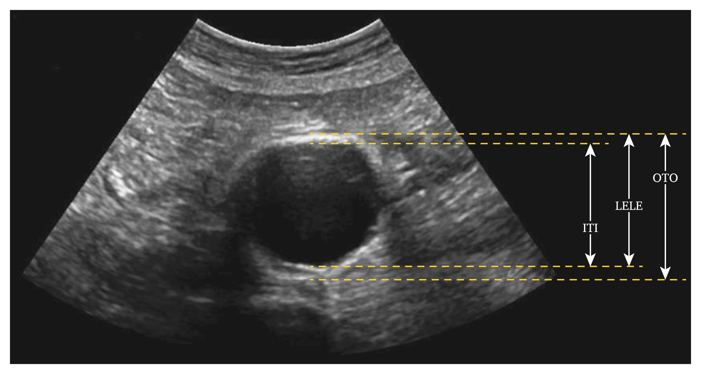
Figura 1. Colocación de los calibres para la medición del diámetro aórtico. ITI = interior a interior; LELE = borde de ataque a borde de ataque; OTO = exterior a exterior.
La literatura existente diverge sobre qué colocación de calibre utilizar. Una reciente revisión sistemática y metanálisis que incluyó 21 estudios mostró que los diferentes métodos son bastante equivalentes en términos de variabilidad intra-observador, mientras que la variabilidad inter-observador fue menor para la colocación de calibre AP OTO. La implicación clínica de esto es, sin embargo, probablemente de poca importancia. Más importante es la diferencia significativa en el diámetro bruto obtenido, siendo las mediciones de pared ITI aproximadamente 3 - 6 mm más pequeñas que las mediciones de pared OTO, y las mediciones LELE intermedias. Este diámetro bruto tiene un impacto importante en quién recibirá el diagnóstico o no en un entorno de cribado; en comparación con ITI, la prevalencia aumenta en un 31% usando LELE y en un 77% usando OTO.
OTO es por lo tanto más sensible en el diagnóstico de una aorta enferma, y las aortas con diámetros sub-aneurismáticos (25 - 29 mm) basados en OTO tendrán menos riesgo de volverse clínicamente relevantes más tarde. Además, las mediciones OTO hacen que el umbral para la reparación se alcance antes, lo cual no es deseable. ITI, por otro lado, tiene la ventaja de proporcionar la medida más relevante del umbral para la reparación con menos operaciones innecesarias en pequeños AAA, y ha demostrado ser seguro en el programa de cribado del UK. Con ITI, sin embargo, es importante asegurar un programa de seguimiento estricto para la dilatación aórtica sub-aneurismática, ya que estos pueden tener un mayor riesgo de convertirse en un AAA que requiera reparación (ver sección 4.1).
Dada la variación de la evidencia y las rutinas establecidas, y los efectos clínicos diferentes y en parte conflictivos de las diferentes colocaciones de calibres, no es factible recomendar un método de medición sobre el otro. Es, no obstante, importante usar un método consistentemente dentro de cada programa clínico y reconocer su impacto específico en la epidemiología y en la toma de decisiones clínicas. La atención insuficiente a los estándares de reporte (especificando el plano y el posicionamiento de los calibres) es una causa importante de mala reproducibilidad inter e intra-observador. El estándar aceptable para la repetibilidad de la medición es que los límites de acuerdo deben ser +/- 5 mm (lo que significa que la diferencia entre mediciones es < 5 mm para el 95% de las mediciones).
7 Rec. 7. Se recomienda la ecografía para el diagnóstico de primera línea y la vigilancia de pequeños aneurismas de aorta abdominal. (I B).
8 Rec. 8. Se debe considerar el plano anteroposterior con una colocación consistente de los calibres como el método preferido para la medición del diámetro aórtico abdominal por ecografía. (IIa B).
3.2.2. Angiografía por tomografía computarizada.
La angiografía por tomografía computarizada (CTA) juega un papel clave en la evaluación de la extensión de la enfermedad y la toma de decisiones terapéuticas y planificación. La CTA es también la modalidad de imagen recomendada para el diagnóstico de rotura y es una herramienta importante en el seguimiento después de la reparación. Varios problemas concernientes a la medición por US se aplican a la medición por CTA, por ejemplo diámetros axiales frente a ortogonales de línea central, cambios con el ciclo cardíaco y detalles de la colocación de calibres. Al aplicar metodologías predefinidas, la reproducibilidad intra-observador puede estar dentro del rango clínicamente aceptado (+/- 5 mm) en el 90% de las mediciones de AAA, pero la reproducibilidad inter-observador es pobre, con el 87% de las comparaciones estando fuera de +/- 5 mm. Esta variabilidad es de gran importancia clínica, ya que el número de pacientes considerados para reparación de AAA, basado en un umbral de diámetro, puede variar del 11% al 24%, del 5% al 20% y del 15% al 23% para tres radiólogos diferentes.
La CTA proporciona varias ventajas para la planificación de la intervención: proporciona un conjunto de datos completo de la aorta toraco-abdominal y los vasos de acceso, lo que con software de post-procesamiento dedicado permite el análisis en tres planos perpendiculares, la construcción de una línea central y la medición precisa de diámetro y longitud. Esta reconstrucción permite la planificación pre-intervención para EVAR y la fusión de imagen tridimensional (3D) de CTA y angiografía para guía perioperatoria en tiempo real. Un prerrequisito para una buena reconstrucción es CTA con un grosor de corte de <= 1 mm. La CTA proporciona información adicional sobre la permeabilidad y estenosis de los tributarios arteriales, posición y/o duplicación de la vena renal izquierda, morfología del cuello e integridad de la pared aórtica al nivel del cuello, útil para la planificación endovascular y OSR.
A menudo hay un pobre acuerdo entre los diámetros de US y CTA, particularmente cerca del umbral de tratamiento. Estas diferencias son probablemente atribuibles a estándares de reporte inadecuados con respecto a la especificación del eje aórtico, plano de medición y colocación de calibres, aunque las diferencias en la instrumentación también contribuirán. Muy a menudo, esto resulta en un diámetro mayor en CTA en comparación con US, y se ha informado que el diámetro AP CTA medio era 4.2 mm mayor que el diámetro AP US y de las aortas de 50 - 55 mm, hasta el 70% de los AAA exceden los 55 mm en CTA. Se recomienda US para la vigilancia de pequeños AAA y CTA para la imagen preoperatoria, es decir, la CTA debe realizarse cuando se ha alcanzado el umbral de tamaño en el que se considera la reparación, según lo evaluado por US (ver sección 4.3).
No infrecuentemente, un AAA se detecta principalmente en una CT (hecha por otra razón). A menudo es razonable basar una decisión de reparación en esa medición, en lugar de un diámetro de US como se recomienda. Sin embargo, en el caso de un diámetro limítrofe, o en caso de incertidumbre con respecto a la operabilidad, puede estar justificado verificar la medición con US, y basar la toma de decisiones posterior en el diámetro de US. El juicio clínico junto con la SDM con el paciente debe determinar cómo se maneja tal situación.
9 Rec. 9. Se recomienda la angiografía por tomografía computarizada para la planificación del tratamiento una vez que se ha alcanzado el umbral de diámetro anteroposterior para la reparación electiva del aneurisma de aorta abdominal en la ecografía, y para el diagnóstico de rotura. (I C).
10 Rec. 10. Se recomienda la medición del diámetro aórtico con angiografía por tomografía computarizada utilizando un software de análisis de posprocesamiento dedicado; con una colocación consistente de los calibres en un plano ortogonal perpendicular a la aorta. (I C).
3.3. Cribado de aneurisma de aorta abdominal
Ha habido cuatro ensayos aleatorizados de cribado poblacional para AAA en hombres en el UK, Dinamarca y Australia y un pequeño ensayo de cribado en mujeres en el UK (Tabla 5). Los cuatro ensayos de cribado en hombres han sido resumidos en una Revisión Cochrane y por el Grupo de Trabajo de Servicios Preventivos de los USA. En general hubo una reducción significativa en la mortalidad específica por AAA con la revisión Cochrane reportando la OR a favor del cribado para hombres como 0.60 y el Grupo de Trabajo Preventivo de los USA reportando una OR de 0.53. En el seguimiento más largo reportado de cada ensayo, la mortalidad por todas las causas fue estadísticamente significativamente menor en los grupos invitados al cribado, riesgo relativo 0.987 (p = .03). Un estudio nacional sueco confirmó posteriormente el resultado de los RCT en un entorno poblacional contemporáneo.
| Características del ensayo | Chichester, UK | Viborg, Dinamarca | MASS, UK | Western Australia |
|---|---|---|---|---|
| Número aleatorizado | 15 775 | 12 628 | 67 800 | 41 000 |
| Sexo | Hombres y mujeres | Hombres | Hombres | Hombres |
| Edad - a | 65-80 | 65-73 | 65-74 | 65-79 |
| Periodo reclutado | 1988-1990 | 1994-1998 | 1997-1999 | 1996-1998 |
| Año de publicación | 1995 | 2002 | 2002 | 2004 |
| Tasa de asistencia - % | 68 | 76 | 80 | 70* |
| Tasa de detección de AAA - % | 4; 7.6 en hombres | 4 | 4.9 | 7.2 |
| Lugar de cribado | Hospital | Hospital | Comunidad | Comunidad |
| Política de intervención | A 60 mm medido como diámetro externo | A 50 mm medido como diámetro interno | A 55 mm medido como diámetro interno | A 55 mm |
| Seguimiento medio - a | 4.1 | 13.0 | 13.1 | 12.8 |
| Mortalidad por AAA, OR (IC 95%) cribado vs. no | 0.59 solo hombres (0.27-1.29) | 0.31 (0.13-0.79) | 0.58 (0.42-0.78) | 0.91 (0.68-1.21) |
| Mortalidad por todas las causas, OR (IC 95%) cribado vs. no | 1.07 (solo hombres) (0.93-1.22) | 0.98 (0.95-1.02) | 0.97 (0.93-1.02) | 0.98 (0.96-1.01) |
Los principales daños del cribado están asociados con una mayor tasa de reparación electiva de AAA (con su morbilidad y mortalidad asociada) y efectos en la QoL. El número de reparaciones electivas aumenta aproximadamente dos veces en las personas invitadas al cribado, aunque esto se compensa parcialmente por la reducción de las reparaciones de emergencia de AAA. La alta tasa de mortalidad asociada con la rotura combinada con el bajo riesgo perioperatorio electivo observado resulta en que el número de hombres necesarios para cribar sea de 667 y para tratar con reparación de AAA de 1.5 para prevenir una muerte prematura relacionada con AAA. Una reciente revisión sistemática y metanálisis que agrupó todos los estudios cuantitativos y cualitativos disponibles con datos de HRQoL pre y post cribado demostró que no hubo un impacto significativo en la HRQoL por estar bajo vigilancia por un AAA detectado por cribado.
Existen varias limitaciones al trasladar los resultados de estos ensayos de cribado a la práctica contemporánea. Todos los ensayos comenzaron en el siglo pasado cuando la prevalencia de AAA en hombres era del 4 - 7% en los hombres cribados y la mayoría de las reparaciones se hacían por OSR. Hoy en día, la prevalencia poblacional de AAA en hombres de 65 años ha disminuido significativamente en varios países europeos y EVAR se ha convertido en la modalidad de tratamiento de elección en reparaciones electivas y de emergencia. Además, la tasa de detección incidental de AAA puede haber aumentado con el uso más generalizado de imágenes diagnósticas, y por último, pero no menos importante, la esperanza de vida ha aumentado sustancialmente.
La evidencia contemporánea de dos países europeos con programas nacionales de cribado de AAA para hombres mayores (UK y Suecia) indica que el cribado sigue siendo costo efectivo en estas economías de salud y continúa siéndolo siempre que el umbral estimado de prevalencia de AAA más bajo sea de aproximadamente 1%; sin embargo, las tasas de detección de AAA ahora han caído por debajo del 1% tanto en Suecia como en el UK (www.gov.uk). En algunos países la prevalencia de AAA entre los hombres de 65 años permanece dentro del rango para que el cribado sea altamente costo efectivo.
Además, la edad óptima de cribado en la que se salvan más vidas y que es costo beneficiosa no se ha evaluado formalmente y con el aumento de la esperanza de vida en Europa, el cribado a edades más avanzadas podría ser beneficioso. Por lo tanto, está justificado revisar la recomendación fuerte (Clase I) de la guía de 2019, que recomendaba que a todos los hombres de 65 años se les ofreciera cribado. Aunque los RCT están parcialmente obsoletos, todavía proporcionan evidencia fuerte de que el cribado de AAA en grupos de alto riesgo es efectivo. Sin embargo, la población objetivo puede haber cambiado. Por lo tanto, el GWC elige emitir una recomendación más general sobre el cribado de grupos de alto riesgo manteniendo la fuerza y el LoE, mientras se abstiene de especificar la población objetivo. La definición de un grupo de alto riesgo varía según las condiciones locales (país), como la prevalencia de AAA, la esperanza de vida y la estructura sanitaria, y esto puede cambiar con el tiempo. La Tabla 6 enumera el potencial para el cribado de AAA en diferentes poblaciones de riesgo basado en la prevalencia de AAA y si están disponibles análisis del efecto y beneficio.
| Grupo de riesgo | Potencial para cribado | |
|---|---|---|
| Hombres | Mujeres | |
| 65 años de edad | + | - |
| 65 años de edad ex fumador o fumador actual | ++ | - |
| Etnia no blanca | - | - |
| Familiar de primer grado con aneurisma de aorta abdominal | +++ | +++ |
| Otros aneurismas periféricos | +++ | +++ |
| Enfermedad cardiovascular | - | - |
| Trasplantado de órgano | ++ | ++ |
El factor de riesgo dominante para AAA, aparte del sexo masculino y la edad, es el tabaquismo. Se ha estimado que el 75% de los casos de AAA son principalmente atribuibles al tabaquismo. El Grupo de Trabajo de Servicios Preventivos de los USA ha recomendado el cribado de AAA para hombres de 65 - 75 años que alguna vez han fumado, basándose en la fuerza de la asociación entre el tabaquismo y el AAA en lugar de la evidencia de los RCT. Con una estrategia de cribado recomendada dirigida a todos los hombres de 65 años, actualmente no hay necesidad de dirigir el cribado basado en el estado de tabaquismo. Sin embargo, en poblaciones con una prevalencia decreciente, una estrategia de cribado de alto riesgo más selectiva basada en el estado de tabaquismo podría ser una alternativa más efectiva que el cribado general.
Hay evidencia limitada para el cribado en mujeres, siendo el único RCT con poca potencia estadística. Por lo tanto, basado en la menor prevalencia de AAA en mujeres, no se ha considerado el cribado poblacional. Se empleó un modelo de simulación de eventos discretos con parámetros de entrada específicamente para mujeres, y la incertidumbre de los parámetros se abordó mediante análisis de sensibilidad deterministas y probabilísticos. El modelo de caso base adoptó la misma edad de cribado (65 años), definición de AAA (>= 30 mm), intervalos de vigilancia y diámetro de AAA para consideración de cirugía (55 mm) que para los hombres. La prevalencia fue baja (0.43%) y las tasas de mortalidad operativa aproximadamente el doble que las de los hombres. El modelo de simulación mostró que el caso base y todos los escenarios alternativos (incluido el cribado a edades más avanzadas, definición de AAA como 25 mm, intervención a umbrales de diámetro más bajos) resultaron en una ganancia mínima en años de vida ajustados por calidad y probablemente no serían costo efectivos. Los autores sugieren que el cribado poblacional de mujeres no debe considerarse en este momento. Canadá sigue siendo el único país con una recomendación (débil) para cribar a mujeres que alguna vez han fumado.
Importantemente, todos los RCT de cribado se llevaron a cabo en áreas socioeconómicas relativamente avanzadas predominantemente fuera de las ciudades más grandes y en personas de etnia blanca. Estudios de etnicidad del UK, han informado una prevalencia muy baja de AAA (0.2%) en sujetos de origen étnico asiático. En los USA, la prevalencia es menor en aquellos de etnia afroamericana que en aquellos de etnia blanca. Esto sugiere que aquellos de etnia no blanca pueden beneficiarse menos del cribado universal. Se ha estimado que la heredabilidad del AAA es del 70%, y hay informes de varios países de una mayor incidencia de AAA entre familiares de primer grado de pacientes con AAA.
En un estudio poblacional sueco, una historia familiar de AAA aumentó el riesgo de AAA dos veces y en un gran estudio de registro de gemelos suecos hubo una probabilidad del 24% de que un gemelo monocigótico de una persona con AAA tuviera la enfermedad. Se sugiere que la historia familiar de AAA está asociada con un crecimiento de aneurisma más rápido y una tasa de rotura más alta y la rotura puede ocurrir a un diámetro de aneurisma más pequeño y a una edad más temprana. En un estudio basado en un modelo de economía de la salud que evaluó el cribado dirigido para AAA en hermanos, la reducción del riesgo absoluto en muertes por AAA fue de cinco por 1 000 invitados con 27 años de vida ajustados por calidad ganados por 1 000 invitados, y la probabilidad de costo efectividad fue del 99%. Se recomienda el cribado de AAA en todos los hombres y mujeres de 50 años y más con un familiar de primer grado con un AAA.
Debido a la alta coexistencia de AAA con otros aneurismas periféricos (ilíaco, femoral, poplíteo), los pacientes con aneurismas periféricos son cribados rutinariamente para AAA, y viceversa. En un estudio de 190 pacientes operados por aneurisma de arteria poplítea, el 39% desarrolló un nuevo aneurisma durante un seguimiento medio de siete años, de los cuales el 43% eran AAA. Algunos estudios relativamente pequeños han indicado una alta incidencia de AAA en pacientes con otra enfermedad cardiovascular: estenosis carotídea, enfermedad coronaria y enfermedad arterial oclusiva periférica (PAOD). El cribado concomitante de AAA durante el examen de US para otras enfermedades cardiovasculares se ha sugerido como una estrategia factible para el cribado dirigido de alto riesgo.
El beneficio del cribado de AAA en pacientes con enfermedad cardiovascular no se ha evaluado formalmente, y la mayor ocurrencia de la enfermedad entre estos pacientes puede verse contrarrestada por una menor esperanza de vida y un mayor riesgo operativo en este subgrupo. Esto se confirmó en un estudio reciente del UK sobre individuos cribados de manera oportunista para AAA durante ecocardiogramas transtorácicos o escaneos dúplex arteriales de miembros inferiores, demostrando una alta prevalencia de AAA (7.1%). Sin embargo, debido a un alto grado de comorbilidad, que limita la idoneidad para la reparación, y a que muchos AAA detectados por cribado son pequeños con una tasa de crecimiento lenta que nunca alcanza el umbral para reparación, solo al 3.7% de los AAA detectados por cribado se les había ofrecido reparación después de una mediana de seguimiento de 7.6 años. Por lo tanto, falta evidencia para apoyar esta estrategia.
La prevalencia de AAA en receptores de trasplantes es supuestamente alta: 14 - 22% en corazón y/o pulmón, 30% en hígado y 11% en receptores de trasplante de riñón. Además, los AAA en pacientes trasplantados parecen propensos a una rápida expansión y rotura (11 - 38%), posiblemente relacionado con la inmunosupresión a la que están expuestos los pacientes. Por lo tanto, en pacientes que se han sometido a un trasplante de órgano sólido, se recomienda el cribado por US para AAA. Sin embargo, no hay datos para sugerir cuándo y con qué frecuencia, pero esto debe determinarse de forma individual, basándose en el órgano trasplantado y otros factores de riesgo.
11 Rec. 11. Se recomienda el cribado por ecografía para la detección temprana del aneurisma de aorta abdominal en poblaciones de alto riesgo para reducir la muerte por rotura del aneurisma. (I A).
3.4. Detección incidental
La imagen diagnóstica utilizada para la investigación de otras patologías incluyendo dolor de espalda o pecho, síntomas abdominales y genitourinarios también puede detectar un AAA. Mientras que el US y la tomografía computarizada (CT) se utilizan más comúnmente, hay otras modalidades de imagen incluyendo imagen por resonancia magnética (MRI), ecocardiografía, colonografía por CT e imagen espinal que pueden diagnosticar un AAA. Hay poca información sobre la sensibilidad y especificidad de estas modalidades de imagen para el diagnóstico de AAA. También existe la preocupante observación de que muchos de estos AAA diagnosticados incidentalmente son ignorados y no remitidos a cirujanos vasculares.
12 Rec. 12. Se recomienda remitir a un cirujano vascular a los pacientes con un aneurisma de aorta abdominal detectado incidentalmente para su evaluación, excepto en casos con una esperanza de vida muy limitada. (I C).
4. MANEJO DE PACIENTES CON UN ANEURISMA DE AORTA ABDOMINAL PEQUEÑO
Este capítulo aborda principalmente los AAA infrarrenales fusiformes estándar. Sin embargo, la mayoría de las recomendaciones aquí contenidas también se aplican a los AAA complejos, a menos que se indique lo contrario. Las consideraciones específicas para los AAA complejos se discuten más a fondo en el Capítulo 8. Para consejos específicos sobre AAA micóticos (infectados), inflamatorios y saculares, pseudoaneurismas y síndromes genéticos, ver Capítulo 10.
4.1. Vigilancia de pequeños aneurismas de aorta abdominal
Con mucho, el estudio más influyente sobre el curso natural de los AAA pequeños de 30 a 55 mm es el estudio RESCAN. Evaluó datos individuales recopilados de 18 estudios diferentes de Europa, Canadá, EE. UU. y Australia con pacientes incluidos entre 1983 y 2008. Se incluyeron más de 15 000 individuos con un pequeño AAA y una media de cuatro años de seguimiento. Estimaron una tasa de crecimiento media del AAA de 2,2 mm/año, independiente de la edad y el sexo, que aumentó en fumadores en 0,4 mm/año y disminuyó en pacientes con diabetes en 0,5 mm/año. Basándose en estas observaciones, los colaboradores de RESCAN sugirieron un intervalo de vigilancia de tres años para los AAA que miden 30 – 39 mm, anualmente para 40 – 49 mm, y cada seis meses para 50 – 54 mm. Esto ha ganado una amplia aceptación y fue adoptado por las guías de AAA de la ESVS de 2019. En ese momento, se dio un régimen de vigilancia neutral en cuanto al sexo, sin tener en cuenta que las mujeres tenían un riesgo de rotura cuatro veces mayor, lo que justifica una vigilancia más frecuente.
La seguridad de la rutina de vigilancia de RESCAN también se ha demostrado en el programa nacional de cribado del Reino Unido, donde el riesgo de rotura del AAA fue tan bajo como el 0,03% anual para hombres con AAA de 3,0 – 44 mm, 0,28% para AAA de 45 – 54 mm, y 0,40% para hombres con AAA justo por debajo del umbral de derivación (50 – 54 mm). La prevalencia de AAA ha cambiado en las últimas dos décadas, en parte debido a una reducción significativa del tabaquismo en la población, junto con mejoras en el manejo del riesgo cardiovascular con un mejor control de la presión arterial (BP) y el uso generalizado de estatinas y antiplaquetarios, resultando en un aumento de la edad de los pacientes que se someten a reparación. Al mismo tiempo, los pequeños AAA se detectan antes, ya sea incidentalmente o a través de programas de cribado poblacional.
Estos cambios han reducido significativamente la tasa de detección de AAA en hombres de 65 años objetivo de los programas de cribado, y podrían haber afectado también potencialmente la tasa de crecimiento de los pequeños AAA. Esto conlleva incertidumbre con respecto a la historia natural actual de los pequeños AAA, lo que podría tener un impacto en los intervalos de vigilancia de los pequeños AAA y potencialmente también en la indicación de reparación. El Comité de Redacción de la Guía (GWC) encargó por tanto a un grupo de trabajo realizar una revisión sistemática y metanálisis con el objetivo de evaluar la tasa de crecimiento contemporánea de los pequeños AAA en vista de los cambios epidemiológicos recientes. El análisis no demostró ninguna tasa de crecimiento modificada clínicamente significativa de los pequeños AAA contemporánea con la epidemiología cambiada del AAA, sugiriendo que las recomendaciones de RESCAN siguen siendo válidas.
En el seguimiento final de MASS, el efecto protector a largo plazo del cribado pareció disminuir debido a roturas después de ocho o más años entre hombres inicialmente cribados como normales (< 30 mm). Aproximadamente la mitad de estas roturas ocurrieron entre aquellos con diámetros aórticos subaneurismáticos (25 – 29 mm) en el momento del cribado. Estudios de cohortes posteriores han demostrado que la mayoría eventualmente progresa a un AAA del cual una proporción sustancial alcanzará el umbral de diámetro para consideración de reparación. En un estudio de cohorte poblacional sueco que incluyó > 1 000 hombres de 65 años con dilatación aórtica subaneurismática detectada por cribado, el 30% alcanzó el diámetro de 55 mm dentro de 10 años.
El estudio también mostró que una política de seguimiento con un examen de ultrasonido (US) después de cinco años puede identificar de manera segura y efectiva aquellos subaneurismas en riesgo de convertirse en un AAA y alcanzar el umbral de diámetro para consideración de reparación. Aunque solo hay evidencia limitada con respecto a la rentabilidad de la vigilancia de personas con dilatación aórtica subaneurismática, el conocimiento actual justifica la recomendación de volver a cribar a los hombres con diámetros aórticos subaneurismáticos con una esperanza de vida razonable después de cinco años. Menos del 5% de todos los hombres cribados caen en esta categoría, lo que significa que esto no requerirá grandes recursos.
En el contexto de la salud específica del paciente, la vigilancia de pequeños AAA que no se espera que alcancen el umbral de diámetro para cuando se considera la reparación dentro de un plazo razonable para que el paciente sea sujeto a reparación electiva, o en pacientes no aptos para reparación, puede no ser necesaria. Los octogenarios con un AAA < 40 mm tienen significativamente menos probabilidad que sus contrapartes más jóvenes de alcanzar alguna vez el tamaño umbral para reparación, y en el caso de crecimiento del AAA mucho menos probabilidad de ser candidatos para reparación, sugiriendo que la vigilancia de pequeños AAA en octogenarios es poco probable que sea beneficiosa. Si se considera la interrupción del seguimiento, el paciente debe estar bien informado, y se debe dar consideración a los deseos del paciente. En un estudio reciente del Reino Unido y Holanda solo el 8% de los pacientes con un AAA manejados conservadoramente recibieron una consulta de cuidados paliativos, indicando una necesidad de mejora.
Debido a los informes de aneurismas sincrónicos en otros lechos vasculares en pacientes con AAA, se aboga por el cribado preoperatorio de la aorta toracoabdominal con angiografía por tomografía computarizada (CTA) y el segmento femoropoplíteo con US (ver sección 5.1.1.). Si dicho cribado debe iniciarse antes, ya en pacientes con pequeños AAA bajo vigilancia, no está claro, y debe determinarse caso por caso.
13 Rec. 13. Se debe considerar la vigilancia por imagen mediante ecografía en los hombres, cada cinco años para una aorta subaneurismática de 25 a 29 mm de diámetro, cada tres años para aneurismas de aorta abdominal de 30 a 39 mm de diámetro, anualmente para aneurismas de 40 a 49 mm, y cada seis meses para aneurismas ≥ 50 mm, teniendo en cuenta la esperanza de vida, la idoneidad para una futura reparación y las preferencias del paciente. (IIa B).
14 Rec. 14. Se debe considerar la vigilancia por imagen mediante ecografía en las mujeres, cada cinco años para una aorta subaneurismática de 25 a 29 mm de diámetro, cada tres años para aneurismas de aorta abdominal de 30 a 39 mm de diámetro, anualmente para aneurismas de 40 a 44 mm, y cada seis meses para aneurismas ≥ 45 mm, teniendo en cuenta la esperanza de vida, la idoneidad para una futura reparación y las preferencias de la paciente. (IIa C).
15 Rec. 15. Se debe considerar la interrupción de la vigilancia en pacientes con pequeños aneurismas de aorta abdominal que no se espera que alcancen el umbral de diámetro para la reparación dentro de su esperanza de vida, o que no son aptos para la reparación, o que prefieren un manejo conservador. (IIa C).
4.2. Manejo médico de pacientes con pequeños aneurismas de aorta abdominal
4.2.1. Reducción del riesgo cardiovascular.
Los pacientes con un AAA tienen un alto riesgo de eventos cardiovasculares futuros. Una revisión sistemática que incluyó 21 artículos demostró un riesgo anual del 3% de muerte cardiovascular en pacientes con un pequeño AAA, con un alto riesgo de enfermedad cardíaca isquémica (IHD) (45%), infarto de miocardio (MI) (27%) y accidente cerebrovascular (14%). Más recientemente, los resultados del ensayo MASS que incluyó a casi 27 000 hombres informan una razón de riesgo (HR) de 2,2 de muerte cardiovascular a largo plazo para pacientes con un pequeño AAA, mientras que el riesgo contemporáneo de eventos cardiovasculares mayores en más de 237 000 hombres con un pequeño AAA en el Programa de Cribado de AAA del NHS inglés (NAAASP) aumentó con una HR de 2,9.
Un estudio que evaluó el tratamiento médico en más de 12 000 pacientes del Reino Unido con un diagnóstico registrado de AAA mostró que las tasas de supervivencia a cinco años mejoraron significativamente para aquellos que tomaban estatinas (68% frente a 42%), terapia antiplaquetaria (64% frente a 40%) o agentes antihipertensivos (62% frente a 39%) en comparación con pacientes con un AAA que no tomaban estos medicamentos. Un análisis más detallado de los agentes antihipertensivos utilizados indicó que los diuréticos pueden ser menos beneficiosos que otros tipos. Sin embargo, solo hay un ensayo controlado aleatorizado (RCT) que evalúa la efectividad a largo plazo de la medicación antiplaquetaria, antihipertensiva o hipolipemiante en la reducción de eventos cardiovasculares y mortalidad en 227 pacientes con un AAA, y evaluó específicamente metoprolol frente a placebo, sin encontrar resultados significativos. Por lo tanto, se recomienda que todos los pacientes con un AAA reciban manejo de factores de riesgo cardiovascular; con abandono del tabaquismo, control de la BP, y terapia con estatinas y antiplaquetarios, así como consejos sobre el estilo de vida (incluyendo ejercicio y una dieta saludable). Para valores objetivo específicos, se hace referencia a las últimas guías dedicadas a la reducción del riesgo cardiovascular. Las guías nacionales pueden especificar qué fármaco antiplaquetario, estatina o agente(s) antihipertensivo(s) se recomiendan, y si es así, deben consultarse.
Las Guías de la ESC de 2021 sobre Prevención de Enfermedades Cardiovasculares en la Práctica Clínica clasifican a los pacientes con un AAA como portadores de una enfermedad cardiovascular aterosclerótica establecida con riesgo cardiovascular alto o muy alto. Se recomienda un tratamiento intensivo de los factores de riesgo (Recomendación de Clase I) que incluye (1) abandono del tabaquismo y recomendaciones de estilo de vida, incluyendo una dieta saludable y ejercicio; (2) terapia antitrombótica; (3) reducción del colesterol de lipoproteínas de baja densidad (LDL) > 50% y < 1,8 mmol/L (< 70 mg/dL) utilizando terapia con estatinas de alta intensidad; y (4) presión arterial sistólica < 130 – 140 mmHg. Se puede considerar un tratamiento de factores de riesgo intensificado adicional, con objetivos de tratamiento más bajos (presión arterial sistólica < 130 mmHg, colesterol LDL < 1,4 mmol/L, o < 55 mg/dL, y terapia antiplaquetaria dual). A pesar de las recomendaciones para el tratamiento con estatinas y antiplaquetarios en pacientes con un AAA, estudios recientes han llamado la atención sobre el hecho de que ambos medicamentos solo se prescriben en aproximadamente el 60%, y en quienes el cumplimiento es tan bajo como el 60%. Además, más del 30% de los pacientes diagnosticados con un AAA en un estudio inglés continuaron fumando, a pesar de la evidencia de que fumar es un factor de riesgo clave para la prevalencia del AAA, el crecimiento del AAA y la rotura del AAA. La introducción de programas de cribado y el aumento del diagnóstico de pequeños AAA brinda una oportunidad para mejorar la prevención del riesgo cardiovascular en estos pacientes en riesgo.
4.2.2. Estrategias para reducir la tasa de crecimiento y rotura del aneurisma.
El manejo médico del AAA generalmente implica la reducción del riesgo cardiovascular, incluyendo terapia antiplaquetaria, estatinas y antihipertensivos, pero no tiene como objetivo reducir las tasas de crecimiento del AAA. Varios RCT evaluando diferentes fármacos, como fármacos antiplaquetarios, inhibidores de la enzima convertidora de angiotensina, betabloqueantes, antibióticos e inhibidores de mastocitos, no han logrado mostrar ningún efecto sobre el crecimiento del AAA (Tabla 7) y actualmente no existe una terapia farmacológica específica para los pequeños AAA.
| Autor, año | Nombre del estudio | Tratamiento evaluado | Incluidos – n | Hallazgos principales |
|---|---|---|---|---|
| Wanhainen et al. (2020) | Ensayo TicAAA | Ticagrelor | 139 pacientes, Ticagrelor (n = 69) | Sin diferencia en el volumen por RM o tasas de crecimiento de diámetro por RM y ultrasonido después de 12 meses de seguimiento |
| Baxter et al. (2020) | N-TA(3)CT | Doxiciclina | 254 pacientes, Doxiciclina (n = 129) | Sin diferencia en las tasas de crecimiento del diámetro por TC después de dos años de seguimiento |
| Golledge et al. (2020) | Ensayo TEDY | Telmisartán | 210 pacientes, Telmisartán (n = 107) | Sin diferencia en las tasas de crecimiento del diámetro por ultrasonido o TC después de dos años de seguimiento |
| Pinchbeck et al. (2018) | Ensayo FAME-2 | Fenofibrato | 140 pacientes, Fenofibrato (n = 70) | Sin diferencia en las tasas de crecimiento después de 24 semanas de seguimiento |
| Kiru et al. (2016) | Ensayo AARDVARK | Perindopril y Amlodipino | 227 pacientes, Amlodipino (n = 72) Perindopril (n = 73) | Sin diferencia en las tasas de crecimiento del diámetro por ultrasonido después de dos años de seguimiento |
| Sillesen et al. (2015) | El ensayo AORTA | Pemirolast | 321 pacientes, 10 mg Pemirolast (n = 80) 25 mg Pemirolast (n = 76) 40 mg Pemirolast (n = 84) | Sin diferencia en las tasas de crecimiento del diámetro por ultrasonido después de 12 meses de seguimiento |
| Meijer et al. (2013) | Ensayo Phast | Doxiciclina | 286 pacientes, Doxiciclina (n = 144) | El tratamiento con Doxiciclina se asoció con un aumento significativo de las tasas de crecimiento del diámetro por ultrasonido después de 18 meses de seguimiento |
| Høgh et al. (2009) | Roxitromicina | 84 pacientes, Roxitromicina (n = 42) | Sin diferencia en las tasas de crecimiento medidas por ultrasonido después de una media de 53 meses de seguimiento | |
| Karlsson et al. (2009) | Azitromicina | 247 pacientes, Azitromicina (n = 122) | Sin diferencia en las tasas de crecimiento del volumen por TC después de 12 meses de seguimiento | |
| Investigadores del Ensayo Propanolol Aneurysm (2002) | Ensayo Propranolol Aneurysm | Propranolol | 548 pacientes, Propranolol (n = 276) | Los pacientes con AAA no toleraron bien el propranolol, sin diferencias en las tasas de crecimiento del diámetro por ultrasonido después de 2,5 años de seguimiento |
| Mosorin et al. (2001) | Doxiciclina | 34 pacientes, Doxiciclina (n = 17) | Sin diferencia en las tasas de crecimiento del diámetro por ultrasonido después de 18 meses de seguimiento | |
| Vammen et al. (2001) | Roxitromicina | 92 pacientes, Roxitromicina (n = 43) | El tratamiento con Roxitromicina durante cuatro semanas se asoció con tasas de crecimiento del diámetro por ultrasonido reducidas después de 1,5 años de seguimiento (p = ,020) | |
| Lindholt et al. (1999) | Propranolol | 54 pacientes | Ensayo detenido después de dos años debido a una tasa de abandono significativa |
El papel de las estatinas en la reducción del crecimiento del AAA no ha sido evaluado formalmente, con una falta de RCT que analicen específicamente el efecto de las estatinas en las tasas de crecimiento del AAA. Sin embargo, los datos observacionales sugieren repetidamente que las estatinas pueden estar asociadas con una reducción en la progresión y rotura del AAA, y sus efectos en la reducción de la mortalidad cardiovascular han sido probados repetidamente, y, por lo tanto, deben considerarse en todos los pacientes con AAA. Como consecuencia, es imposible realizar un estudio controlado con placebo para evaluar su posible efecto sobre el crecimiento del AAA.
Los pacientes con diabetes tienen una tasa de crecimiento de AAA más lenta que los pacientes sin diabetes, y una serie de estudios experimentales recientes y datos observacionales sugieren un posible efecto inhibidor del crecimiento de la metformina, utilizada para tratar la diabetes tipo II. Hay varios RCT en curso que evalúan los efectos de la metformina en el crecimiento del AAA (ClinicalTrials.gov), pero no se han publicado datos.
Los estudios observacionales han mostrado consistentemente que fumar está asociado con un aumento en las tasas de crecimiento y rotura del AAA. El abandono del tabaquismo parece estar asociado con una reducción aproximada del 20% en la tasa de crecimiento, así como con la reducción a la mitad del riesgo de rotura del aneurisma. Los RCT han demostrado que el abandono del tabaquismo es más efectivo cuando se apoya con fármacos y asesoramiento. Así, además del efecto positivo sobre la salud general, especialmente cardiovascular, el abandono del tabaquismo también tiene efectos beneficiosos específicos importantes para el AAA. Por lo tanto, se recomienda a todos los pacientes con un pequeño AAA que dejen de fumar y se les debe proporcionar ayuda para hacerlo.
16 Rec. 16. Se recomienda que todos los pacientes con aneurisma de aorta abdominal reciban un manejo de los factores de riesgo cardiovascular; con abandono del tabaquismo, control de la presión arterial, terapia con estatinas y antiplaquetarios, y consejos sobre el estilo de vida (incluyendo ejercicio y dieta saludable). (I B).
17 Rec. 17. Se recomienda que los pacientes con un pequeño aneurisma de aorta abdominal dejen de fumar y reciban ayuda para hacerlo, para reducir la tasa de crecimiento del aneurisma de aorta abdominal y el riesgo de rotura. (I B).
4.2.3. Antibióticos fluoroquinolonas en pacientes con aneurisma de aorta abdominal.
En 2018, la FDA de EE. UU. y el Comité de Evaluación de Riesgos de Farmacovigilancia (PRAC) de la EMA emitieron advertencias sobre una asociación observada entre el uso de fluoroquinolonas y un mayor riesgo de AAA y disecciones en la aorta, basándose en cuatro estudios observacionales. Los cuatro estudios definieron el riesgo de AAA como diferencias en el número de códigos ICD de AAA no específicos registrados entre cohortes expuestas a fluoroquinolonas frente a no expuestas, o frente a otro antibiótico. Colectivamente, la tasa de códigos ICD de AAA fue aproximadamente el doble entre los expuestos a fluoroquinolonas. El riesgo de confusión residual significativa fue, sin embargo, alto en todos los estudios. En particular, se combinaron los códigos ICD para la enfermedad de AAA asintomática y sintomática, mientras que al mismo tiempo no se controlaba el estado de las imágenes, lo que resultaba en la dificultad de diferenciar entre AAA incidentales inofensivos y AAA dañinos. Los antibióticos utilizados como controles para las fluoroquinolonas pueden haber estado asociados con diferentes indicaciones y estudios diagnósticos, resultando en tasas potencialmente diferentes de detección de AAA incidentales. Los resultados de disección aórtica se presentaron combinados con AAA, a pesar de que las enfermedades tienen diferentes etiologías e historias naturales, y los expuestos a fluoroquinolonas y los controles tenían tasas significativamente diferentes de factores de riesgo cardiovascular. En resumen, la interpretación de la asociación entre la exposición a fluoroquinolonas y el daño real por AAA en estos estudios no estaba clara, a pesar de una conformidad en el riesgo elevado reportado de AAA.
Hasta la fecha, se han publicado varios estudios adicionales que analizan el riesgo de AAA por exposición a fluoroquinolonas. Algunos señalan un mayor riesgo de AAA por exposición a fluoroquinolonas, otros no reportan mayor riesgo. Todos son no aleatorizados, retrospectivos y basados en registros, y la mayoría define el riesgo de AAA como la detección de cualquier tipo de código ICD para AAA documentado en estrecha proximidad a la exposición a fluoroquinolonas sin controlar los factores de confusión más importantes. Dos estudios; un estudio de cohorte observacional y un estudio de casos y controles anidado, han reportado resultados de enfermedad de AAA asintomática y sintomática por separado, analizaron cohortes de magnitud y tipo de infección similares, controlando el estado de las imágenes, utilizando antibióticos comparadores con perfiles de indicación similares, así como controlando los principales factores de riesgo cardiovascular, incluido el estado de tabaquismo. Estos estudios no reportaron un mayor riesgo de AAA por exposición a fluoroquinolonas. Una conclusión similar se reportó en un estudio reciente de combinación de cohorte (n = 3 586 207) y caso cruzado (n = 95 198). Las asociaciones entre el uso de fluoroquinolonas y el aumento en el riesgo de hospitalización con aneurisma aórtico o disección aórtica observadas en los análisis del estudio de cohorte no ajustados y en relación con los no usuarios en el estudio de caso cruzado se perdieron después del ajuste de covariables y en relación con los antibióticos comparadores (cefalosporina). Este hallazgo respalda aún más que las asociaciones reportadas entre el uso de fluoroquinolonas y el riesgo de hospitalización con aneurisma aórtico o disección se deben a confusión.
En consecuencia, actualmente no hay evidencia suficiente para apoyar que la presencia de un AAA deba sopesarse en la decisión de usar fluoroquinolonas o no en estos pacientes.
18 Rec. 18. Tener un pequeño aneurisma de aorta abdominal no es una contraindicación para el uso de antibióticos fluoroquinolonas. (III B).
4.3. Actividad física y conducción
En un RCT, el ejercicio se consideró seguro en pacientes con pequeños AAA, y el entrenamiento durante hasta tres años no influyó en la tasa de agrandamiento del AAA. Se demostró que el entrenamiento de ejercicio interválico de intensidad moderada a alta era seguro en pacientes con grandes AAA (>= 70 mm) en espera de reparación quirúrgica, asumiendo una estricta adherencia a las pautas de seguridad (presión arterial sistólica < 180 mmHg y/o frecuencia cardíaca < 95% del máximo).
Por lo tanto, no hay datos que sugieran que el ejercicio pueda ser perjudicial para los pacientes con pequeños AAA. Por el contrario, es importante reconocer el efecto positivo del ejercicio en la salud general de los pacientes con pequeños AAA que tienen comorbilidad cardiovascular. Por ende, no es aconsejable desalentar estas actividades. Además, estudios retrospectivos de un solo centro han demostrado que tanto las pruebas de función pulmonar basadas en espirometría, las pruebas de ejercicio cardiopulmonar y la ecocardiografía de estrés con dobutamina se pueden realizar de manera segura en pacientes programados para reparación de AAA. Sin embargo, dado el pequeño número de grandes AAA en estos estudios, no es posible sacar conclusiones firmes sobre la seguridad de los pacientes con un diámetro de aneurisma > 70 mm. La información disponible no permite dar consejos bien fundamentados sobre actividades deportivas específicas. Los informes de casos han asociado los deportes de fuerza, como el levantamiento de pesas pesadas, con la disección aórtica, que se cree que es causada por la maniobra de Valsalva que resulta en un pico agudo de BP. Aunque no se ha reportado el equivalente para la rotura del AAA, puede ser aconsejable la moderación con tales actividades deportivas vigorosas para pacientes con un AAA grande.
Asimismo, es importante señalar la falta de evidencia de que la actividad sexual pueda ser peligrosa para los pacientes con pequeños AAA. Una revisión reciente de la literatura no encontró literatura científica disponible con respecto a la idoneidad para conducir para pacientes con AAA. La única información disponible es la legislación en las guías de agencias de transporte, que, sin embargo, carecen consistentemente de información sobre la base de las recomendaciones dadas.
Existen discrepancias en la legislación con respecto a la aptitud del paciente para conducir basada en el tamaño del aneurisma entre países, siendo algunos más conservadores al restringir la capacidad del paciente para conducir una vez que un aneurisma se considera limítrofe. Por ejemplo, en Nueva Zelanda, Australia, España y Alemania, los pacientes pierden la capacidad de conducir una vez que un aneurisma alcanza los 55 mm, mientras que en el Reino Unido los pacientes pueden conducir hasta que el diámetro del aneurisma alcanza los 65 mm, y en Canadá, el umbral de diámetro del AAA se basa en el sexo (65 mm para hombres y 60 mm para mujeres). En Suecia se utiliza un umbral específico de 55 mm solo para conductores profesionales de vehículos pesados, como autobuses y camiones, mientras que la revocación de licencias de conducir para automóviles, incluidos taxis, y motocicletas está indicada en caso de riesgo considerable de rotura repentina sin un umbral de diámetro especificado (www.transportsyrelsen.se). En algunos países, como el Reino Unido, se justifica la vigilancia continua independientemente de la aptitud del paciente para la reparación con el fin de evaluar la idoneidad para continuar conduciendo. Debido a la falta de evidencia y a la legislación inconsistente entre países, el GWC se abstiene de emitir una recomendación sobre la conducción en pacientes con AAA, pero remite a las regulaciones locales.
19 Rec. 19. No está indicado restringir el ejercicio o la actividad sexual en pacientes con pequeños aneurismas de aorta abdominal. (III B).
4.4. Indicaciones para reparación electiva
La decisión inmediata sobre el tamaño al que se debe reparar un aneurisma se basa en el equilibrio entre el riesgo de rotura del aneurisma (que es fatal en > 80% de los casos) y el riesgo de mortalidad operativa de la reparación del aneurisma. Hoy en día, con el aumento de la esperanza de vida, también es necesario considerar el pronóstico a largo plazo, incluyendo la durabilidad, la vigilancia, la esperanza de vida y la calidad de vida (QoL) después de la reparación del AAA. Además, la preferencia del paciente es, por supuesto, clave en la toma de decisiones (ver Capítulo 11).
El manejo de aneurismas fusiformes, degenerativos de 40 – 55 mm de diámetro ha sido determinado efectivamente por cuatro RCT, incluyendo dos grandes RCT multicéntricos de cirugía electiva abierta temprana frente a vigilancia, el UK Small Aneurysm Trial (UKSAT) y el estudio American Aneurysm Detection And Management (ADAM), y dos ensayos más pequeños de reparación endovascular frente a vigilancia, el ensayo Comparison of surveillance vs. Aortic Endografting for Small Aneurysm Repair (CAESAR) y el estudio Positive Impact of endoVascular Options for Treating Aneurysm early (PIVOTAL). El consenso de estos ensayos es que los aneurismas < 55 mm de diámetro deben manejarse de manera conservadora, y se ha resumido en una revisión Cochrane, mostrando que la vigilancia era segura en hombres. Esto se ha confirmado que es seguro para los hombres en dos programas nacionales de cribado en Inglaterra y Suecia.
A pesar de esta evidencia de alta calidad, los AAA en hombres todavía se reparan por debajo del umbral de diámetro de 55 mm en varios países, particularmente aquellos con atención médica financiada con fondos privados, y muchas de estas reparaciones incumplen los estándares de calidad. Un análisis basado en registros administrativos mostró una mortalidad relacionada con aneurisma poblacional significativamente menor en los EE. UU., donde más del 40% de las reparaciones se realizaron en pequeños AAA < 55 mm, a diferencia del Reino Unido, donde la tasa de reparación de pequeños AAA fue inferior al 10%. Este artículo, sin embargo, ha sido cuestionado por razones relacionadas con las tasas de detección incidental, diferencias en los sistemas de codificación, estructura de la población y gasto total en atención médica, así como las indicaciones para la cirugía y el impacto del cribado poblacional.
Otro tema de debate es qué modalidad de imagen y metodología se debe utilizar para las decisiones sobre la reparación. Se sabe que las mediciones de CTA proporcionan un diámetro mayor que el US, y es común realizar una CTA con un diámetro justo por debajo del umbral de diámetro en el que se considera la reparación según lo medido por US, obteniendo así probablemente un diámetro mayor que puede justificar innecesariamente la reparación.
El riesgo de rotura de AAA < 55 mm es muy bajo en hombres y oscila entre 0,3 y 0,8% por año. La modalidad y metodología de medición del diámetro máximo varía sin embargo y a veces no están claramente definidas (ver también Capítulo 3). El UKSAT utilizó el diámetro AP máximo con US (colocación de calibres desconocida) y los otros ensayos utilizaron CTA; ADAM y CAESAR utilizaron el diámetro máximo de línea central en cualquier plano, mientras que PIVOTAL no especificó. RESCAN fue un metanálisis de datos de pacientes individuales y estimó que el riesgo de rotura era del 0,6% por año para los hombres hasta un diámetro de 55 mm. Si bien las tasas absolutas de crecimiento fueron similares para mujeres y hombres, hubo marcadas diferencias en los riesgos absolutos de rotura. Las mujeres tenían un riesgo de rotura cuatro veces mayor para todos los tamaños de AAA y alcanzaron un riesgo de rotura superior al 1% en un tiempo mucho más corto que los hombres. En un estudio de cohorte de cribado poblacional, la tasa de rotura anual para AAA de hasta 60 mm fue del 0,8%. Los datos decisivos provienen del NAAASP en el Reino Unido. Las unidades de cribado utilizan US para la vigilancia y utilizan el diámetro AP interior a interior (ITI). Las tasas de rotura en hombres fueron del 0,4% por año para diámetros entre 50 y 54 mm (lo que se traduce a diámetros de TC entre 55 y 59 mm). Los estudios sobre el riesgo de rotura de pequeños AAA se muestran en la Tabla 8.
| Estudio | Reclutamiento | Modalidad | Medición | Umbral | Roturas |
|---|---|---|---|---|---|
| ADAM | 1992-2000 | CTA | El diámetro del aneurisma se definió como la medición transversal externa máxima en cualquier plano pero perpendicular a cualquier curva en el vaso | 55 mm | 0,6%/año |
| UKSAT | 1991-1998 | US | Diámetro anteroposterior máximo | 55 mm | 0,6%/año |
| CEASAR | 2004-2008 | CTA | El diámetro del aneurisma se definió en la tomografía computarizada en la medición transversal externa máxima en cualquier plano pero perpendicular al eje del vaso | 55 mm | 2/178 (1,1%) después de 24 y 52 meses de seguimiento |
| PIVOTAL | No especificado | CTA | AAA infrarrenales entre 4,0 y 50 mm de diámetro por tomografía computarizada | 55 mm | 0,3%/20 meses |
| NAAASP | 2009-2017 | US | Diámetro anteroposterior máximo interior a interior | 55 mm | 0,03% por año (IC 95% 0,02-0,05%) para hombres con AAA pequeños 0,28% (0,17-0,44%) para AAA medianos 0,40% (0,22-0,73%) para hombres con AAA justo por debajo del umbral de derivación (50-54 mm) |
| Scott | 1988-1995 | US | Se registraron los diámetros aórticos máximos tanto en los planos transversales como anteroposteriores | 60 mm | 0,8%/año |
| RESCAN | Metanálisis IPD | US | Diámetro interior a interior y exterior a exterior | 55 mm | 0,64%/año a 50 mm (hombres) 2,97%/año a 50 mm (mujeres) |
Múltiples artículos han reportado el diámetro medio en el momento de la rotura, que varía entre 75 – 80 mm para los hombres y 67 mm para las mujeres. Alrededor del 8 – 10% de las operaciones de rAAA se realizan para aneurismas con un diámetro < 55 mm. Esto se ha presentado como un argumento para reducir el umbral de diámetro actual en el que se considera la reparación. Esta es, sin embargo, una conclusión equivocada. A pesar de que los pequeños AAA tienen un riesgo muy bajo de rotura, su gran número en la población (debido a la distribución normal del diámetro aórtico) los convierte en una proporción considerable de todas las operaciones por rAAA. Esto se ve reforzado por un estudio de VASCUNET, que muestra que el diámetro promedio en la reparación varía entre países, pero esto no se traduce en un número reducido de operaciones por rAAA.
Un estudio reciente de registro de vigilancia prospectivo, que incluyó a 332 pacientes con grandes AAA sometidos a reparación tardía por más de un año y 1 033 pacientes con grandes AAA que no se sometieron a reparación, con mayor frecuencia debido a la preferencia del paciente o comorbilidad, informó una incidencia acumulada de rotura a tres años del 3,4% para un tamaño inicial de AAA de 50 – 54 mm (solo mujeres), 2,2% para 55 – 60 mm, 6,0% para 61 – 70 mm, y 18,4% para > 70 mm. Las mujeres con tamaño de AAA de 61 – 70 mm tuvieron una incidencia acumulada de rotura a tres años del 12,8% en comparación con el 4,5% en hombres (p = ,002).
En conclusión, en los hombres el riesgo de rotura es muy bajo (0,3 – 0,8% por año) para los AAA con un diámetro por debajo de 55 mm medido con US, lo que se traduce a un diámetro en CTA entre 55 – 62 mm dependiendo de qué metodología de medición se utilice. Por lo tanto, no hay necesidad de reducir el umbral de diámetro para la reparación o realizar una CTA cuando el US mide el diámetro del AAA < 55 mm en hombres. Por el contrario, basándose en los datos del NAAASP se ha sugerido elevar el umbral de diámetro a 60 mm cuando se basa en CTA. Aunque es posible que el umbral deba elevarse en el futuro, el GWC no cree que haya suficiente respaldo en este momento. Sin embargo, el GWC ha optado por emitir una nueva recomendación negativa fuerte de reparación electiva de AAA < 55 mm, y rebajar la recomendación sobre el umbral para considerar la reparación en hombres (de Clase I y LoE A a Clase IIa y LoE C) debido al hecho de que los RCT subyacentes a esta recomendación solo mostraron que no vale la pena operar AAA < 55 mm, lo que solo sugiere indirectamente que la reparación electiva debe considerarse en AAA más grandes que eso, es decir, 55 mm. Para enfatizar aún más la falta de un límite de diámetro distinto basado en evidencia para cuando debe tener lugar la reparación electiva, nos abstenemos de etiquetarlo como un umbral en la recomendación revisada.
Existe evidencia anecdótica de que el crecimiento rápido del aneurisma (> 10 mm/año) se asocia con un mayor riesgo de rotura. Las instancias de presunto crecimiento rápido del aneurisma pueden estar relacionadas con errores de medición y la primera acción debe ser volver a medir el diámetro del aneurisma. En un estudio de cohorte prospectivo, la mayoría de los pequeños AAA mostraron un crecimiento lineal, mientras que los patrones de crecimiento no lineal (estacato o exponencial) fueron poco frecuentes cuando se utilizó un laboratorio central para informar el diámetro del AAA. Ningún paciente con un diámetro basal de AAA menor de 42 mm excedió los umbrales de diámetro en los que se considera la reparación dentro de los dos años, sugiriendo que continuar el seguimiento por imagen es seguro independientemente del patrón de crecimiento.
El riesgo de rotura para un pequeño AAA es aproximadamente cuatro veces mayor en mujeres que en hombres. En el metanálisis RESCAN, la tasa de rotura para mujeres con un AAA de 42 mm fue aproximadamente la misma que la de un hombre con un AAA de 55 mm, sugiriendo que un umbral de diámetro en el que se considera la cirugía de 45 mm puede ser apropiado en mujeres. Por otro lado, la mortalidad operativa es mayor en mujeres que en hombres para la reparación endovascular y abierta. Por lo tanto, falta buena evidencia sobre el umbral de diámetro para la reparación en mujeres, pero puede ser prudente considerar la reparación del aneurisma a diámetros más bajos, más cerca de 50 mm medidos con US. Aunque el límite de 55 mm continúa creando debate y el cumplimiento varía, la evidencia es convincente para no operar en AAA < 55 mm en hombres, y se ha aceptado que el umbral de diámetro para considerar la reparación en mujeres debe reducirse. La información al paciente sobre la seguridad de la vigilancia de pequeños AAA puede mejorar la adherencia a esta recomendación.
20 Rec. 20. No se recomienda la reparación electiva en hombres con un aneurisma de aorta abdominal asintomático < 55 mm. (III A).
21 Rec. 21. No se recomienda la reparación electiva en mujeres con un aneurisma de aorta abdominal asintomático < 50 mm. (III C).
22 Rec. 22. Se debe considerar la reparación electiva en hombres con un aneurisma de aorta abdominal ≥ 55 mm. (IIa C).
23 Rec. 23. Se puede considerar la reparación electiva en mujeres con un aneurisma de aorta abdominal ≥ 50 mm. (IIb C).
24 Rec. 24. Se debe considerar la nueva medición del diámetro del aneurisma como primera medida en pacientes con pequeños aneurismas de aorta abdominal que muestran un crecimiento rápido (≥ 10 mm/año). (IIa C).
Hay un número significativo de pacientes con AAA que no se consideran adecuados para reparación (incluyendo EVAR) debido a comorbilidades o esperanza de vida limitada. Entre 3 026 hombres remitidos para posible intervención dentro del NAAASP, el 8% fueron rechazados para reparación por razones médicas. Ha habido solo un RCT para evaluar si EVAR proporcionó un beneficio de supervivencia para pacientes demasiado comprometidos físicamente para someterse a OSR, el ensayo EVAR 2. Este ensayo mostró que en estos pacientes físicamente frágiles, aunque EVAR previno la muerte por rotura de aneurisma, la mortalidad operativa fue alta (7%) y no ofreció ningún beneficio en términos de supervivencia general hasta los 12 años, con dos tercios de ambos grupos aleatorizados muertos dentro de cinco años.
Sin embargo, es probable que haya una escala móvil para evaluar la aptitud para la reparación a medida que el aneurisma se agranda, con barreras más bajas para la aptitud en aneurismas abdominales > 70 mm de diámetro. Por lo tanto, los pacientes deben mantenerse bajo vigilancia y ser remitidos a otras especialidades relevantes para optimizar su aptitud física. En estos pacientes con una alta carga de comorbilidades cardiovasculares, las estrategias para reducir el riesgo cardiovascular son cruciales, especialmente porque los datos sugieren que las estatinas pueden reducir el riesgo de rotura de AAA pequeños y grandes y que el riesgo de rotura aumenta dos veces en fumadores actuales.
25 Rec. 25. Se debe considerar la vigilancia continua, la derivación a otros especialistas para optimizar su estado físico y luego la reevaluación en pacientes con un aneurisma de aorta abdominal que han alcanzado el umbral de diámetro para la reparación, pero que inicialmente se consideran no aptos para la reparación. (IIa C).
5. REPARACIÓN ELECTIVA DE ANEURISMA DE AORTA ABDOMINAL
Este capítulo se centra en los AAA infrarrenales no rotos para casos que son susceptibles de tratamiento electivo mediante una endoprótesis estándar disponible comercialmente, o mediante OSR utilizando un pinzamiento aórtico infrarrenal en circunstancias electivas. Para AAA rotos y sintomáticos no rotos ver Capítulo 6, y para AAA yuxta y suprarrenales Capítulo 8.
5.1. Manejo preoperatorio
5.1.1. Evaluación de la anatomía vascular.
La imagen aórtica dedicada es crucial para determinar una estrategia de reparación adecuada y para planificar óptimamente el preoperatorio. Dado que la presencia de aneurismas sincrónicos en otros lechos vasculares puede influir en la toma de decisiones quirúrgicas, se recomienda el cribado de toda la aorta con CTA y del segmento femoropoplíteo con US.
La viabilidad de EVAR y su éxito temprano y a largo plazo dependen de una evaluación inicial fiable de la morfología aórtica, incluyendo las zonas de aterrizaje para la fijación y el sellado, y mediciones correctas para la selección adecuada de la endoprótesis (Tabla 9). Se han establecido varios criterios que definen la idoneidad del paciente para EVAR de acuerdo con las IFU definidas por los fabricantes de dispositivos.
| 1. Cuello proximal a ser pinzado o utilizado como zona de aterrizaje, incluyendo diámetro y longitud, angulación, forma, presencia y extensión de calcificación y aterotrombosis |
| 2. Arterias ilíacas a ser pinzadas o utilizadas para acceso y zona de aterrizaje, incluyendo: permeabilidad; diámetro y longitud; angulación y tortuosidad; extensión de calcificación y aterotrombosis; permeabilidad de las arterias ilíacas internas y circulación pélvica; presencia de aneurismas de arteria ilíaca |
| 3. Vasos de acceso y vasos de salida de miembros inferiores y circulación |
| 4. Anatomía y permeabilidad de arterias viscerales y presencia de arterias renales accesorias |
| 5. Aneurismas concomitantes en arterias viscerales o aorta torácica |
| 6. Presencia de aorta "shaggy" (degeneración ateromatosa extensa de la aorta con trombos parietales irregulares y placas ulceradas, que potencialmente pueden conducir a eventos ateroembólicos) |
| 7. Otro: Anomalías venosas, incluyendo posición y permeabilidad de la vena cava inferior y vena renal izquierda; posición de órganos, incluyendo riñón pélvico o en herradura; signos de enfermedad concomitante que alteren potencialmente el pronóstico y, por lo tanto, la indicación de reparación |
Aunque no hay RCT sobre la mejor modalidad de imagen, el consenso es que la CTA con cortes finos (<= 1 mm), incluyendo reconstrucciones vasculares 3D multiplanares y curvas, es la modalidad de imagen preoperatoria preferida.
26 Rec. 26. Antes de la reparación del aneurisma de aorta abdominal, se debe considerar la imagen de cribado rutinaria de toda la aorta, los accesos y las arterias femoropoplíteas. (IIa C).
27 Rec. 27. Antes de la reparación endovascular aórtica abdominal, se debe considerar la planificación detallada del procedimiento preoperatorio con angiografía por tomografía computarizada, incluido el uso de un análisis de software de posprocesamiento dedicado. (IIa C).
5.1.2. Evaluación del riesgo operativo y optimización.
En una Revisión Cochrane, la mortalidad operativa a 30 días o intrahospitalaria con EVAR fue menor que con OSR en pacientes aptos para cirugía (1.4% frente a 4.2%, OR 0.33). El riesgo de mortalidad fue mayor en mujeres, en comparación con hombres, para OSR (OR 1.49) y más aún para EVAR (OR 1.86). Las guías de la ESC clasifican la OSR como una intervención de alto riesgo (definida como portadora de un riesgo de muerte cardiovascular o MI del 5% o más dentro de los 30 días), mientras que EVAR se clasifica como una intervención de riesgo intermedio con un riesgo cardíaco entre 1% y 5%. Esta sección proporciona una visión general amplia de los factores relevantes que deben tenerse en cuenta en la evaluación preoperatoria de pacientes sometidos a reparación aórtica.
Existe una amplia guía sobre la evaluación y reducción del riesgo operativo que debe consultarse para obtener información en profundidad. Como mínimo, todos los pacientes deben someterse a una historia médica y examen clínico, evaluación funcional, hemograma completo, electrolitos y función renal, y electrocardiograma. Las pruebas adicionales dependen de las circunstancias individuales del paciente como se describe a continuación.
Un RCT del Reino Unido ha demostrado que un período de entrenamiento físico supervisado preoperatorio es beneficioso para los pacientes sometidos a cirugía aórtica abierta o endovascular al reducir las complicaciones cardíacas, respiratorias y renales posoperatorias, así como reducir la duración de la estancia hospitalaria. Además, un estudio contemporáneo de un RCT de programa de ejercicios comunitarios de 24 semanas demostró parámetros de prueba de ejercicio cardiopulmonar mejorados para aquellos aleatorizados a ejercicio. Sin embargo, una revisión Cochrane contemporánea concluyó que, debido a la evidencia de baja certeza, la prehabilitación podría reducir ligeramente las complicaciones cardíacas y renales en comparación con la atención estándar, pero persistía la incertidumbre sobre el impacto en la mortalidad a 30 días, las complicaciones pulmonares, la necesidad de reintervención o el sangrado posoperatorio.
Se ha demostrado que el abandono del tabaquismo antes de tanto EVAR como OSR reduce las complicaciones respiratorias y la tasa de mortalidad al año en una serie grande reciente reportada de la Iniciativa de Calidad Vascular de la Sociedad de Cirugía Vascular (SVS-VQI) (consulte también la sección 4.2.1 Recomendación 16 y sección 4.2.2 Recomendación 18).
5.1.2.1. Evaluación y manejo del riesgo cardíaco.
Las complicaciones cardíacas se estiman que causan hasta el 42% de las muertes perioperatorias después de cirugía no cardíaca y el nivel de riesgo cardíaco debe evaluarse clínicamente. En casos con enfermedad cardiovascular activa, como angina inestable, insuficiencia cardíaca descompensada, enfermedad valvular grave y disritmia significativa, se requiere una evaluación y manejo especializados adicionales antes de la planificación de la reparación del AAA. En ausencia de enfermedad cardiovascular activa, deben evaluarse los factores de riesgo cardiovascular clínicos (Tabla 10) y la capacidad funcional del paciente (Tabla 11).
| Predictores de complicaciones cardíacas | Predictores de complicaciones pulmonares | Predictores de complicaciones renales |
|---|---|---|
| Edad | Edad >= 60 años | Insuficiencia renal preexistente |
| Historia de enfermedad cardíaca isquémica sintomática | Enfermedad pulmonar obstructiva crónica preexistente | Enfermedad cardíaca congestiva |
| Historia de insuficiencia cardíaca congestiva | Insuficiencia cardíaca congestiva | Enfermedad pulmonar obstructiva crónica |
| Historia de enfermedad cerebrovascular sintomática | Nivel de albúmina sérica <= 3.5 g/dL | Enfermedad arterial oclusiva periférica |
| Aclaramiento de creatinina < 60 mL/min o creatinina sérica > 170 mmol/L | FEV1 < 70% del esperado | Diabetes mellitus |
| Diabetes mellitus | FVC < 70% del esperado | Hipertensión arterial |
| Estado funcional en términos de vida independiente | FEV1/FVC < 0.65 | |
| Clase 3/4 de la Sociedad Americana de Anestesiología |
La capacidad funcional se estima por la capacidad del paciente para realizar actividades de la vida diaria, evaluada por equivalente metabólico (MET), que se estima como la tasa de gasto energético mientras se está sentado en reposo. Por convención 1 MET corresponde a 3.5 mL O2/kg/min.
| Nivel de actividad | Ejemplo de actividad |
|---|---|
| Pobre (MET < 4) | Comer, vestirse, tareas domésticas ligeras (lavar platos, cocinar, hacer la cama) |
| Moderado (MET 4-7) | Subir dos tramos de escaleras, caminar cuesta arriba, trotar < 10 minutos, tareas domésticas pesadas (fregar el suelo o mover muebles), cortar el césped a mano, palear nieve a mano |
| Bueno (MET 7-10) | Tenis, andar en bicicleta a ritmo moderado, natación de ocio, trotar > 10 minutos |
| Excelente (MET > 10) | Deportes extenuantes como ciclismo de montaña cuesta arriba, fútbol, baloncesto, karate, correr 10 km/h o más |
Los pacientes capaces de actividades físicas moderadas (Tabla 11), como subir dos tramos de escaleras o correr una distancia corta (MET >= 4), no se beneficiarán de pruebas adicionales. Los pacientes con mala capacidad funcional (MET < 4) y o con factores de riesgo clínicos significativos deben ser remitidos a un especialista para estudio cardíaco antes de la reparación del AAA. Aunque la mala capacidad sola está solo débilmente asociada con resultados deteriorados después de la reparación aórtica, el pronóstico cardíaco es bueno si la capacidad funcional es alta, incluso en presencia de IHD estable u otros factores de riesgo. El estudio cardíaco incluye evaluación no invasiva de disfunción ventricular izquierda, anomalías de válvulas cardíacas e isquemia miocárdica inducida por estrés. La angiografía coronaria invasiva, por el contrario, debe seguir las mismas indicaciones que en un entorno no quirúrgico y no usarse rutinariamente para la evaluación del riesgo perioperatorio antes de la cirugía aórtica.
Los biomarcadores (p. ej., troponina T y péptido natriurético tipo B) no deben usarse rutinariamente en la estratificación de riesgo preoperatoria, pero pueden considerarse selectivamente en pacientes de alto riesgo, por ejemplo con mala capacidad funcional o sospecha de IHD relevante. Dos RCT han demostrado que los pacientes con enfermedad arterial coronaria estable no se benefician de la revascularización profiláctica antes de la cirugía vascular, incluso considerando aquellos con enfermedad del tronco común izquierdo y de tres vasos, o aquellos con una fracción de eyección ventricular izquierda por debajo del 35%. Por lo tanto, la revascularización coronaria preoperatoria no debe realizarse profilácticamente sino reservarse para pacientes con enfermedad arterial coronaria inestable, MI agudo, o aquellos considerados con un riesgo coronario prohibitivo de reparación de AAA.
Para pacientes sometidos a revascularización coronaria intervencionista antes de la reparación del AAA, el riesgo de trombosis intrastent es más alto durante las primeras seis semanas después de la colocación del stent coronario, y la terapia antiplaquetaria dual no debe interrumpirse durante este período de tiempo. Si se han utilizado stents de metal desnudo, se puede considerar la reducción a monoterapia antiplaquetaria después de seis semanas. En contraste, si se han utilizado stents liberadores de fármacos, la terapia antiplaquetaria dual no debe interrumpirse durante 3 - 12 meses dependiendo de los stents liberadores de fármacos específicos utilizados. Por lo tanto, la reparación electiva del AAA generalmente debe retrasarse si es posible si la terapia antiplaquetaria dual necesita detenerse para la cirugía. Alternativamente, EVAR puede realizarse bajo terapia antiplaquetaria dual si la reparación del AAA no puede posponerse.
Los pacientes con insuficiencia cardíaca (Clases Funcionales III y IV de la New York Heart Association: limitación marcada de la actividad debido a síntomas, y síntomas severos en reposo respectivamente) deben ser optimizados farmacológicamente bajo guía experta. La reparación aórtica electiva debe diferirse siempre que sea posible hasta que la insuficiencia cardíaca haya sido evaluada y tratada adecuadamente. Una cuidadosa reunión multidisciplinaria debe evaluar el riesgo beneficio del tratamiento para cada paciente individualmente.
La estenosis de la válvula aórtica es la enfermedad cardíaca valvular más relevante en el contexto de la reparación del AAA, porque aumenta el riesgo asociado con la pérdida de sangre, cambios de volumen y disritmia. Los pacientes con estenosis de válvula aórtica severa (definida como gradiente medio > 40 mmHg, área valvular < 1 cm2, y velocidad pico del chorro > 4.0 m/s) deben ser considerados para reemplazo de válvula aórtica antes de la reparación electiva del AAA. La implantación de válvula aórtica transcatéter transfemoral puede realizarse simultánea o secuencialmente, pero el enfoque óptimo y el momento de la implantación de válvula aórtica transcatéter es en gran parte inexplorado y debe determinarse caso por caso.
Se deben consultar las guías aplicables para orientación específica sobre el manejo perioperatorio de pacientes con enfermedad cardíaca coronaria, congestiva y valvular.
28 Rec. 28. No está indicada la derivación rutinaria para un estudio cardíaco preoperatorio, angiografía coronaria, prueba de ejercicio cardiopulmonar y revascularización coronaria rutinaria en pacientes con enfermedad arterial coronaria estable antes de la reparación del aneurisma de aorta abdominal. (III C).
29 Rec. 29. Se recomienda derivar para estudio cardíaco y optimización antes de la reparación electiva del aneurisma de aorta abdominal a los pacientes con mala capacidad funcional (definida como equivalentes metabólicos < 4) o con factores de riesgo clínico significativos (angina inestable, insuficiencia cardíaca descompensada, enfermedad valvular grave y arritmias significativas). (I C).
30 Rec. 30. Se puede considerar retrasar la reparación del aneurisma de aorta abdominal hasta después de la reducción a monoterapia en pacientes con terapia antiplaquetaria dual después de una intervención coronaria percutánea. Por el contrario, se puede considerar realizar la reparación aórtica endovascular bajo terapia antiplaquetaria dual si la reparación no puede posponerse. (IIb C).
5.1.2.2. Evaluación y manejo del riesgo pulmonar.
Las complicaciones pulmonares incluyendo atelectasia, neumonía, insuficiencia respiratoria y exacerbación de enfermedad pulmonar crónica subyacente pueden aumentar la morbilidad perioperatoria y la duración de la estancia hospitalaria en una medida similar a las complicaciones cardíacas en pacientes después de cirugía mayor no cardíaca. Las estrategias de evaluación de riesgo se han publicado previamente y ciertos factores de riesgo indican pacientes en riesgo (Tabla 10).
Las pruebas de función pulmonar con espirometría no han demostrado ser superiores a la evaluación clínica en la predicción de complicaciones pulmonares posoperatorias. Por lo tanto, no se recomiendan las pruebas de función pulmonar rutinarias con espirometría, sino que deben reservarse para pacientes en riesgo de complicaciones pulmonares.
La radiografía de tórax rutinaria antes de la reparación del AAA es redundante ya que la CT de toda la aorta (incluyendo el tórax) generalmente se ha hecho y no mejora la estratificación del riesgo preoperatorio y no se recomienda. En pacientes con sospecha de función respiratoria comprometida en la evaluación clínica, se recomienda el estudio respiratorio y la optimización antes de la reparación del AAA.
Se debe fomentar el abandono del tabaquismo en cada paciente con AAA (ver Capítulo 4).
31 Rec. 31. No está indicada la prueba de función pulmonar rutinaria con espirometría o radiografía de tórax antes de la reparación electiva del aneurisma de aorta abdominal. (III C).
32 Rec. 32. Se recomienda derivar para estudio respiratorio y optimización antes de la reparación electiva del aneurisma de aorta abdominal a los pacientes con factores de riesgo de complicaciones pulmonares o una disminución reciente de la función respiratoria. (I C).
5.1.2.3. Evaluación y optimización de la función renal.
El deterioro posoperatorio de la función renal es un predictor conocido de aumento de morbilidad y mortalidad a largo plazo, y los pacientes con insuficiencia renal preexistente, enfermedad cardíaca congestiva, enfermedad pulmonar obstructiva crónica (EPOC), PAOD, diabetes mellitus o hipertensión arterial están en riesgo particular (Tabla 10). En el contexto de la reparación abierta o endovascular de AAA, la disfunción renal preexistente es uno de los predictores más importantes de morbilidad y mortalidad perioperatoria.
Los pacientes sometidos a reparación de AAA deben tener su creatinina sérica medida para evaluar la función renal preoperatoria (i.e., tasa de filtración glomerular estimada (eGFR) según el Grupo de Estudio de Modificación de la Dieta en la Enfermedad Renal o la fórmula de Cockcroft y Gault). Aunque no existen criterios establecidos sobre el nivel de disfunción renal que requiere derivación a servicios renales especializados, una eGFR por debajo de < 60 mL/min/1.73 m2 se ha considerado como compromiso renal, y < 30 mL/min/1.73 m2 como grave y por lo tanto justifica una derivación urgente.
Los pacientes con insuficiencia renal grave (i.e., Enfermedad renal crónica Etapas 4 o 5; eGFR < 30 mL/min/1.73 m2) deben ser evaluados por un nefrólogo para optimizar la función renal antes de la reparación aórtica electiva. Datos recientes de la base de datos VQI sugieren que en pacientes con enfermedad renal crónica Etapa 5, EVAR electivo puede necesitar reservarse para AAA >= 70 mm a menos que se demuestren otras características anatómicas preocupantes, debido a una tasa de mortalidad a un año más alta de lo esperado. Los pacientes con insuficiencia renal leve a moderada (i.e., enfermedad renal crónica Etapas 2 o 3; eGFR < 60 pero > 30 mL/min/1.73 m2) deben estar adecuadamente hidratados antes de la reparación del AAA, especialmente cuando se utilizarán medios de contraste intraarteriales. Actualmente, no se han demostrado estrategias efectivas claras además de la hidratación adecuada para prevenir la lesión renal aguda posoperatoria después de la reparación del AAA. Por lo tanto, la producción de orina siempre debe monitorizarse perioperatoriamente.
33 Rec. 33. Se recomienda la evaluación de la función renal preoperatoria mediante la medición de la creatinina sérica y la estimación de la tasa de filtración glomerular antes de la reparación electiva del aneurisma de aorta abdominal, con derivación a un nefrólogo en caso de insuficiencia renal grave (tasa de filtración glomerular estimada < 30 mL/min/1,73 m²). (I C).
34 Rec. 34. Se recomienda que los pacientes con insuficiencia renal estén adecuadamente hidratados antes de la reparación electiva del aneurisma de aorta abdominal. (I C).
5.1.2.4. Evaluación y optimización del estado nutricional.
El estado nutricional es un determinante importante de la mortalidad y morbilidad perioperatoria. En un análisis observacional de 15 000 pacientes sometidos a reparación de AAA, la mortalidad a 30 días y la incidencia de reoperaciones y complicaciones pulmonares aumentaron con la hipoalbuminemia después de la reparación de AAA tanto abierta (n = 4 956) como endovascular (n = 10 046). Por lo tanto, el estado nutricional debe evaluarse antes de la cirugía aórtica para la estratificación del riesgo. Un nivel de albúmina de < 2.8 g/dL debe considerarse como desnutrición grave y se asocia con resultados significativamente peores. En esta situación, las deficiencias nutricionales deben corregirse antes de OSR electiva y EVAR electivo, aunque la eficacia no ha sido evaluada por RCT en pacientes con AAA. La derivación a un dietista médico puede ser aconsejable y debe considerarse dependiendo del grado y calidad de la deficiencia nutricional.
35 Rec. 35. Se debe considerar la evaluación del estado nutricional preoperatorio mediante la medición de la albúmina sérica antes de la reparación electiva del aneurisma de aorta abdominal, con un nivel de albúmina de < 2,8 g/dL como umbral para la corrección preoperatoria. (IIa C).
5.1.2.5. Evaluación de la arteria carótida.
Entre más de 15 000 pacientes operados de AAA en la base de datos del Programa Nacional de Mejora de la Calidad de los Estados Unidos, el riesgo de accidente cerebrovascular perioperatorio fue del 0.8% después de OSR y 0.5% después de EVAR. La prevalencia de estenosis de arteria carótida interna es alta entre los pacientes con AAA debido a factores de riesgo similares. En el estudio Second Manifestations of ARTerial Disease (SMART) el 8.8% de todos los pacientes con AAA tenían una estenosis asintomática de la arteria carótida interna de al menos el 70%. No hay, sin embargo, asociación entre la estenosis de arteria carótida asintomática y el accidente cerebrovascular perioperatorio después de cirugía no cardíaca.
Por lo tanto, la evidencia actual no apoya el cribado preoperatorio rutinario ni la intervención carotídea rutinaria para la estenosis carotídea asintomática antes de la reparación del AAA, lo que está de acuerdo con las guías de Carótida de la ESVS 2023 que recomiendan en contra (Clase III) del cribado carotídeo rutinario en pacientes (neurológicamente) asintomáticos, o endarterectomía carotídea profiláctica o colocación de stent carotídeo antes de procedimientos quirúrgicos mayores no cardíacos en pacientes con estenosis de arteria carótida asintomática del 50 - 99%.
En un gran estudio de cohorte nacional danés en pacientes con antecedentes de accidente cerebrovascular sometidos a cirugía electiva no cardíaca, la tasa de accidente cerebrovascular perioperatorio fue del 11.9% si las operaciones se realizaron dentro de los tres meses posteriores al accidente cerebrovascular, disminuyendo al 4.5% tres a seis meses después del accidente cerebrovascular y al 1.8% seis a 12 meses después del evento frente al 0.1% en pacientes sin antecedentes de accidente cerebrovascular. Por lo tanto, los pacientes con estenosis de arteria carótida interna recientemente sintomática (menos de seis meses) pueden requerir un manejo adecuado de la estenosis de la arteria carótida antes de la reparación del AAA para reducir el riesgo general de accidente cerebrovascular, lo cual es consistente con las guías de Carótida de la ESVS 2023 donde se emitió una recomendación fuerte (Clase I) para realizar revascularización carotídea antes de procedimientos quirúrgicos electivos no cardíacos.
36 Rec. 36. No está indicado el cribado rutinario de estenosis carotídea asintomática ni la intervención carotídea profiláctica rutinaria para estenosis de arteria carótida asintomática antes de la reparación del aneurisma de aorta abdominal. (III B).
37 Rec. 37. Se recomienda la intervención carotídea antes de la reparación electiva del aneurisma de aorta abdominal para pacientes con aneurismas de aorta abdominal y estenosis carotídea sintomática concomitante (en los últimos seis meses) del 50-99%. (I B).
5.1.2.6. Evaluación de fragilidad y sarcopenia.
La fragilidad se define como una reserva disminuida y resistencia a los estresores debido a declives acumulativos a través de múltiples sistemas fisiológicos. En una revisión sistemática, incluyendo 22 estudios de cohorte y un RCT, se encontró que la fragilidad general, evaluada como estado funcional, estaba asociada con un riesgo significativamente mayor de mortalidad a 30 días después de la reparación del AAA (OR 5.1), mientras que la masa muscular central predijo la mortalidad por todas las causas a largo plazo después de la reparación del AAA (HR 2.1). La sarcopenia se define como la pérdida progresiva y generalizada de masa muscular esquelética y función muscular, a menudo medida como masa del músculo psoas. En una revisión sistemática y metanálisis, incluyendo 1 440 pacientes de siete cohortes observacionales, se encontró un vínculo significativo entre sarcopenia y muerte después de la reparación del AAA (HR 1.7) y un análisis de subgrupos incluyendo solo pacientes que se sometieron a EVAR mostró un beneficio de supervivencia marginal para pacientes sin baja masa muscular esquelética (HR 1.9).
Si el uso de la puntuación de fragilidad o la medición de sarcopenia añade algo más allá de las evaluaciones de riesgo ya establecidas, como el estado funcional y el estado cardiovascular, sin embargo, aún no se ha confirmado y se requiere más evidencia antes de que estas herramientas puedan usarse en el proceso de toma de decisiones.
5.2. Manejo perioperatorio
5.2.1. Mejor tratamiento médico perioperatorio.
Los RCT sobre betabloqueantes iniciados nuevamente dentro de las 24 horas posteriores a la cirugía vascular demostraron ninguna ventaja en pacientes de bajo riesgo, o mostraron un aumento de la mortalidad por todas las causas, hipotensión y accidente cerebrovascular, a pesar de las tasas reducidas de MI perioperatorio. Una revisión Cochrane reciente sobre el tratamiento farmacológico de pacientes con AAA no identificó ningún dato nuevo sobre betabloqueantes y sugirió que la calidad de la evidencia era insuficiente para sacar conclusiones sólidas. En un metanálisis, incluyendo 32 000 pacientes de tres RCT, cinco estudios de cohorte retrospectivos y tres estudios de cohorte prospectivos, los betabloqueantes no mejoraron los resultados perioperatorios en cirugía vascular y endovascular. Los pacientes que ya toman una dosis adecuada de betabloqueantes deben continuar este tratamiento.
Múltiples estudios observacionales han sugerido que los pacientes que toman estatinas tienen tasas más bajas de MI y accidente cerebrovascular después de cirugía vascular, y dos RCT confirmaron que el uso perioperatorio de estatinas (media 30 - 37 días) redujo los eventos cardiovasculares adversos después de cirugía vascular. Estos hallazgos han sido corroborados en un metanálisis reciente, que informó beneficios de supervivencia a corto plazo después de la reparación de AAA para pacientes que toman estatinas.
La monoterapia antiplaquetaria con aspirina o tienopiridinas (p. ej., clopidogrel) no plantea un riesgo excesivo de sangrado durante la reparación del AAA. En un subestudio del RCT Peri-operative Ischaemic Evaluation 2 (POISE-2), incluyendo 265 pacientes sometidos a reparación de AAA, la retirada perioperatoria de la terapia crónica con aspirina no aumentó las complicaciones cardiovasculares o vasculares oclusivas. Aunque un efecto protector de los antiplaquetarios perioperatorios es incierto, falta evidencia para la necesidad de retirar la monoterapia antiplaquetaria antes de EVAR u OSR para AAA.
Ciertas circunstancias pueden requerir la continuación de antiplaquetarios duales, pero principalmente en pacientes de alto riesgo, en quienes el equilibrio de riesgos de la reparación del AAA debe considerarse cuidadosamente. La experiencia de la terapia dual incluyendo agentes antiplaquetarios más potentes, como prasugrel y ticagrelor, y reparación de AAA es muy limitada pero probablemente se asocia con un mayor riesgo de sangrado grave y debe evitarse. La warfarina y los anticoagulantes orales directos deben interrumpirse al menos cinco días y dos días respectivamente, antes de la cirugía para mitigar el riesgo de sangrado excesivo. Dependiendo de las indicaciones para su uso, la anticoagulación puede ser puenteada durante el período perioperatorio utilizando un agente de acción corta como heparina de bajo peso molecular (LMWH) o heparina no fraccionada. En general, deben consultarse las guías aplicables para obtener orientación específica sobre la terapia antiplaquetaria y o anticoagulante durante el período perioperatorio de la reparación del AAA.
Datos contemporáneos del VQI en los EE. UU. han identificado que la terapia combinada de estatinas y antiplaquetarios al alta después de la reparación electiva de AAA por OSR o EVAR se asoció con un beneficio de supervivencia a largo plazo, particularmente para aquellos con antecedentes de enfermedad cardiovascular aterosclerótica.
38 Rec. 38. No se recomienda el inicio de betabloqueantes antes de la reparación del aneurisma de aorta abdominal. (III A).
39 Rec. 39. Se recomienda que los pacientes sometidos a reparación electiva de aneurismas de aorta abdominal comiencen el tratamiento con estatinas preoperatoriamente (idealmente al menos cuatro semanas antes de la cirugía) y continúen indefinidamente después de la operación. (I A).
40 Rec. 40. Se debe considerar la continuación de la monoterapia establecida con aspirina o tienopiridinas (por ejemplo, clopidogrel) durante el período perioperatorio en pacientes sometidos a reparación electiva abierta o endovascular del aneurisma de aorta abdominal. (IIa B).
41 Rec. 41. No se recomienda que los pacientes sometidos a reparación electiva de aneurismas de aorta abdominal estén con terapia dual o anticoagulantes orales durante el período perioperatorio. (III C).
5.2.2. Profilaxis antibiótica.
Múltiples RCT han demostrado los beneficios de la profilaxis antibiótica sistémica de amplio espectro durante la reconstrucción arterial. Datos contemporáneos del SVS-VQI confirman que los antibióticos profilácticos reducen las infecciones del sitio quirúrgico y la mortalidad hospitalaria después de EVAR. Por lo tanto, se recomienda la profilaxis antibiótica intravenosa perioperatoria antes de la reparación de AAA tanto abierta como endovascular, con la elección del agente basada en las guías institucionales locales.
Se ha descrito una asociación entre el estado dental y la endocarditis de válvula protésica, por lo que algunos abogan por el examen rutinario del estado dental antes de cirugía cardíaca mayor con implantación. Sin embargo, la evidencia para el beneficio de esta rutina es insuficiente y hay recomendaciones divergentes entre las sociedades profesionales. La incidencia de infección de injerto aórtico o endoprótesis es significativamente menor que para la endocarditis de válvula protésica y falta la correlación correspondiente con el estado dental. Aunque es razonable remediar una infección dental establecida o sospechada antes de la reparación del AAA, falta apoyo para el examen dental rutinario antes de la reparación aórtica.
42 Rec. 42. Se recomienda que todos los pacientes sometidos a reparación abierta o endovascular de aneurisma de aorta abdominal reciban profilaxis antibiótica sistémica perioperatoria. (I A).
5.2.3. Anestesia y manejo del dolor posoperatorio.
La terapia multimodal del dolor, incluyendo el uso de un régimen no opioide debe instituirse para maximizar la eficacia del alivio del dolor, mientras se minimiza el riesgo de efectos secundarios y complicaciones. Este enfoque puede incluir el uso de analgesia epidural, analgesia controlada por el paciente o colocación de catéteres para infusión continua de agentes anestésicos locales en la herida.
Para la reparación abierta de AAA, una revisión Cochrane incluyendo 1 498 pacientes de 15 ensayos demostró que la analgesia epidural posoperatoria proporcionaba un mejor manejo del dolor en comparación con la analgesia basada en opioides sistémicos incluyendo tasas reducidas de MI, extubación endotraqueal más rápida con incidencia reducida de insuficiencia respiratoria posoperatoria y estancias más cortas en la unidad de cuidados intensivos (UCI). Sin embargo, no hubo diferencia en la mortalidad a 30 días. En contraste, un estudio retrospectivo de los EE. UU., investigando 1 540 pacientes sometidos a cirugía electiva de AAA, encontró una supervivencia mejorada y tasas de morbilidad y mortalidad significativamente más bajas si la anestesia general se combinaba con anestesia epidural.
Estos hallazgos sin embargo no fueron respaldados por un estudio retrospectivo más reciente basado en datos del Programa Nacional de Mejora de la Calidad Quirúrgica (NSQIP) en los EE. UU. de 2 145 pacientes sometidos a OSR, que no informó beneficio de supervivencia o reducción en complicaciones mayores de la anestesia epidural y general combinada para OSR y además mayores requisitos de transfusión de sangre. Hay una gran cantidad de evidencia que apoya el uso de analgesia continua de la herida basada en catéter en cirugía cardiotorácica, ortopédica, general, urológica y ginecológica, pero no hay datos publicados específicos para la cirugía aórtica.
No hay RCT comparando varios métodos de anestesia para EVAR en AAA. El estudio de registro internacional multicéntrico Endurant Stent Graft Natural Selection Global Post-Market Registry (ENGAGE) examinó los resultados de 1 231 pacientes sometidos a EVAR bajo anestesia general (62% de pacientes), regional (27%) y local (11%). Los investigadores concluyeron que el tipo de anestesia no influyó en la mortalidad o morbilidad perioperatoria. Un metanálisis contemporáneo informó que los beneficios de la anestesia local en EVAR eran menos claros durante la reparación electiva que en la rAAA. La anestesia locorregional, embargo, pareció reducir el tiempo del procedimiento, los ingresos en UCI y la estancia hospitalaria posoperatoria y datos del Registro Vascular Nacional del Reino Unido incluyendo 9 783 pacientes que recibieron un EVAR infrarenal estándar electivo mostraron una tasa de mortalidad a 30 días más baja después de anestesia regional vs. general.
Si bien los datos con respecto al método preferido de anestesia en EVAR electivo son limitados, el GWC encuentra apropiado, a la luz de la evidencia actual y el beneficio comprobado de la anestesia local en EVAR roto, emitir una recomendación débil favoreciendo la anestesia locorregional sobre la anestesia general en entornos electivos.
43 Rec. 43. Se puede considerar la analgesia epidural perioperatoria o la analgesia continua de la herida basada en catéter para maximizar el alivio del dolor y minimizar las complicaciones posoperatorias tempranas en pacientes sometidos a reparación abierta electiva de aneurisma de aorta abdominal. (IIb A).
44 Rec. 44. Se puede considerar la anestesia locorregional con preferencia a la anestesia general en pacientes sometidos a reparación endovascular electiva de aneurisma de aorta abdominal. (IIb C).
5.2.4. Imagen intraoperatoria.
El éxito técnico de EVAR depende de una imagen intraoperatoria precisa. Para EVAR estándar, la angiografía por sustracción digital (DSA) regular suele ser suficiente para asegurar el despliegue correcto de la endoprótesis y detectar la presencia de endofugas. Otras modalidades de imagen intraoperatoria, como fusión de imagen, tomografía computarizada de haz cónico y ultrasonido intravascular (IVUS) también pueden ser de valor en EVAR estándar, reduciendo la dosis de radiación e identificando endofugas y compresión y acodamiento de la endoprótesis, sin embargo se utilizan principalmente en EVAR compleja y se discuten más a fondo en el Capítulo 8.
5.2.5. Medidas de radioprotección.
Es esencial que los clínicos que trabajan con radiación entiendan los riesgos involucrados (para pacientes, ellos mismos y otro personal sanitario) y las medidas que pueden minimizar este riesgo y la dosis de radiación. Se ha demostrado que la radiación durante EVAR causa daño agudo al ácido desoxirribonucleico en operadores así como daños crónicos al ácido desoxirribonucleico, incluyendo aberraciones cromosómicas que pueden presagiar inestabilidad genómica y predisposición a malignidad, y la investigación ha destacado el beneficio de usar protección completa.
Se ha demostrado que la adherencia al principio ALARA (tan bajo como sea razonablemente posible) reduce la exposición a la radiación durante EVAR, y los operadores deben conocer y aplicar el principio ALARA para proteger al paciente, a ellos mismos y a los miembros del equipo.
Además, los sistemas modernos de imagen fija han demostrado reducir las dosis de radiación tanto para pacientes como para proveedores y debe evitarse EVAR realizado con un brazo en C móvil. Una revisión contemporánea también ha apoyado el uso de quirófanos híbridos y equipos de imagen modernos para mejorar la calidad de imagen y reducir la exposición a la radiación.
La Tabla 12 resume las medidas de seguridad radiológica recomendadas durante EVAR de AAA. Para obtener más información y recomendaciones detalladas con respecto a la seguridad y protección radiológica, consulte las guías de seguridad radiológica de la ESVS 2023.
| Mantener la distancia de la fuente de radiación |
| Limitar la tasa de pulso de fluoroscopia, tiempo de exposición, uso de adquisiciones de sustracción digital, angulaciones pronunciadas del brazo en C y aumento |
| Posicionar el intensificador de imagen cerca del paciente y poner la mesa alta, con un haz bien colimado |
| Uso diligente y posicionamiento apropiado de escudos de plomo, incluyendo escudos personales (delantal personalizado, tiroides, espinillas y gafas) y escudos móviles |
| Uso de técnicas avanzadas de imagen (p. ej., fusión de imagen) |
| Uso de quirófano híbrido, con un sistema de imagen fijo (en preferencia sobre un sistema móvil) |
5.2.6. Recuperación de células.
La recuperación intraoperatoria de glóbulos rojos implica aspiración, lavado y filtración de sangre del paciente durante una operación para minimizar la pérdida de sangre mediante retransfusión. Se ha demostrado que la recuperación de células reduce la necesidad del uso intraoperatorio de sangre alogénica durante la reparación abierta electiva de AAA. Datos contemporáneos también han sugerido que el uso de recuperación de células reduce las tasas de mortalidad a un año después de OSR.
45 Rec. 45. Se debe considerar el uso intraoperatorio de recuperación de células y retransfusión durante la reparación abierta de aneurisma de aorta abdominal. (IIa B).
5.2.7. Administración intraoperatoria de heparina.
Para minimizar el riesgo de trombosis debido a estasis, la heparina se administra sistémicamente antes del pinzamiento, o localmente, durante OSR o al inicio de EVAR. Aunque, una revisión sistemática encontró evidencia limitada para la eficacia de la heparina en la reparación de AAA, es un principio general de cirugía vascular. Las dosis aceptadas oscilan entre 50 y 100 UI/kg, y la eficacia de la heparina puede probarse utilizando una prueba de tiempo de coagulación activado (ACT) para asegurar una anticoagulación adecuada. En un estudio de registro multicéntrico (midiendo el ACT durante procedimientos arteriales no cardíacos), incluyendo 186 pacientes sometidos a procedimientos arteriales no cardíacos, una dosis estandarizada de 5 000 UI de heparina no proporcionó una anticoagulación adecuada, resultando en complicaciones tromboembólicas en el 9% de los pacientes. Una dosis basada en el peso con una dosis inicial de 100 UI/kg fue más apropiada para alcanzar niveles de anticoagulación adecuados, con un ACT objetivo >= 200 segundos resultando en la frecuencia más baja de complicaciones tromboembólicas (4.3%). Para limitar las complicaciones de sangrado, un ACT objetivo de 200 - 220 segundos pareció óptimo. Se anticipa información relevante adicional del ensayo en curso ACT Guided Heparinisation During Open Abdominal Aortic Aneurysm Repair (ACTION-1), un RCT investigando si la heparinización guiada por ACT resulta en una coagulación segura y más óptima que 5 000 UI como bolo único durante la reparación abierta de AAA.
Una vez que la perfusión periférica se ha restablecido, el sulfato de protamina puede administrarse para revertir la heparinización basándose en la prueba de ACT y la presencia de sangrado difuso o rezumamiento. No hay, sin embargo, datos con respecto al papel de la protamina específicamente en la reparación del AAA.
46 Rec. 46. Se recomienda la administración intraoperatoria de heparina intravenosa (50-100 UI/kg) en la reparación electiva abierta o endovascular de aneurisma de aorta abdominal. (I C).
47 Rec. 47. Se puede considerar el uso intraoperatorio del tiempo de coagulación activado (ACT) durante la reparación abierta y endovascular de aneurisma de aorta abdominal, para medir el efecto de la heparina en el paciente individual y guiar la administración adicional de heparina. (IIb B).
5.2.8. Profilaxis de trombosis venosa.
El tromboembolismo venoso (VTE) es una causa importante de morbilidad y mortalidad posoperatoria después de cirugía mayor, a menudo causada por inmovilización y vejez. En consecuencia, se recomienda la profilaxis rutinaria de VTE después de cirugía abdominal mayor y ortopédica.
Hay, sin embargo, una escasez de literatura que aborde la efectividad de la profilaxis de VTE específicamente en el entorno de reparación de AAA. En un estudio retrospectivo de un solo centro la incidencia de VTE sintomático fue del 4% después de OSR y 0% después de EVAR, con un riesgo reducido después de quimioprofilaxis. Un metanálisis sobre el efecto de la profilaxis de VTE en pacientes sometidos a cirugía vascular, incluyendo ocho publicaciones de OSR y EVAR, solo pudo demostrar una tendencia no estadísticamente significativa hacia un menor riesgo de VTE entre pacientes que recibían profilaxis de VTE (RR 0.7). Los autores sugirieron una estrategia selectiva de profilaxis de VTE, basada en el riesgo de desarrollo de VTE posoperatorio, en pacientes sometidos a cirugía vascular mayor. De manera similar, una revisión sistemática y metanálisis reciente de RCT evaluando el papel de la tromboprofilaxis después de cirugía vascular, incluyendo ocho estudios con un total de 3 130 pacientes, demostró una tendencia no significativa hacia un menor riesgo de trombosis venosa profunda (DVT) posoperatoria (RR 0.3, p = .060) y embolia pulmonar (RR 0.17, p = .17) entre pacientes que recibían profilaxis de VTE. No hubo diferencia para los resultados de sangrado entre anticoagulantes y placebo, y no hubo diferencia significativa en los resultados cuando LMWH se comparó directamente con heparina no fraccionada. En resumen, se recomienda evaluar el riesgo de VTE posoperatorio en todos los pacientes sometidos a reparación electiva de AAA, y en pacientes considerados en riesgo, debe considerarse la tromboprofilaxis. Deben consultarse las rutinas hospitalarias locales con respecto a la elección del fármaco, dosis y duración.
48 Rec. 48. Se debe considerar la tromboprofilaxis en todos los pacientes sometidos a reparación electiva de aneurisma de aorta abdominal y considerados en riesgo de tromboembolismo venoso posoperatorio. (IIa C).
5.3. Técnicas para la reparación electiva de aneurisma de aorta abdominal
5.3.1. Reparación abierta
5.3.1.1. Tipos de injertos.
Material de poliéster textil, específicamente tereftalato de polietileno, comúnmente conocido por su nombre comercial Dacron, ha sido el material más frecuentemente utilizado durante 70 años. Diferentes fabricantes emplean diferentes tipos de impregnación de sellado (i.e., gelatina, albúmina, etc.) para obtener porosidad cero del injerto. El politetrafluoroetileno expandido (ePTFE) también se ha utilizado para la reconstrucción aortoilíaca. No hay datos que sugieran que un injerto sea superior a otro.
Están disponibles injertos vasculares con sustancias antimicrobianas como plata con o sin Triclosán o rifampicina. Una revisión sistemática y metanálisis reciente identificó solo seis estudios sobre estrategias de recubrimiento antimicrobiano como antibióticos (n = 3) y plata (n = 3), con solo tres comparando injertos recubiertos con no recubiertos (dos antibióticos y uno plata). Dos RCT informaron sobre el efecto protector de los injertos empapados en rifampicina sobre la infección del injerto y no mostraron efecto significativo en los períodos posoperatorios temprano (dos meses; OR 0.69, IC 95% 0.29 - 1.62) o tardío (dos años; OR 0.73, IC 95% 0.23 - 2.32). Un estudio de cohorte retrospectivo centrado en el efecto de los injertos recubiertos de plata no reveló ninguna ventaja (OR 0.19, IC 95% 0.02 - 1.64). Por lo tanto, no hay evidencia que apoye el uso rutinario de estos injertos, o empapar injertos en rifampicina, para prevenir o reducir la infección del injerto aórtico (AGI).
49 Rec. 49. No se recomienda el uso rutinario de injertos recubiertos de antimicrobianos para prevenir la infección del injerto aórtico en la reparación abierta de aneurisma de aorta abdominal. (III B).
5.3.1.2. Incisión y abordaje.
Una incisión en la línea media a través de la línea alba desde el xifoides hasta el pubis es la técnica más ampliamente utilizada debido a su flexibilidad y la opción de acceder a todos los órganos abdominales con relativa facilidad. Los accesos alternativos incluyen la incisión subcostal transversal debajo de la caja torácica permitiendo un buen acceso a las porciones yuxtarrenal, suprarrenal y celíaca de la aorta, y el abordaje retroperitoneal izquierdo proporcionando acceso en enfermedad aneurismática más proximal, aneurismas inflamatorios o abdomen hostil. Un RCT en una población con AAA mostró una menor incidencia de hernia después de incisión transversal que incisión vertical. Una revisión Cochrane sin embargo no encontró diferencia clínicamente importante entre incisiones de línea media y transversales en cirugía abdominal general, lo que se confirmó en un RCT posterior. Con evidencia de muy baja certeza de cinco pequeños RCT, una revisión sistemática Cochrane reciente no mostró diferencias importantes entre la ruta transperitoneal y la retroperitoneal para reparación electiva abierta de AAA en términos de mortalidad, tasas de complicaciones incluyendo hematoma o dolor crónico de la herida, tiempo de pinzamiento aórtico y tiempo operativo. Una revisión sistemática y metanálisis reciente no mostró diferencias significativas en la tasa de hernia incisional entre incisiones abdominales transversales y verticales de línea media, y entre incisiones transperitoneales de línea media y retroperitoneales, en pacientes sometidos a OSR. La reparación de la hernia incisional de línea media podría ser más fácil que la incisión retroperitoneal. Por lo tanto, la decisión sobre la incisión debe ser impulsada por la preferencia del cirujano y factores del paciente.
Para la reparación de AAA infrarrenal, el punto de referencia proximal para la exposición es la vena renal izquierda, que a menudo tiene que movilizarse para facilitar la exposición de la aorta justo debajo de las arterias renales. A veces, la división de la vena renal izquierda puede ser necesaria para obtener una exposición adecuada y facilitar la anastomosis proximal posterior. Informes retrospectivos de un solo centro sugieren que la ligadura de la vena renal izquierda está asociada con niveles aumentados de lesión renal aguda en la fase posoperatoria temprana pero no afecta la función renal a largo plazo o la mortalidad. La ligadura de la vena renal izquierda debe realizarse cerca de la vena cava inferior para preservar los tributarios de la vena renal izquierda incluyendo venas suprarrenales inferiores, frénicas, gonadales y lumbares para preservar el retorno venoso del riñón izquierdo. Cuando se mantienen intactos, estos tributarios generalmente permiten realizar la ligadura de la vena renal izquierda sin disfunción significativa del riñón izquierdo. Por lo tanto, la reconstrucción rutinaria de la vena renal izquierda después de su división durante la reparación abierta de aneurisma de aorta abdominal no está indicada pero puede considerarse en casos seleccionados cuando se han sacrificado colaterales importantes.
50 Rec. 50. Se debe considerar la elección de una incisión abdominal de línea media frente a transversal o transperitoneal frente a retroperitoneal en función de la preferencia del cirujano y los factores del paciente para la reparación abierta de aneurisma de aorta abdominal. (IIa B).
51 Rec. 51. Se puede considerar la reconstrucción de la vena renal izquierda después de su división durante la reparación abierta de aneurisma de aorta abdominal si se han sacrificado colaterales importantes. (IIb C).
5.3.1.3. Reconstrucción aórtica quirúrgica abierta.
La anastomosis proximal debe suturarse lo más cerca posible de las arterias renales incluso en cuellos largos, para prevenir el desarrollo posterior de aneurisma en el segmento aórtico infrarrenal restante. A nivel histológico, la degradación avanzada de la matriz también puede estar presente en cuellos aparentemente sanos, conduciendo a formación de aneurisma proximal o formación de falso aneurisma anastomótico. Además, las orientaciones de las fibras de colágeno mediales cerca del origen de las arterias renales proporcionan propiedades mecánicas mejoradas.
La anastomosis proximal término-terminal generalmente se realiza con una sutura continua de monofilamento no reabsorbible (4-0 - 2-0). Se pueden emplear pledgets (p. ej., prótesis, pericardio bovino, teflón, etc.) para reforzar la línea de sutura si el tejido es friable. La anastomosis distal se realiza de manera similar (5-0 - 2-0), después de un lavado suficiente de ambas arterias ilíacas y el injerto para prevenir embolización distal.
Los injertos bifurcados deben adaptarse para mantener una longitud suficiente del cuerpo principal para facilitar la reintervención endovascular en el futuro. Al menos una arteria ilíaca interna (IIA) debe preservarse o reimplantarse cuando sea posible, para proporcionar perfusión suficiente de órganos pélvicos y reducir el riesgo de claudicación glútea e isquemia colónica. La ligadura con sutura de la arteria mesentérica inferior (IMA) debe realizarse en su origen desde el saco del aneurisma para preservar colaterales cólicas izquierdas. No hay evidencia en la literatura para apoyar la reimplantación rutinaria de una IMA permeable, pero puede considerarse en casos seleccionados de sospecha de perfusión visceral insuficiente con riesgo de isquemia colónica, por ejemplo si la arteria mesentérica superior (SMA) está ocluida y la IMA es una colateral importante o en IIAs enfermas. A menudo, la necesidad solo se reconoce intraoperatoriamente. Si hay duda, la reimplantación debe realizarse utilizando un pequeño parche de Carrel de pared aórtica alrededor del origen de la IMA para reimplantarla término-lateral al injerto o a una de sus ramas, o a través de un bypass.
El tiempo de pinzamiento debe ser lo más corto posible para minimizar la isquemia de la parte inferior del cuerpo, daño celular y lesión metabólica. La coordinación con el equipo de anestesia es particularmente importante en el momento del despinzamiento. La circulación distal debe verificarse y si es necesario corregirse rápidamente.
52 Rec. 52. Se recomienda realizar la anastomosis proximal lo más cerca posible de las arterias renales para prevenir el desarrollo posterior de aneurisma en el segmento aórtico infrarrenal restante en la reparación abierta de aneurisma de aorta abdominal. (I C).
53 Rec. 53. Se recomienda preservar el flujo sanguíneo a al menos una arteria ilíaca interna para reducir el riesgo de claudicación glútea e isquemia colónica en la reparación abierta de aneurisma de aorta abdominal. (I C).
54 Rec. 54. No está indicada la reimplantación rutinaria de la arteria mesentérica inferior en la reparación abierta de aneurisma de aorta abdominal, pero debe reservarse para casos seleccionados de sospecha de perfusión insuficiente de órganos pélvicos y riesgo de isquemia colónica. (III C).
5.3.1.4. Cierre abdominal.
La hernia incisional es una complicación bien conocida de la laparotomía y requiere tratamiento en el 7 - 26% de los pacientes. Además de las complicaciones de la herida posoperatoria, tabaquismo, EPOC y obesidad, la reparación de AAA es un factor de riesgo independiente para el desarrollo de hernia incisional.
La técnica de cierre es crucial para reducir la tasa de complicaciones de la herida en incisiones de línea media. El cierre fascial con puntadas pequeñas y una relación longitud de sutura a longitud de herida mayor a cuatro a uno reduce significativamente el riesgo de hernia incisional y es una técnica quirúrgica generalmente recomendada.
Dos revisiones sistemáticas y metanálisis mostraron que el refuerzo profiláctico de malla sublay (retromuscular) u onlay de laparotomías de línea media reduce significativamente el riesgo de hernia incisional después de OSR. No hubo, embargo, efecto claro en la frecuencia de reoperación. En los resultados de seguimiento a cinco años publicados recientemente del RCT PRIMAAT (Prevención de Hernia Incisional mediante refuerzo aumentado con malla profiláctica de laparotomías de línea media para tratamiento de aneurisma de aorta abdominal) incluyendo 120 pacientes, la incidencia acumulada de hernia incisional en el grupo sin malla fue del 33% después de 24 meses y 49% después de 60 meses, en comparación con ninguno en el grupo con malla. En el grupo sin malla el 22% se sometió a reoperación dentro de cinco años debido a una hernia incisional. Por lo tanto, es razonable considerar la técnica de refuerzo profiláctico con malla utilizando una malla sintética permanente en pacientes con AAA que se someten a OSR. Pueden ocurrir complicaciones posoperatorias adjuntas, como infección, seroma y necesidad de reintervención dependiendo de la técnica utilizada.
Recientemente se han publicado guías actualizadas para el cierre de incisiones de la pared abdominal por las Sociedades Europea y Americana de Hernia.
55 Rec. 55. Se debe considerar el uso profiláctico de refuerzo de malla en laparotomías de línea media para la reparación abierta de aneurisma de aorta abdominal. (IIa A).
5.3.2. Reparación endovascular.
A diferencia de la OSR, una endoprótesis está destinada a sellar el saco desde el interior del aneurisma, mientras que la pared del aneurisma se deja intacta. El paradigma se cambia por lo tanto de reemplazar el aneurisma a excluirlo de la circulación sistémica. Por lo tanto, los segmentos de anclaje necesitan proporcionar tanto sellado como fijación suficientes. La mayoría de los dispositivos dependen de cierto grado de sobredimensionamiento de la endoprótesis para garantizar el sellado y la fijación. El grado de sobredimensionamiento requerido, que varía del 10% al 25%, varía entre diferentes dispositivos.
La mayoría de las endoprótesis ahora adoptan un diseño modular con dos o tres componentes separados incluyendo un cuerpo principal bifurcado aórtico y una o dos ramas ilíacas. Esto tiene varias ventajas importantes. Con un stock relativamente limitado, los dispositivos pueden adaptarse precisamente a los diámetros y longitudes de los vasos del paciente individual. Además, aprovechar la superposición entre componentes da un grado de flexibilidad en la planificación.
Las características adicionales que son específicas de tipos individuales de dispositivos incluyen la opción de reposicionar la porción proximal del dispositivo durante el despliegue, la presencia de stents desnudos proximales para fijación suprarrenal, y ganchos o púas para fijación adicional. No hay datos que favorezcan convincentemente ninguna de las características anteriores o un dispositivo EVAR particular sobre otro. Faltan estudios comparativos y dado el rápido desarrollo tecnológico, incluso dentro de la misma marca, los estudios específicos del dispositivo quedan rápidamente obsoletos. Pendiente de más evidencia, la preferencia y experiencia local deben por lo tanto guiar la selección del dispositivo. También debe considerarse la disponibilidad de datos imparciales de rendimiento y durabilidad a largo plazo.
Hay varios requisitos anatómicos específicos para endoprótesis individuales que se especifican en sus respectivas IFU. La Figura 2 muestra varias métricas anatómicas de relevancia para la planificación de dispositivos EVAR, y la Tabla 13 resume el rango de requisitos anatómicos de acuerdo con las últimas IFU disponibles de las endoprótesis que están aprobadas por la FDA o tienen marca CE: AFX 2, Ovation iX y Alto (Endologix, Irvine, CA, EE. UU.), Altura y Aorfix (Lombard Medical, Oxfordshire, Reino Unido), Anaconda (Terumo Aortic, Vascutek Ltd, Inchinnan, Reino Unido), Endurant II (Medtronic Cardiovascular, Santa Rosa, CA, EE. UU.), Excluder C3 y Excluder Conformable stent graft (W.L. Gore and Associates, Flagstaff, AZ, EE. UU.), E-vita y E-tegra (Jotec/ Artivion, Hechingen, Alemania), Incraft (Cordis Corporation, Bridgewater, NJ, EE. UU.), Treo (Terumo Aortic, Bolton Medical Inc., Sunrise, FL, EE. UU.), y Zenith Alfa y Zenith Flex (Cook Medical, Bloomington, IN, EE. UU.).
| Aplicabilidad morfológica | Rango |
|---|---|
| Diámetro mínimo de cuello proximal | 16-19 mm |
| Diámetro máximo de cuello proximal | 28-32 mm |
| Longitud mínima de cuello proximal | 10-15 mm (varía dependiendo del ángulo del cuello para algunas endoprótesis) |
| Ángulo b máximo (ángulo infrarrenal) | 45-90° (varía dependiendo de la longitud del cuello para algunas endoprótesis) |
| Ángulo a máximo (ángulo suprarrenal) | 45-60° (o no aplicable para algunas endoprótesis) |
| Zona máxima de calcificación o trombo del cuello proximal | 50% |
| Diámetro mínimo de bifurcación aórtica | 12-21 mm |
| Diámetro mínimo de arteria ilíaca común | 7-11 mm |
| Diámetro máximo de arteria ilíaca común | 18-25 mm |
| Longitud mínima de zona de aterrizaje distal de arteria ilíaca común | 10-20 mm |
| Diámetro mínimo de vaso de acceso ipsilateral | 5-8.5 mm (varía dependiendo del diámetro del cuello proximal para algunas endoprótesis) |
| Diámetro mínimo de vaso de acceso contralateral | 3.5-7 mm (varía dependiendo del diámetro de la arteria ilíaca común para algunas endoprótesis) |
En un estudio observacional multicéntrico de 10 228 pacientes, solo el 41% fueron tratados dentro de las IFU del dispositivo con una alta tasa asociada de agrandamiento del saco de AAA. Un análisis retrospectivo de 4 587 pacientes (13.9% tratados fuera de IFU), recopilado de ENGAGE y el Registro Global para Tratamiento Aórtico Endovascular (GREAT), informó más endofugas Tipo IA en pacientes tratados fuera de IFU, pero resultados similares al comparar otros resultados. Una revisión sistemática de 17 estudios observacionales incluyendo 4 498 pacientes, con el 40% de los pacientes tratados fuera de IFU, informó resultados relacionados con aneurisma similares entre grupos pero una mayor mortalidad general al tratar fuera de IFU. Fuera de IFU el uso de dispositivos puede tener implicaciones médico-legales en algunos países, de tal manera que la responsabilidad del fabricante por la calidad del dispositivo ya no se aplica. En cambio, la responsabilidad es asumida por el cirujano operador, centro u hospital. Y, con el acceso actual a dispositivos endovasculares fenestrados y ramificados probados para AAA complejos (ver Capítulo 8), hay muchas razones para seguir las IFU, especialmente en el entorno electivo.
Se debe tener especial cuidado en el manejo de los componentes de la rama ilíaca. Un estudio italiano de un solo centro mostró una tasa muy baja de oclusiones tardías de la rama ilíaca al usar un protocolo dedicado para el manejo intraoperatorio de la rama ilíaca: (1) angioplastia pre-EVAR de estenosis de arteria ilíaca común y externa (EIA); (2) despliegue preciso de la rama ilíaca contralateral al mismo nivel que el divisor de flujo (incluso si la IFU de la endoprótesis permitía su despliegue más proximalmente); (3) balón kissing de rama ilíaca con balones no complacientes de alta presión; (4) colocación de stent en rama ilíaca para tortuosidad residual o acodamiento y colocación de stent ilíaco externo adjunto para estenosis residual o disección después de EVAR. Una revisión sistemática, incluyendo cuatro estudios observacionales con 1 132 pacientes, no informó diferencias entre la configuración de rama cruzada (Ballerina) y la configuración de rama estándar en términos de oclusión de rama, endofugas o mortalidad.
56 Rec. 56. Se debe considerar la selección del dispositivo basada en la anatomía aortoilíaca y la disponibilidad de datos imparciales de durabilidad a largo plazo para la reparación endovascular de aneurisma de aorta abdominal. (IIa C).
57 Rec. 57. No se recomienda la reparación endovascular de aneurisma de aorta abdominal fuera de las instrucciones de uso del fabricante en el entorno electivo. (III C).
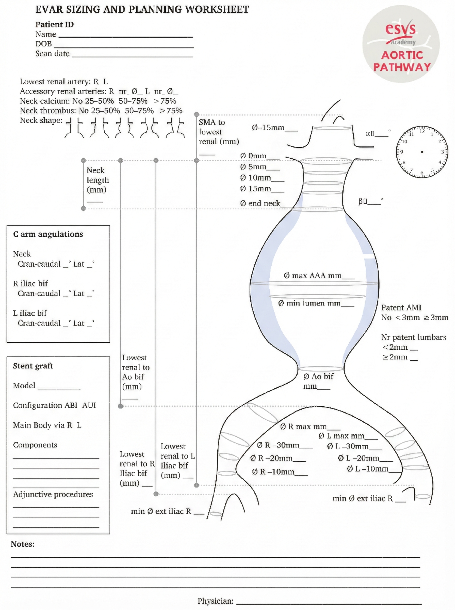
5.3.2.1. Nueva generación de endoprótesis.
En los últimos años, los fabricantes han desarrollado nuevas endoprótesis y sistemas de entrega con perfiles más bajos para permitir el tratamiento endovascular de AAA en pacientes con vasos de acceso pequeños.
Aunque hay algunas series que informan resultados favorables a medio plazo para las endoprótesis de perfil bajo de última generación, un registro multicéntrico italiano, incluyendo 619 pacientes, mostró que la endoprótesis Zenith Flex Low Profile [LP] (Cook Medical Inc, Bloomington, Ind) se asoció con una tasa significativamente mayor de fallo clínico tardío y reintervención en comparación con la endoprótesis Ovation (Endologix, Irvine, CA, EE. UU.) y el sistema de endoprótesis Incraft (Cordis Corporation, Bridgewater, NJ).
Y, un reciente estudio multicéntrico sueco, incluyendo 924 pacientes, encontró que el tipo de dispositivo era un factor de riesgo independiente para la oclusión de la rama del injerto después de EVAR. Específicamente, el dispositivo de perfil bajo Zenith Alpha (Cook Medical Inc, Bloomington, Ind) demostró un riesgo sorprendentemente alto de oclusión de rama en comparación con dispositivos más antiguos; después de una mediana de 37 meses de seguimiento, la tasa de oclusión de rama fue del 12.4% en pacientes con Zenith Alpha, en comparación con el 0.7% con Gore Excluder (W.L. Gore and Associates, Flagstaff, AZ, EE. UU.), y 3.3% con Endurant (Medtronic Cardiovascular, Santa Rosa, CA, EE. UU.). Se informaron hallazgos similares en un estudio retrospectivo noruego donde la endoprótesis Zenith Alpha fue un factor de riesgo independiente significativo para la oclusión de la rama del injerto en comparación con Endurant II (15% vs. 4%, OR 3.9). En un análisis de casos y controles anidado, el OR para oclusión de la rama del injerto fue 5.3 (IC 95% 2.0 - 14.3) para el dispositivo Zenith Alpha.
En un estudio danés de un solo centro, la incidencia acumulada de oclusión de la rama del injerto después de EVAR con el injerto Zenith Alpha fue del 7% por rama hasta tres años después de la operación. En un análisis adicional, esto no se asoció con factores de riesgo sugeridos por la IFU, y aún no está claro si el riesgo aumentado de oclusión de la rama del injerto se ha abordado mediante la IFU actualizada de Zenith Alpha.
Recientemente, informes alarmantes de una alta frecuencia de endofugas tardías Tipo 3 se han reportado para el sistema de AAA endovascular Endologix AFX (Endologix, Irvine, CA, EE. UU.), con su novedoso cuerpo único bifurcado (a diferencia de los sistemas regulares de endoprótesis modulares). En un análisis de tiempo hasta el evento de un solo centro, la libertad de endofuga Tipo 3 fue del 48% a los ocho años para el dispositivo AFX de generación temprana. La mayoría de estas no se detectaron hasta varios años (> 4.5 años) después de la implantación inicial. En un estudio reciente de reclamaciones de registro vinculado de los EE. UU., la tasa bruta de reintervención a cinco años fue significativamente mayor para los pacientes que recibieron el dispositivo AFX temprano, 27% vs. 15 - 19% para otros dispositivos (HR 1.6, IC 95% 1.3 - 2.0). Actualmente, es incierto si el riesgo aumentado de endofuga Tipo 3 ha sido abordado por el dispositivo AFX2 actualizado y la FDA de EE. UU. emitió recientemente una recomendación para que los proveedores de atención médica consideren el uso de opciones de tratamiento alternativas disponibles para pacientes con AAA en lugar del dispositivo AFX2.
El sistema de endoprótesis torácica Valiant Navion (Medtronic Inc, Santa Rosa, CA, EE. UU.) fue diseñado con conformabilidad mejorada y un perfil más bajo, y los resultados tempranos de los pacientes fueron generalmente positivos. Recientemente, sin embargo, se han observado fallos estructurales tardíos inesperados de la endoprótesis con fracturas de stent y endofugas Tipo 3b. En respuesta a estos eventos adversos, el fabricante decidió emitir un retiro global voluntario del dispositivo en 2021.
Estos datos enfatizan que se debe tener precaución cuando se lanzan endoprótesis nuevas y o modificadas, y deben someterse a una evaluación cuidadosa y a largo plazo antes de que estos nuevos dispositivos puedan considerarse seguros. Por lo tanto, cuando se utilizan actualizaciones de plataformas existentes en la práctica clínica, se debe reconocer la necesidad de seguimiento a largo plazo, y se recomienda la evaluación en registros prospectivos, con seguimiento completo para garantizar el rendimiento del dispositivo y la durabilidad del procedimiento a lo largo de 10 años, con análisis con suficiente potencia para detectar la no inferioridad del rendimiento futuro del injerto. Esto también está en línea con la recomendación reciente de la FDA de Estados Unidos de monitoreo extendido del rendimiento del dispositivo a través de 10 años post-EVAR.
58 Rec. 58. Se recomienda el seguimiento a largo plazo en registros prospectivos para las nuevas generaciones de endoprótesis para el tratamiento de aneurisma de aorta abdominal basadas en plataformas existentes, como dispositivos de perfil bajo, para garantizar el rendimiento del dispositivo y la durabilidad del procedimiento a lo largo de 10 años. (I C).
5.3.2.2. Nuevas técnicas y conceptos para la reparación de aneurisma de aorta abdominal.
La endoprótesis Nellix (Endologix, Inc, Irvine, CA, EE. UU.) fue un nuevo concepto endovascular, llamado sellado de aneurisma endovascular (EVAS) lanzado a principios de la década de 2010, basado en bolsas de poliuretano llenas de polímero que rodean stents expandibles con balón cubiertos con PTFE para sellar completamente el saco del aneurisma aórtico. Este enfoque fue diseñado para prevenir algunas de las complicaciones de EVAR incluyendo endofuga y migración de la endoprótesis. Después de informes iniciales de resultados tempranos alentadores, esta nueva tecnología se diseminó rápidamente con gran entusiasmo.
Sin embargo, surgieron gradualmente informes de tasas más altas de lo esperado de endofuga Tipo 1a, migración del dispositivo y rotura de aneurisma, y las Guías de AAA de la ESVS 2019 recomendaron que las nuevas técnicas y conceptos (con referencia especial a EVAS) solo deberían usarse con precaución dentro del marco de ensayos clínicos, hasta que se evaluaran adecuadamente. Datos posteriores revelaron que el dispositivo Nellix presentaba una tasa de fallos inaceptable, y el fabricante finalmente terminó su producción (Endologix, Comunicación de Fin de Vida de Nellix. 10 de mayo, 2022). El Comité de Guías de la ESVS publicó recientemente una Actualización Enfocada para alentar la identificación de pacientes en los que se ha implantado un dispositivo Nellix e inscribirlos en programas de vigilancia mejorada y, si se detecta fallo del dispositivo, ofrecer a esos pacientes la explantación electiva temprana del dispositivo si es factible.
El auge y caída del dispositivo Nellix ilustra la importancia de una evaluación rigurosa de nuevas tecnologías, métodos y dispositivos antes de que sean ampliamente adoptados. La seguridad y eficacia para varias nuevas tecnologías innovadoras en el mercado sigue siendo poco clara y se necesitan más datos antes de que estas puedan recomendarse para uso rutinario en la práctica clínica. La reparación de aneurisma con endosutura (ESAR) es otro ejemplo de un concepto relativamente nuevo y aún no probado que cae bajo esta categoría. ESAR está destinado a tratar AAA con un cuello corto fuera de IFU de dispositivos EVAR estándar mediante grapas endovasculares o endoanclajes, como el Heli-FX EndoAnchor (Medtronic Cardiovascular, Santa Rosa, CA, EE. UU.). SOCRATES (ShOrt neCK AAA RAndomised trial) es un RCT en curso que compara ESAR con EVAR fenestrado (fEVAR) en AAA de cuello corto (4 - 15 mm). ESAR se discute más a fondo en el Capítulo 8.
59 Rec. 59. No se recomienda el uso rutinario de nuevas técnicas y conceptos para el tratamiento de aneurisma de aorta abdominal en la práctica clínica, sino que deben utilizarse únicamente en el marco de estudios aprobados por comités de ética de investigación, hasta que se evalúen adecuadamente. (III C).
El nuevo reglamento de la UE 2017/745 sobre dispositivos médicos, o EU MDR, es una actualización importante de las regulaciones de dispositivos médicos en Europa. El MDR reemplaza la Directiva de Dispositivos Médicos de la UE anterior y está diseñado para modernizar el sistema regulatorio de la UE para abordar mejor las necesidades actuales del mercado y las nuevas tecnologías. Los dispositivos que recibieron una marca CE bajo la Directiva de Dispositivos Médicos pueden continuar comercializándose en la UE pero necesitarán ser recertificados bajo MDR por un Organismo Notificado antes de 2024. El MDR tiene un mayor enfoque en la seguridad del dispositivo con mayor énfasis en los datos clínicos y un enfoque ampliado en la regulación de todo el ciclo de vida de un dispositivo médico estableciendo nuevos requisitos para estudios de vigilancia poscomercialización. Exactamente cómo esto afectará el mercado de dispositivos EVAR sigue sin estar claro.
5.3.2.3. Acceso.
Las endoprótesis generalmente se administran a través de la arteria femoral ya sea mediante una disección quirúrgica o percutáneamente. La exposición quirúrgica puede obtenerse mediante una incisión longitudinal o transversal limitada (bajo anestesia general, regional o local) y tiene la ventaja del control directo de la arteria y libre elección del sitio de punción ideal. Una revisión Cochrane de 237 pacientes (283 ingles) informó, con baja certeza de evidencia, menos infecciones de herida quirúrgica en incisiones inguinales transversales en comparación con incisiones longitudinales, pero sin diferencias en linfocele o linforrea. No se evaluaron otros resultados en esos estudios.
El enfoque percutáneo es menos invasivo y depende de dispositivos de cierre arterial que generalmente deben insertarse antes de introducir la vaina. La calcificación femoral representa el único predictor de fallo de acceso percutáneo.
Una revisión sistemática reciente identificó cuatro RCT con un total de 368 participantes (530 sitios de acceso) comparando disección quirúrgica con acceso percutáneo total para EVAR electivo, siendo todos los pacientes adecuados para ambos métodos. No se detectaron diferencias significativas entre los dos métodos con respecto a complicaciones del sitio de acceso o infección, sangrado o hematoma posoperatorio, lesión arterial relacionada con el acceso, oclusión de arteria femoral, pseudoaneurisma, duración de estancia hospitalaria o mortalidad perioperatoria, mientras que el seroma y la linforrea fueron significativamente menos frecuentes después de EVAR percutáneo en comparación con EVAR con disección (0% vs. 3%, OR 0.18, IC 95% 0.04 - 0.83) y el tiempo del procedimiento fue significativamente más corto (-12 minutos). Todos los ensayos fueron, sin embargo, juzgados con alto riesgo de sesgo o tenían algunas preocupaciones, y el nivel del cuerpo de evidencia fue bajo o muy bajo para todos los resultados, y los autores concluyeron que la evidencia era muy incierta sobre el efecto de EVAR percutáneo en resultados clínicamente importantes.
Por lo tanto, no hay datos que favorezcan claramente un método sobre otro, pero la elección entre acceso percutáneo o disección debe determinarse por factores del paciente y preferencia del operador.
En una revisión sistemática y metanálisis incluyendo 1 422 sujetos de RCT, la guía por US se asoció con una reducción del 49% en complicaciones generales, incluyendo hematoma y venopunción accidental, y una mejora del 42% en la probabilidad de éxito en el primer intento en comparación con el acceso guiado por palpación. En una revisión sistemática y metanálisis más reciente incluyendo 1 553 pacientes de cinco RCT, el acceso femoral guiado por US (vs. palpación con o sin guía fluoroscópica) se asoció con una reducción en la tasa de complicaciones relacionadas con el acceso vascular (1.9% vs. 4.3%, p < .010). Sin embargo, esto fue impulsado principalmente por una reducción en hematomas locales, mientras que la reducción numérica observada en sangrado mayor (0.3% vs. 1.3%, p = .080) o sangrado menor (1.4% vs. 2.8%, p = .070) no alcanzó significación estadística. Además, la guía por US se asoció con menos venopunción (3.7% vs. 16.9%, p < .001), una tasa más alta de éxito al primer paso (80.3% vs. 50.5%, p < .001), menor número de intentos (p < .001), y menos tiempo de acceso (media 24 segundos, p < .001).
En otra revisión sistemática y metanálisis comparando acceso transfemoral TAVR guiado por US y fluoroscopia, incluyendo 3 875 pacientes de ocho estudios observacionales, el enfoque guiado por US se asoció con un riesgo significativamente reducido de complicaciones vasculares del sitio de acceso (OR 0.50) y complicaciones de sangrado del sitio de acceso (OR 0.59). En un RCT más reciente la canulación de arteria femoral guiada por US tuvo una tasa más alta de éxito, canulación más rápida y menos venopunciones en comparación con la guía fluoroscópica, mientras que las tasas de complicaciones no difirieron. La guía por US parece tener el mayor beneficio en pacientes con una bifurcación de arteria femoral común alta (por encima de la cabeza femoral) y parece ser más fácil de dominar para los aprendices.
60 Rec. 60. Se debe considerar la elección de acceso percutáneo o disección basada en factores del paciente y preferencias del operador para la reparación endovascular de aneurismas de aorta abdominal. (IIa B).
61 Rec. 61. Se recomienda la guía por ecografía para la reparación endovascular de aneurismas de aorta abdominal mediante un enfoque percutáneo. (I A).
5.3.2.4. Arterias renales accesorias.
Las arterias renales accesorias están presentes en el 9 - 16% de los pacientes sometidos a EVAR, siendo probable que la mitad queden cubiertas. Las consecuencias potenciales son infarto renal con riesgo de deterioro de la función renal (particularmente con insuficiencia renal preexistente) y riesgo de endofuga persistente Tipo 2 (T2EL).
Una revisión sistemática encontró cuatro estudios que no observaron cambios significativos de la función renal posoperatoria, mientras que un estudio informó un aumento transitorio temprano en la creatinina después de la cobertura de arterias renales accesorias que se resolvió dentro de 30 - 90 días. La frecuencia de infarto renal varió entre 20% y 84%. No se observó cambio significativo en la PA, mortalidad y duración media de estancia hospitalaria. Cinco estudios no observaron endofugas relacionadas con la cobertura de arteria renal accesoria, mientras que uno informó la ocurrencia de T2EL en tres de 18 pacientes (17%) que tuvieron cobertura de arteria renal accesoria. Un metanálisis reciente incluyendo 302 pacientes con arterias renales accesorias cubiertas con un diámetro medio < 4 mm después de EVAR estándar y EVAR complejo confirmó estos resultados, con mayor riesgo de infarto renal pero sin efecto clínico en la función renal o tasa de mortalidad.
Por lo tanto, la evidencia actual apoya la cobertura de arterias renales accesorias ubicadas en la zona de fijación proximal, asegurando un buen sellado usando todo el cuello aórtico a pesar de sacrificar arterias renales accesorias de pequeño calibre. Se recomienda intentar preservar arterias renales accesorias más grandes (>= 4 mm en diámetro) o asumidas significativas (irriga > 1/3 del parénquima renal), especialmente en casos con insuficiencia renal preoperatoria. fEVAR hecho a medida o EVAR chimenea (chEVAR) son opciones posibles para preservar arterias renales accesorias en pacientes no adecuados para OSR (ver sección 8.3). Actualmente no hay evidencia para apoyar la embolización preventiva de arterias renales accesorias que serán cubiertas durante EVAR, sin embargo, puede considerarse en arterias renales accesorias grandes (> 3 mm) que se originan del saco del aneurisma.
62 Rec. 62. Se debe considerar la preservación de arterias renales accesorias grandes (≥ 4 mm) o aquellas que irrigan una porción significativa del riñón (> 1/3) para pacientes sometidos a reparación endovascular de aneurisma de aorta abdominal, sin comprometer un sellado adecuado. (IIa C).
63 Rec. 63. No está indicada la embolización preventiva rutinaria de arterias renales accesorias para pacientes sometidos a reparación endovascular de aneurisma de aorta abdominal. (III C).
5.3.2.5. Embolización preventiva de la arteria mesentérica inferior, arterias lumbares y saco.
Las T2EL representan la complicación más frecuente en el seguimiento de pacientes tratados por EVAR. Los factores asociados con T2EL persistente o recurrente incluyen embolización con coils de arterias ilíacas internas, extensión distal del injerto a la arteria ilíaca externa, edad >= 80 años, y factores anatómicos como número y diámetro de ramas laterales patentes que surgen del aneurisma (IMA >= 3 mm y arterias lumbares >= 2 mm), y trombo del saco.
La embolización preventiva de ramas laterales y o el saco del aneurisma se ha propuesto para disminuir el riesgo de T2EL y consecuentemente de crecimiento persistente del aneurisma, reintervenciones y muerte relacionada con aneurisma. Sin embargo, estas técnicas aumentan el tiempo del procedimiento, el costo y el riesgo de complicaciones.
En un metanálisis reciente, incluyendo 1 812 pacientes de 12 estudios (un RCT y 11 estudios de cohorte controlados retrospectivos), la incidencia general de T2EL fue significativamente menor en el grupo de embolización vs. el grupo de control (17.3% vs. 24.5%, OR 0.36) así como la incidencia de T2EL persistente (15.3% vs. 30.0%, OR 0.37). Cinco estudios informaron una incidencia significativamente menor de agrandamiento del saco (10.2% vs. 24.9%, OR 0.25). Nueve estudios informaron reintervenciones relacionadas con T2EL más bajas en el grupo de embolización (1.3% vs. 10.4%, OR 0.14). El éxito técnico de la embolización de arteria colateral fue 92.1% (455/494) en los 12 estudios: 1.2% (10/829) de los pacientes sufrieron una complicación leve de la embolización de arteria colateral, y 2/829 pacientes murieron debido a la embolización.
En el único RCT, 106 pacientes en riesgo de T2EL (IMA patente >= 3 mm, arterias lumbares >= 2 mm) fueron aleatorizados para recibir EVAR con o sin embolización de IMA. Después de un seguimiento medio de 22 meses, la incidencia de T2EL fue significativamente menor en el grupo de embolización (24.5% vs. 49.1%), con una reducción de riesgo absoluto del 24.5% y número necesario a tratar 4.1. El saco del aneurisma se encogió significativamente más en el grupo de embolización (-5.7 +/- 7.3 mm vs. -2.8 +/- 6.6 mm), y la incidencia de crecimiento del saco del aneurisma relacionado con T2EL fue significativamente menor en el grupo de embolización (3.8% vs. 17.0%). No hubo complicaciones relacionadas con la embolización de IMA o reintervenciones asociadas con T2EL.
Una revisión sistemática y metanálisis sobre embolización del saco del aneurisma no selectiva preventiva, incluyendo 900 pacientes de siete estudios (un RCT y seis estudios observacionales), mostró una tasa significativamente menor de T2EL en el grupo de embolización en comparación con el grupo de no embolización (OR 0.21) y una tasa de reintervención correspondiente más baja (OR 0.15), sin diferencias en las tasas de complicaciones entre grupos.
En un metanálisis reciente de cuatro RCT (tres sobre embolización del saco de AAA y uno sobre embolización de una IMA patente) incluyendo un total de 393 pacientes aleatorizados, la embolización preventiva se asoció con probabilidades significativamente menores de T2EL (OR 0.45) y expansión del saco (OR 0.19), pero no hubo diferencia significativa en la mortalidad relacionada con aneurisma, mortalidad general, rotura de aneurisma, o reintervención relacionada con T2EL. El riesgo de sesgo fue alto para todos los resultados y la certeza de la evidencia fue muy baja o baja para todos los resultados. Los autores concluyeron que datos limitados de baja certeza sugieren que la embolización preventiva no confiere beneficios clínicos en EVAR.
Un estudio finlandés reciente comparó el intento rutinario de embolización de IMA antes de EVAR (estrategia en centro A) y dejar la IMA intacta (estrategia en centro B). De 395 pacientes tratados en el centro A, la IMA era patente en 268 (67.8%) y la embolización se realizó en 164 (41.5%). El centro B trató 337 pacientes de los cuales 279 (82.8%) tenían IMAs patentes. Después de más de cinco años de seguimiento, no hubo diferencias en las tasas de reintervención debido a T2ELs (12.9% vs. 10.4%), agrandamiento del saco (20.3% vs. 19.6%), tasas de rotura (2.5% vs. 1.0%) o tasas de conversión (2.1% vs. 1.5%). Los autores concluyeron que embolizar rutinariamente la IMA no produce ningún beneficio clínico significativo y por lo tanto debe abandonarse.
Si bien la evidencia actual sugiere un efecto beneficioso de la embolización preventiva de ramas laterales sobre T2EL y tasa de reintervención, solo la embolización de IMA se ha asociado con una tasa reducida de crecimiento del saco del aneurisma, y faltan datos de costo efectividad y hasta ahora no hay evidencia sobre el efecto potencial en la tasa de rotura. Además, procedimientos adjuntos adicionales e implantación de material extraño pueden exponer al paciente al riesgo de complicaciones potencialmente graves, como infección. Por lo tanto, se requiere un LoE más alto para apoyar un cambio amplio de práctica. Hasta entonces, la embolización preventiva puede considerarse solo en casos selectivos.
64 Rec. 64. No está indicada la embolización preventiva rutinaria de la arteria mesentérica inferior y arterias lumbares, y la embolización no selectiva del saco del aneurisma para pacientes sometidos a reparación endovascular de un aneurisma de aorta abdominal. (III B).
5.3.3. Reparación quirúrgica abierta vs. reparación aórtica endovascular.
Varios RCT han comparado el tratamiento abierto y endovascular de AAA en pacientes con anatomía adecuada, incluyendo el ensayo United Kingdom Endovascular Aneurysm Repair 1 (EVAR 1), el ensayo Dutch Randomised Endovascular Aneurysm Management (DREAM), el ensayo Open vs. Endovascular Repair of Abdominal Aortic Aneurysm (OVER), y los ensayos Anevrysme de l’aorte abdominale, Chirurgie vs. Endoprothese (ACE) (Tabla 14). Han demostrado un beneficio de supervivencia temprana significativo para EVAR de AAA intacto. Sin embargo, este beneficio se pierde durante el seguimiento a medio plazo.
| Estudio | País | Periodo de reclutamiento | Pacientes - n | Hallazgos principales |
|---|---|---|---|---|
| EVAR-1 | Reino Unido | 1999-2003 | 1 082 | Menor mortalidad perioperatoria después de EVAR (1.7% vs. 4.7%) Beneficio de supervivencia temprana perdido después de dos años, con supervivencia a largo plazo similar Mayor mortalidad relacionada con aneurisma en el grupo EVAR después de 8 años (7% vs. 1%), atribuible principalmente a rotura secundaria del saco del aneurisma Mayor tasa de reintervención después de EVAR |
| DREAM | Países Bajos y Bélgica | 2000-2003 | 351 | Menor mortalidad perioperatoria después de EVAR (1.2% vs. 4.6%) Beneficio de supervivencia temprana se perdió al final del primer año, con supervivencia a largo plazo similar (38.4% vs. 41.7% después de 12-15 años de seguimiento) Mayor tasa de reintervención después de EVAR (86.4% vs. 65.1%) |
| OVER | EE. UU. | 2002-2008 | 881 | Menor mortalidad perioperatoria después de EVAR (0.5% vs. 3%) Beneficio de supervivencia temprana sostenido hasta tres años pero no después Sin diferencia en tasa de reintervención Sin diferencia en calidad de vida Sin diferencia en costo y costo efectividad |
| ACE | Francia | 2003-2008 | 316 | Sin diferencia en tasa de mortalidad perioperatoria (1.3% vs. 0.6%) Sin diferencia en supervivencia a largo plazo hasta tres años Mayor tasa de reintervención después de EVAR (16% vs. 2.4%) |
Un metanálisis de 2 783 datos de pacientes individuales con 14 245 años-persona de seguimiento, informó datos sobre mortalidad, mortalidad relacionada con aneurisma y reintervención considerando los cuatro RCT de EVAR vs. OSR mencionados anteriormente. En el grupo EVAR, la mortalidad total fue significativamente menor entre 0 y seis meses (46/1 393 vs. 73/1 390 muertes; HR agrupado 0.61) debido a una menor mortalidad operativa a 30 días, pero la ventaja se perdió a largo plazo ya que la mortalidad total para los dos grupos durante el período de seguimiento de los ensayos no mostró diferencias significativas. En términos de mortalidad relacionada con aneurisma, no hubo diferencia entre EVAR y OSR después de 30 días y hasta tres años de seguimiento, pero después de tres años el número de muertes relacionadas con aneurisma fue mayor en el grupo EVAR (3 vs. 19 muertes). La tasa de reintervención fue mayor en el grupo EVAR pero no todos los ensayos informaron complicaciones relacionadas con la incisión después de OSR. Al tener en cuenta las hernias incisionales, obstrucciones intestinales y otras complicaciones basadas en laparotomía, como se hizo en el ensayo OVER, la diferencia en intervenciones secundarias entre grupos parece mucho menos significativa que la observada en los ensayos EVAR1 o DREAM.
El ensayo EVAR 2 es el único RCT que evalúa pacientes frágiles no adecuados para OSR, para quienes EVAR fue diseñado originalmente. Un total de 404 pacientes, con un AAA >= 55 mm de diámetro y físicamente no elegibles para OSR fueron incluidos entre 1999 y 2004 en el Reino Unido. No hubo beneficio de EVAR temprano (vs. ningún tratamiento) en la mortalidad relacionada con AAA o total a los cuatro años de seguimiento, lo que se explicó por una mortalidad perioperatoria más alta de lo esperado (7.3%) después de EVAR en esta cohorte de pacientes frágiles y una mortalidad general muy alta. Después de hasta 10 años de seguimiento EVAR (comparado con ninguna reparación) se asoció con una tasa significativamente menor de mortalidad relacionada con aneurisma pero también con tasas más altas de complicaciones y reintervenciones y ninguna diferencia en la mortalidad por todas las causas. Durante ocho años de seguimiento, EVAR fue considerablemente más costoso que ninguna reparación.
En el seguimiento a largo plazo de 15 años, centrándose en la cohorte original restante superviviente de EVAR 2 representando un subgrupo de pacientes más aptos que la cohorte general de EVAR 2, pero considerados no aptos para OSR (en ese momento), hubo una mortalidad relacionada con aneurisma significativamente menor en el grupo EVAR, pero debido a una alta mortalidad general no se notó diferencia en la esperanza de vida general. Los autores concluyeron que EVAR no aumenta la esperanza de vida general en pacientes no elegibles para reparación abierta pero puede reducir la mortalidad relacionada con aneurisma. Un estudio reciente emparejado por puntuación de propensión, incluyendo 350 pacientes con métricas pobres de prueba de ejercicio cardiopulmonar considerados no aptos para OSR, sin embargo, sugirió que EVAR puede ofrecer una ventaja de supervivencia en pacientes seleccionados. La mortalidad a uno, tres y cinco años en el grupo EVAR fue 7%, 40% y 68%, respectivamente, comparado con 25%, 68% y 82% en el grupo de manejo conservador, todos p < .001. Además, la estrategia EVAR fue costo efectiva, con una relación costo efectividad incremental de 10 000 euros por año de vida ajustado por calidad ganado.
Un metanálisis reciente, incluyendo 21 490 pacientes con AAA de alto riesgo de 27 estudios, encontró una mortalidad perioperatoria significativamente menor después de EVAR en comparación con OSR (OR 0.64). El beneficio de supervivencia temprana se perdió, embargo, durante el seguimiento, y los autores concluyeron que una estrategia endovascular puede ser preferible sobre la reparación abierta en una población anciana y frágil con reserva fisiológica y esperanza de vida limitadas, en quienes un buen resultado temprano es más importante que el resultado a largo plazo. La falta de una definición ampliamente aceptada de alto riesgo, sin embargo, hace difícil interpretar la importancia de diferentes resultados de estudios en la práctica clínica actual.
En el ensayo OVER, el único RCT que evalúa costo y costo efectividad, no se vio diferencia entre EVAR y OSR. Esto se confirmó en un estudio modelo de los Países Bajos. Una revisión sistemática señaló, sin embargo, que los análisis de costo efectividad publicados anteriormente de EVAR no proporcionan una respuesta clara sobre si EVAR electivo es una solución costo efectiva y pide análisis de costo efectividad de EVAR que incorpore avances tecnológicos más recientes y la experiencia mejorada que los clínicos tienen con EVAR, y una revisión sistemática reciente señaló que como los sistemas de salud varían entre diferentes países, generalizar los resultados económicos de salud debe hacerse con precaución.
Debido a los rápidos desarrollos tecnológicos y médicos, los RCT existentes comparando OSR y EVAR están parcialmente obsoletos y por lo tanto no son completamente relevantes para la situación actual. Los dispositivos utilizados en los RCT fueron principalmente dispositivos EVAR de primera o segunda generación. Otros factores de importancia potencial son mejoras en la imagen y planificación preoperatoria, la transición de anestesia general a técnicas percutáneas bajo anestesia local, el rápido desarrollo técnico de sistemas de imagen intraoperatoria y la evolución del manejo posoperatorio. Por lo tanto, es necesario incluir datos observacionales y de registro más recientes en la evaluación general. Así, a pesar de los datos de múltiples RCT y metanálisis, representando el LoE más alto, el LoE existente se califica como mediocre (Nivel B). Los resultados del metanálisis más reciente comparando EVAR electivo y reparación quirúrgica abierta (OSR) para AAA se informan en la Tabla 15.
| Autor | Tipo de estudio incluido | Periodo de reclutamiento | Pacientes - n | Hallazgos principales |
|---|---|---|---|---|
| Powell et al. (2017) | 4 RCTs | 1999-2008 | 2 783 | Menor mortalidad por todas las causas después de EVAR dentro de seis meses (3.3% vs. 5.3%, HR 0.61), después sin diferencia Sin diferencia en mortalidad relacionada con AAA entre 30 días y tres años, después mayor en el grupo EVAR Mayor tasa de reintervención después de EVAR, pero al tener en cuenta complicaciones basadas en laparotomía, como se hizo en el ensayo OVER, la diferencia fue menos significativa |
| Giannopoulos et al. (2020) | 5 RCT | 1998-2008 | 2 823 | Sin diferencia en mortalidad por todas las causas o mortalidad relacionada con AAA después de 4-8 y > 8 años de seguimiento Mayor tasa de reintervención después de EVAR (29% vs. 15%) |
| Antoniou et al. (2020) | 7 RCT | 1999-2011 | 2 983 | Menor mortalidad por todas las causas dentro de 30 días (OR 0.36) y seis meses (HR 0.62) después de EVAR Menor mortalidad relacionada con AAA dentro de seis meses después de EVAR (HR 0.42), pero mayor después de > 8 años de seguimiento (HR 5.12) Mayor tasa de reintervención (HR 2.13), rotura de aneurisma (OR 5.08) y muerte debida a rotura (OR 3.57) después de > 8 años después de EVAR |
| Bulder et al. (2019) | 4 RCT, 20 REG, 29 CS | 1993-2015 | 189 022 | Menor mortalidad por todas las causas a 30 días después de EVAR (1.2% vs. 3.2%), después sin diferencia |
| Li et al. (2019) | 3 RCT, 68 CS | 1999-2018 | 299 784 | Mayor mortalidad por todas las causas (OR 1.19), reintervención (2.12), y tasa de rotura secundaria (OR 2.47) después de 5-9 años de seguimiento después de EVAR Sin diferencia en mortalidad por todas las causas, pero mayor tasa de reintervención (OR 2.47) y tasa de rotura secundaria (OR 8.10) después de EVAR después de > 10 años de seguimiento (hasta 15 años) |
| Yokoyama et al. (2020) | 4 RCT, 7 PSS | 1999-2016 | 106 243 | Menor mortalidad perioperatoria por todas las causas después de EVAR (RR 0.39), sin diferencia entre 0 y dos años, mayor entre dos y seis años después de EVAR (HR 1.15), y sin diferencia entre seis y 10 años o >= 10 años |
| Alothman et al. (2020) | 4 RCT, 12 CS | 2004-2017 | 61 379 | Menor mortalidad perioperatoria por todas las causas después de EVAR (1.2% vs. 4.5%, después sin diferencia Sin diferencia en mortalidad relacionada con aneurisma, mayor tasa de rotura tardía del saco de aneurisma después de EVAR (1.8% vs. 0.4%) y de reintervención (OR 1.94) |
Estudios recientes de registros poblacionales grandes de Europa y EE. UU. han mostrado una utilización aumentada sostenida de EVAR con una disminución continua en mortalidad y morbilidad, a pesar de que se tratan pacientes mayores y más enfermos. La mortalidad a 30 días contemporánea después de EVAR electivo es de alrededor del 1%, comparado con una mortalidad tres a cinco veces mayor después de OSR. La supervivencia a corto plazo mejorada se mantiene durante al menos cinco años.
Además, una marcada reducción en el tiempo operativo, complicaciones quirúrgicas y estancia en UCI y hospitalaria después de EVAR se ha observado en años recientes y al comparar endoprótesis introducidas después de 2004 con aquellas usadas antes de ese momento, las endoprótesis más nuevas han funcionado sustancialmente mejor en términos de tasas a largo plazo de reintervención, conversión y crecimiento de AAA. En una comparación descriptiva de los resultados entre el ensayo EVAR 1 y un registro prospectivo no aleatorizado más reciente ENGAGE, la libertad de mortalidad por todas las causas fue 74.4% en el ensayo EVAR 1 y 74.6% en el registro ENGAGE hasta el punto de tiempo de cuatro años, la mortalidad relacionada con aneurisma fue 4.2% vs. 1.9%, muerte debida a rotura fue 1.6% vs. 0.5%, y la tasa de reintervención fue 19.3% vs. 10.9%.
La evidencia de los RCT es predominantemente aplicable a pacientes con AAA menores de 80 años, mientras que hoy los mayores aumentos en la reparación de AAA parecen ser en aquellos mayores de 80 años. Este grupo también ha visto la mejora más pronunciada en el resultado después de la reparación del AAA, que probablemente se relacione con el uso preferencial de EVAR para el tratamiento de octogenarios. En un estudio nacional sueco la tasa de mortalidad a 30 días después de la reparación electiva de AAA entre octogenarios fue del 2%, de los cuales el 80% fueron tratados por EVAR. En un informe de la base de datos VQI en los EE. UU. las tasas de mortalidad a 30 días y un año después de EVAR electivo en octogenarios fueron 1.6% y 6.2% respectivamente. La tasa de mortalidad correspondiente después de OSR fue 6.7% y 11.9% respectivamente. Datos del registro ENGAGE sugieren que los octogenarios tratados por EVAR tienen una mayor incidencia de complicación con estancia hospitalaria más larga y un tiempo de recuperación más largo de lo esperado (> 12 meses) que los pacientes más jóvenes. En un análisis reciente de la base de datos NSQIP del Colegio Americano de Cirujanos incluyendo 12 267 procedimientos EVAR realizados entre 2011 y 2017, la edad se identificó como un predictor de muerte a 30 días. Sin embargo, esta diferencia desapareció después del ajuste por comorbilidades en un análisis emparejado por puntuación de propensión, sugiriendo que la edad sola no debe excluir a los pacientes de EVAR. Hallazgos similares, que la comorbilidad en lugar de la edad es importante, se vieron en la Auditoría de Aneurisma Quirúrgico Holandesa.
En una revisión sistemática, pacientes ancianos (80-90 años) con bajo riesgo quirúrgico tuvieron una tasa de mortalidad a 30 días significativamente menor después de EVAR que OSR (2.1% vs. 8.8%; RR 0.25). Contra este fondo, es razonable considerar la reparación electiva de AAA de pacientes mayores de 80 años con esperanza de vida razonable y QoL, habiendo sido informados sobre las diversas opciones de tratamiento (ver Capítulo 11 sobre SDM). Esta información, de estudios de cohorte y registro modernos indicando que EVAR puede ofrecerse a más pacientes hoy con mejores resultados, es un suplemento importante a la de RCT más antiguos al evaluar técnicas operativas hoy.
La elección de la técnica quirúrgica debe discutirse entre el clínico tratante y el paciente y múltiples factores deben considerarse al individualizar un plan de tratamiento del paciente. Estos incluyen (1) idoneidad anatómica para EVAR, (2) reservas fisiológicas y aptitud para cirugía, (3) esperanza de vida, (4) preferencias del paciente, y (5) necesidades y expectativas, incluyendo la importancia de la función sexual, y cumplimiento anticipado con vigilancia frecuente de por vida y seguimiento. Por lo tanto, no es posible proporcionar recomendaciones detalladas y es importante permitir libertad para la toma de decisiones individualizada, respetando la elección del paciente siempre que sea posible (ver también Capítulo 11).
Casi toda la evidencia sugiere un beneficio de supervivencia a corto plazo significativo para EVAR sobre OSR. Sin embargo, hay indicaciones de que una mayor tasa de complicaciones puede ocurrir después de 8-10 años con dispositivos EVAR de generación anterior y durabilidad incierta de dispositivos actuales, particularmente los dispositivos de perfil bajo (ver sección 5.3.2.1). Por lo tanto, aunque EVAR debe considerarse la modalidad de tratamiento preferida en la mayoría de los pacientes, es razonable considerar una estrategia de OSR primero en pacientes más jóvenes y aptos con una larga esperanza de vida > 10-15 años. La supervivencia normal (promedio) después de la reparación electiva de AAA es de aproximadamente nueve años. Por el contrario, la reparación electiva de AAA no se recomienda en pacientes con esperanza de vida limitada, p. ej., en pacientes con cáncer terminal o insuficiencia cardíaca severa. Una definición pragmática de esperanza de vida limitada es menos de dos a tres años.
Cabe señalar que este capítulo se refiere a pacientes con un AAA infrarrenal asintomático sometidos a reparación electiva. Importante, los conceptos presentes no deben usarse para deducir recomendaciones para otras situaciones.
65 Rec. 65. Se debe considerar la reparación endovascular como la modalidad de tratamiento preferida para la reparación electiva de aneurisma de aorta abdominal en la mayoría de los pacientes con anatomía adecuada y esperanza de vida razonable. (IIa B).
66 Rec. 66. Se debe considerar la reparación quirúrgica abierta como la modalidad de tratamiento preferida para la reparación electiva de aneurisma de aorta abdominal en la mayoría de los pacientes con larga esperanza de vida. (IIa B).
67 Rec. 67. No se recomienda la reparación electiva de aneurisma de aorta abdominal, ni abierta ni endovascular, para pacientes con esperanza de vida limitada. (III B).
5.3.4. Reparación aórtica laparoscópica.
La cirugía aórtica laparoscópica se sugiere como una alternativa menos invasiva a OSR cuando EVAR no está indicado. Las técnicas laparoscópicas para el tratamiento de AAA incluyen un enfoque laparoscópico total, un enfoque quirúrgico asistido laparoscópicamente (disección laparoscópica con endo-aneurismorrafia vía mini-laparotomía), o un enfoque laparoscópico asistido por mano, o un enfoque laparoscópico asistido por robot. Esta técnica es técnicamente exigente y requiere una amplia experiencia en cirugía laparoscópica. En un estudio multicéntrico comparativo prospectivo, la cirugía aórtica laparoscópica se asoció con un riesgo significativamente mayor de muerte y eventos adversos en comparación con OSR, a pesar de un equipo quirúrgico laparoscópico altamente experimentado.
68 Rec. 68. No se recomienda la reparación laparoscópica de aneurisma de aorta abdominal. (III C).
5.4. Complicaciones perioperatorias después de la reparación electiva de aneurisma de aorta abdominal
EVAR y OSR electivas de AAA son procedimientos con un alto riesgo de complicaciones mayores. En un estudio de consenso Delphi internacional entre cirujanos vasculares, MI, accidente cerebrovascular, insuficiencia renal, isquemia intestinal, tromboembolismo periférico requiriendo amputación menor o mayor, infección e isquemia de la médula espinal (SCI) se acordaron como complicaciones mayores después de EVAR y OSR. En un análisis conjunto de VASCUNET y el Consorcio Internacional de Registros Vasculares (ICVR) de 60 273 procedimientos electivos entre 2010 y 2016, el riesgo de sangrado, accidente cerebrovascular, terapia de reemplazo renal, insuficiencia respiratoria e isquemia intestinal después de EVAR estuvieron por debajo del 1%, mientras que la prevalencia de un evento cardíaco fue 3.0%. Todas las complicaciones mencionadas anteriormente fueron más prevalentes después de OSR (1 - 3%), siendo la insuficiencia respiratoria (5.7%) y evento cardíaco (8.9%) los más comunes.
En una revisión sistemática, el riesgo de complicaciones mayores después de EVAR y OSR electivos fue consistente y significativamente mayor para mujeres que hombres. El retraso en el reconocimiento oportuno y manejo de complicaciones (fracaso en rescatar) es el principal determinante de la mortalidad perioperatoria después de OSR y EVAR.
Aunque la isquemia intestinal es una complicación rara después de EVAR electivo (0.3%) y OSR (2.0%), conlleva un riesgo muy alto de muerte (43.6% y 43.4%, respectivamente). El reconocimiento rápido de la isquemia intestinal es de suma importancia, aunque a menudo difícil. Dolor, acidosis metabólica y oliguria deben aumentar la conciencia de isquemia intestinal. CTA puede ser útil para confirmar la permeabilidad de las arterias viscerales pero a menudo es tardío en reconocer la isquemia intestinal, y la sigmoidoscopia puede añadir al establecimiento del diagnóstico, sin embargo el valor clínico de ambas modalidades es incierto ya que el valor predictivo positivo es bajo con la baja probabilidad a priori de isquemia intestinal. El sangrado posoperatorio con la necesidad de regresar al quirófano ocurrió en 2.2%, pero tuvo un riesgo de 28.3% de fracaso en rescatar después de OSR. En un estudio de 9 719 procedimientos electivos en los EE. UU., la isquemia intestinal y el regreso al quirófano por sangrado fueron también los principales impulsores del fracaso en rescatar.
A nivel agregado, parece haber una clara asociación entre el volumen hospitalario y el fracaso en rescatar. En el estudio VASCUNET/ICVR los hospitales de mayor volumen tuvieron significativamente menos frecuencia de fracaso en rescatar después de OSR y EVAR que los hospitales de menor volumen, OR 0.22 y 0.54, respectivamente. Los resultados para OSR son apoyados por datos del SVS-VQI, con un OR para fracaso en rescatar de 0.48 para centros que realizan > 10 OSR por año vs. aquellos que realizan <= tres procedimientos. Los pacientes también tenían el doble de probabilidad de morir dentro de 30 días (3% > 10 procedimientos vs. 6% <= seis procedimientos).
A pesar de la clara asociación volumen-resultado para el fracaso en rescatar, se sabe poco sobre la contribución de indicadores específicos de proceso y estructurales para mejores resultados. Una explicación obvia puede ser el reconocimiento rápido de una complicación mayor y acción posterior para mitigar efectos negativos. Los recursos y política locales pueden influir en el proceso de selección de admisión a UCI, pero generalmente todos los pacientes sometidos a OSR y pacientes EVAR de alto riesgo deben ofrecerse vigilancia en UCI para monitoreo avanzado y detección temprana y manejo de complicaciones. Además, en vista del alto riesgo de complicaciones cardíacas, el acceso 24/7 a cateterismo coronario es importante en cualquier hospital que realice reparación de AAA.
69 Rec. 69. Se recomienda que todos los pacientes con un aneurisma de aorta abdominal sometidos a reparación quirúrgica abierta y los pacientes de alto riesgo sometidos a reparación endovascular tengan monitorización posoperatoria temprana en una unidad de cuidados intensivos o de alta dependencia. (I C).
Los programas de recuperación temprana o mejorada después de la cirugía (ERAS) se han diseñado para acelerar la recuperación posoperatoria de pacientes quirúrgicos reduciendo la respuesta al estrés quirúrgico. ERAS implica un camino común integrado y multidisciplinario que incluye asesoramiento preoperatorio exhaustivo para preparar al paciente mental y físicamente, el uso de anestesia epidural y acceso quirúrgico minimizado, control óptimo del dolor con la evitación de efectos secundarios, movilización posoperatoria temprana y nutrición oral así como la evitación (o eliminación temprana) de drenajes y catéteres uretrales. Datos de estudios de cohorte sugieren que ERAS puede ser factible y potencialmente beneficioso en cirugía abierta de AAA, sin embargo, el diseño del programa ERAS AAA y su lugar en la práctica clínica aún está por definirse.
6. MANEJO DE ANEURISMA DE AORTA ABDOMINAL ROTO Y SINTOMÁTICO
La distinción entre AAA sintomático y rAAA es crucial porque los resultados difieren significativamente entre los dos grupos. Un rAAA se define como una hemorragia aguda del AAA fuera de la pared aórtica verdadera con la presencia de sangre retroperitoneal y/o intraperitoneal. Un rAAA contenido es cuando el hematoma está sellado temporalmente por el retroperitoneo. Los AAA sintomáticos son aquellos que presentan dolor abdominal y/o de espalda, un AAA sensible a la palpación o eventos embólicos, pero sin ruptura de la pared aórtica.
6.1. Evaluación preoperatoria
6.1.1. Evaluación clínica y radiológica.
La tríada clásica de hipotensión, dolor abdominal y/o de espalda, y una masa abdominal pulsátil están presentes en aproximadamente el 50% de los pacientes con un rAAA. El diagnóstico erróneo puede ocurrir en el 32 - 39% de los pacientes, particularmente en aquellos que presentan sin shock hemodinámico. Una revisión sistemática identificó el cólico ureteral y el MI como los diagnósticos diferenciales erróneos más comunes.
El US de emergencia puede ser útil para identificar la presencia de un AAA, pero su sensibilidad para detectar hemorragia retroperitoneal es baja. Como resultado, el US no se puede utilizar para identificar una fuga; sin embargo, la presencia de un AAA en un paciente inestable es muy sugestiva de un rAAA. En la era endovascular, otro inconveniente del US es que carece de información sobre la idoneidad anatómica para EVAR. Por lo tanto, una CTA inmediata de la aorta toraco-abdominal y los vasos ilíacos es la modalidad de imagen clave para todos los pacientes con sospecha de rAAA.
La mayoría de los pacientes con un rAAA que llegan vivos al hospital son lo suficientemente estables como para someterse a una CTA para confirmar el diagnóstico y planificar OSR o EVAR. La inestabilidad hemodinámica se define como pérdida o nivel reducido de conciencia o presión arterial sistólica < 80 mmHg. La inestabilidad circulatoria es, sin embargo, relativa, y en la mayoría de las situaciones es tanto preferible como factible realizar una CTA. En una revisión y metanálisis, EVAR para pacientes con un rAAA hemodinámicamente inestable se asoció con una mortalidad hospitalaria significativamente menor en comparación con OSR (37% frente a 62%).
Si, embargo, el paciente está demasiado inestable, él o ella puede ser transportado directamente al quirófano para OSR de emergencia o imagen intraoperatoria para confirmación del diagnóstico y potencialmente determinación de la idoneidad para EVAR. Un aortograma intraoperatorio, con o sin un balón de oclusión aórtica (AOB), puede ser una solución de compromiso de emergencia para la determinación de la elegibilidad inicial de EVAR y la selección del dispositivo, con mediciones posteriores obtenidas ya sea por DSA o IVUS.
70 Rec. 70. Los pacientes con sospecha de rotura de aneurisma de aorta abdominal deben someterse a una imagen inmediata de la aorta toracoabdominal y de los vasos de acceso mediante angiografía por tomografía computarizada. (I B).
6.1.2. Fístula aortocava.
Una fístula aortocava (ACF) ocurre cuando un AAA se rompe en la vena cava inferior (IVC), y se observa en el 2 - 6% de todos los rAAA. A diferencia del rAAA estándar, la mayoría de las ACF se presentan sin signos de sangrado masivo y hematoma retroperitoneal porque la ruptura aórtica deriva directamente en la IVC, sino más bien con síntomas de derivación arteriovenosa rápida e hipertensión venosa secundaria. En una serie de 50 casos consecutivos de rAAA con ACF, el shock, la insuficiencia cardíaca congestiva, la hipertensión venosa pélvica y de las extremidades inferiores estuvieron presentes en 48%, 26% y 75% respectivamente. El diagnóstico se confirma preoperatoriamente por CTA, con opacificación caval temprana en la fase arterial.
Durante la OSR para ACF, la fístula se cierra quirúrgicamente desde el interior del saco del aneurisma. El aneurisma se repara posteriormente de la manera habitual. Aunque EVAR excluye el aneurisma de la circulación, no controla la fístula en sí, que se deja abierta como una comunicación persistente entre el saco del aneurisma y la IVC. En presencia de un T2EL, esto podría plantear un problema de manejo particular y si y cómo tratar las fístulas persistentes es un tema de debate con diferentes estrategias de tratamiento descritas.
En caso de endofuga persistente (> seis meses) asociada con agrandamiento del saco del aneurisma, aumento del gasto cardíaco e insuficiencia cardíaca, y raramente, embolización pulmonar, se sugiere el cierre de la fístula, ya sea por embolización directa, taponamiento o endoprótesis de la IVC. Si no hay endofuga y/o remodelado favorable del saco del aneurisma, se ha sugerido un manejo conservador. En una revisión sistemática, resumiendo datos de 110 informes de casos con 196 pacientes, la supervivencia a 30 días fue del 87.5% después de OSR y 97.6% después de EVAR, y después de una mediana de seguimiento de 14 meses 86% y 95%. Después de EVAR, el 40% mostró una endofuga, más a menudo T2EL, y la tasa de reintervención fue del 35.7% (comparado con 2.5% después de OSR).
71 Rec. 71. Se puede considerar el cierre endovascular posterior de la fístula aortocava en presencia de una endofuga asociada con aumento del gasto cardíaco, insuficiencia cardíaca o embolización pulmonar después de la reparación endovascular de la rotura de aneurisma de aorta abdominal en la vena cava inferior. (IIb C).
6.2. Manejo perioperatorio
6.2.1. Hipotensión permisiva y protocolo de transfusión.
Existe evidencia considerable de que el reemplazo vigoroso de fluidos, conocido como la estrategia de reanimación normotensiva, puede exacerbar el sangrado y perjudicar el resultado. Por otro lado, una estrategia de reanimación con hipotensión permisiva (de otro modo conocida como hemostasia hipotensiva o reanimación de volumen retrasada) se refiere a una política de retrasar la reanimación agresiva con fluidos hasta que se logre el control aórtico proximal. Esto puede limitar la hemorragia excesiva al permitir la formación de coágulos y evitar el desarrollo de coagulopatía iatrogénica. Aunque hay varios estudios publicados en animales y humanos sobre el papel beneficioso de la hipotensión permisiva en trauma, no existe ningún estudio comparativo directo sobre hipotensión permisiva frente a estrategias de reanimación normotensiva en el manejo del shock hemorrágico en pacientes con rAAA. Sin embargo, hoy en día la hipotensión permisiva se considera una práctica segura, bien documentada y generalizada en el manejo de pacientes con rAAA.
Preferiblemente, los esfuerzos de reanimación deben manejarse con la administración de sangre y hemoderivados con una proporción sugerida de plasma fresco congelado a glóbulos rojos cercana a 1:1. Un paso más allá es una política de reducir activamente la BP utilizando agentes farmacológicos. Algunos autores utilizan el término hemostasia hipotensiva para describir este manejo activo y distinguirlo de la hipotensión permisiva, siendo esta última más un proceso pasivo de no responder a la hipotensión, siempre que el paciente permanezca consciente y estable aunque hipotenso. Un estudio holandés evaluó la viabilidad de un protocolo de hemostasia hipotensiva utilizando nitratos intravenosos. El objetivo fue limitar la administración de fluidos intravenosos prehospitalarios a 500 mL y mantener la presión arterial sistólica entre 50 y 100 mmHg.
El rango de presión arterial sistólica deseado se alcanzó en el 46% de los casos, mientras que en el 54%, se registró una presión arterial sistólica > 100 mmHg durante > 60 minutos. Hasta la fecha, no está claro si la reducción farmacológica de la BP es beneficiosa,. Igualmente, la BP ideal que se permite para la hipotensión permisiva es discutible. Hay cada vez más datos de que los objetivos de BP en pacientes ancianos no deberían ser tan bajos como en pacientes jóvenes y en forma con trauma (p. ej., soldados) aunque la mayoría de los datos para la hipotensión permisiva se generaron de este grupo joven. En el ensayo Immediate Management of Patient with Ruptured Aneurysm: Open vs. Endovascular Repair (IMPROVE), la presión arterial sistólica más baja se asoció independientemente con la tasa de mortalidad a 30 días y se sugirió que una presión arterial sistólica mínima de 70 mmHg puede ser un umbral demasiado bajo para la hipotensión permisiva en pacientes con rAAA. No obstante, la recomendación de implementar una política de hipotensión permisiva siempre que el paciente permanezca consciente, con una presión sistólica objetivo de 70 - 90 mmHg, permanece, pero la evidencia ha sido reevaluada y rebajada al Nivel C.
Para la reanimación de la coagulación con hemoderivados y factores de coagulación, consulte los principios establecidos de transfusión masiva y las guías locales. Otras medidas que contribuyen a mantener la BP baja son el manejo adecuado del dolor.
72 Rec. 72. Se recomienda una política de hipotensión permisiva para pacientes con aneurisma de aorta abdominal roto. (I C).
6.2.2. Anestesia.
La OSR requiere anestesia general para abordar el rAAA a través de una incisión transperitoneal de línea media o, menos a menudo, retroperitoneal izquierda. Se necesita una estrecha cooperación entre los equipos de anestesia y quirúrgico, ya que la vasodilatación en la inducción a menudo conducirá a una hipotensión repentina. Por lo tanto, el equipo quirúrgico debe estar lavado y con bata, el campo quirúrgico debe estar preparado y cubierto, y todos deben estar listos para comenzar la operación antes de la inducción de la anestesia. Esto es importante para minimizar los retrasos y controlar el sangrado rápidamente.
A diferencia de la OSR, EVAR se puede realizar bajo anestesia local, suplementada, si es necesario, por sedación intravenosa. La anestesia local se ha defendido para prevenir el colapso circulatorio causado por la inducción de la anestesia general y para promover el taponamiento peritoneal. Razones comunes para la conversión a anestesia general son la pérdida de conciencia durante la operación debido a shock hipovolémico severo, incomodidad severa por la ruptura, instrumentación endovascular de la aorta y arterias ilíacas, necesidad de acceso a la arteria ilíaca, y creación de un bypass femorofemoral después del despliegue de un injerto de stent aorto-uni-ilíaco (AUI). Se ha informado que los artefactos de movimiento debido a la incomodidad del paciente son la razón del despliegue subóptimo del injerto de stent y la cobertura inadvertida de las arterias renales o la colocación más distal del cuerpo principal del dispositivo.
Como resultado, no todos los operadores comparten el mismo entusiasmo por la anestesia local. Sin embargo, en los últimos años, con la creciente experiencia y dado que el uso de anestesia local para EVAR en rAAA se ha asociado con una mejor supervivencia, este tipo de enfoque anestésico se ha adoptado ampliamente. En un análisis post hoc del ensayo IMPROVE, los pacientes que recibieron EVAR bajo anestesia local sola tuvieron una tasa de mortalidad a 30 días muy reducida en comparación con aquellos que fueron tratados bajo anestesia general. En un estudio de VQI, que incluyó a 3 330 pacientes con rAAA, aquellos tratados con EVAR bajo anestesia local (frente a anestesia general) tuvieron tasas de mortalidad significativamente más bajas a los 30 días (15.5% frente a 23.3%, HR 0.7) y al año (22.5% frente a 32.3%, HR 0.7).
En un metanálisis reciente, que incluyó a 4 336 pacientes de 10 estudios de cohorte, EVAR bajo anestesia local (frente a anestesia general) se asoció con una tasa de mortalidad perioperatoria significativamente menor (17.3% frente a 26.4%, OR 0.49). El beneficio de supervivencia fue mayor en pacientes hemodinámicamente estables.
73 Rec. 73. Se debe considerar la anestesia local como la modalidad anestésica de elección para pacientes sometidos a reparación endovascular de un aneurisma de aorta abdominal roto, siempre que el paciente la tolere. (IIa B).
6.2.3. Balón de oclusión aórtica.
Estudios previos han demostrado que aproximadamente un tercio de los pacientes con un rAAA que se someten a EVAR son hemodinámicamente inestables y uno de cada cuatro experimenta colapso circulatorio completo. El control aórtico proximal durante la OSR se logra mediante pinzamiento aórtico infrarrenal o pinzamiento suprarrenal o supracelíaco seguido de reposicionamiento de la pinza a una posición infrarrenal tan pronto como sea factible. El control aórtico proximal también se puede lograr mediante un AOB endovascular (balón de oclusión endovascular de reanimación de la aorta) durante EVAR o como una alternativa al pinzamiento aórtico convencional en pacientes hemodinámicamente inestables que se someten a OSR. Esto se puede lograr mediante un AOB colocado transfemoralmente soportado por una vaina larga en la aorta supracelíaca o a través de un enfoque transbraquial.
Existen pocos informes sobre el efecto del AOB relacionado con la reparación abierta de rAAA. Un estudio mostró que, en comparación con el pinzamiento aórtico convencional, el AOB se asoció con una mortalidad intraoperatoria reducida, pero no con la mortalidad hospitalaria. Con respecto a aquellos que se someten a EVAR, un metanálisis de 39 estudios documentó que un total de 200 de 1277 pacientes (14.1%) requirieron AOB. La muerte fue significativamente menor en estudios con una tasa más alta de uso de AOB, lo que sugiere que el uso de un AOB en pacientes con rAAA inestable que se someten a EVAR puede mejorar los resultados.
Aunque se ha demostrado que el AOB mejora los parámetros hemodinámicos, la base de evidencia es débil sin una reducción clara en la muerte relacionada con hemorragia. Se justifica un estudio formal y prospectivo para aclarar su papel en el entorno de rAAA. Por lo tanto, el GWC decidió rebajar la recomendación sobre su uso. Finalmente, cuando se enfrentan a un paciente con rAAA en colapso circulatorio, algunos abogan por la colocación de un AOB a ciegas en la sala de emergencias. Sin embargo, si tal maniobra es beneficiosa o segura queda por demostrar, y hasta entonces, no se aconseja.
74 Rec. 74. Se puede considerar el balón de oclusión aórtica bajo guía fluoroscópica para obtener control proximal en pacientes hemodinámicamente inestables con un aneurisma de aorta abdominal roto sometidos a reparación abierta o endovascular. (IIb C).
6.2.4. Configuración del injerto.
Durante la OSR, el segmento aórtico enfermo se reemplaza por un injerto protésico de Dacron o ePTFE en una configuración tubular o bifurcada de la misma manera que en la reparación electiva (ver Capítulo 5).
Tanto las configuraciones de dispositivos AUI como bifurcados se han utilizado con éxito en EVAR para rAAA. La elección de un injerto de stent bifurcado sobre uno AUI en el entorno de rAAA depende de la experiencia y preferencia del operador, disponibilidad del injerto de stent, anatomía del aneurisma y estado hemodinámico del paciente. Una opción bifurcada es anatómicamente más adecuada y evita un bypass femorofemoral, pero un inconveniente puede ser el tiempo necesario para canular la rama contralateral.
Este último es un factor crucial en pacientes con rAAA, y cualquier retraso en excluir el aneurisma puede tener un impacto negativo en la supervivencia. El enfoque AUI es más fácil y rápido, tiene una tasa de elegibilidad más alta, requiere menos injertos de stent en stock, pero también requiere un injerto femorofemoral. Este último tiene las desventajas de un bypass extraanatómico más el hecho de que la anestesia local puede necesitar ser convertida a anestesia general.
Además, informes de un solo centro han sugerido que un injerto de stent bifurcado puede estar asociado con una tasa de mortalidad más baja que los dispositivos AUI y el ensayo IMPROVE ha sugerido que las tasas de infección del injerto son más bajas con dispositivos bifurcados. Por lo tanto, se puede considerar un dispositivo bifurcado, preferiblemente sobre un dispositivo AUI, siempre que sea anatómicamente adecuado. También se aconseja que los dispositivos utilizados para rAAA sean los que el operador y el equipo utilizan rutinariamente en EVAR electivo y con los que el equipo tiene experiencia significativa.
Un aspecto técnico importante de EVAR de emergencia es el grado de sobredimensionamiento del injerto de stent en presencia de hipovolemia existente. La condición hemodinámica del paciente en la presentación puede influir en esto y, para evitar una endofuga intraoperatoria o tardía Tipo Ia o Ib, es preferible un sobredimensionamiento del 30% al tratar un rAAA evaluado por CTA realizado durante la hipotensión permisiva.
75 Rec. 75. Se puede considerar un dispositivo bifurcado, con preferencia a un dispositivo aorto-uni-ilíaco, siempre que sea anatómicamente adecuado para pacientes sometidos a reparación endovascular por un aneurisma de aorta abdominal roto. (IIb C).
76 Rec. 76. Se debe considerar el sobredimensionamiento de la endoprótesis de hasta un 30% en pacientes sometidos a reparación endovascular por rotura de aneurisma de aorta abdominal en los que la imagen se realizó durante hipotensión permisiva. (IIa C).
6.2.5. Anticoagulación perioperatoria.
Si administrar heparina intravenosa intraoperatoriamente es un tema de debate. Aunque esta es una política universal durante la reparación electiva de AAA, la administración intraoperatoria de heparina intravenosa durante la reparación abierta o endovascular de rAAA sigue siendo controvertida.
El riesgo de exacerbar el sangrado debe equilibrarse con los beneficios de la protección tromboembólica proporcionada por la heparina. Independientemente de si se utiliza anticoagulación sistémica al inicio, se debe considerar seriamente la administración de heparina y se debe considerar la anticoagulación sistémica durante EVAR tan pronto como el aneurisma se haya excluido completamente (con el sistema de entrega y las vainas aún en su lugar) o si se ha logrado el control aórtico proximal con un AOB o pinza. La trombosis intravascular que requiere trombectomía o conversión abierta puede ser necesaria si se retiene la anticoagulación durante todo el procedimiento,.
Según el American College of Chest Physicians, los pacientes que se someten a reparación de un rAAA se clasifican como de alto riesgo de DVT, pero también tienen un mayor riesgo de sangrado mayor. Por lo tanto, al considerar la profilaxis de DVT, el riesgo de DVT debe sopesarse con el riesgo de sangrado. Un enfoque razonable es utilizar profilaxis mecánica con dispositivos de compresión secuencial hasta que el riesgo de sangrado mayor haya disminuido.
Una vez que el alto riesgo de sangrado mayor ha disminuido, se puede iniciar la profilaxis farmacológica con LMWH o heparina no fraccionada. En la mayoría de los pacientes, esto se puede iniciar de manera segura dentro de las 24 - 48 horas posteriores a la cirugía, a menos que haya signos de sangrado continuo o una coagulopatía clínicamente significativa. Esto debe continuarse durante la estancia hospitalaria y continuarse en pacientes seleccionados después del alta en función de los factores de riesgo individuales y el nivel de movilización.
77 Rec. 77. Se debe considerar la administración intraoperatoria de anticoagulación sistémica con heparina una vez controlada la hemorragia por rotura en la reparación de aneurisma de aorta abdominal roto. (IIa C).
78 Rec. 78. Se debe considerar la profilaxis posoperatoria de trombosis venosa profunda con heparina de bajo peso molecular o no fraccionada en pacientes con un aneurisma de aorta abdominal roto, a menos que existan signos de hemorragia activa o de una coagulopatía clínicamente significativa. (IIa C).
6.2.6. Manejo no operatorio y paliación.
Los pacientes que se considera poco probable que sobrevivan a la cirugía pueden ser rechazados y manejados paliativamente. Las tasas de no intervención varían significativamente entre países, con algunos cirujanos o centros siendo muy selectivos y otros adoptando una política de tratar a todos. La decisión de suspender el tratamiento en pacientes que tienen una baja probabilidad de supervivencia es difícil. Los juicios clínicos generalmente deben hacerse rápidamente, y a menudo se toma la decisión de operar a pesar de una baja probabilidad de éxito.
Para predecir la inutilidad de la reparación abierta o endovascular para rAAA y seleccionar pacientes para paliación, se han desarrollado diferentes sistemas de puntuación y algoritmos. Las puntuaciones modernas de estratificación de riesgo de mortalidad, como la puntuación del Grupo de Estudio Vascular de Nueva Inglaterra, la Puntuación de Aneurisma Holandesa y la puntuación del Centro Médico Harborview, parecen predecir con precisión la mortalidad posoperatoria en el mundo real después de rAAA. Esta última tiene la ventaja de que se basa únicamente en variables preoperatorias: edad > 76 años, pH < 7.2, creatinina > 2 mg/dL (> 177 mmol/L), y cualquier episodio de hipotensión (presión arterial sistólica < 70 mm Hg). Como resultado, la puntuación del Centro Médico Harborview puede ser práctica al discutir las opciones de tratamiento con los médicos referentes, los pacientes y sus familiares para ayudar a guiar la transferencia y la toma de decisiones de tratamiento. No obstante, no se recomienda la toma de decisiones clínicas sobre la suspensión del tratamiento u optar por la paliación basada completamente en un sistema de puntuación.
Series de un solo centro o multicéntricas, datos de registro y metanálisis sugieren que también se pueden lograr resultados buenos o al menos aceptables en pacientes de > 80 años. Un metanálisis de 36 estudios publicados antes de 2010, mostró una tasa de mortalidad posoperatoria inmediata del 59% en pacientes > 80 años. Además, los datos de supervivencia intermedia de seis estudios estaban disponibles en 111 supervivientes de la operación con tasas de supervivencia agrupadas a uno, dos y tres años del 82%, 76% y 69%, respectivamente.
La agrupación de datos de ocho series modernas que incluyeron a 7 526 octogenarios publicadas entre 2013 y octubre de 2018 informó una tasa de mortalidad a 30 días del 43% y una tasa de mortalidad a un año del 47%, es decir, cifras similares al resultado en todas las edades. Los datos de Swedvasc también mostraron que los octogenarios que sobrevivieron los 90 días iniciales tuvieron una supervivencia a largo plazo sorprendentemente buena (> 50% después de cinco años), que es solo ligeramente menor que la población general. En un estudio de un solo centro de Suiza, la mortalidad de rAAA tratada principalmente con OSR no estuvo independientemente relacionada con la edad avanzada, sino impulsada principalmente por enfermedad cardíaca y shock hipovolémico manifiesto, con un pronóstico a largo plazo casi normal.
Teniendo en cuenta la QoL, es alentador que la mitad de los octogenarios en el estudio multicéntrico holandés todavía estuvieran vivos un año después de la reparación del rAAA y > 80% regresaran a su situación domiciliaria previa a la ruptura. Estos datos justifican un enfoque más seguro para la reparación de rAAA en los ancianos y, por lo tanto, no se debe negar el tratamiento a los pacientes basándose únicamente en la edad.
Finalmente, si se requiere reanimación cardiopulmonar (CPR) antes de la reparación, las tasas de mortalidad pueden acercarse al 100%. Entonces, ¿se debe continuar la CPR y ofrecer reparación, o se debe tratar a estos pacientes de manera no operatoria? Un estudio multicéntrico en 176 pacientes tratados quirúrgicamente con rAAA de los Países Bajos concluyó que un rAAA después de CPR preoperatoria no es necesariamente una combinación letal. Trece de estos 176 pacientes (7.4%) necesitaron CPR. Dos pacientes con CPR tratados con EVAR sobrevivieron, mientras que la supervivencia en los 11 pacientes con CPR que se sometieron a OSR fue del 27% (tres de 11).
Por lo tanto, a los pacientes con rAAA que necesitan CPR no se les debe negar necesariamente la intervención. Sin embargo, es razonable adoptar un enfoque restrictivo y selectivo en este grupo de pacientes altamente vulnerables conociendo el resultado a menudo desalentador.
79 Rec. 79. No se recomienda la selección de pacientes con aneurisma de aorta abdominal roto para paliación basándose completamente en sistemas de puntuación o únicamente en la edad avanzada. (III B).
6.3. Reparación quirúrgica abierta vs. reparación aórtica endovascular
Los datos sugieren una tendencia decreciente en la mortalidad por OSR para rAAA. El registro Swedvasc documentó una disminución en la mortalidad del 38% al 28% entre 1994 y 2010 con casi en su totalidad OSR. Una experiencia mundial recopilada de los investigadores de rAAA (con datos registrados de 13 centros comprometidos con EVAR siempre que sea posible) informó una mortalidad del 36% para 763 pacientes (8 - 53%) a quienes se les ofreció OSR. Además, en los tres RCTs en pacientes con rAAA, la mortalidad a 30 días fue del 25 - 40.6% después de OSR. En los ensayos Amsterdam Acute Aneurysm Trial (AJAX) y Endovasculaire ou Chirurgie dans les Anévrysmes aorto-iliaques Rompus (ECAR), los pacientes aleatorizados en el brazo de OSR eran todos adecuados para EVAR, mientras que en el ensayo IMPROVE algunos no lo eran, ya que los pacientes fueron aleatorizados antes de la CTA a una estrategia endovascular o una OSR inmediata.
Las tasas de mortalidad perioperatoria reportadas después de EVAR para rAAA oscilan entre 13% y 53%. En general, las cifras reportadas de estudios observacionales y registros administrativos son mucho más bajas que las citadas tradicionalmente para OSR, con varios estudios informando una tasa de mortalidad del 20% o menos (Tabla 16).
Se han publicado cuatro RCTs que comparan OSR con EVAR para rAAA hasta la fecha (Tabla 17). Los cuatro RCTs documentaron ninguna diferencia estadística en la mortalidad perioperatoria entre las dos opciones terapéuticas. El metanálisis de pacientes individuales de los tres RCTs recientes (IMPROVE, AJAX, ECAR) mostró, nuevamente, ninguna diferencia en las tasas de mortalidad a 30 días y 90 días entre EVAR y OSR. De manera similar, al resumir la experiencia mundial sobre el tema, hubo una contradicción conspicua entre los resultados agrupados de los estudios observacionales, los registros administrativos y los RCTs. Los estudios observacionales y los registros administrativos mostraron que EVAR mejoró la supervivencia a corto plazo, mientras que los RCTs agrupados (ECAR, IMPROVE, AJAX) demostraron que no hubo tal ventaja. Los resultados dispares se explican muy probablemente por las diferencias en la calidad del estudio y el sesgo de selección (en términos de factores de confusión del paciente, anatomía del aneurisma, inestabilidad hemodinámica, tasas de rechazo, logística, experiencia del operador, etc.). Específicamente, los estudios observacionales y los registros son más propensos al sesgo de selección. Esto se debe a que los pacientes deben ser lo suficientemente estables para la CTA para ser considerados para EVAR y, por lo tanto, en estos estudios, es probable que haya un sesgo de selección de pacientes más estables que se someten a EVAR en lugar de OSR. Finalmente, se debe tener en cuenta que los resultados de los RCT, especialmente en el ensayo IMPROVE, se dan sobre una base de intención de tratar, con algunos pacientes recibiendo un tratamiento diferente al previsto.
Algunos estudios observacionales han mostrado poca diferencia en la mortalidad a largo plazo entre EVAR y OSR. En contraste, un gran estudio de VQI (2003 - 2018) demostró claros beneficios de supervivencia de EVAR sobre OSR. De manera similar, un estudio reciente de Swedvasc sobre 8 928 reparaciones de rAAA mostró que el uso de EVAR se asoció con una tasa de mortalidad a largo plazo significativamente reducida (HR 0.80).
Al considerar la evidencia de los RCTs, los resultados de un año del ensayo IMPROVE sugirieron que una estrategia de endovascular primero para rAAA no ofrece un beneficio de supervivencia temprana, pero se asocia con un alta más rápida, mejor QoL, y es costo efectiva. Cuando se agrupan, los resultados de un año de los tres RCTs recientes (IMPROVE, AJAX, ECAR) sugieren que hay una tendencia consistente pero no significativa hacia una menor mortalidad después de EVAR. Los resultados de tres años del ensayo IMPROVE sugieren que, en comparación con OSR, una estrategia endovascular se asocia con una ventaja de supervivencia, una ganancia en años de vida ajustados por calidad, niveles similares de reintervención y costos reducidos, y que esta estrategia es costo efectiva. Estos hallazgos apoyan el aumento del uso de EVAR para rAAA. Esto también está respaldado por un gran estudio de Medicare que incluyó a > 10 000 pacientes con rAAA, de los cuales 1 126 se sometieron a EVAR. Después del emparejamiento por puntuación de propensión, la mortalidad perioperatoria fue significativamente menor después de EVAR (33.8% después de EVAR frente a 47.7% después de OSR), una diferencia que persistió durante más de cuatro años. De manera similar, un metanálisis de tiempo hasta el evento de tres RCTs y 22 estudios observacionales que incluyó a 31 383 pacientes, sugirió que EVAR mostró un beneficio de mortalidad sostenido durante el seguimiento en comparación con OSR. La mortalidad general por todas las causas fue significativamente menor después de EVAR que después de OSR (HR 0.79). Sin embargo, la mortalidad por todas las causas posterior al alta no fue significativamente diferente (HR 1.10). La metarregresión mostró que las diferencias de mortalidad a favor de EVAR fueron más pronunciadas en estudios más recientes y pacientes tratados recientemente. Finalmente, la anatomía aórtica parece influir en el resultado a largo plazo, tanto para OSR como para EVAR. Cuando los pacientes se agrupan según la anatomía aórtica y si EVAR se realiza dentro o fuera de las IFU, la anatomía hostil del aneurisma se asocia con un aumento de la mortalidad a largo plazo y complicaciones después de EVAR para rAAA. Un análisis de la base de datos VQI concluyó que EVAR fuera de IFU para rAAA produce una supervivencia hospitalaria inferior en comparación con EVAR dentro de IFU, pero aún así permanece asociado con complicaciones hospitalarias reducidas en comparación con estrategias de reparación abierta o endovascular más complejas.
La tasa de complicaciones después de la reparación de rAAA varía significativamente entre series. Las tasas indicativas de complicaciones posoperatorias después de OSR son pulmonares en 42%, cardíacas en 18%, lesión renal aguda en 17%, isquemia colónica en 9%, y complicaciones de la herida en 7%. La isquemia de órganos terminales, como la isquemia colónica posoperatoria y la isquemia aguda de miembros inferiores se discuten específicamente en la sección 6.5.
EVAR de emergencia también conlleva el riesgo de varias complicaciones como las encontradas después de OSR. Si EVAR es superior a OSR en términos de morbilidad mayor queda por verse; sin embargo, un análisis de la base de datos VQI sugirió que EVAR se asocia con una menor morbilidad hospitalaria que OSR. Específicamente, la incidencia de complicaciones cardíacas (EVAR 29% frente a OSR 38%), complicaciones respiratorias (28% frente a 46%), insuficiencia renal (24% frente a 38%), isquemia de extremidades inferiores (2.7% frente a 8.1%) e isquemia intestinal (3.9% frente a 10%) fueron significativamente menores después de EVAR que después de OSR. Además, la duración media de la estancia en la UCI (EVAR, dos días frente a OSR, seis días) y la duración de la estancia hospitalaria (seis frente a 13 días) fueron menores después de EVAR. Estas observaciones fueron confirmadas por el ensayo IMPROVE y un metanálisis reciente de datos emparejados por puntuación de propensión.
En la publicación más reciente del ensayo IMPROVE, las tasas de reintervención fueron similares después de EVAR y OSR para rAAA y más comunes en los primeros 90 días. La tasa de reintervenciones a medio plazo (entre tres meses y tres años) después de EVAR fue alta (9.5 por 100 personas-año) y se realizó más comúnmente por endofuga u otras complicaciones relacionadas con el endoinjerto que ocurrieron en el 17% de los pacientes. Las endofugas que causaron ruptura secundaria o requirieron reintervención consistieron principalmente en endofugas Tipo 1A y 1B que, cuando se detectan, requieren tratamiento inmediato. Las T2EL no fueron la causa de ninguna ruptura secundaria en el ensayo IMPROVE pero fueron la razón más común para la reintervención en el medio plazo. Esto sugiere que las políticas de vigilancia después de la reparación de rAAA deben aplicarse más estrictamente y ser más intensivas que las ofrecidas después de la reparación electiva, lo cual es particularmente necesario para pacientes con rAAA que se someten a EVAR fuera de IFU.
En conclusión, el beneficio de EVAR para rAAA se ha demostrado en RCTs y grandes estudios de cohorte, por lo que la recomendación de EVAR como primera opción en rAAA permanece, mientras que se considera justificado elevar el LoE al Nivel A.
6.4. Complicaciones perioperatorias después de la reparación de aneurisma de aorta abdominal roto
6.4.1. Hipertensión intraabdominal y síndrome compartimental abdominal.
La hipertensión intraabdominal (IAH) se define como una elevación patológica sostenida o repetida de la presión intraabdominal (IAP) > 12 mmHg. El síndrome compartimental abdominal (ACS) se define como una IAP sostenida > 20 mm Hg (con o sin una presión de perfusión abdominal < 60 mmHg) que se asocia con nueva disfunción o fallo de órganos. La presión de perfusión abdominal se define como la presión arterial media menos la IAP.
La IAH y el ACS pueden ocurrir tanto después de la reparación abierta como endovascular de rAAA. Se estima que si se mide consistentemente, una IAP > 20 mmHg ocurre en aproximadamente la mitad de los pacientes después de la reparación abierta de rAAA, y el 20% desarrollará ACS. En un metanálisis de 39 series que se publicaron entre 2000 y 2012, la tasa combinada de ACS después de EVAR para rAAA se calculó en 8%, pero esta cifra superó el 20% con una mejor conciencia y monitoreo vigilante. En un metanálisis más reciente de 46 estudios, la incidencia combinada de ACS después de EVAR para rAAA fue aproximadamente del 9%. Esto puede explicarse por el hecho de que la hipotensión permisiva y los protocolos de transfusión masiva se han adoptado ampliamente.
Los pacientes con un tiempo de operación más largo y una reanimación extensa con fluidos tienen un mayor riesgo de ACS, mientras que una política de hipotensión permisiva preoperatoria puede ser protectora. Los factores de riesgo para ACS en pacientes que se someten a EVAR para rAAA incluyen (1) uso de un AOB; (2) coagulopatía severa; (3) requisitos de transfusión masiva; (4) pérdida de conciencia preoperatoria; (5) BP preoperatoria baja < 70 mm Hg, y (6) la conversión de emergencia de injertos de stent bifurcados modulares a dispositivos AUI. Datos de rAAA a nivel nacional del registro Swedvasc sugieren tasas de ACS de 6.8% después de OSR y 6.9% después de EVAR entre 2008 y 2013 (con un 10.7% adicional dejado abierto profilácticamente después de OSR); y 3.7% después de OSR y 7.5% después de EVAR entre 2008 y 2015, lo que probablemente sea una consecuencia del mayor uso de EVAR en rAAA, lo que significa que más pacientes inestables están siendo tratados endovascularmente. Por lo tanto, cada paciente con rAAA debe ser monitoreado de cerca para detectar ACS temprano e iniciar el tratamiento apropiado.
Un algoritmo de manejo para IAH y ACS se resume en la Figura 3. Cuando se sospecha IAH o ACS, se debe intentar primero el manejo no quirúrgico (Tabla 18) para reducir la IAP. Si las medidas conservadoras resultan infructuosas y se ha desarrollado ACS, está indicada la laparotomía descompresiva de línea media. El registro Swedvasc proporciona datos interesantes sobre el momento de la laparotomía descompresiva y los hallazgos fisiopatológicos. La descompresión se realizó dentro de las 24 horas en 48.7%, después de 24 - 48 horas en 26.1%, y después de > 48 horas en 25.2%. Los tres principales hallazgos fisiopatológicos en la laparotomía fueron isquemia intestinal (23.3%), sangrado posoperatorio (29.3%) y edema (47.4%). El momento de la descompresión difirió dependiendo del principal hallazgo fisiopatológico subyacente: sangrado posoperatorio mediana 11 horas, edema 29 horas e isquemia intestinal 52 horas. La descompresión se realizó antes después de EVAR en comparación con OSR (mediana tres horas frente a 31 horas),.
El desarrollo de ACS después del tratamiento abierto o endovascular de rAAAs está fuertemente asociado con la muerte. En el registro Swedvasc, las tasas de mortalidad a 30 días, 90 días y un año después de la reparación de rAAA fueron 42.4%, 58.7% y 60.7% en pacientes que desarrollaron ACS en comparación con 23.5%, 27.2% y 31.8% en pacientes que no desarrollaron ACS. En los dos metanálisis sobre ACS post-EVAR para rAAA, los datos sobre los resultados de ACS estaban disponibles para 76 y 169 pacientes, de los cuales 35 (47%) y 94 (55.6%), respectivamente, murieron.
El tratamiento prolongado de abdomen abierto se asocia con morbilidad mayor, estancia hospitalaria prolongada y necesidad de reintervenciones. El cierre fascial primario diferido debe realizarse tan pronto como sea factible para minimizar el riesgo de grandes hernias ventrales, fístulas intestinales e infección del injerto. Existen diferentes métodos para el cierre abdominal temporal del abdomen abierto, como el sistema de paquete de vacío con o sin puente de malla, el cierre de herida asistido por vacío y el cierre de herida asistido por vacío con tracción fascial mediada por malla.
Según una revisión sistemática, el cierre de herida asistido por vacío con tracción mediada por malla puede lograr una alta tasa de cierre fascial sin hernia ventral incluso después de la terapia de abdomen abierto a largo plazo.
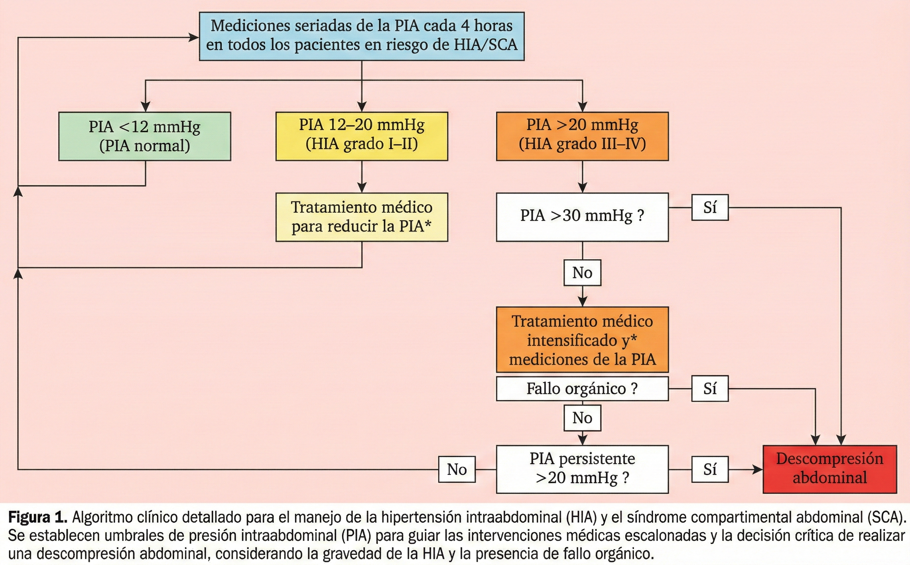
80 Rec. 80. Se recomienda la reparación endovascular como la primera opción de tratamiento para pacientes con un aneurisma de aorta abdominal roto y anatomía adecuada. (I A).
81 Rec. 81. Se recomienda la monitorización posoperatoria de la presión intraabdominal para el diagnóstico temprano y el manejo de la hipertensión intraabdominal o el síndrome compartimental abdominal después del tratamiento abierto o endovascular por un aneurisma de aorta abdominal roto. (I B).
82 Rec. 82. Los pacientes con síndrome compartimental abdominal después del tratamiento abierto o endovascular de un aneurisma de aorta abdominal roto deben ser tratados con laparotomía descompresiva. (I B).
83 Rec. 83. Se debe considerar un sistema de cierre asistido por vacío con tracción mediada por malla y cierre abdominal temprano en el manejo del abdomen abierto tras la descompresión por síndrome compartimental abdominal después del tratamiento abierto o endovascular de un aneurisma de aorta abdominal roto. (IIa C).
6.4.2. Isquemia colónica.
La isquemia colónica posoperatoria es una complicación grave tanto de la reparación abierta como endovascular de rAAAs. En un metanálisis, que incluyó a 52 670 pacientes de 101 estudios, la prevalencia combinada de isquemia intestinal clínicamente relevante después de la reparación de rAAA fue del 10%, y aproximadamente el 4% de los pacientes mueren por sus consecuencias. El riesgo de isquemia intestinal fue mayor después de OSR que después de EVAR (RR 1.8). La tasa reportada de isquemia colónica es mayor en estudios que realizan sigmoidoscopia de rutina en todos los pacientes después de la reparación de rAAA, oscilando entre 14% y 32%, pero también incluye casos de isquemia leve o moderada que a menudo se tratan de manera conservadora. La sigmoidoscopia es precisa para descartar isquemia colónica después de la reparación de rAAA, pero es menos específica en el diagnóstico de la presencia de isquemia colónica transmural clínicamente relevante. Por lo tanto, no se recomienda la sigmoidoscopia de rutina después de la reparación de rAAA. En su lugar, se aboga por un enfoque selectivo, con sigmoidoscopia en pacientes con sospecha clínica o de alto riesgo. Posoperatoriamente, todos los pacientes con rAAA deben ser monitoreados de cerca en busca de signos de isquemia colónica. Cuando se sospecha el diagnóstico, se recomiendan evaluaciones clínicas frecuentes, monitoreo de IAP (que se ha encontrado que tiene una fuerte correlación con la isquemia colónica), uso liberal de sigmoidoscopia y laparotomía exploratoria temprana para confirmar el diagnóstico y mejorar el manejo general (Fig. 4).
84 Rec. 84. Se debe considerar la sigmoidoscopia flexible para confirmar el diagnóstico en pacientes sometidos a tratamiento abierto o endovascular por rotura de aneurisma de aorta abdominal en los que se sospecha isquemia colónica. (IIa B).
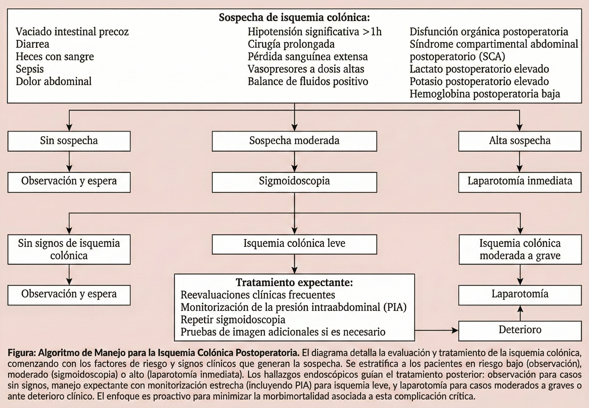
6.4.3. Isquemia aguda de miembros inferiores.
La isquemia aguda de miembros inferiores después de OSR o EVAR para rAAA representa una condición grave que puede conducir a amputación y muerte si no se trata rápidamente. La incidencia de esta complicación en la base de datos NSQIP del Colegio Americano de Cirujanos fue del 4.8% sin diferencias significativas entre EVAR y OSR. Este porcentaje es significativamente mayor que la tasa del 1.6% documentada para AAAs electivos o sintomáticos (p < .001). La inestabilidad hemodinámica, el tiempo prolongado de pinzamiento aórtico y el tiempo de operación, la falta de administración de heparina y los eventos tromboembólicos pueden jugar un papel en su desarrollo. Tales pacientes tienen resultados significativamente peores en términos de mortalidad a 30 días (20.5 frente a 4.6%, p < .001). Si se sospecha isquemia de extremidades inferiores en la mesa, puede ser necesaria una revascularización inmediata dependiendo de la etiología,.
6.5. Aneurisma de aorta abdominal sintomático no roto
El aneurisma sintomático no roto tiene una definición variable, que varía desde sensibilidad a la palpación hasta evidencia de émbolos periféricos sin otra fuente obvia, o dolor de espalda o abdominal inexplicable. Tales casos de aneurismas < 55 mm de diámetro requieren investigaciones urgentes para corroborar el diagnóstico sintomático.
Para los AAA sintomáticos no rotos, el momento óptimo del tratamiento es debatido. Se cree que estos aneurismas tienen un mayor riesgo de ruptura que los aneurismas asintomáticos, mientras que la reparación de emergencia bajo circunstancias menos favorables se asocia con un mayor riesgo de complicaciones perioperatorias. El retraso en la reparación quirúrgica podría mejorar el resultado al permitir una evaluación de riesgo más completa, optimización del paciente y evitar operaciones fuera de horario por equipos quirúrgicos y anestésicos menos experimentados. Por lo tanto, el manejo de estos casos debe implicar un breve período de evaluación rápida y optimización seguido de reparación urgente bajo condiciones óptimas. Un monitoreo cuidadoso con manejo estricto de la BP y el dolor en espera de reparación es importante.
85 Rec. 85. Se puede considerar un breve período de evaluación rápida y optimización seguido de reparación urgente en condiciones óptimas (idealmente durante el horario laboral) para pacientes con un aneurisma de aorta abdominal sintomático no roto. (IIb B).
7. RESULTADO A LARGO PLAZO Y SEGUIMIENTO DESPUÉS DE LA REPARACIÓN DE ANEURISMA DE AORTA ABDOMINAL
Este capítulo se centra en los resultados a largo plazo y el manejo después de la reparación de AAA infrarrenal tanto por OSR como por EVAR. Esto incluye la prevención secundaria, las complicaciones que ocurren después del período perioperatorio y las implicaciones para el seguimiento. Para AAA yuxtarrenal, ver Capítulo 8.
Los pacientes que se han sometido a reparación de AAA tienen un mayor riesgo de muerte en comparación con la población general. En un metanálisis de supervivientes después de la reparación electiva de AAA, que incluyó 107 814 pacientes en 36 estudios, la tasa de supervivencia a cinco años fue del 69%, que es menor que la de individuos sin AAA pero mayor que la observada para otras enfermedades vasculares como PAOD.
La supervivencia a largo plazo después de la reparación del AAA se ve afectada por la edad, el sexo, las comorbilidades y las diferencias regionales. La enfermedad renal terminal y la COPD que requiere oxígeno suplementario son predictores particularmente relevantes de muerte tardía en pacientes con AAA, aumentando el riesgo más de tres veces. El diámetro basal del AAA también es un predictor constante de supervivencia. Los AAA grandes se asocian no solo con una tasa de mortalidad más alta, sino también con más intervenciones secundarias, roturas posteriores a la reparación y pérdida de seguimiento.
Se ha sugerido que el sexo femenino afecta negativamente la supervivencia después de la reparación del AAA, pero la evidencia es contradictoria. En octogenarios, la longevidad después de la reparación del AAA no es significativamente diferente de la de una población de la misma edad sin AAA.
A diferencia de la mortalidad perioperatoria, que ha disminuido gradualmente con el tiempo, la muerte tardía después de la reparación del AAA sigue siendo alta sin mejoras importantes en las últimas dos décadas. Las causas más comunes son cardiovasculares (particularmente IHD), cáncer de pulmón y enfermedad pulmonar.
En un análisis de casos y controles de 19 505 pacientes con AAA operados en el Reino Unido, la libertad de eventos cardiovasculares adversos a cinco años fue del 86% entre los pacientes con AAA y del 93% para los controles. El riesgo anual de MI, accidente cerebrovascular y muerte aumentó aproximadamente dos veces en comparación con una población emparejada en una cohorte danesa de pacientes con AAA. Después de EVAR, se encontró que los pacientes con un diámetro de cuello proximal ancho (>= 30 mm) tenían un mayor riesgo de muerte por causa cardiovascular (HR 2.16), mientras que > 25% de trombo circunferencial en el cuello fue protector (HR 0.32). La muerte relacionada con el cáncer es más común entre los supervivientes después de la reparación del AAA, lo que probablemente se deba a factores de riesgo comunes para la aterosclerosis y varios tipos de cáncer, como el tabaquismo.
Notablemente, la supervivencia después de los primeros 90 días no difiere significativamente entre la reparación de AAA roto e intacto. Aunque el riesgo de muerte tardía relacionada con el aneurisma es difícil de evaluar debido a la incertidumbre en el registro de la causa de muerte y la falta de cohortes adecuadas a largo plazo, se ha informado que es inferior al 3%.
7.1. Manejo médico después de la reparación de aneurisma de aorta abdominal
La mayoría de los pacientes que requieren reparación de AAA sufren de enfermedad aterosclerótica avanzada y otras comorbilidades relacionadas con el tabaquismo. A pesar del aumento del riesgo, no se han realizado RCT para evaluar si el manejo médico modifica el pronóstico de estos pacientes, pero existe consenso en que debe continuarse la prevención secundaria dirigida al manejo de factores de riesgo y la medicación para cualquier enfermedad cardiovascular subyacente.
El mejor tratamiento médico incluye terapia antiplaquetaria, estatinas y medicación antihipertensiva, aunque la evidencia sobre fármacos individuales puede ser conflictiva. En un metanálisis reciente que incluyó a 69 790 pacientes de 11 estudios de cohortes, el uso de estatinas se asoció con una reducción del riesgo relativo del 35% en la tasa de mortalidad para los pacientes después de la reparación del AAA. Un metanálisis posterior sobre el mismo tema, que incluyó a 134 290 pacientes, confirmó estos hallazgos reportando una tasa de mortalidad a corto (OR 0.51) y largo plazo (OR 0.67) más baja para los usuarios de estatinas. Deben consultarse las guías dirigidas al manejo médico de cada factor de riesgo individual y la medicación aterosclerótica para recomendaciones detalladas. En el manejo de pacientes después de la reparación del AAA, debe asegurarse la reevaluación del riesgo de sangrado, el ajuste de dosis y el cumplimiento con el mejor tratamiento médico a intervalos regulares.
86 Rec. 86. Se recomienda que los pacientes operados de un aneurisma de aorta abdominal reciban un manejo de riesgo cardiovascular posoperatorio que incluya terapia con estatinas, medicación antiplaquetaria y control de la presión arterial. (I B).
7.2. Complicaciones tardías después de la reparación de aneurisma de aorta abdominal
Las complicaciones tardías pueden ocurrir tanto después de OSR como de EVAR. Mientras que algunas complicaciones son exclusivas de una de las técnicas (por ejemplo, hernias incisionales después de OSR o endofuga después de EVAR), otras pueden ocurrir independientemente de la técnica utilizada (por ejemplo, infección del injerto u oclusión del injerto). Se presenta un resumen de las complicaciones tardías frecuentes después de OSR en la Tabla 19, y después de EVAR en la Tabla 20. Los pacientes tratados con EVAR tienen más probabilidades de experimentar complicaciones aórticas e intervenciones secundarias que los tratados con OSR.
7.2.1. Oclusión del injerto.
La oclusión del injerto es una complicación relativamente frecuente después de OSR y EVAR, representando aproximadamente un tercio de todas las intervenciones secundarias. Después de OSR con una prótesis bifurcada, la oclusión de la rama ocurre en 1 e 5% y después de EVAR en 5.6%. La oclusión del injerto se presenta como isquemia aguda de extremidades en 32 e 44% de los casos, como isquemia crónica de extremidades en 50 e 60% y algunos son asintomáticos y se detectan incidentalmente en imágenes (7%). Aproximadamente la mitad de todas las oclusiones de endoprótesis se presentan después de 30 días.
El factor de riesgo más fuerte para la oclusión de la rama de EVAR es la extensión a la EIA. Otros factores de riesgo para la oclusión de la rama incluyen angulación de la arteria ilíaca, tortuosidad, calcificación o estenosis, sobredimensionamiento de la endoprótesis >= 15%, AAA pequeño o bifurcación aórtica estrecha, y material de la endoprótesis. Alguna evidencia apunta hacia un mayor riesgo de oclusión cuando se utilizan endoprótesis de perfil bajo. La heterogeneidad y la naturaleza retrospectiva de los datos impiden una recomendación específica sobre este tema, aparte de la recomendación general dada anteriormente para un monitoreo mejorado y seguimiento a largo plazo de los dispositivos de nueva generación.
La obstrucción de la endoprótesis debido a acodamiento o estenosis puede detectarse antes de la oclusión, debido a síntomas nuevos o que empeoran, o en imágenes de seguimiento de rutina, requiriendo a menudo intervención. En un metanálisis reciente, la cirugía abierta (generalmente trombectomía o bypass extraanatómico) se utilizó con mayor frecuencia (61%), seguida de reparación endovascular con o sin trombólisis (17%) con procedimientos híbridos realizados en el 8%. El manejo conservador fue preferido en el 13%. La tasa de mortalidad fue del 3.6% y la tasa de amputación del 3.1%. Las tasas de recurrencia siguen siendo altas, en 8.0%. No hay evidencia en la literatura sobre la superioridad de una opción de tratamiento sobre la otra, y la estrategia de tratamiento debe adaptarse al paciente.
Los depósitos de trombo dentro de las endoprótesis se han investigado como una fuente potencial de oclusiones o eventos tromboembólicos. Estos depósitos pueden ser causados por factores hemodinámicos sistémicos y locales y características de la endoprótesis. Las disminuciones agudas de la sección transversal en el tamaño del injerto (estrechamiento), como se observa en dispositivos aorto-uni-ilíacos o dispositivos con cuerpos grandes y ramas de pequeño diámetro, parecen especialmente propensos a inducir trombo mural (Fig. 5). Un metanálisis que comprende cinco estudios observacionales que incluyeron 808 pacientes (seguimiento medio 10 e 68 meses) informó trombosis mural en el 21%, la mayoría desarrollándose dentro del primer año después de la implantación, pero sin evidencia que sugiera un mayor riesgo de oclusión o tromboembolismo en los pacientes afectados. Además, no se encontró correlación entre el régimen antitrombótico y el desarrollo (o prevención) de trombo mural.
Como tal, no se indica ninguna terapia específica. Sin embargo, un pequeño estudio observacional reciente sugirió que la escalada de la terapia antitrombótica podría detener la progresión o resolver el trombo. Es importante señalar que los estudios que investigan los depósitos de trombo dentro de las endoprótesis no investigaron específicamente la trombosis parcial de las ramas del endoinjerto, que puede ocurrir debido a acodamiento u obstrucción. Aunque la mayoría de la evidencia sugiere que la trombosis mural asintomática sin efecto hemodinámico significativo puede manejarse solo con vigilancia, existe incertidumbre con respecto a qué pacientes pueden beneficiarse del tratamiento mediante intervención secundaria o escalada de medicación antitrombótica. Por lo tanto, se recomienda una estrategia terapéutica individualizada para pacientes con trombo que resulta en síntomas, muestra una evolución significativa con el tiempo o resulta en estenosis hemodinámicamente significativa.
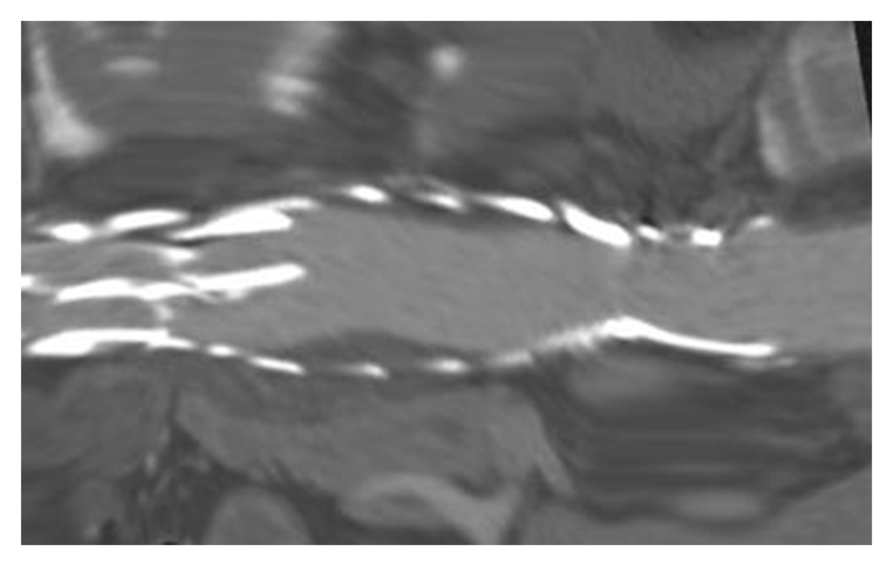
Figura 5. Ejemplo de formación de trombo mural benigno dentro del cuerpo principal de una endoprótesis, debido a una configuración en forma de barril (angiografía por tomografía computarizada con reconstrucción de línea de luz central).
87 Rec. 87. Se recomienda la evaluación inmediata de problemas relacionados con el injerto, como acodamiento u oclusión de la rama, en pacientes operados de un aneurisma de aorta abdominal con nueva aparición o empeoramiento de la isquemia de las extremidades inferiores. (I B).
88 Rec. 88. No está indicada la intervención o escalada de la terapia antitrombótica para pacientes tratados mediante reparación endovascular de aneurisma de aorta abdominal que presentan formación de trombo mural asintomático no obstructivo limitado al cuerpo principal de la endoprótesis. (III C).
89 Rec. 89. Se puede considerar la intervención individualizada o la escalada de la terapia antitrombótica en pacientes tratados con reparación aórtica endovascular abdominal que presentan formación de trombo sintomático, evolutivo o hemodinámicamente significativo dentro de la endoprótesis. (IIb C).
7.2.2. Infección aórtica y de endoprótesis y fístula injerto entérica.
La infección del injerto protésico es una complicación grave con un mal pronóstico. Ocurre entre 0.3% y 6% después de OSR y 0.2 e 1% después de EVAR. La frecuencia reportada de fístula injerto entérica (GEF) secundaria es de 0.3 e 4.3%, con un riesgo de dos a cuatro veces mayor después de OSR en comparación con EVAR.
Los factores de riesgo para AGI incluyen material protésico en la ingle, operaciones de emergencia, lesión intestinal, infecciones perioperatorias, bacteriemia, necesidad de bypass extraanatómico en endoprótesis aorto-uni-ilíacas, embolización previa con coils de la arteria hipogástrica, diabetes e inmunosupresión. Debido a la alta morbilidad y mortalidad de AGI y GEF (20 e 75% de morbilidad y mortalidad combinadas en varias series), la prevención es clave, y el diagnóstico temprano y el tratamiento agresivo son esenciales.
En general, el manejo de AGI es altamente complejo, y los pacientes deben ser manejados preferiblemente en centros de alto volumen para evaluación y tratamiento multidisciplinario, como se recomienda en las Guías de Práctica Clínica de la ESVS sobre el Manejo de Infecciones de Injerto Vascular y Endoinjerto (Clase I, Nivel C). Según este documento, el diagnóstico de AGI debe seguir los criterios de la Colaboración de Manejo de Infección de Injerto Aórtico (MAGIC) (Clase I, Nivel C), y se debe hacer todo lo posible para obtener prueba microbiológica del agente causante (Clase I, Nivel C). La CTA es la modalidad diagnóstica preferida (Clase I, Nivel B), añadiendo tomografía por emisión de positrones con 18-fluoro-desoxiglucosa (18F-FDG/PET-CT) y o gammagrafía de glóbulos blancos (WBCS) si es necesario para mejorar la precisión diagnóstica (Clase I, Nivel B).
Se recomienda un enfoque adaptado al paciente, basado en la condición del paciente, anatomía y estado de la infección, incluyendo la presencia de GEF, determinando la estrategia terapéutica. Debe considerarse la profilaxis de la infección del injerto para procedimientos dentales que involucren manipulación gingival o periapical o perforación que involucre la mucosa, así como en otros procedimientos de alto riesgo de infección como drenaje de abscesos (Clase IIa, Nivel C). Para más detalles y orientación sobre diagnóstico y estudio de AGI, así como profilaxis antibiótica para procedimientos quirúrgicos o dentales en pacientes con una prótesis aórtica, consulte las Guías de Práctica Clínica de la ESVS sobre el Manejo de Infecciones de Injerto Vascular y Endoinjerto. Se añade una sección sobre manejo a este documento debido a la nueva evidencia relevante que estuvo disponible después de su publicación.
Numerosas bacterias y hongos pueden causar AGI, pero las bacterias Gram positivas y enterococos son las más comunes. Patógenos más virulentos como Staphylococcus aureus o Pseudomonas aeruginosa se asocian con un peor pronóstico y mayor riesgo de reinfección, mientras que los patógenos que típicamente colonizan la piel como Staphylococcus epidermidis o corinebacterias son menos virulentos. El crecimiento polimicrobiano y la participación de Candida es especialmente común en pacientes con GEF; 37% y 31% respectivamente. Cuando la infección está presente, debe considerarse la eliminación completa del injerto y el desbridamiento del tejido infectado. El tratamiento preferido de AGI es una reconstrucción in situ con desbridamiento extenso de tejidos infectados, utilizando materiales resistentes a la infección como vena profunda autóloga, aloinjertos criopreservados o injertos xenopericárdicos. El reemplazo de injerto protésico se asocia con mayor riesgo de reinfección que las reconstrucciones autógenas, mientras que los injertos protésicos impregnados con plata y o antibióticos tuvieron mejor desempeño que los injertos protésicos estándar. Las reconstrucciones biológicas no están, sin embargo, libres de reinfección.
La ligadura aórtica con reconstrucción extraanatómica es una alternativa razonable, especialmente cuando el perfil de riesgo del paciente es alto, o la infección del tejido local es extensa. Un estudio multicéntrico internacional reciente grande, que incluyó a 182 pacientes con AGI con GEF, no encontró beneficio de supervivencia de la reconstrucción in situ vs. extraanatómica, mientras que estos últimos tenían menos probabilidad de experimentar hemorragia relacionada con la aorta dentro de los 30 días posteriores a la operación (3% dehiscencia del muñón aórtico vs. 11% rotura anastomótica). Esto fue confirmado en un estudio nacional de Suecia, que incluyó a 126 pacientes donde el 50% tenía afectación entérica, mostrando una supervivencia temprana similar entre la reconstrucción extraanatómica e in situ (81.7% vs. 76.4% respectivamente), supervivencia a cinco años (48.2% vs. 49.9%) e infección recurrente (20.3% vs. 17.0%). La tasa de estallido del muñón aórtico después de la reconstrucción extraanatómica y dehiscencia de anastomosis después de la reconstrucción in situ durante el seguimiento fue la misma, 9.8%.
Sin embargo, en una cohorte de 241 pacientes con AGI sin afectación entérica, la reconstrucción extraanatómica se asoció con una tasa de reinfección y mortalidad casi dos veces y media mayor en comparación con la reconstrucción in situ. Además, la cobertura de omento y o colgajo muscular de la reparación parecen ser protectores. La GEF aórtica requiere frecuentemente tratamiento de emergencia. Se han utilizado procedimientos sincrónicos y escalonados utilizando estrategias in situ o extraanatómicas y material autólogo, homólogo o protésico para la reparación vascular.
La reparación entérica se puede realizar con duodenorrafia, con o sin interposición omental y con o sin enterostomía, o resección o reconstrucción duodenal. Una revisión de la literatura que incluye 331 casos de GEF aórtica sugiere que el uso de interposición omental y reconstrucción vascular in situ puede ser ventajoso, y que la diversión duodenal es preferible al cierre básico de la fístula. Una revisión y análisis de datos agrupados de 823 casos de GAF sugiere que una endovascular escalonada (puente) a cirugía abierta, para el control del sangrado, se asocia con una mejor supervivencia temprana. Las complicaciones intestinales son un factor de riesgo importante que aumenta el riesgo de muerte en al menos tres veces. Se sugiere la evaluación y manejo quirúrgico del defecto entérico por un especialista en cirugía intestinal y un uso liberal de second look.
Se recomienda el tratamiento antibiótico sistémico a largo plazo en todos los pacientes tratados por AGI, con una duración mínima de tratamiento de seis semanas. La duración exacta del tratamiento antibiótico, que puede ser de por vida, debe manejarse individualmente, y debe hacerse en estrecha colaboración con especialistas en enfermedades infecciosas. En un estudio multicéntrico basado en el Consorcio de Enfermedades de Baja Frecuencia Vascular (VLFDC), que incluyó a 182 pacientes con una GEF aórtica, la duración del uso de antibióticos (HR 0.92) y el uso de rifampicina en el momento del alta (HR 0.20) disminuyeron independientemente la mortalidad. La reinfección se desarrolló en solo el 7% de los que recibieron antibióticos dirigidos por cultivo de por vida. Esto fue confirmado en un estudio nacional sueco, que incluyó a 126 pacientes con AGI, donde la terapia antimicrobiana prolongada (más de tres meses) se asoció significativamente con una tasa de mortalidad a largo plazo reducida (HR 0.3). Deben considerarse las pruebas para agentes fúngicos y el tratamiento antifúngico adyuvante, preferiblemente con equinocandinas, en todos los pacientes con GEF aórtica.
En pacientes no adecuados para terapia quirúrgica radical, puede considerarse un enfoque semiconservador con eliminación parcial del injerto o una estrategia de manejo médico paliativo conservador. En un estudio nacional sueco reciente, que incluyó a 169 pacientes con un AGI tratado quirúrgicamente, 43 habían sido tratados con eliminación parcial del injerto o endoprótesis. Hubo una tendencia hacia una peor supervivencia general no ajustada del grupo semiconservador en comparación con el grupo tratado radicalmente, particularmente en presencia de una GEF. Esto se explicó en gran medida por la mayor edad y la presencia de más comorbilidades, en el grupo semiconservador.
Al ajustar por estos factores de confusión, no hubo diferencia significativa en la supervivencia a largo plazo entre un enfoque quirúrgico semiconservador y uno radical. Sin embargo, la resección parcial de injertos infectados conduce a tasas significativamente más altas de reinfección, hasta 39 e 45%, especialmente en pacientes con infección abdominal no aislada a una sola rama del injerto, con infección por Candida o con GEF. Por lo tanto, la resección parcial de injertos aórticos infectados puede ser una alternativa en pacientes con comorbilidades con una infección aislada (localizada) que no comprenda Candida o sin una GEF. No obstante, la alta tasa de recurrencia observada justifica la necesidad de una vigilancia estrecha y terapia antimicrobiana prolongada o de por vida en pacientes tratados por AGI con eliminación parcial del injerto. Dejar el stent superior de metal desnudo in situ puede simplificar la explantación de un dispositivo EVAR infectado. Sin embargo, no hay evidencia de si esto es aconsejable, y debe decidirse caso por caso.
El manejo conservador de AGI con terapia antimicrobiana, solo o en combinación con drenaje percutáneo, irrigación del saco u omentoplastia, con preservación de la endoprótesis debe considerarse como un último recurso para pacientes de alto riesgo quirúrgico, dados los resultados generalmente pobres, especialmente si hay GEF presente. Un estudio retrospectivo reciente de un solo centro de Suecia, sin embargo, informó resultados alentadores de pacientes tratados de manera conservadora con AGI sin fístula considerados no aptos para tratamiento quirúrgico, donde se identificó la etiología microbiológica, permitiendo una terapia antibiótica dirigida. La supervivencia estimada de KaplaneMeier fue del 98% a los 30 días, 88% al año, y 79% a los tres años, con el 48% de los pacientes pudiendo suspender el tratamiento antibiótico después de una mediana de 16 meses.
No hay evidencia específica sobre cómo hacer el seguimiento de los pacientes después del manejo de injertos aórticos infectados. Las Guías de Práctica Clínica de la ESVS sobre el Manejo de Infecciones de Injerto Vascular y Endoinjerto recomiendan el seguimiento de por vida después de la reconstrucción in situ con aloinjertos criopreservados para infección de injerto vascular aórtico abdominal o endoinjerto, para detectar la degeneración del aloinjerto (Clase I, nivel C).
Una publicación reciente sobre resultados después de la explantación de endoprótesis infectada describió un protocolo de seguimiento como examen clínico con análisis de sangre al uno, tres y seis meses, y anualmente a partir de entonces, PET-CT a los seis meses (repetido si se considera necesario) y escaneos CTA anualmente. Sin embargo, otros grupos de expertos han informado diferentes estrategias o no han hecho referencia a protocolos de vigilancia, y la mayoría recomienda estrategias individualizadas. Debido a la escasez de evidencia y la heterogeneidad de los protocolos, no se puede hacer una recomendación general.
90 Rec. 90. Se debe considerar el tratamiento radical con explantación completa del injerto o endoprótesis como tratamiento de primera línea para pacientes con infección de injerto aórtico o endoprótesis. (IIa B).
91 Rec. 91. Se debe considerar la reconstrucción in situ utilizando material de injerto biológico como la modalidad de reparación preferida para pacientes sometidos a explantación completa de un injerto aórtico o endoprótesis infectados. (IIa C).
92 Rec. 92. Se puede considerar la reconstrucción extraanatómica como una modalidad de reparación alternativa en pacientes frágiles, en casos con infecciones extensas o con fístula entérica del injerto, para pacientes sometidos a explantación completa de un injerto aórtico o endoprótesis infectados. (IIb C).
93 Rec. 93. Se deben considerar opciones conservadoras y/o paliativas para pacientes seleccionados de alto riesgo con infección de injerto aórtico o endoprótesis. (IIa C).
94 Rec. 94. Se puede considerar la eliminación parcial del injerto, en lugar de la explantación radical, para pacientes seleccionados de alto riesgo con una infección aislada (localizada) del injerto aórtico o endoprótesis que no involucre Candida y sin afectación entérica. (IIb C).
95 Rec. 95. Se debe considerar la terapia antifúngica adyuvante para pacientes con fístula aórtica o entérica del injerto, hasta que se haya investigado adecuadamente la infección fúngica. (IIa C).
96 Rec. 96. Se debe considerar la terapia antibiótica específica de cultivo a largo plazo para pacientes tratados por infección de injerto aórtico o endoprótesis considerados con alto riesgo de reinfección o cuando no se logra la eliminación completa del injerto. (IIa C).
97 Rec. 97. Se recomienda una evaluación rápida para identificar una posible fístula entérica del injerto en pacientes con una prótesis aórtica que presenten hemorragia gastrointestinal. (I C).
98 Rec. 98. Se puede considerar la colocación de una endoprótesis endovascular escalonada como puente a la cirugía abierta para pacientes con fístula entérica del injerto y hemorragia. (IIb C).
99 Rec. 99. Se debe considerar la evaluación y el manejo del defecto entérico por un cirujano gastrointestinal para pacientes sometidos a reparación abierta de fístula entérica del injerto. (IIa C).
7.2.3. Disfunción sexual.
Los pacientes con AAA tienen una alta prevalencia basal de disfunción sexual. Hasta el 75% de los pacientes informan problemas como disfunción eréctil y eyaculación retrógrada, a menudo debido a la edad avanzada y comorbilidades. En un estudio prospectivo de un solo centro de Alemania, el 27% de los pacientes informaron disfunción eréctil antes de OSR aumentando al 53% un año después de la cirugía. Las frecuencias correspondientes después de EVAR fueron 43% y 59% respectivamente. En una revisión sistemática, la incidencia de disfunción eréctil de novo osciló entre el 20% y el 83% después de OSR y el 11% al 14% después de EVAR. A pesar de estas diferencias aparentes, los estudios comparativos tuvieron hallazgos inconsistentes. Si bien se puede esperar que la tasa de eyaculación retrógrada sea mayor después de OSR, la escasez de datos que exploran este tema no permite conclusiones claras. Después de EVAR, la incidencia reportada de nueva disfunción sexual varía hasta el 17% en pacientes con oclusión unilateral intraoperatoria de IIA y hasta el 24% en oclusión bilateral. Actualmente no se dispone de datos prospectivos a largo plazo que analicen estrategias operativas, factores de riesgo y opciones terapéuticas. Sin embargo, es importante informar a los pacientes sobre esta complicación y ser consciente de la prevalencia preoperatoria de disfunción sexual en todos los pacientes masculinos que se someten a OSR y EVAR. Dada la compleja naturaleza fisiológica y psicológica de la disfunción sexual, los pacientes afectados deben ser evaluados por especialistas en este campo.
100 Rec. 100. Se debe considerar la derivación a equipos especializados para pacientes tratados por aneurisma de aorta abdominal que estén angustiados por la disfunción sexual de nueva aparición posoperatoria. (IIa C).
7.2.4. Formación de aneurisma para-anastomótico.
La formación de aneurisma para-anastomótico puede ocurrir después de OSR, ya sea como un aneurisma verdadero que se desarrolla adyacente a la anastomosis o un falso aneurisma causado por la interrupción de la anastomosis. La infección del injerto puede ser la causa subyacente de la formación secundaria de aneurisma, particularmente dentro de los primeros años después de la reparación, y debe excluirse. Las Guías de Práctica Clínica de la ESVS sobre el Manejo de Infecciones de Injerto Vascular y Endoinjerto recomiendan que se utilicen los criterios MAGIC para excluir la infección del injerto asociada. También se recomienda el uso de 18F-FGD-PET combinado con CTA como una modalidad de imagen adicional para mejorar la precisión diagnóstica. Series históricas reportan una incidencia de hasta el 10% después de 10 años tanto en anastomosis aórticas como femorales. Un estudio contemporáneo sugiere incidencias más bajas a los cinco y 10 años para aneurismas para-anastomóticos aórticos (2.2% y 3.6%, respectivamente).
Las indicaciones para la terapia dependen de la etiología (ver sección 7.2.2), tamaño del aneurisma para-anastomótico y síntomas clínicos. No hay datos que apoyen umbrales de tamaño para la reparación de aneurismas para-anastomóticos. Mientras que los aneurismas aórticos o ilíacos verdaderos proximales o distales a la anastomosis pueden tratarse a un umbral de diámetro equivalente al de la terapia electiva, un diámetro umbral más bajo puede estar justificado para aneurismas falsos o saculares. Tanto la reparación endovascular como abierta pueden usarse para tratar aneurismas para-anastomóticos aórticos e ilíacos. Dependiendo de la extensión de la enfermedad y las zonas de aterrizaje, las endoprótesis con o sin fenestraciones o ramas se han utilizado con buenos resultados y deben considerarse preferentemente. La cirugía abierta se utiliza principalmente en aneurismas para-anastomóticos femorales.
101 Rec. 101. Se debe considerar la infección como causa subyacente en pacientes con formación de aneurisma para-anastomótico después de una reparación previa de aneurisma de aorta abdominal. (IIa C).
102 Rec. 102. Se debe considerar preferentemente la reparación endovascular para pacientes con formación de aneurisma para-anastomótico aortoilíaco no infeccioso después de una reparación previa de aneurisma de aorta abdominal. (IIa C).
7.2.5. Hernia incisional.
La hernia incisional es una complicación común y frecuentemente subnotificada de la OSR. Un metanálisis reciente informó una tasa anual promedio de desarrollo de hernia que varía entre el 10% para incisiones de línea media y el 3% para incisiones retroperitoneales. Si bien se ha demostrado que el refuerzo profiláctico de malla de las incisiones de línea media reduce el riesgo de desarrollo de hernia (ver sección 5.3.1.4), no hay datos específicos sobre pacientes con AAA para el manejo una vez que la complicación se ha desarrollado. Se recomiendan las guías generales para el manejo de hernias incisionales.
7.2.6. Endofugas.
Una endofuga significa la presencia de flujo en el saco del aneurisma fuera de la endoprótesis después de EVAR. Se identifica en hasta un tercio de los casos, aunque la prevalencia depende de múltiples factores incluyendo el tipo y frecuencia de imagen realizada durante el seguimiento. Las endofugas se clasifican en primarias (presentes en el momento de la reparación) o secundarias (que ocurren después de una imagen postoperatoria negativa previa), así como en la causa del flujo periprotésico (Tabla 20). Las endofugas Tipo 1 o 3 son las más preocupantes ya que exponen la pared del vaso a la presión arterial y flujo pulsátil. El riesgo asociado de rotura secundaria es por lo tanto alto. Las T2EL son más benignas pero también pueden ser engorrosas si se asocian con crecimiento continuo del AAA.
Las endofugas Tipo 4, relacionadas con la porosidad del injerto, han desaparecido virtualmente en los diseños modernos de endoprótesis. El manejo de las endofugas está naturalmente condicionado por el mecanismo de desarrollo, variando desde la vigilancia básica hasta intervenciones endovasculares o conversión abierta.
7.2.6.1. Endofuga Tipo 1.
El flujo directo persistente en el saco del aneurisma debido a un sello inadecuado proximal (Tipo 1a) o distal (Tipo 1b) de la endoprótesis se asocia con un alto riesgo de rotura del aneurisma. El flujo directo también puede ocurrir debido a la falta de sello en un oclusor ilíaco (Tipo 1c) después de la reparación AUI con injerto cruzado femorofemoral. En un metanálisis que incluyó 190 roturas después de EVAR, se informó endofuga Tipo I en más del 60% de los casos y otros estudios informaron proporciones aún más altas, hasta el 80%. También debe prestarse atención a la evolución de las zonas de sellado con el tiempo, tanto proximal como distalmente. La dilatación progresiva puede exceder el diámetro nominal de la endoprótesis y comprometer el sello. La migración del cuerpo principal proximal es ahora menos frecuente debido al uso general de injertos con fijación activa (ganchos o púas) pero puede ocurrir migración retrógrada de las ramas ilíacas, predisponiendo a endofuga Tipo 1b. Los aneurismas con gran luz de flujo pueden estar en riesgo especialmente alto debido al desplazamiento del injerto con el tiempo. Cuando las zonas de sellado están comprometidas, incluso sin endofugas visibles, puede considerarse el tratamiento preventivo.
Están disponibles diferentes opciones endovasculares para resolver las endofugas Tipo 1 o mejorar las zonas de sellado, dependiendo de los mecanismos de fallo. Estas incluyen extensiones proximales o distales, que con mayor frecuencia requieren dispositivos fenestrados o ramificados para preservar los vasos de las ramas viscerales o las arterias ilíacas internas. Si ha ocurrido migración y hay suficiente zona de sellado para un manguito de extensión, esto se puede realizar con baja complejidad. Sin embargo, con mayor frecuencia, solo se puede lograr un sellado suficiente incorporando las arterias renoviscerales o ilíacas internas. En entornos electivos, estos procedimientos pueden realizarse con muy bajo riesgo. El uso de stents paralelos (chimeneas) también se ha utilizado con éxito, y puede ser particularmente útil en entornos de emergencia. Ocasionalmente, la aposición de la tela de la endoprótesis con grapas endovasculares contra la pared aórtica es posible, siempre que la endoprótesis esté adecuadamente dimensionada, no haya migrado y haya una zona de sellado apropiada.
Sin embargo, la literatura sugiere un alto riesgo de recurrencia para las endofugas Tipo 1 tratadas con endograpas. El uso de agentes de embolización para endofuga Tipo 1 se asocia con un alto éxito técnico, pero la eliminación efectiva de la endofuga y la protección contra la expansión continua del saco y la rotura no se han demostrado. La dilatación básica con balón o la inserción de un stent expandible con balón de metal desnudo pueden ser efectivas en endofugas Tipo 1 primarias seleccionadas, pero dependen en gran medida de la ausencia de dilatación del cuello, y su durabilidad sigue siendo poco clara. Dos revisiones sistemáticas recientes no lograron identificar la estrategia de manejo endovascular ideal, principalmente debido a una heterogeneidad significativa y riesgo de sesgo en la literatura. La conversión abierta también se puede realizar con resultados aceptables en pacientes aptos para OSR, y puede considerarse como una alternativa a procedimientos endovasculares complejos si se realiza de forma electiva en centros experimentados. En un metanálisis reciente, la tasa de mortalidad agrupada a 30 días para conversiones abiertas electivas fue solo del 2.8%, pero aumentó al 28% para conversiones urgentes.
103 Rec. 103. Se recomienda la reintervención rápida para lograr un sellado, principalmente por medios endovasculares, en pacientes con endofuga tipo 1 después de reparación endovascular de aneurisma de aorta abdominal. (I B).
104 Rec. 104. Se puede considerar la intervención para mejorar el sellado, principalmente por medios endovasculares, en pacientes con zonas de sellado comprometidas sin endofuga visible después de reparación endovascular de aneurisma de aorta abdominal. (IIb C).
105 Rec. 105. Se debe considerar la extensión proximal con dispositivos fenestrados y ramificados con preferencia a otras técnicas endovasculares para pacientes con sellado proximal comprometido después de reparación endovascular de aneurisma de aorta abdominal. (IIa C).
106 Rec. 106. Se puede considerar la conversión abierta electiva como una alternativa a las intervenciones endovasculares complejas para pacientes seleccionados con sellado proximal comprometido después de reparación endovascular de aneurisma de aorta abdominal, siempre que el riesgo quirúrgico sea aceptable. (IIb C).
7.2.6.2. Endofuga Tipo 2.
Las T2EL que se originan de vasos colaterales, son el tipo más común de endofuga y pueden detectarse temprano después de EVAR o más tarde durante el seguimiento. En un estudio de seguimiento que incluyó a 2 367 pacientes con EVAR, el 18% tenía T2EL tempranas que se resolvieron espontáneamente, el 5% tenía T2EL persistentes y el 11% desarrolló T2EL de nueva aparición durante el seguimiento. Aproximadamente la mitad de los pacientes con endofugas persistentes o tardías desarrollaron crecimiento del saco, con una tasa de intervención secundaria del 50% a los dos años. En un metanálisis reciente, que incluyó a 2 643 pacientes con una T2EL de 33 estudios observacionales, el 54% se diagnosticaron antes de los 30 días de seguimiento y el 8% después de 12 meses. Las T2EL diagnosticadas temprano tuvieron una probabilidad significativamente mayor de resolverse en comparación con las detectadas tarde (OR 2.41). La expansión del saco asociada con T2EL se documentó en el 29% y la rotura en el 1.1%.
Los factores de riesgo para T2EL persistentes o secundarias se resumen en la Tabla 21. Por el contrario, la embolización previa de ramas aórticas o la embolización no selectiva del saco durante la implantación reducen el riesgo de T2EL (ver también Capítulo 5). En presencia de crecimiento del saco del aneurisma debido a una sospecha de T2EL, se deben realizar imágenes adicionales (p. ej., ultrasonido con contraste [CEUS], CTA dinámica o angiografía por resonancia magnética [MRA], o angiografía selectiva) para descartar otras causas de crecimiento, a saber, sellado inadecuado asociado con endofuga Tipo 1 o Tipo 3. Se estima que el 20% de los pacientes con endofugas clasificadas inicialmente como Tipo 2 tienen de hecho endofugas Tipo 1 o 3. A continuación se presentan diferentes modalidades de imagen utilizadas para el seguimiento de EVAR y sus beneficios e inconvenientes para detectar y clasificar endofugas.
Aunque la mayoría de las T2EL son benignas, se ha descrito la rotura. En una revisión sistemática, < 1% de las T2EL resultaron en una rotura. Esta baja tasa de rotura se basa sin embargo en estudios retrospectivos donde a menudo se ha realizado intervención para T2EL persistente con crecimiento del saco del aneurisma, y por lo tanto se desconoce la verdadera historia natural. Aunque la mayoría de las roturas debidas a T2EL parecen ocurrir en presencia de expansión del saco, también se ha informado rotura sin expansión del saco. Notablemente, la expansión rápida sugiere una endofuga oculta Tipo 1 o 3, lo que añade complejidad al diagnóstico. Más evidencia que apunta hacia causas alternativas, o al menos adicionales, de crecimiento del saco proviene de un metanálisis sobre el éxito del tratamiento de las T2EL, informando que a pesar de una alta tasa de éxito técnico, la embolización falla frecuentemente en detener el crecimiento posterior del aneurisma y falta evidencia robusta para el beneficio del tratamiento de T2EL.
Una publicación reciente utilizando los datos de VQI vinculados a reclamos de Medicare, que incluyó a 1 372 pacientes con T2EL (25% de la cohorte total), informó una tasa de resolución espontánea del 74%, y una disminución mediana de 1 e 1.5 mm en el diámetro del aneurisma (comparado con una mediana de 4 mm para aquellos sin endofuga). Notablemente, no se observaron diferencias en mortalidad o tasas de reintervención hasta tres años. Por el contrario, una publicación reciente de Japón, que incluyó a 4 957 pacientes con T2EL de un total de 17 099 pacientes tratados con EVAR, mostró que la T2EL se asociaba con un mayor riesgo de muerte relacionada con AAA (1% vs. 0.2%), rotura de AAA (0.8% e fatal en 0.4%, vs. 0.1%), agrandamiento del saco >= 5 mm (27.4% vs. 2.7%), y reintervención por agrandamiento del saco (14.9% vs. 0.7%). Sin embargo, el seguimiento para pacientes con T2EL fue más largo (4.6 vs. 3.9 años), y la tasa de mortalidad general no fue diferente.
Además, la ocurrencia de endofuga tardía Tipo I o III fue más frecuente en pacientes con una T2EL previa (1.9% vs. 0.07%), lo que podría ayudar a explicar los peores resultados.
Basado en lo anterior, no hay evidencia fuerte de cuándo está indicada la intervención para T2EL, pero es razonable proceder al tratamiento invasivo cuando el aneurisma se ha expandido > 10 mm en comparación con la línea base o el diámetro más bajo durante el seguimiento utilizando la misma modalidad de imagen y método de medición. También existe incertidumbre sobre el tratamiento óptimo para resolver las T2EL. Se han descrito varias técnicas endovasculares y abiertas. El tratamiento endovascular consiste en embolización transarterial, translumbar, transperitoneal, transcaval o trans-sellado (entre el injerto ilíaco y la pared arterial ilíaca) del saco del aneurisma y los vasos que lo alimentan. Aunque el tratamiento endovascular se asocia con un alto éxito técnico, la recurrencia de la endofuga es común y falta una definición clara para la intervención exitosa, afectando la interpretación de la evidencia. Según revisiones sistemáticas de datos de baja calidad, la embolización translumbar y transcaval puede tener un mayor éxito técnico y menor tasa de complicaciones que la embolización transarterial y la embolización guiada por fusión translumbar con planificación de la trayectoria de la aguja son superiores a las técnicas estándar. Se han utilizado diferentes agentes embólicos, siendo los más frecuentes coils de diferentes tipos, solos o en combinación con agentes embólicos líquidos (alcohol etinilvinílico). Mientras que este último parece más efectivo, el valor real para detener el crecimiento y prevenir la rotura sigue siendo poco claro. Una publicación reciente sobre la seguridad y eficacia de la embolización líquida transarterial, señaló que hasta una cuarta parte de los pacientes sufrieron complicaciones perioperatorias y la endofuga se eliminó en menos de la mitad. Una publicación reciente sugiere que el éxito del tratamiento se puede mejorar significativamente mediante el uso de CEUS intraoperatorio combinado con TC de haz cónico para guía durante la embolización translumbar.
Las opciones de tratamiento quirúrgico incluyen ligadura abierta de ramas laterales que alimentan la endofuga, sutura de los ostia de la rama con fugas después de abrir el saco del aneurisma, o explantación de la endoprótesis. Esto es obviamente más invasivo y generalmente se reserva para casos donde una intervención endovascular previa ha fallado en detener el crecimiento del aneurisma. No obstante, la conversión abierta ofrece una solución definitiva a la expansión persistente del saco y puede considerarse en situaciones electivas para pacientes aptos para reparación abierta. Se pueden lograr resultados comparables a los de la reparación primaria abierta de aneurisma yuxtarrenal para la conversión abierta electiva, siempre que haya experiencia local. Cuando se preservan el sello proximal y distal y una T2EL es la causa plausible de la expansión del saco, se puede realizar endo-aneurismorrafia con preservación del injerto con resultados satisfactorios. La eliminación parcial del injerto es una alternativa interesante que permite un fácil acceso a las arterias lumbares sangrantes mientras se evita el pinzamiento suprarrenal y la disección extensa. La ligadura laparoscópica de la IMA también puede considerarse, pero hay evidencia limitada sobre su beneficio.
107 Rec. 107. Solo se debe considerar la intervención secundaria para una endofuga tipo 2 después de reparación endovascular de aneurisma de aorta abdominal en presencia de un crecimiento significativo del saco del aneurisma (≥ 10 mm en comparación con el inicio o con el diámetro más pequeño durante el seguimiento utilizando la misma modalidad de imagen y método de medición), principalmente por medios endovasculares, siempre que se hayan excluido causas alternativas, incluidas las endofugas tipo 1 o 3. (IIa C).
108 Rec. 108. Se debe considerar a los pacientes con crecimiento persistente del aneurisma después de intento(s) endovascular(es) para tratar endofugas tipo 2 para conversión abierta electiva con o sin preservación del injerto. (IIa C).
7.2.6.3. Endofuga Tipo 3.
Una endofuga resultante de la separación de componentes de la endoprótesis o desgarro de la tela se clasifica como Tipo 3. Estas endofugas pueden ocurrir debido a un mal despliegue de las endoprótesis con superposición inadecuada, migración de la endoprótesis (Tipo 3a), o fatiga del material (Tipo 3b). Ocasionalmente, se nota el fallo del dispositivo o la desconexión inminente de componentes antes de que se desarrolle la endofuga.
Se estima que el fallo de la endoprótesis ocurre en 1 e 3% de los pacientes después de EVAR, y la incidencia aumenta con el uso fuera de etiqueta. Cuando se observa expansión del saco durante el seguimiento, se puede sospechar la disrupción del injerto, pero es notablemente difícil obtener un diagnóstico definitivo basado en CTA. En una revisión sistemática reciente, el diagnóstico previo solo se logró en el 20% de los casos confirmados. No se encontró que el DUS con contraste mejorado mejorara la tasa de detección en comparación con la CTA sola (28% vs. 29%) en un metanálisis y pueden ser necesarias imágenes multimodales incluyendo DSA convencional con oclusión con balón proximal y distal para asegurar un tratamiento óptimo.
Al igual que las endofugas Tipo 1, las endofugas Tipo 3 exponen el aneurisma a la presión aórtica directa con el consiguiente riesgo de rotura. Por lo tanto, se justifica una intervención inmediata. El manejo de las endofugas Tipo 3a suele ser sencillo, con el uso de una extremidad de extensión para puentear los componentes separados. Ocasionalmente, puede ser necesaria la conversión a AUI. Las endofugas Tipo 3b pueden ser más desafiantes, dependiendo de la ubicación del defecto. A menudo, la ubicación exacta es imposible de determinar. Estas endofugas pueden repararse volviendo a revestir el defecto, pero es necesario un enfoque adaptado. La conversión a reparación abierta con o sin preservación del injerto sigue siendo una opción aceptable para pacientes adecuados, especialmente después de intentos endovasculares fallidos.
Se han reportado frecuencias excepcionalmente altas de endofugas tardías Tipo 3 para el Sistema de AAA Endovascular AFX (Endologix, Irvine, CA, EE. UU.) (ver Capítulo 5). La vigilancia por imágenes a largo plazo es crítica, y se debe considerar un umbral bajo para el revestimiento completo con cualquier signo de agrandamiento del saco, incluso si la endofuga no se demuestra claramente en pacientes con injertos AFX.
7.2.6.4. Endofuga Tipo 4.
Fuga de sangre a través de la endoprótesis debido a la porosidad del material en el período postoperatorio temprano se define como una endofuga Tipo 4. Sin embargo, solo hay un informe único de rotura resultante de esta forma de endofuga en dos revisiones sistemáticas. Debido a las mejoras en los materiales del injerto, las endofugas Tipo 4 se ven raramente y pueden considerarse transitorias y benignas.
7.2.6.5. Crecimiento persistente del saco del aneurisma sin endofuga visible.
Ocasionalmente, se nota un crecimiento persistente del saco del aneurisma sin ninguna endofuga visible. Esto también se ha denominado endotensión o endofuga Tipo 5. Se han sugerido varios mecanismos posibles, incluyendo una mayor permeabilidad del injerto, resultando en la transmisión directa de presión a través del injerto a la pared aórtica. Históricamente, las endoprótesis Gore Excluder de primera generación tenían una alta tasa de expansión del saco debido a la endotensión causada por la permeabilidad del injerto, pero esto cambió en 2004 con la introducción de una tela de baja porosidad y ya no es un problema. Aunque la endotensión puede resultar en rotura del AAA, esto es extremadamente raro. En una serie de 100 pacientes que requirieron explantación de la endoprótesis, la endotensión fue la razón en solo seis casos.
La mayoría de los casos probablemente resultan de una endofuga que no se puede visualizar con modalidades de imagen estándar, por lo que se deben hacer esfuerzos para descartar otras fuentes de endofuga, incluyendo imágenes multimodales (ver sección 7.4.3). También puede ser el resultado de zonas de sellado fallidas sin endofuga manifiesta. Un estudio retrospectivo multicéntrico que incluyó 255 conversiones abiertas informó sobre la presencia de endofugas ocultas en 32 (12.5%) de los pacientes en el momento de la conversión, siendo la mayoría (78%) Tipo 1 o 3. Cuando la endotensión fue el diagnóstico original (25/255 casos), se identificaron endofugas Tipo 1 o 2 en el 15% e infección no identificada en el 20%.
Al igual que con T2EL, el tratamiento generalmente se considera cuando ha habido un crecimiento significativo del saco (> 10 mm). El revestimiento de la endoprótesis aórtica debe considerarse como el tratamiento de primera línea si existe preocupación por la integridad del injerto en endoprótesis de generación anterior, hay espacio adecuado para extender las zonas de sellado proximal y o distal, o perfiles de riesgo del paciente no adecuados para anestesia general o OSR. Para pacientes con un perfil de riesgo favorable para OSR en el entorno de revestimiento de endoprótesis fallido o zonas de sellado proximal y o distal insuficientes, se puede favorecer la explantación abierta de la endoprótesis.
109 Rec. 109. Se recomienda una reintervención rápida, principalmente por medios endovasculares, para pacientes con endofuga tipo 3 después de reparación endovascular de aneurisma de aorta abdominal. (I C).
110 Rec. 110. Se debe considerar una evaluación diagnóstica adicional con modalidades de imagen alternativas para excluir la presencia de una endofuga oculta o infección en pacientes con crecimiento significativo del saco del aneurisma (≥ 10 mm en comparación con el inicio o con el diámetro más pequeño durante el seguimiento utilizando la misma modalidad de imagen y método de medición) después de reparación endovascular de aneurisma de aorta abdominal, sin endofuga visible en la imagen estándar. (IIa C).
111 Rec. 111. Se debe considerar el rebase (relining) de la endoprótesis o la conversión a reparación quirúrgica abierta en pacientes con crecimiento significativo del saco del aneurisma (≥ 10 mm en comparación con el inicio o con el diámetro más pequeño durante el seguimiento utilizando la misma modalidad de imagen y método de medición) después de reparación endovascular de aneurisma de aorta abdominal, sin endofuga visible después de imagen multimodal. (IIa C).
7.2.7. Migración de la endoprótesis.
La migración de la endoprótesis se define generalmente como el movimiento de la endoprótesis > 10 mm en comparación con puntos de referencia anatómicos fijos verificados en reconstrucciones de TC de línea central de flujo, o cualquier migración que resulte en síntomas o intervención secundaria. Mientras que la migración proximal de la endoprótesis era un evento común con las endoprótesis de primera generación, el desarrollo de fijación activa supra o infrarrenal en endoprótesis modernas ha reducido su incidencia significativamente. La migración puede resultar en endofuga Tipo 1, separación de la endoprótesis, acodamiento u oclusión del injerto. Los factores de riesgo para la migración proximal incluyen fijación proximal corta, cuello angulado, gran tamaño del aneurisma, cuello proximal de gran diámetro, tipo de endoprótesis y dilatación excesiva del cuello proximal. El papel del sobredimensionamiento es controvertido, pero hay indicaciones de que el sobredimensionamiento de la endoprótesis de > 30% puede contribuir al riesgo de migración. La progresión de la enfermedad con dilatación del cuello puede ser una causa de migración tardía, y está relacionada con el diámetro inicial del cuello. En un metanálisis reciente, la incidencia agrupada de dilatación del cuello aórtico post-EVAR fue del 22.9% durante un período de seguimiento que osciló entre uno y 14 años. La dilatación del cuello aórtico se asoció significativamente con el riesgo de endofuga Tipo 1 y migración de la endoprótesis (OR 2.95 y 5.95 respectivamente).
Raramente, la desconexión del stent desnudo suprarrenal puede causar migración y endofuga Tipo 1. La migración cefálica también puede ocurrir en la zona de aterrizaje distal de la endoprótesis, debido a cambios en la morfología del aneurisma, contracción del saco del aneurisma o movimientos del injerto en aneurismas con grandes lúmenes de flujo. Se ha sugerido una longitud de fijación ilíaca de > 20 mm para reducir el riesgo de migración proximal de la endoprótesis. EVAR con extremidades ilíacas acampanadas se asocia con un mayor riesgo de endofugas distales.
Cuando la migración proximal o distal se asocia con endofuga Tipo 1 o sello comprometido, los principios de manejo son similares a los mencionados en el capítulo correspondiente anterior. Casos seleccionados de migración de la endoprótesis que conservan zonas de sellado largas y no comprometidas pueden manejarse de manera conservadora, sin embargo.
7.3. Seguimiento después de la reparación quirúrgica abierta para aneurisma de aorta abdominal
La imagen programada después de la OSR tiene como objetivo detectar posibles complicaciones asintomáticas como pseudoaneurisma anastomótico o progresión de la enfermedad. Un estudio de seguimiento a largo plazo (media 87 meses) reveló aneurismas en segmentos arteriales no contiguos en el 45% de los pacientes, la mayoría no requiriendo tratamiento debido al pequeño tamaño, y el 19% tenía múltiples aneurismas sincrónicos tardíos. Se ha informado una incidencia de aneurismas femorales o poplíteos de hasta el 14% y de aneurismas aórticos torácicos del 13% después de OSR para AAA.
No hay evidencia de alto nivel disponible con respecto al beneficio potencial de la vigilancia por imágenes postoperatoria después de OSR de AAA. Sin embargo, el riesgo de aneurisma para-anastomótico tardío y aneurisma aórtico recurrente y formación de aneurisma periférico hace razonable considerar la vigilancia por imágenes de todos los pacientes después de OSR de AAA, que sean aptos para tratamiento si se detecta un nuevo aneurisma.
El intervalo de período de cinco años no está respaldado por ninguna evidencia sólida. Se basa, sin embargo, en el tiempo esperado para desarrollar complicaciones tardías como aneurismas anastomóticos y en la historia natural para el desarrollo de aneurismas metacrónicos. El escaneo MRA o CTA es el método de elección para detectar aneurismas para-anastomóticos y nuevos aneurismas aórticos verdaderos temprano y el DUS es el método de elección para aneurismas periféricos.
112 Rec. 112. Se puede considerar el seguimiento por imagen de toda la aorta y arterias periféricas cada cinco años en pacientes que se han sometido a reparación quirúrgica abierta de aneurisma de aorta abdominal. (IIb C).
7.4. Seguimiento después de la reparación aórtica endovascular
7.4.1. Modalidades de imagen para el seguimiento de la reparación aórtica endovascular.
El objetivo de la imagen posoperatoria es predecir o detectar complicaciones. Se pueden utilizar varias modalidades de imagen durante el seguimiento de EVAR. Se presenta una lista de modalidades de imagen y sus pros y contras en la Tabla 22. Generalmente, CTA y o DUS forman la base para la imagen de seguimiento de EVAR.
CTA permite la evaluación y detección de la mayoría de las complicaciones de EVAR. Típicamente, esto implica escaneos de fase dual (arterial y retardada) o triple (añadiendo una etapa nativa), de corte fino (1 mm). Se ha propuesto una alternativa utilizando inyección de contraste de bolo dividido, reduciendo la exposición a la radiación en un 42% pero aumentando la administración de contraste de 100 cc a 130 mL. La CTA también puede detectar otros hallazgos incidentales. La TC sin contraste es limitada como modalidad independiente pero puede complementarse con DUS.
Es importante considerar el riesgo acumulativo de cáncer resultante de la exposición repetida a la radiación, especialmente en pacientes jóvenes con larga esperanza de vida. El ensayo EVAR 1 sugirió que una mayor incidencia de malignidad en el grupo EVAR resultó de tal incremento de radiación, y otro estudio también sugirió un efecto similar. La ESVS emitió recientemente recomendaciones sobre seguridad radiológica, que también se aplican a la vigilancia después de EVAR. Para más información, consulte el documento mencionado.
La MRA se puede utilizar como una alternativa a la CTA con resultados comparables. En una revisión sistemática comparando MRA y TC, la MRA fue más sensible en la detección de T2El. Usando agentes de contraste de pool sanguíneo en combinación con MRA ponderada en T1, el retraso entre la inyección y la imagen puede extenderse, mejorando la visualización de endofugas Tipo 2 (y Tipo 4). Por lo tanto, la MRA puede tener un papel específico en la imagen de pacientes con crecimiento del saco post-EVAR donde la CTA es negativa o no concluyente. Los stents de acero inoxidable y cobalto-cromo-níquel son ferromagnéticos y pueden resultar en artefactos significativos. Importante, los efectos de calentamiento y las fuerzas de arrastre pulsátil que el campo magnético ejerce sobre las endoprótesis de acero inoxidable y nitinol se consideran generalmente inofensivos si se utilizan campos de 1.5 Tesla.
El DUS es una alternativa aceptada a la CTA para el seguimiento de EVAR y es altamente sensible en la detección de complicaciones como endofugas. El DUS ofrece la posibilidad de medición repetida y fiable del diámetro máximo del aneurisma a bajo costo y sin exponer al paciente a radiación ionizante o contraste nefrotóxico. Las mediciones de diámetro con DUS no se pueden comparar directamente con las mediciones de TC, y por lo tanto para evaluar la dinámica del saco post-EVAR, se requieren exámenes repetidos con la misma modalidad de imagen. La precisión del DUS puede aumentarse con el uso de contraste ecogénico. La combinación de medición de volumen 3D y CEUS puede aumentar aún más el papel del DUS en la imagen de seguimiento de EVAR. Los agentes de contraste de US (perfluorocarbono o hexafluoruro de azufre) tienen contraindicaciones que incluyen angina inestable, un episodio reciente de síndrome coronario agudo e hipertensión pulmonar grave. Las desventajas del DUS incluyen dependencia del operador y del equipo, factores relacionados con el paciente (p. ej., obesidad, hernias, presencia de calcificación), e incapacidad para evaluar la longitud de la zona de sellado, superposición de la endoprótesis y migración del dispositivo.
Se ha demostrado que el 3D-CEUS es más sensible que la CTA en la identificación de endofugas y más preciso en definir la fuente y el tipo de endofuga. La tomosíntesis digital consiste en un número arbitrario de imágenes de sección de un solo paso del tubo de rayos X. Combinado con CEUS, se ha demostrado que es efectivo para el diagnóstico de complicaciones relacionadas con EVAR. La tomosíntesis digital muestra una buena precisión y valor predictivo negativo (98% y 99% respectivamente), identificando correctamente todas las fracturas y migraciones de injerto, a pesar de la subestimación de endofugas, que son fácilmente reconocidas por CEUS.
En un metanálisis de 21 estudios comparando DUS con CTA, la sensibilidad de DUS detectando endofugas fue 0.77 y especificidad 0.97. La adición de contraste de US aumenta la sensibilidad de DUS a 0.98 pero reduce la especificidad a 0.88. Una revisión sistemática mostró que tanto MRA como DUS pueden ser más sensibles que la CTA para la detección de T2ELs. Para la detección de endofugas Tipo 1 o 3, sin embargo, DUS y MRI no ofrecen ventaja. Un metanálisis más reciente, incluyendo 26 estudios y 2 217 pacientes, investigó la precisión diagnóstica de CEUS para la detección de endofuga. Este estudio encontró que la sensibilidad y especificidad de CEUS para todas las endofugas fueron 0.94 y 0.93, respectivamente. Para endofugas Tipo 1 o 3 fue 0.97 y 1.00. En un estudio reciente, los investigadores probaron el acuerdo entre CTA y DUS para detectar complicaciones clínicamente significativas, y encontraron un kappa de 0.91, lo que significa un acuerdo muy bueno. Sin embargo, la sensibilidad de DUS fue solo del 89% en comparación con CTA, y algunas complicaciones importantes relacionadas con la pérdida de sello fueron pasadas por alto por DUS. Otra publicación reciente, el ensayo ESSEA (Echo doppler vs. Scanner injecté pour le Suivi des Endoprotheses Aortiques Abdominals), investigó la precisión de DUS en la detección de anormalidades morfológicas mayores relacionadas con AAA (endofugas Tipo 1 o 3, >= 70% estenosis de rama, T2ELs con >= 2 mm expansión del saco, o cualquier expansión del saco >= 5 mm) en comparación con CTA en una muestra de 539 pacientes con EVAR. El valor predictivo negativo y el valor predictivo positivo de DUS, comparado con CTA, fueron 92% y 39%, respectivamente. La razón de verosimilitud positiva fue 4.87. La sensibilidad de DUS alcanzó el 73% en pacientes que requerían intervenciones secundarias. Los autores concluyeron que el DUS tenía una sensibilidad general baja para detectar anormalidades morfológicas relacionadas con AAA después de EVAR, pero esto mejoró en pacientes considerados para intervención. En un estudio retrospectivo comparando la precisión diagnóstica de DUS y CEUS (CTA como el estándar de oro), la sensibilidad y especificidad fueron 46% vs. 93%, y 85% vs. 95%, respectivamente. CEUS y CTA fueron diagnósticamente equivalentes, a diferencia de DUS y CTA. Todas las endofugas detectadas por CTA que resultaron en intervenciones secundarias fueron detectadas por CEUS, pero no todas por DUS.
La CTA dinámica (resuelta en el tiempo) también se ha utilizado cada vez más con éxito en casos donde el origen de las endofugas es oscuro o su clasificación no está clara. Al comparar la fase de contraste dentro del endoinjerto y en la endofuga, es posible distinguir con un alto nivel de certeza entre una endofuga directa (Tipo 1 o 3) y una Tipo 2. A pesar de ser una técnica prometedora, se necesitan más datos y los protocolos descritos varían mucho y requieren optimización. 7.4.2. Regímenes de seguimiento de la reparación aórtica endovascular. Debido al riesgo de complicaciones relacionadas con el injerto y rotura tardía después de EVAR, el seguimiento regular por imágenes se ha considerado obligatorio. A pesar de las recomendaciones de las compañías y guías de organismos científicos y reguladores, los protocolos de seguimiento varían significativamente entre centros. La imagen profiláctica repetida incurre en costos significativos y consumo de recursos, con implicaciones para las evaluaciones económicas de salud.
Tres metanálisis no lograron demostrar ninguna ventaja de supervivencia para pacientes con seguimiento completo por imagen (vs. incompleto o sin imagen), a pesar de una tasa más alta de intervenciones secundarias para pacientes con seguimiento completo. El metanálisis más reciente, incluyendo 22 762 pacientes de 13 estudios de cohortes, no pudo demostrar ninguna diferencia en mortalidad por todas las causas, mortalidad relacionada con aneurisma o intervención secundaria entre pacientes que tenían seguimiento incompleto o completo después de EVAR. Sorprendentemente, las probabilidades de rotura de aneurisma fueron menores en pacientes no conformes (OR 0.63), lo que los autores denominaron la paradoja de vigilancia de EVAR. Sin embargo, los protocolos de vigilancia heterogéneos, el diseño de estudio observacional y generalmente retrospectivo y la falta de información robusta sobre las causas de muerte, junto con las preocupaciones planteadas por los resultados a muy largo plazo de los ensayos de EVAR no justifican recomendaciones contra la vigilancia por imagen después de EVAR.
El seguimiento temprano por imagen (dentro de los 30 días) postoperatorio después de EVAR tiene como objetivo evaluar el éxito de la intervención, es decir, la exclusión del aneurisma sin complicaciones de acceso. La CTA se prefiere para este propósito y se ha demostrado que sus hallazgos tienen la importancia pronóstica más fuerte (ver abajo). El examen DUS se puede usar como alternativa para verificar la ausencia de endofugas y evaluar la permeabilidad y el flujo de las extremidades, pero dado que carece de evaluación de la superposición de la endoprótesis, longitud del sello y acodamiento, puede necesitar completarse con TC sin contraste.
La angiografía intraoperatoria combinada con TC de haz cónico para la evaluación de finalización podría posiblemente reemplazar la CTA postoperatoria temprana (30 días). Un estudio reciente de un solo centro francés encontró que el uso de una combinación de TC de haz cónico con contraste intraoperatorio y CEUS postoperatorio (vs. angiografía de finalización seguida de CTA) se asoció significativamente con una tasa reducida de complicaciones tardías relacionadas con la endoprótesis, pero no pareció proteger significativamente contra reintervenciones relacionadas con la endoprótesis o muerte por todas las causas. Se requieren más investigaciones antes de que se pueda determinar su uso en la práctica clínica.
La estratificación del riesgo y la reducción de imágenes innecesarias es una forma atractiva de mejorar la eficacia de las estrategias de seguimiento postoperatorio. Esto se puede realizar en función del riesgo anatómico y en la imagen postoperatoria temprana, que se ha demostrado que predice complicaciones de manera fiable.
Se ha encontrado consistentemente que el riesgo anatómico predice complicaciones futuras (Brown BJS 2010). Los pacientes que se someten a EVAR fuera de las IFU del fabricante, una medida indirecta del riesgo anatómico, tienen un mayor riesgo de fallo tardío, presumiblemente debido a la falta de un sello adecuado. Además, características específicas como cuellos aórticos anchos (>= 30 mm) o severamente angulados o arterias ilíacas ectásicas, incluso dentro de las IFU, pueden sufrir una degeneración más rápida y, por lo tanto, pueden necesitar atención especial. Sin embargo, la información preoperatoria sola puede no ser lo suficientemente discriminativa para guiar las decisiones sobre la estratificación del riesgo.
Varios estudios se han centrado en el valor pronóstico del primer examen postoperatorio, utilizando principalmente CTA. Existen dos ventajas importantes: se puede evaluar el sello real logrado; y se pueden señalar las T2EL. El concepto es que solo los pacientes con una zona de sello subóptima y o presencia de endofugas requieren imágenes de rutina, al menos durante los primeros años después de EVAR, mientras que los pacientes restantes de bajo riesgo pueden someterse a imágenes solo si desarrollan síntomas. Una estrategia alternativa (posiblemente complementaria) consiste en evaluar la evolución temprana (hasta dos años) del saco del aneurisma. Si se observa contracción (> 5 mm), se puede renunciar a la imagen de rutina ya que esto es un proxy de exclusión exitosa y se puede esperar una tasa de complicaciones muy baja. Basado en lo anterior, un algoritmo de seguimiento sugerido después de EVAR (Fig. 6) incluiría imágenes postoperatorias tempranas para estratificación de riesgo en tres grupos: • El grupo de bajo riesgo (sin endofuga, anatomía dentro de IFU, sin características de alto riesgo [diámetro del cuello proximal < 30 mm y angulación < 60 grados, y diámetro ilíaco < 20 mm], superposición adecuada y sello de >= 10 mm de aposición proximal y distal de la endoprótesis a la pared arterial) podría considerarse para un seguimiento limitado, con imágenes retrasadas hasta cinco años después de la reparación. A los cinco años, la CTA de toda la aorta y arterias ilíacas (o DUS + TC) es preferible, para evaluar el éxito sostenido de EVAR así como la progresión de la enfermedad. Se estima que este grupo puede constituir aproximadamente dos tercios de todos los pacientes con EVAR. • El grupo de alto riesgo (presencia de T2EL, superposición insuficiente o sello < 10 mm, anatomía fuera de IFU, cuello proximal grande [> 30 mm], zonas de fijación ilíaca ectásicas [> 20 mm], o angulación extrema [> 60 grados]) podría considerarse para exámenes anuales con CTA o DUS. En cada punto de tiempo, es necesaria la reevaluación del riesgo. Los pacientes con contracción del saco >= 10 mm pueden considerarse de bajo riesgo de fallo, pasar al grupo de bajo riesgo y repetir la imagen solo cinco años después de la operación. • El grupo de fallo de EVAR (endofuga directa; endofuga Tipo 1 o 3, degradación obvia de zonas de sellado con endofuga inminente, o crecimiento del saco del aneurisma > 10 mm) debe considerarse para intervención secundaria.
El éxito clínico de EVAR más allá de los cinco años después de la reparación está menos estudiado, ya que la mayoría de los informes actuales se centran en resultados a cinco años. Datos preocupantes a largo plazo que sugieren un aumento a muy largo plazo en eventos aórticos después de EVAR, posiblemente debido a la progresión de la enfermedad, indican la necesidad de seguimiento por imágenes a largo plazo de todos los pacientes con EVAR, sugerido cada cinco años, independientemente de la estratificación de riesgo inicial.
Este esquema de seguimiento de EVAR está indicado para dispositivos EVAR estándar con durabilidad probada. Los procedimientos EVAR complejos, como EVAR fenestrado y ramificado, pacientes tratados con injertos de chimenea, o nuevos sistemas de dispositivos EVAR basados en tecnología no estándar, requieren un seguimiento individualizado basado en el dispositivo, la reparación y el riesgo percibido de fallo tardío.
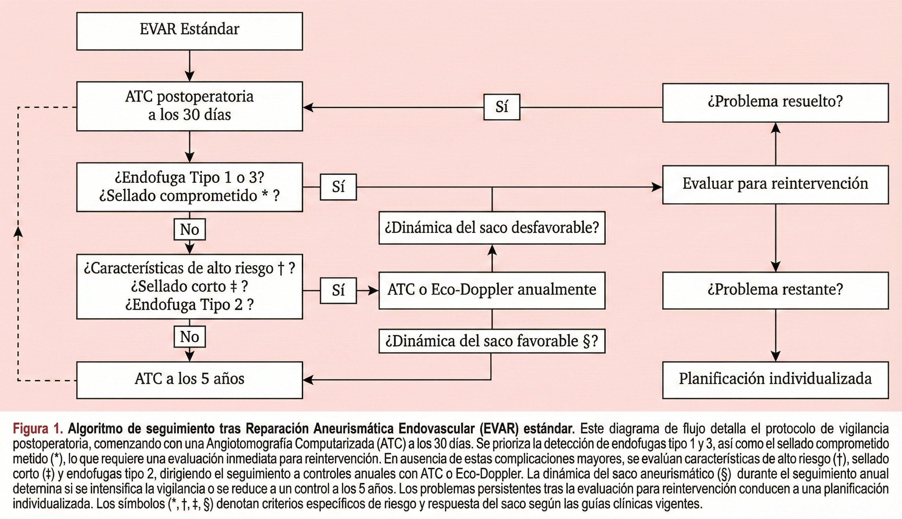
Figura 6. Algoritmo de seguimiento recomendado después de la reparación de aneurisma endovascular (EVAR) estándar, según Recomendaciones 112, 113 y 114. No aplicable a nuevos sistemas de dispositivos EVAR, tecnología no estándar o EVAR complejo. * Degradación de zonas de sellado con endofuga inminente, (y) Diámetro del cuello proximal > 30 mm, angulación del cuello proximal > 60 grados, diámetro ilíaco > 20 mm, dispositivo de investigación/nuevo, (z) Sello proximal y distal < 10 mm, (x) Contracción > 5 mm desde la línea base cuando se mide con la misma modalidad de imagen. DUS = ultrasonido dúplex; CTA = angiografía por tomografía computarizada.
La imagen después de EVAR solo es beneficiosa si existe una intención de tratar complicaciones electivamente. No es raro enfrentar el dilema ético de continuar o suspender la vigilancia en individuos muy ancianos, frágiles o dependientes. No hay evidencia clara para guiar tales decisiones. Sin embargo, el buen juicio clínico sugiere que no se debe continuar ofreciendo vigilancia a pacientes que no se consideran candidatos para intervenciones secundarias electivas. En el caso de alta de la vigilancia, a los pacientes todavía se les puede ofrecer tratamiento con resultados razonables en caso de síntomas agudos, siempre que esté justificado.
La adherencia al seguimiento es un aspecto crítico que debe enfatizarse en cada visita del paciente. Esto puede ser especialmente desafiante para pacientes estratificados como de bajo riesgo. Sin embargo, el seguimiento de por vida después de cualquier forma de reparación de AAA es obligatorio para mantener el éxito del tratamiento.
113 Rec. 113. Se recomienda una imagen posoperatoria temprana (dentro de los 30 días) mediante angiografía por tomografía computarizada a los pacientes que se han sometido a reparación endovascular de aneurisma de aorta abdominal, para evaluar la presencia de endofuga, superposición de componentes y longitud de la zona de sellado. (I B).
114 Rec. 114. Se debe considerar el seguimiento por imagen de baja frecuencia durante los primeros cinco años para pacientes que se han sometido a reparación endovascular de aneurisma de aorta abdominal y han sido estratificados como de bajo riesgo de complicaciones basado en la angiografía por tomografía computarizada posoperatoria temprana. (IIa C).
115 Rec. 115. Se recomienda a los pacientes que se han sometido a reparación endovascular de aneurisma de aorta abdominal un seguimiento por imagen a largo plazo (independientemente de la estratificación de riesgo inicial), para detectar complicaciones tardías e identificar fallos tardíos del dispositivo y progresión de la enfermedad. (I B).
7.4.3. Paso a paso diagnóstico para endofugas ocultas indeterminadas.
Cuando se enfrenta a una endofuga de origen poco claro, cuando es necesario descartar una endofuga Tipo 1 o 3 concomitante con una T2EL, o cuando hay expansión pero no hay endofuga visible, existe incertidumbre con respecto a los siguientes pasos diagnósticos. El primer paso suele ser realizar una CTA o DUS, dependiendo de la modalidad de seguimiento primaria. Si, a pesar de la información de CTA y DUS, persiste la duda, se puede considerar CEUS como un segundo paso, posiblemente incorporando 3D-CEUS para aumentar la sensibilidad. Si CEUS no está disponible, está contraindicado o no es concluyente, se puede utilizar CTA dinámica o MRA con un agente de pool sanguíneo como alternativa. En un estudio sobre conversión abierta, el 20% de los pacientes con crecimiento y sin endofuga presentaron inesperadamente infección. Como tal, cuando no se identifica otra causa de crecimiento, se puede considerar 18F-FDG/PET-CT o WBCS para descartar infección oculta o la presencia de un angiosarcoma. La punción directa del saco del aneurisma con cultivo estándar combinado con 16S rRNA/18S rRNA puede ayudar aún más a determinar una etiología microbiológica oculta.
La angiografía diagnóstica, preferiblemente con oclusión temporal con balón proximal y o distal, generalmente se reserva para casos donde la incertidumbre persiste a pesar de múltiples imágenes no invasivas. Cuando se realiza, los materiales deben estar disponibles para permitir un tratamiento definitivo siempre que sea posible. Dependiendo de la disponibilidad local y la logística, pueden ser apropiadas adaptaciones de este protocolo. Finalmente, el revestimiento de la endoprótesis o la conversión a OSR deben considerarse como rescate (ver sección 7.2.6.5. Recomendación 110). La Figura 7 muestra un algoritmo sugerido para el paso a paso diagnóstico para endofugas ocultas indeterminadas.
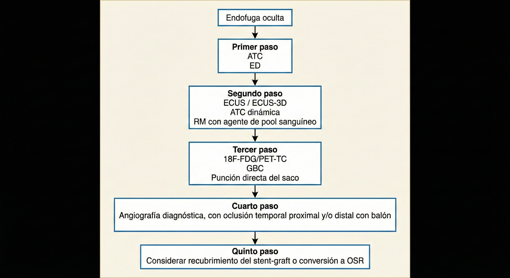
Figura 7. Paso a paso diagnóstico sugerido para endofugas ocultas indeterminadas después de la reparación endovascular de aneurisma de aorta abdominal. CTA = angiografía por tomografía computarizada; DUS = ultrasonido dúplex; CEUS = ultrasonido con contraste mejorado; MRI = imagen por resonancia magnética; 18F-FDG/PET-CT = tomografía por emisión de positrones con 2-desoxi-2-flúor-18-fluoro-D-glucosa; WBCS = gammagrafía de glóbulos blancos; OSR = reparación quirúrgica abierta. [Pasos en la figura: Primer paso: CTA / DUS -> Segundo paso: CEUS / 3D-CEUS / CTA dinámica -> Tercer paso: MRI con agente de pool sanguíneo -> Cuarto paso: 18F-FDG/PET-CT / WBCS / Punción directa del saco -> Quinto paso: Angiografía diagnóstica, con oclusión temporal con balón proximal y o distal -> Considerar revestimiento de endoprótesis o conversión a OSR]
8. GESTIÓN DE ANEURISMAS DE AORTA ABDOMINAL COMPLEJOS
8.1. Definición e indicaciones para la reparación de aneurismas de aorta abdominal complejos
Los aneurismas de aorta abdominal que involucran el segmento renovisceral (sin la participación de la aorta torácica) se denominan colectivamente AAA complejos e incluyen los siguientes subgrupos (Fig. 8).
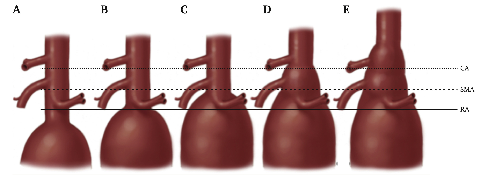
Figura 8. Clasificación anatómica de aneurismas de aorta abdominal (AAA) complejos basada en las extensiones proximales del aneurisma y su relación con las arterias renales (RAs), la arteria mesentérica superior (SMA) y la arteria celíaca (CA). (A) AAA infrarenal de cuello corto. (B) AAA yuxtarrenal. (C) AAA pararrenal. (D) AAA paravisceral. (E) Aneurisma de aorta toraco-abdominal Tipo IV. Los AAA pararrenales y paraviscerales se agrupan frecuentemente como AAA suprarrenal. • AAA infrarenal de cuello corto: con un cuello aórtico infrarenal de 4 - 10 mm de longitud. • AAA yuxtarrenal: con un cuello aórtico infrarenal < 4 mm de longitud, sin afectación directa de las arterias renales. • AAA pararrenal: con la afectación de al menos una de las arterias renales pero no de la SMA. • AAA paravisceral: con la afectación de las arterias renales y la SMA, pero no de la arteria celíaca. • AAA suprarrenal: los AAA pararrenales y paraviscerales se agrupan frecuentemente como AAA suprarrenal. • TAAA Tipo IV: con la afectación de las arterias renales, la SMA y la arteria celíaca. Por lo tanto, el TAAA IV involucra toda la aorta abdominal desde el nivel del diafragma hasta la bifurcación aórtica.,
Este capítulo incluirá todos los AAA complejos mencionados anteriormente. Para el manejo de AAA complejos pequeños, ver también el Capítulo 4. Las consideraciones especiales con respecto a pseudoaneurismas saculares y para-anastomóticos, así como disecciones, se abordan en el Capítulo 10, y para consejos sobre TAAA tipo I - III y tipo V, deben consultarse las guías de la ESVS sobre el Manejo de la enfermedad de la aorta torácica descendente. Importante, no existe un diámetro umbral claro para cuando un cuello de AAA o el segmento renovisceral pueden considerarse aneurismáticos, y por lo tanto clasificarse como un AAA complejo. Existe una transición gradual de un diámetro de cuello normal (< 25 mm), a un cuello ectásico (25 - 29 mm), y más allá a un cuello aneurismático (> 30 mm). Los dispositivos EVAR estándar de hoy en día están disponibles en tamaños que pueden acomodar tanto cuellos ectásicos como ligeramente aneurismáticos, hasta 32 mm (ver sección 5.3.2). También en OSR, un cuello grande generalmente se puede incorporar en un injerto quirúrgico. Esto crea un área gris sobre si un AAA debe manejarse como un AAA infrarenal, con reparación estándar, o como un AAA complejo, con métodos de reparación potencialmente más avanzados. En la práctica, el manejo de estos AAA limítrofes está determinado por factores como la aptitud, la edad y la preferencia del paciente. En un paciente comórbido o anciano, se puede elegir un procedimiento más básico con menos riesgos inmediatos y durabilidad más corta, mientras que en pacientes más jóvenes a menudo se justifica una solución más duradera mediante una reparación compleja.
Los AAA complejos se estiman que constituyen alrededor del 15 - 20% de todos los AAA. No hay datos disponibles sobre el riesgo de rotura e historia natural específicamente para AAA complejos. Debido a la falta de evidencia para este subgrupo específico y el hecho de que la reparación de AAA complejo conlleva un mayor riesgo, es apropiado un enfoque individualizado con respecto a la indicación de reparación. Esto se refleja en la recomendación débil (Clase IIb) de un umbral mínimo de 55 mm para cuando se puede considerar la reparación electiva de AAA complejo en hombres y 50 mm en mujeres, mientras que en la práctica un diámetro umbral mayor puede ser más apropiado en pacientes con comorbilidades aumentadas o anatomía más compleja. En la mayoría de las series de casos publicadas, los pacientes fueron tratados mediante reparación abierta o endovascular cuando el diámetro medio o mediano del aneurisma era de 60 mm. Vale la pena reiterar la recomendación negativa fuerte (Clase III) de no reparar AAA por debajo de 55 mm (Recomendación 21, sección 4.4), que comprensiblemente también se aplica a los AAA complejos.
Los pacientes con AAA complejos pequeños pueden mantenerse bajo vigilancia con US utilizando el protocolo para AAA infrarenal. Para una planificación preoperatoria precisa, se recomienda la CTA con cortes de un mm, permitiendo reconstrucciones 3D para una medición precisa de los vasos diana (ver sección 5.1).
116 Rec. 116. Se puede considerar la reparación electiva en pacientes con aneurismas de aorta abdominal complejos con un diámetro de ≥ 55 mm en hombres y ≥ 50 mm en mujeres, teniendo en cuenta la aptitud para la reparación, la anatomía del aneurisma y las preferencias del paciente. (IIb C).
8.2. Reparación electiva de aneurismas de aorta abdominal complejos
8.2.1. Reparación quirúrgica abierta.
Si bien los AAA de cuello corto presentan una zona de sellado proximal inadecuada para EVAR estándar, a menudo es posible pinzar la aorta por debajo de las arterias renales. Por lo tanto, la OSR es comparable con una OSR estándar de un AAA infrarenal (ver Capítulo 5). En AAA yuxtarrenales, puede requerirse el pinzamiento aórtico por encima de una o ambas arterias renales, con pinzamiento selectivo de las arterias renales por debajo de la pinza aórtica. La perfusión renal selectiva se puede realizar a través de un catéter de oclusión o perfusión insertado desde el interior de la aorta. La anastomosis proximal generalmente se realiza justo debajo del borde inferior de la arteria renal inferior.
En AAA suprarrenales, se requiere pinzamiento aórtico suprarrenal o supravisceral. Los vasos renales o viscerales se perfunden selectivamente y se vuelven a unir directamente al injerto aórtico o a través de bypasses selectivos. La OSR para un TAAA Tipo IV puede realizarse a través de una toracofrenolaparotomía izquierda en el VII-VIII espacio intercostal con incisión frénica circunferencial parcial, o a través de una laparotomía subcostal con rotación visceral medial. Los vasos renales y viscerales se perfunden selectivamente y se vuelven a unir como una sola isla de pared aórtica en una anastomosis aórtica biselada, o como una sola isla de pared aórtica incluyendo los vasos viscerales y renales (parche de Carrel) a una abertura ovalada en el injerto, o a través de reconexiones selectivas de vasos (injertos ramificados).
El nivel de pinzamiento aórtico afecta el resultado después de OSR. En un estudio del NSQIP de EE. UU., incluyendo 615 OSR para AAA complejos, la ubicación de la pinza por encima de una o ambas arterias renales no se asoció con diferencias en la mortalidad (3.5% vs. 2.1%) o disfunción renal (6.9% vs. 4.9%). En contraste, el pinzamiento supracelíaco comparado con el pinzamiento por encima de una o ambas arterias renales se asoció con una tasa de mortalidad más alta (8.0% vs. 2.8%) y una tasa aumentada de disfunción renal (12% vs. 6.0%) y reoperaciones no planificadas (24% vs. 10%). Por lo tanto, el pinzamiento supracelíaco debe evitarse si el pinzamiento por encima de una o ambas arterias renales es técnicamente posible. No hay datos para preferir un abordaje quirúrgico o técnica de reconstrucción sobre otra, pero esto debe ser determinado por factores individuales del paciente, como la extensión de la enfermedad, y las preferencias locales.
Varias revisiones sistemáticas han proporcionado un punto de referencia para la OSR de AAA complejo. En una revisión sistemática de 21 series de casos que comprenden 1 575 pacientes, la mortalidad a 30 días o intrahospitalaria después de la reparación abierta de AAA yuxtarrenal fue del 4.1%. El diámetro medio del AAA en la cirugía fue de 61 mm y la edad media fue de 71 años. El catorce por ciento de los pacientes tuvieron disfunción renal posoperatoria mientras que la diálisis permanente fue necesaria en el 3% de los pacientes. La interpretación de los datos se ve obstaculizada debido a la amplia gama de definiciones para la disfunción renal aplicadas en los diversos estudios incluidos en la revisión. En una serie de pacientes incluidos en el registro del Grupo de Estudio Vascular de Nueva Inglaterra, la mortalidad perioperatoria fue del 3.6% en 443 pacientes después de OSR electiva para un AAA yuxtarrenal o AAA pararrenal, con un 20% de complicaciones renales y un 1% de necesidad de diálisis permanente.
8.2.2. Reparación aórtica endovascular fenestrada y ramificada.
La reparación endovascular con endoprótesis fenestradas y o ramificadas (f/bEVAR) se ha convertido en el tratamiento de elección de AAA complejos en la mayoría de los centros de alto volumen. Los dispositivos bEVAR "off the shelf" (listos para usar) pueden ser una opción para el tratamiento de AAA complejos sintomáticos o muy grandes, cuando las soluciones a medida no están disponibles. Los PMEGs y la fenestración láser in situ deben reservarse para pacientes urgentes, para quienes el tiempo de espera para fabricar un dispositivo a medida (CMD) es demasiado largo o cuando no está disponible un dispositivo "off the shelf" adecuado.
Las contraindicaciones específicas del dispositivo para f/bEVAR incluyen infección, trastornos del tejido conectivo, aortas "shaggy", angulaciones aórticas extremas, vasos viscerales muy enfermos o estenóticos o divisiones tempranas de vasos viscerales que no permiten la entrega de un stent puente. La técnica implica el despliegue de un cuerpo principal de injerto aórtico con fenestraciones y o ramas. Las fenestraciones son preferibles en casos donde la pared aórtica estará cerca del endoinjerto, p. ej., en AAA de cuello corto y AAA yuxta y pararrenales. Las ramas son preferibles cuando la pared aórtica estará más lejos del endoinjerto, lo que ocurre típicamente en algunos TAAA tipo IV. A veces se incluyen vieiras (scallops) para aumentar el sellado total de la reparación sin aumentar su complejidad (Fig. 9 – f/EVAR, bEVAR, f/bEVAR).
Un metanálisis reciente, incluyendo 1 804 reparaciones endovasculares de AAA complejo de 14 estudios, informó un éxito técnico agrupado del 96.0%, frecuencia de endofuga Tipo 1 y 3 del 7.6% y 2.5%, respectivamente, lesión renal temporal y permanente 13.19% y 0.71%, y SCI 2.0%. La mortalidad relacionada con aneurisma general fue del 0.6% y la estimación agrupada para la tasa de reintervención fue del 15.7%.
Otro metanálisis comparando fEVAR y OSR de AAA yuxtarrenal, incluyendo 2 974 pacientes de 27 estudios, no encontró diferencias significativas en la mortalidad posoperatoria (3.3% vs. 4.2%), mientras que las complicaciones posoperatorias mayores fueron menos comunes (23.1% vs. 43.5%) y las reintervenciones más frecuentes (11.1% vs. 2.0%) después de fEVAR. La oclusión del vaso diana se informó en 2 – 4% después de fEVAR.
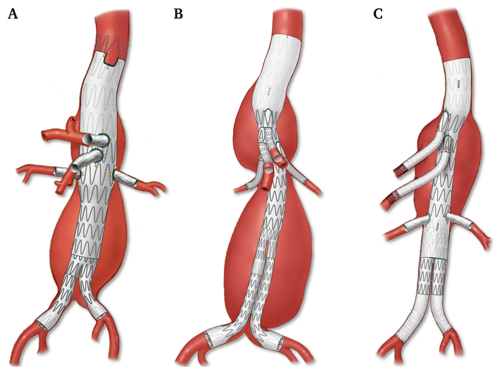
Figura 9. (A) Reparación aórtica endovascular fenestrada (fEVAR), (B) EVAR ramificada (bEVAR), y (C) configuraciones f/bEVAR.
Comparando fEVAR estándar (colocación de stent en arterias renales con o sin una vieira para SMA) y fEVAR compleja (colocación de stent en arterias renales así como SMA y o tronco celíaco) no se pudo demostrar ninguna diferencia mayor significativa en la tasa de éxito técnico, mortalidad o durabilidad. Hay, sin embargo, informes también de que fEVAR más compleja aumenta las tasas de complicaciones (4% vs. 18%) en comparación con fEVAR estándar. No obstante, un uso liberal de fEVAR compleja está justificado siempre que sea necesario para obtener una zona de sellado proximal adecuada para una reparación duradera. Se ha sugerido un mínimo de 20 mm de sellado en una aorta sana y de paredes paralelas, mientras que una zona de sellado excesivamente larga resulta en una cobertura más extensa de la aorta con el riesgo aumentado de SCI. Los dispositivos ramificados ya sea con ramas internas o externas implican una cobertura aórtica más extendida en comparación con los dispositivos fenestrados y, por lo tanto, deben reservarse para TAAA tipo IV.
117 Rec. 117. Se debe considerar limitar la cobertura aórtica para reducir el riesgo de isquemia de la médula espinal en pacientes sometidos a reparación endovascular de aneurismas de aorta abdominal complejos, sin comprometer la zona de sellado proximal. (IIa C).
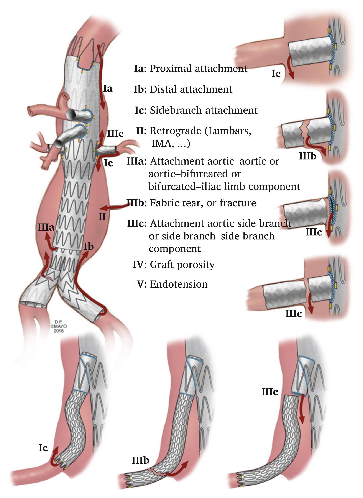
Figura 10. Endofugas asociadas con stents puente fallidos en los vasos diana de la reparación aórtica endovascular fenestrada y ramificada. IMA = arteria mesentérica inferior.
118 Rec. 118. Se debe considerar el uso de fusión de imagen intraoperatoria durante la reparación aórtica endovascular de aneurismas de aorta abdominal complejos, para reducir la exposición a la radiación, el volumen de contraste y el tiempo operatorio. (IIa B).
119 Rec. 119. Se puede considerar el uso de imagen de tomografía computarizada de haz cónico en la mesa para el control de finalización durante la reparación endovascular de aneurismas de aorta abdominal complejos. (IIb C).
Los datos disponibles sugieren que f/bEVAR para AAA complejo tiene durabilidad y tasas de complicaciones aceptables pero se necesitan reintervenciones entre el 24% y el 39%. Los resultados a cinco años del Ensayo Zenith de EE. UU., incluyendo 67 pacientes tratados con fEVAR para AAA yuxtarrenal, informaron una tasa de mortalidad a 30 días del 1.5% con una libertad de mortalidad relacionada con aneurisma a cinco años del 97% y libertad de intervención secundaria del 64%. No hubo roturas de aneurisma o conversiones a cirugía abierta. En un estudio multicéntrico reciente del Consorcio de Investigación Aórtica Fenestrada y Ramificada de EE. UU., incluyendo 681 pacientes que se habían sometido a f/bEVAR para AAA complejo, las intervenciones secundarias se indicaron con frecuencia (18% al año y 41% a los cinco años de seguimiento), realizadas en su mayoría percutáneamente (84%), y consistiendo en procedimientos menores (70%) y de baja magnitud (según los efectos fisiológicos) (81%).
Estos datos destacan la importancia de una vigilancia estrecha y de por vida y sugieren que la intervención secundaria debe anticiparse y si se aborda adecuadamente no afectará negativamente la supervivencia. Los stents puente cubiertos conectan la f/bEVAR con las arterias renales y o viscerales diana. Las endofugas asociadas específicamente con stents puente fallidos incluyen endofuga Tipo 1c (fuga a través de la unión distal del stent puente en el vaso diana), endofuga Tipo 3c (fuga a través de la unión proximal del stent puente en el cuerpo principal de f/bEVAR, o entre dos componentes de stent puente), y Tipo 3d (fuga a través de un desgarro, perforación o fractura del injerto en el injerto de stent puente) (Fig. 10). La inestabilidad del vaso diana se define por un compuesto de cualquier estenosis del stent, separación, o endofuga Tipo 1c o Tipo 3c que requiera reintervención y oclusión del stent, rotura de aneurisma, o muerte debido a complicación(es) de la arteria diana.
Actualmente, faltan stents puente dedicados. Una revisión sistemática encontró que el vaso diana renal es más propenso a complicaciones que las arterias viscerales en f/bEVAR (6% vs. 2%) con una tasa de reintervención similar entre stents cubiertos expandibles por balón estándar y stents cubiertos autoexpandibles. Para fenestraciones, los stents cubiertos expandibles por balón se han utilizado ampliamente debido a sus altas fuerzas radiales. Datos actuales de estudios retrospectivos sugieren que la inestabilidad del vaso diana y las tasas de reintervención son favorables para stents cubiertos autoexpandibles como injertos de stent puente en ramas. Una gama de diferentes stents cubiertos expandibles por balón y autoexpandibles están disponibles en el mercado, con diferentes propiedades y configuraciones. Debido a la falta de datos de rendimiento comparativo no es posible recomendar un stent cubierto sobre otro, pero la selección debe decidirse caso por caso dependiendo de la anatomía y la experiencia local. Tras informes de marcas de stent puente fallidos, la disponibilidad de datos de rendimiento a largo plazo documentados en el entorno de f/bEVAR es otro aspecto a considerar. El éxito técnico de f/bEVAR depende de una imagen intraoperatoria precisa. Tradicionalmente, la DSA se ha utilizado para asegurar el despliegue correcto del injerto de stent, evaluar la permeabilidad de las ramas laterales y detectar la presencia de endofugas.
La fusión de imagen de imágenes CTA con fluoroscopia se puede lograr con registro automático de la CTA preoperatoria con una TC de haz cónico sin contraste intraoperatoria o con una técnica bidimensional-3D después de adquirir dos imágenes fluoroscópicas con al menos 30° de separación. Se ha demostrado que la imagen de fusión proporciona una guía 3D en tiempo real adicional con radiación, tiempo de procedimiento y dosis de contraste yodado reducidos durante reparaciones endovasculares complejas. En un metanálisis reciente, el uso de fusión de imagen se asoció con una reducción significativa del volumen de contraste (-79 mL), tiempo de fluoroscopia (-14 minutos) y tiempo de procedimiento (-52 minutos) en EVAR compleja. La fusión de imagen debe por lo tanto considerarse durante procedimientos EVAR complejos, lo cual también está de acuerdo con las guías de protección radiológica de la ESVS 2023.
El uso de TC de haz cónico en la mesa de finalización se ha defendido para asegurar la calidad de procedimientos endovasculares complejos. El brazo en C, que incluye tanto la fuente de rayos X como los detectores, gira alrededor del paciente durante la adquisición de imágenes, creando así un conjunto 3D de imágenes similar a la TC. El uso de TC de haz cónico combinado con un angiograma de finalización ha demostrado ser altamente preciso en la detección de complicaciones intraoperatoriamente post-EVAR. En un estudio prospectivo de un solo centro, incluyendo 154 pacientes sometidos a EVAR complejo, la TC de haz cónico detectó hallazgos positivos en 43 pacientes (28%); compresión o acodamiento del stent en 17%, endofuga Tipo I o Tipo III en 10% y disección arterial o trombo en 5%. De estos, 27 pacientes (18%) tuvieron hallazgos positivos que motivaron una intervención intraoperatoria (17%) o retardada (1%). La DSA sola no habría detectado hallazgos positivos en 34 de 43 pacientes (79%), incluyendo 21 pacientes (49%) que necesitaron intervenciones secundarias. La técnica sin embargo expone potencialmente al paciente a una dosis efectiva de radiación más alta que una DSA de finalización de vista única, a menos que pueda reemplazar a la DSA y la CTA postoperatoria posterior.
Además, la viabilidad de la TC de haz cónico no se ha evaluado para todos los diferentes sistemas de imagen disponibles. Por lo tanto, la TC de haz cónico puede ser un complemento valioso para la DSA estándar para el control de finalización después de f/bEVAR, sin embargo, si puede funcionar como una técnica de control de calidad independiente en este entorno sigue siendo demasiado pronto para decirlo.
Datos contemporáneos sugieren que el uso de ultrasonido intravascular (IVUS) reduce el tiempo de fluoroscopia, la radiación y la dosis de contraste sin comprometer el éxito técnico de la reparación endovascular a corto plazo. El uso de IVUS para asegurar la calidad de f/bEVAR merece una mayor investigación con referencia tanto a la eficacia como a la relación costo efectividad.
8.2.3. Reparación quirúrgica abierta vs. reparación aórtica endovascular fenestrada y ramificada.
No hay comparaciones directas entre los resultados de OSR y f/bEVAR, y los datos disponibles están limitados por sesgo de selección y publicación. Además, la falta de datos de seguimiento a largo plazo independientes hace difícil evaluar la durabilidad de ambas técnicas.
En un metanálisis de fEVAR vs. OSR para AAA complejo, datos de más de 7 000 pacientes de 11 estudios publicados entre 2014 y 2019 se utilizaron en un análisis emparejado por puntuación de propensión. Las probabilidades de muerte perioperatoria después de f/bEVAR fueron más bajas, aunque no significativamente, que después de OSR (OR 0.56, IC 95% 0.28 – 1.12), mientras que el riesgo de muerte general durante el seguimiento fue mayor tras f/bEVAR, pero nuevamente, sin alcanzar significación estadística (HR 1.25, IC 95% 0.93 – 1.67). El riesgo de reintervención fue significativamente mayor después de la terapia endovascular (HR 2.11, IC 95% 1.39 – 3.18). La certeza para el cuerpo de evidencia para las tasas de mortalidad perioperatoria y general durante el seguimiento se juzgó como muy baja y moderada, respectivamente, y para la reintervención se juzgó como alta.
En un metanálisis de red reciente, incluyendo 7 854 pacientes de 23 estudios observacionales que se sometieron a reparación para AAA de cuello corto y AAA yuxtarrenal, la mortalidad perioperatoria fue significativamente menor después de fEVAR (RR 0.62) en comparación con OSR. Esta diferencia no se vio en el seguimiento a medio plazo (30 meses). Comparado con OSR, fEVAR se asoció con una tasa menor de MI perioperatorio (RR 0.37) pero una tasa mayor de reintervención a medio plazo (HR 1.65). Todos los estudios tenían un riesgo de sesgo moderado o alto y la confianza en los hallazgos de la red (GRADE) fue generalmente baja, destacando la necesidad de datos de mejor calidad.
Otro metanálisis de red evaluando OSR vs. f/bEVAR vs. chEVAR en AAA yuxta y pararrenal, incluyó un total de 4 369 pacientes de 16 estudios observacionales, de los cuales 10 se consideraron con riesgo grave o crítico de sesgo, y seis con riesgo moderado de sesgo. La calidad de evidencia GRADE varió de calidad moderada a muy baja. Se observó una tendencia no significativa de una tasa de mortalidad a medio plazo (rango 6 – 60 meses) más alta después de f/bEVAR que OSR. Una tendencia no significativa similar hacia tasas más altas de reintervención relacionada con la aorta y oclusión o estenosis de rama lateral se observó tanto para f/bEVAR como para chEVAR en comparación con OSR. Al comparar técnicas endovasculares, no se encontraron preferencias significativas ni para FEVAR ni para chEVAR.
Más recientemente, se presentaron los resultados del UK COMPASS, un gran estudio de cohorte utilizando datos de registro de toda Inglaterra, incluyendo 999 pacientes sometidos a reparación electiva para AAA yuxtarrenal (definido como longitud del cuello < 10 mm).
El análisis de subgrupos se estratificó por longitud del cuello (0 - 4 mm n = 568 y 5 - 9 mm n = 275) y puntuación de Riesgo de Aneurisma Británica (riesgo estándar vs. riesgo alto). Los pacientes tratados con EVAR estándar +/- adjuntos no se discuten aquí. No es sorprendente que la mortalidad perioperatoria fuera más alta para pacientes de alto riesgo, 10.9% después de OSR con longitud de cuello < 5 mm (vs. 1.7% después de fEVAR) y 11.1% después de OSR con longitud de cuello 5 – 9 mm (vs. ninguna muerte después de fEVAR). Para pacientes de riesgo estándar, la mortalidad de OSR fue 7.4% para aquellos con longitud de cuello < 5 mm y 1.9% para longitud de cuello 5 – 9 mm vs. 2.3% y 0% después de fEVAR. En un modelo de regresión logística, la mortalidad perioperatoria fue significativamente menor después de fEVAR que OSR (OR 0.25, p < .001). Después de una mediana de tres años de seguimiento la mortalidad general fue significativamente mayor después de fEVAR (vs. OSR) en pacientes de riesgo estándar con longitud de cuello 5 – 9 mm (21.2% vs. 7.5%), mientras que la supervivencia a largo plazo numéricamente peor en pacientes de alto riesgo o en pacientes con longitud de cuello < 5 mm tratados por fEVAR (vs. OSR) no alcanzó significación estadística. No hubo diferencia en muertes tardías relacionadas con aneurisma entre las técnicas, independientemente de la puntuación de riesgo o longitud del cuello (HR 1.0, p = .94). La tasa de reintervención a los tres años fue significativamente mayor después de fEVAR (27.7%) que OSR (17.8%). Cabe destacar que estos son datos preliminares (no publicados) presentados en la Reunión Científica Anual de la Sociedad Vascular de Gran Bretaña e Irlanda en noviembre de 2022, y actualizados con resultados finales en mayo de 2023 después de la auditoría de datos de pacientes individuales; no se pueden sacar conclusiones definitivas hasta que el estudio haya sido revisado por pares. No obstante, en ausencia de RCTs este gran estudio nacional contemporáneo es un estudio histórico de valor para discutir en este contexto. Si la supervivencia a largo plazo pobre observada después de fEVAR se debe a que el emparejamiento por puntuación de propensión no es capaz de compensar completamente los sesgos en la práctica clínica como ofrecer OSR a pacientes más sanos que también tienen mejor longevidad, y estrategias endovasculares a pacientes menos sanos que no tienen una esperanza de vida similar, necesita aclaración.
Un estudio reciente evaluando el cambio en la QoL relacionada con la salud encontró un declive significativo pero transitorio en las puntuaciones del componente físico después de f/bEVAR para AAA pararrenal, similar a los pacientes tratados con EVAR estándar para AAA. Los pacientes tratados para TAAA (50% tipo IV TAAA) tenían puntuaciones de QoL más bajas al inicio y no mostraron la misma recuperación después del declive postoperatorio inicial. No hay datos sobre QoL después de OSR para AAA complejo.
En un análisis de costo efectividad publicado hasta la fecha sobre datos del registro WINDOWS, los costos fueron V38 212 para f/bEVAR en comparación con V16 497 para OSR. Después de dos años de seguimiento del mismo estudio no hubo diferencias en la tasa de mortalidad entre los grupos endovascular y OSR (11.2% vs. 11.4%). Los costos hospitalarios totales fueron V41 786 para f/bEVAR vs. V21 142 para OSR. En un análisis de costo efectividad encargado por el Servicio Nacional de Salud en el Reino Unido no se pudo establecer evidencia de la superioridad de OSR o reparación endovascular para AAA yuxtarrenal o TAAA. Como era difícil estimar costos debido a la tecnología endovascular en rápida evolución, no se consideró posible un análisis de costo efectividad.
Propusieron un RCT para estimar el efecto de f/bEVAR comparado con OSR o manejo conservador. Es, sin embargo, cada vez más difícil extrapolar conclusiones sobre análisis de costos a través de múltiples sistemas de salud en diferentes países, y se deben tener en cuenta una variedad de consideraciones socioeconómicas de costo y valor específicas del sistema de salud nacional.
En conclusión, debido a la falta de evidencia de alta calidad y la complejidad y variedad de los AAA complejos, la toma de decisiones es compleja y debe adaptarse a cada paciente individual y economías de salud locales. La estratificación de casos por anatomía y riesgo quirúrgico puede ser útil en pacientes con un AAA complejo. La OSR con una anastomosis debajo de las arterias renales con un tiempo de pinzamiento renal corto puede ser una opción preferible y más duradera en pacientes aptos con un cuello aórtico corto. Con anatomía más compleja o alto riesgo quirúrgico debido a comorbilidades, una solución endovascular puede ser preferible.
Dada la rareza y complejidad del tratamiento de AAA complejo, la centralización a centros especializados de alto volumen que puedan ofrecer tanto reparación abierta como endovascular parece justificada (ver Capítulo 2).
120 Rec. 120. Se debe considerar la reparación abierta o endovascular basada en la aptitud, la anatomía y la preferencia del paciente para pacientes con un aneurisma de aorta abdominal complejo y riesgo quirúrgico estándar. (IIa C).
121 Rec. 121. Se debe considerar la reparación endovascular con tecnologías fenestradas y ramificadas como terapia de primera línea para pacientes con un aneurisma de aorta abdominal complejo y alto riesgo quirúrgico. (IIa C).
8.2.4. Injertos paralelos.
Los injertos paralelos se refieren a una técnica alternativa para extender el cuello aórtico (infrarenal) mediante la colocación de injertos de stent en una configuración chEVAR o snorkel o periscopio paralela al injerto aórtico principal. Esta técnica tiene la ventaja de que no utiliza CMDs que pueden tardar tiempo en fabricarse, mientras que una desventaja podría ser la formación de canalones (gutters) y potenciales endofugas Tipo 1a posteriores, y oclusión del injerto. La interpretación de la investigación publicada se ve obstaculizada por el alto riesgo de sesgo en la selección de pacientes y mezcla de casos, definición y determinación de permeabilidad, integridad del seguimiento, y escasos datos de resultados a largo plazo.
En un informe del registro PERICLES (performance of the chimney technique for the treatment of complex aortic pathologies registry), en el cual el 95% de los 517 pacientes tenían un AAA yuxtarrenal, la tasa de mortalidad a 30 días reportada para casos electivos fue del 3.7% y el 2.9% tuvo una endofuga persistente. La permeabilidad del injerto de chimenea en pacientes que tuvieron imágenes después de un seguimiento medio de 17 meses fue del 94% y se estimó en 89% y 87% después de dos y tres años, respectivamente. En un análisis de seguimiento posterior de 244 pacientes, la permeabilidad primaria para chimeneas fue 94%, 93%, 92%, y 90% después de 2.5, tres, cuatro, y cinco años de seguimiento, respectivamente. Otros estudios han mostrado resultados menos favorables, con tasas preocupantes de endofugas Tipo 1a relacionadas con canalones y oclusión del vaso diana. En una revisión sistemática de la literatura de reparación de AAA yuxtarrenal la incidencia de endofuga postoperatoria Tipo 1a fue del 7.6% después de chEVAR en comparación con 3.7% después de fEVAR.
Los mejores resultados con injertos paralelos se han obtenido en pacientes adecuadamente seleccionados con una zona de aterrizaje proximal de >= 15 mm, sobredimensionamiento adecuado del injerto de stent del 30%, y cuando el uso de chimeneas se restringió a un máximo de dos. Se ha descrito que el HR de oclusión del injerto de chimenea aumenta en 1.8 por cada injerto de chimenea adicional. Se informa que un dispositivo EVAR de poliéster nitinol con stents de chimenea cubiertos expandibles por balón es la combinación preferida para chEVAR. Debido a su efectividad incierta, la técnica de injerto paralelo no se recomienda en el entorno electivo, pero debe reservarse para entornos urgentes o de rescate, y no debe incluir más de dos chimeneas.
122 Rec. 122. La reparación endovascular para un aneurisma de aorta abdominal complejo utilizando técnicas de injerto paralelo solo debe considerarse como una opción en el entorno de emergencia, o como rescate, e idealmente restringida a ≤ 2 chimeneas. (IIa C).
8.2.5. Técnicas endovasculares novedosas y adjuntas.
Tras el colapso del concepto EVAS y la posterior retirada del dispositivo, su uso en la reparación de AAA complejo ya no es relevante. Otras herramientas terapéuticas novedosas que podrían expandir potencialmente las opciones endovasculares en la reparación de AAA complejo incluyen endograpas (también llamadas endoanclajes o endosuturas) y fenestración láser in situ.
Los Heli-FX EndoAnchors (Medtronic Vascular, Minneapolis, Minnesota, EE. UU.) están destinados a proporcionar fijación y sellado entre el injerto aórtico endovascular y la arteria nativa, y se han utilizado junto con dispositivos EVAR estándar para tratar AAA de cuello corto. Entre 100 pacientes con un cuello hostil (longitud < 10 mm, diámetro > 28 mm, angulación > 60°, configuración cónica, o trombo mural significativo o calcio) la libertad de endofuga Tipo 1a fue del 95% en pacientes tratados primariamente y 77% en pacientes tratados secundariamente después de una media de 13 meses de seguimiento. En otra cohorte de 70 pacientes con una longitud de cuello infrarenal 4 – 10 mm, tratados con el endoinjerto Endurant II o IIs y Heli-FX EndoAnchors, cuatro tuvieron una endofuga Tipo 1a transitoria y ninguno experimentó migración del stent del cuerpo principal, crecimiento del saco del aneurisma, o rotura del aneurisma o requerimiento de conversión a OSR a través de 12 meses de seguimiento. En un metanálisis, incluyendo 968 pacientes de ocho estudios con y sin cuello hostil, el 6% desarrolló una endofuga Tipo 1a persistente, el 0.3% requirió un manguito aórtico proximal adicional debido a la migración del injerto principal, y se encontró expansión del saco del aneurisma en 1.93% después de una media de seis meses de seguimiento.
La literatura sobre endograpadoras se limita principalmente a informes patrocinados por la compañía y faltan datos a largo plazo sobre su efectividad (y seguridad). Hasta que haya más datos sobre durabilidad disponibles, el uso electivo de EVAR estándar con endograpas para tratar AAA de cuello corto debe limitarse a ensayos clínicos (p. ej., SOCRATES) aprobados por comités de ética de investigación después de obtener el consentimiento informado del paciente.
La fenestración in situ generada por láser o asistida por aguja de injertos de stent estándar es una técnica fuera de etiqueta dirigida principalmente al tratamiento de emergencia. La tecnología permanece en su infancia, con solo datos clínicos limitados de informes técnicos y de casos. Estudios retrospectivos de un solo centro informan un tiempo de isquemia del vaso diana aceptable, permeabilidad del injerto de stent puente y un resultado favorable en el entorno agudo. Un estudio reciente de un solo centro, incluyendo 44 pacientes tratados por patologías aórticas que involucran el segmento visceral, con 108 fenestraciones láser in situ, informó una baja tasa de mortalidad a 30 días del 4.5% y un resultado favorable a medio plazo; con una supervivencia estimada de Kaplan-Meier a dos años del 73%, supervivencia libre de reintervención relacionada con la aorta del 70%, y supervivencia libre de reintervención relacionada con el stent del 91%.
Los datos a largo plazo siguen siendo escasos y la técnica actualmente no se recomienda en el entorno electivo fuera de estudios de investigación. Los injertos de stent que se desvían del concepto tradicional para un sellado adecuado (> 15 mm) en el cuello proximal con un injerto de stent autoexpandible como el injerto de stent Ovation Alto (Endologix Inc. Irvine, CA, EE. UU.) que utiliza un sello basado en polímero, afirma en su IFU elegibilidad para zonas de aterrizaje proximales de > 7 mm, por lo tanto en la práctica AAA yuxtarrenal. La efectividad y seguridad a largo plazo del dispositivo Ovation Alto en cuellos cortos (< 15 mm), sin embargo, aún no se ha probado y por lo tanto, el dispositivo no se recomienda para su uso fuera de ensayos clínicos éticamente aprobados con el consentimiento informado de los pacientes.
123 Rec. 123. No se recomienda el uso de nuevas técnicas y conceptos en la práctica clínica rutinaria para pacientes con un aneurisma de aorta abdominal complejo y debe limitarse a estudios aprobados por comités de ética de investigación, hasta que se evalúen adecuadamente. (III C).
8.2.6. Reparación híbrida.
La combinación de redireccionamiento de arterias viscerales y renales (bypassing) asociada con la exclusión endovascular de un aneurisma aórtico con un injerto de stent estándar es otra opción de tratamiento conocida como reparación híbrida. Los datos con respecto a la reparación híbrida de AAA complejos son escasos en la literatura reciente, sin embargo, algunas consideraciones podrían extrapolarse de la experiencia en reparaciones de TAAA con este enfoque. Esta técnica desafió inicialmente a la OSR estándar como una opción de tratamiento menos invasiva. Sin embargo, la presunta naturaleza menos invasiva de la reparación híbrida de TAAA no parece resultar en tasas de complicaciones más bajas en el seguimiento temprano y a medio plazo. En general, el enfoque híbrido se ve obstaculizado tanto por las desventajas tempranas de la cirugía abierta, como por las tardías del enfoque endovascular, con la evitación del pinzamiento aórtico como única ventaja.
Con el papel establecido de la OSR convencional, y el desarrollo de enfoques endovasculares como injertos de stent fenestrados y ramificados, el papel real de la reparación híbrida en el tratamiento de AAA complejos es limitado. Sin embargo, el método de bypass quirúrgico desde la arteria ilíaca a una o más arterias viscerales se puede utilizar como un rescate por fallo de stents puente endovasculares durante o después de f/bEVAR.
124 Rec. 124. No se recomienda la reparación híbrida, mediante reencaminamiento (bypass) de arterias viscerales y renales combinado con exclusión endovascular del aneurisma, como tratamiento de primera línea para aneurismas de aorta abdominal complejos. (III C).
125 Rec. 125. Se debe considerar la perfusión renal fría para pacientes sometidos a reparación abierta de un aneurisma de aorta abdominal complejo con un tiempo de pinzamiento suprarrenal > 25 minutos. (IIa C).
8.3. Preservación de la función renal durante la reparación de aneurisma de aorta abdominal complejo
Dado que el tratamiento de AAA complejo puede involucrar las arterias renales y, como los pacientes a menudo tienen disfunción renal, las medidas para la preservación de la función renal son de gran importancia. Se han reportado varios métodos adjuntos, como reducir el tiempo de pinzamiento suprarrenal y la perfusión renal durante la cirugía abierta, y diferentes estrategias farmacológicas. Si bien los datos con respecto a protocolos específicos para AAA complejos son escasos, también se puede extrapolar información relevante de la literatura sobre protección renal durante la cirugía abierta de TAAA.
Se informa que un tiempo de pinzamiento suprarrenal > 25 minutos está asociado con daño isquémico al riñón. Por lo tanto, se aboga por una anastomosis proximal expeditiva para restaurar la perfusión renal directa tan pronto como sea posible durante la OSR para AAA complejo, que es seguramente el método más efectivo para reducir la lesión renal aguda.
En pacientes sometidos a OSR de un AAA complejo, la perfusión renal selectiva durante el tiempo de pinzamiento suprarrenal extendido (> 25 minutos) puede prevenir la necrosis celular y la lesión por isquemia reperfusión, y se puede obtener con catéteres de perfusión de oclusión de Pruitt de tamaño adecuado (5 – 9 Fr). Se han sugerido varias estrategias para la perfusión selectiva de la arteria renal. En un RCT del campo de TAAA, los pacientes que tuvieron perfusión renal con Ringer lactato a 4°C desarrollaron disfunción renal significativamente menos a menudo que aquellos que tuvieron perfusión continua con sangre (21% vs. 63%). En otro RCT el 21% de los pacientes que tuvieron reparación abierta de TAAA que tuvieron perfusión renal con Ringer lactato a 4°C tuvieron disfunción renal en comparación con el 31% de aquellos con perfusión con sangre fría a 4°C. Un metanálisis reciente mostró una reducción significativa de la lesión renal aguda posoperatoria con el uso de (cualquier) perfusión renal fría intraoperatoria durante la reparación abierta de aneurisma aórtico complejo (OR 0.46). La perfusión renal con sangre caliente requiere un entorno complejo con circuitos de sangre extracorpóreos y ofrece solo protección renal limitada.
En un RCT, incluyendo 90 pacientes sometidos a reparación abierta electiva de TAAA, comparando la perfusión renal con solución cristaloide a 4°C enriquecida con histidina-triptófano-cetoglutarato (Custodiol, Dr Franz-Kohler Chaemie GmbH, Bensheim, Alemania) con solución de Ringer lactato estándar a 4°C, la incidencia de lesión renal aguda posoperatoria fue significativamente menor en el grupo Custodiol (48.9% vs. 75.6%). Informes de un solo centro han confirmado los beneficios de la hipotermia renal durante el período isquémico de OSR de AAA yuxtarrenal tanto electiva como rota.
Solo hay datos limitados de estudios con poca potencia sobre la protección farmacológica de la función renal. Un RCT comparando manitol vs. infusión salina antes del pinzamiento aórtico en 28 pacientes con un AAA infrarenal no encontró un efecto clínicamente relevante del manitol sobre la preservación de la función renal. En otro RCT que comprendía 60 pacientes que tenían reparación abierta de AAA infrarenal, no se encontró diferencia en la insuficiencia renal en pacientes asignados a fenoldopam vs. dopamina y nitroprusiato de sodio.
En conclusión, no hay evidencia convincente para la protección farmacológica de la función renal durante la OSR de AAA complejos, mientras que la perfusión renal fría puede ser beneficiosa. Al igual que para la reparación de AAA infrarenal, las arterias accesorias (polares) pequeñas (< 4 mm) que irrigan solo una pequeña parte del riñón pueden ligarse, mientras que las arterias más grandes se tratan de la misma manera que las arterias renales con perfusión selectiva y reconexión. Y, si la vena renal izquierda se divide para la exposición, se puede considerar reconstruir la vena, especialmente si se dividieron colaterales y para casos de isquemia renal concomitante (ver Recomendación 51).
126 Rec. 126. Se debe considerar una estrategia para preservar la función renal mediante la reducción de la dosis de medios de contraste yodados, la retirada de fármacos nefrotóxicos y asegurar una hidratación adecuada para pacientes sometidos a reparación endovascular de un aneurisma de aorta abdominal complejo. (IIa C).
En pacientes sometidos a reparación endovascular compleja de AAA, deben implementarse estrategias para reducir el riesgo de nefropatía inducida por contraste (CIN). Además de la reducción de la dosis de medios de contraste de yodo, la retirada de fármacos nefrotóxicos (como ciertos antibióticos, inhibidores del sistema renina angiotensina aldosterona, y fármacos antiinflamatorios no esteroideos) y asegurar una hidratación adecuada también pueden disminuir el riesgo de CIN. La hidratación intravenosa con solución salina al 0.9% es la intervención profiláctica mejor respaldada por la evidencia, para disminuir el riesgo de CIN. Se han propuesto varios otros regímenes profilácticos para disminuir el riesgo de CIN, por ejemplo acetilcisteína e hidratación con bicarbonato de sodio en lugar de solución salina, pero ninguno ha demostrado convincentemente ser efectivo. Un gran RCT no encontró beneficio del bicarbonato de sodio intravenoso sobre el cloruro de sodio intravenoso o de la acetilcisteína oral sobre el placebo para prevenir la lesión renal aguda asociada al contraste.
En el tratamiento de AAA complejo, la preservación de arterias renales accesorias grandes (>= 4 mm) es factible con bajas tasas de complicaciones y buena permeabilidad. Previene la disfunción renal temprana y proporciona mayor libertad para la disfunción renal a medio plazo, aunque hasta ahora no hay efecto demostrado sobre la muerte en el período posoperatorio temprano y de seguimiento. La incorporación de arterias renales < 4.0 mm durante f/bEVAR se asocia con menor éxito técnico, mayor riesgo de interrupción arterial y pérdida de riñón, y tasas de permeabilidad más bajas al año, y debe evitarse.
127 Rec. 127. Se debe considerar la preservación de arterias renales accesorias grandes (≥ 4 mm) para la reparación endovascular de aneurisma de aorta abdominal complejo. (IIa C).
8.4. Prevención de isquemia de médula espinal en la reparación de aneurisma de aorta abdominal complejo
Los deterioros en la perfusión de la médula espinal se observan con mayor frecuencia después de la reparación abierta o endovascular de TAAA tipo I, II, y III, y consideraciones y recomendaciones específicas en este campo se informan en las Guías de Práctica Clínica de la ESVS recientemente publicadas sobre aorta torácica y toraco-abdominal.
La ocurrencia de SCI después de OSR de AAA yuxta y pararrenales es anecdótica, y rara después de reparación abierta de TAAA tipo IV, pero debe considerarse como una complicación potencial. La reparación endovascular de AAA complejos generalmente requiere una zona de sellado proximal supravisceral, y por lo tanto se sacrifica un mayor número de arterias intercostales en comparación con OSR. En una revisión sistemática y metanálisis, incluyendo 5 121 pacientes de 14 estudios sometidos a reparación de AAA yuxtarrenal, la reparación endovascular (vs. abierta) se asoció con una mortalidad a 30 días significativamente menor (OR 0.50), insuficiencia renal aguda (OR 0.50), isquemia intestinal (OR 0.50), y duración de la estancia (-6 días) pero con mayor riesgo de SCI (OR 3.13). Sin embargo, un estudio multicéntrico más reciente informó la ausencia de SCI después de la reparación endovascular de AAA yuxta y pararrenal mientras que otra revisión sistemática y metanálisis encontró una baja incidencia de SCI (3%) después de la reparación endovascular de TAAA tipo IV.
Las estrategias para la prevención, detección temprana y tratamiento de SCI a implementar incluyen (1) estadificación del procedimiento, (2) mantenimiento de una PA alta (MAP > 80 mmHg) y oxigenación (nivel de hemoglobina > 10 mg/dL), (3) preservación de colaterales, (4) drenaje de líquido cefalorraquídeo (CSFD) y (5) neuromonitorización.
Se ha demostrado que el CSFD profiláctico en RCTs previene la SCI en la reparación abierta de TAAA. Sin embargo, falta evidencia para su papel en EVAR de AAA complejo. Los beneficios potenciales del CSFD deben sopesarse frente a los riesgos. En un estudio reciente de un solo centro, incluyendo 448 reparaciones endovasculares de AAA complejo de las cuales 147 tuvieron drenaje profiláctico de líquido cefalorraquídeo, el 12% desarrolló complicación relacionada con el drenaje, de las cuales el 2% fueron incapacitantes.
En resumen, la SCI es infrecuente después de la reparación de AAA complejo. Por lo tanto, el uso rutinario de drenaje profiláctico de líquido cefalorraquídeo durante la reparación de AAA complejo no está indicado. Puede, sin embargo, considerarse en pacientes de alto riesgo (para SCI), como durante la reparación endovascular de TAAA tipo IV con cobertura aórtica extensa o en pacientes con cirugía aórtica previa o con arterias hipogástricas ocluidas. El período más vulnerable para desarrollar SCI es inmediatamente posoperatorio. La extubación rápida para verificar el estado neurológico del paciente es deseable. Una política de drenaje de rescate con colocación urgente de drenaje posoperatorio al inicio de los síntomas (vs. drenaje profiláctico) parece igualmente efectiva y generalmente se prefiere hoy en día.
128 Rec. 128. Se puede considerar preferible una política de drenaje de líquido cefalorraquídeo reactivo (rescate) sobre el drenaje profiláctico rutinario de líquido cefalorraquídeo para pacientes sometidos a reparación abierta o endovascular de aneurisma de aorta abdominal complejo. (IIb C).
8.5. Aneurisma de aorta abdominal complejo roto
La mortalidad después de OSR para AAA complejo de emergencia es alta. En un estudio multicéntrico reciente, incluyendo 374 pacientes que se sometieron a una reparación abierta compleja de AAA de emergencia, la tasa de mortalidad general a 30 días fue del 32%, y acercándose al 50% para TAAAs tipo IV.
Una limitación importante con los CMDs fenestrados y ramificados es el proceso de fabricación que consume tiempo. Las opciones endovasculares alternativas en etiqueta en el entorno agudo incluyen dispositivos "off the shelf", como PMEG, fenestración in situ y técnicas de injerto paralelo. La evidencia actual sobre el tratamiento endovascular de emergencia de AAA complejos se deriva principalmente de pequeños estudios retrospectivos de un solo centro, que informan un alto éxito técnico y buena supervivencia y durabilidad a medio plazo.
Los datos comparativos entre reparación abierta y endovascular de AAA complejos rotos son escasos. En un informe del NSQIP del Colegio Americano de Cirujanos, incluyendo 338 pacientes con AAA complejos tratados por OSR y 105 tratados endovascularmente, la tasa de mortalidad a 30 días fue 32.5% vs. 23.8% respectivamente. Después de la ponderación por puntuación de propensión, la cohorte abierta tuvo 1.75 veces las probabilidades de muerte en comparación con la cohorte EVAR (OR 1.8, p = .06). La OSR también se asoció con mayores probabilidades de complicaciones pulmonares, isquemia colónica y estancias en UCI más largas en supervivientes.
Considerando la situación desesperada y la complejidad de un AAA complejo roto con evidencia faltante, se aconseja un enfoque individualizado al elegir la modalidad de tratamiento quirúrgico, teniendo en cuenta la aptitud del paciente, la anatomía y las preferencias del paciente. Aunque el uso de endograpas o fenestración láser in situ no son preferibles en situaciones electivas, la situación de crisis de un AAA complejo roto justifica un uso más liberal de tecnologías no probadas.
129 Rec. 129. Se debe considerar la reparación quirúrgica abierta o endovascular (con una endoprótesis ramificada disponible en el mercado, endoinjerto modificado por el médico, fenestración in situ o injertos paralelos) basada en el estado del paciente, la anatomía y las preferencias del paciente para pacientes con un aneurisma de aorta abdominal complejo roto (o que se consideran urgentes por cualquier otra razón). (IIa C).
8.6. Seguimiento después de la reparación de aneurisma de aorta abdominal complejo
No hay evidencia sólida sobre la mejor práctica para la vigilancia después de la reparación de AAA complejo. Sin embargo, como la reparación endovascular de AAA complejos es una técnica en evolución, una vigilancia robusta es imperativa. Los componentes principales de un examen de imagen post-f/bEVAR incluyen la medición del tamaño del saco del aneurisma aórtico, evaluación de endofuga, y evaluación de la permeabilidad e integridad del vaso diana. La CTA es la modalidad de imagen primaria para el seguimiento después de f/bEVAR, y todos los pacientes deben incluirse en un programa de seguimiento completo que incluya al menos una CTA posoperatoria a los 30 días y al año, y a partir de entonces de forma individualizada.
Informes sugieren que DUS y CEUS pueden ser alternativas fiables a la CTA para la vigilancia de fEVAR. Por lo tanto, en pacientes seleccionados, el DUS puede reemplazar a la CTA durante el seguimiento continuo. Los protocolos de DUS para el seguimiento después de f/bEVAR pueden basarse en los que se han establecido para EVAR estándar, junto con la evaluación de fenestraciones y ramas, así como la permeabilidad de las arterias renales y mesentéricas.
Los datos sobre regímenes antitrombóticos posoperatorios después de la reparación endovascular de AAA complejo son escasos. Aunque todos los pacientes con AAA deben recibir terapia antiplaquetaria, varios estudios grandes sobre reparación endovascular compleja no especificaron su régimen antitrombótico posoperatorio, mientras que otros usaron aspirina o terapia antiplaquetaria dual. Un informe de consenso de expertos Delphi reciente sugirió la prescripción de terapia antiplaquetaria dual por hasta seis meses después de f/bEVAR para mejorar la permeabilidad del stent puente.
El tratamiento antiplaquetario dual, sin embargo, se asocia con un mayor riesgo de sangrado, y la relación riesgo beneficio en el entorno post-f/bEVAR necesita investigarse más a fondo antes de que se puedan formular recomendaciones más firmes. Para la oclusión del vaso diana después de la reparación de AAA complejo, debe considerarse la revascularización inmediata basada en catéter. Si está indicada, la revascularización quirúrgica con bypass es una opción secundaria. No hay datos fiables para el límite superior del tiempo de isquemia caliente para que un riñón sea salvable. Por lo general, sin embargo, se considera que un riñón está permanentemente dañado después de 6 - 12 horas de isquemia caliente. En caso de perfusión residual visible del riñón en CTA o US, se puede considerar un intento de revascularización retardado en casos seleccionados. En un estudio multicéntrico, este enfoque tuvo un éxito técnico del 96%, con mejora de la función renal observada en el 40% de estos pacientes después de f/bEVAR.
130 Rec. 130. Se recomienda la vigilancia por imagen a largo plazo después del tratamiento endovascular para aneurisma de aorta abdominal complejo; con angiografía por tomografía computarizada dentro de los 30 días y al año y a partir de entonces individualizada. (I C).
131 Rec. 131. Se puede considerar la vigilancia por ecografía dúplex como alternativa a la vigilancia continua por angiografía por tomografía computarizada después del primer año posoperatorio en pacientes seleccionados tras el tratamiento endovascular de un aneurisma de aorta abdominal complejo. (IIb C).
132 Rec. 132. Se puede considerar la terapia antiplaquetaria dual en el período posoperatorio temprano para pacientes considerados en riesgo de fallo de permeabilidad del stent puente después del tratamiento endovascular para aneurisma de aorta abdominal complejo. (IIb C).
133 Rec. 133. Se debe considerar la evaluación rápida para posible revascularización en pacientes con obstrucción de vaso diana después de reparación de aneurisma de aorta abdominal complejo. (IIa C).
- MANEJO DE ANEURISMA DE ARTERIA ILÍACA La definición más aceptada de aneurisma de arteria ilíaca (IAA) es la dilatación del vaso a más de 1.5 veces su diámetro normal. En general, una arteria ilíaca común (CIA) >= 18 mm en hombres y >= 15 mm en mujeres, y una arteria ilíaca interna (IIA) >= 8 mm se considera aneurismática. Los IAA se asocian comúnmente con la dilatación aneurismática de la aorta abdominal como aneurismas aorto-ilíacos. El IAA aislado es un aneurisma sin un aneurisma de la aorta abdominal infrarrenal. Esta definición incluye aneurismas de la CIA, la IIA, la arteria ilíaca externa (EIA), y combinaciones de las mismas. Los aneurismas de la EIA son raros. Se han propuesto varias clasificaciones para los IAA aislados. La clasificación anatómica de Reber en tipos I – IV parece adecuada para comparar resultados de diferentes entidades anatómicas (Fig. 11), mientras que la clasificación de Fahrni depende de la idoneidad del cuello para la reparación endovascular, lo cual puede cambiar con el tiempo, el dispositivo y la técnica operativa.
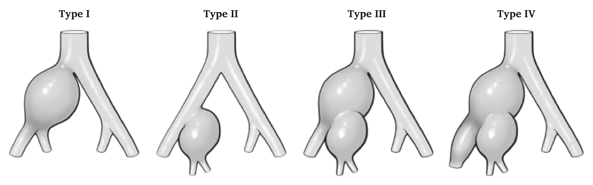
Figura 11. Clasificación de aneurisma de arteria ilíaca aislado por Reber et al.
La patología subyacente y el tipo de IAA aislado es similar al AAA e incluye aneurisma degenerativo, pseudoaneurisma, úlcera penetrante, aneurisma post-disección, aneurisma micótico y aneurisma traumático. Los IAA aislados se limitan con mayor frecuencia a la CIA (Reber I) y son menos frecuentes en la EIA (Reber IV). Su frecuencia general se reporta en hasta el 7% de todos los aneurismas aorto-ilíacos y el 12 – 48% de todos los IAA aislados son bilaterales. La mayoría de los pacientes con IAA aislado son hombres (90%) y diagnosticados a la edad de 70 años o más.
9.1. Vigilancia de aneurismas de arteria ilíaca pequeños e indicaciones para reparación
Mientras que la mayoría de los individuos con IAA aislado son asintomáticos, los síntomas pueden resultar de la compresión local del uréter, el plexo sacro o la vena ilíaca. Se ha reportado ruptura en el 4.3% (45/981) y síntomas en el 18% de los IAA aislados. El examen físico puede pasar por alto frecuentemente el IAA, mientras que el US puede identificar el 69% de los casos, la CTA es altamente precisa en la detección de IAA.
Los datos sobre la tasa de crecimiento de los IAA son escasos, con solo estudios retrospectivos, pero se cree que es similar al AAA, alrededor de 1 – 4 mm/año dependiendo del diámetro del aneurisma. Evidencia contemporánea de un gran estudio retrospectivo ha reportado tasas de crecimiento anual de 0.2 mm para aneurismas de arteria ilíaca común (CIAA) aislados de 20 – 24.9 mm, 0.3 mm para CIAA de 25 – 29.9 mm, y 1.3 mm para CIAA >= 30 mm. La incidencia de ruptura y su asociación con el tamaño y la tasa de crecimiento del IAA aislado no está tan bien establecida como en el AAA, con solo series de casos disponibles.
La mayoría de los IAA rotos reportados en la literatura son mayores de 50 mm, y raramente por debajo de 40 mm. Un metanálisis contemporáneo reportó un diámetro medio ponderado de 58 mm para IAA roto, con solo dos de 45 IAA rompiéndose a < 40 mm de diámetro. Un estudio nacional de los Países Bajos también reportó muy pocos IAA rompiéndose por debajo de 40 mm (9/90) con una mediana de diámetro de 68 mm en el momento de la ruptura.
Los datos sobre los intervalos de vigilancia para los IAA son limitados, pero recomendaciones recientes sugieren vigilancia cada tres años para IAA con diámetro 20 – 25 mm, cada dos años para 25 – 29 mm y anualmente para IAA >= 30 mm. La vigilancia de un IAA conocido se realiza preferiblemente con US, con CTA reservada para aquellos pacientes con aneurismas más grandes y o mala visibilidad por US.
Como faltan datos sólidos, se debe considerar el riesgo operatorio de los pacientes así como la idoneidad para reparación abierta y o endovascular, para determinar el diámetro umbral individual en el cual se considera la reparación. Sin embargo, el tratamiento conservador parece seguro en la mayoría de los pacientes con un diámetro máximo por debajo de 40 mm. Una revisión sistemática reportó solo dos rupturas por debajo del umbral de 40 mm de 983 IAA. Un estudio multicéntrico retrospectivo sobre el diámetro de aneurismas de IIA rotos recomendó la vigilancia de aneurismas de IIA en hombres ancianos hasta el diámetro de 40 mm. Esta recomendación ha sido respaldada por un metanálisis de aneurismas de IIA.
Dada la historia natural del IAA con tasas de crecimiento lentas y el riesgo muy bajo de ruptura por debajo de 40 mm de diámetro, el GWC considera justificado elevar el diámetro umbral en el cual se debe considerar la cirugía a 40 mm. No hay datos que sugieran ninguna diferenciación de género en la indicación para reparación. No obstante, puede ser razonable tener en cuenta el género y el tamaño corporal, de la misma manera que para el AAA.
No hay datos disponibles sobre terapias médicas en términos de control de BP o tratamiento con inhibidores plaquetarios, betabloqueantes o estatinas en pacientes con IAA aislado. El mejor tratamiento médico debe ser, por lo tanto, de acuerdo con las recomendaciones para AAA (ver Capítulo 4).
134 Rec. 134. Se debe considerar la vigilancia por imagen mediante ecografía para pacientes con un aneurisma de arteria ilíaca (arteria ilíaca común, arteria ilíaca interna y arteria ilíaca externa, o combinación de las mismas); cada tres años para aneurismas de 20 – 24 mm de diámetro, cada dos años para aneurismas de 25 – 29 mm de diámetro, y anualmente para aneurismas ≥ 30 mm, teniendo en cuenta la esperanza de vida, la idoneidad para una futura reparación, la dilatación aórtica concomitante y las preferencias del paciente. (IIa C).
135 Rec. 135. Se debe considerar la reparación electiva a un diámetro de ≥ 40 mm para pacientes con un aneurisma de arteria ilíaca (arteria ilíaca común, arteria ilíaca interna y arteria ilíaca externa, o combinación de las mismas). (IIa C).
9.2. Tratamiento quirúrgico de aneurisma de arteria ilíaca
El objetivo del tratamiento quirúrgico de los IAA es excluir el aneurisma de la circulación para prevenir un mayor crecimiento y ruptura. Antes del advenimiento de la reparación endovascular a principios de la década de 1990, la OSR era el pilar del tratamiento del IAA. El cambio constante hacia técnicas endovasculares desde 2000 se ha asociado con una disminución significativa en la morbilidad y mortalidad operatoria, y un metanálisis reciente reportó una tasa de mortalidad perioperatoria del 0.7% para la reparación endovascular.
Además, la reparación endovascular se asocia con menos complicaciones y una estancia hospitalaria más corta. Si bien esta tendencia se explicó inicialmente en parte por diferencias en la mezcla de casos, con un mayor número de casos de emergencia en el grupo de OSR, la experiencia reciente indica ventajas significativas para la reparación endovascular tanto en entornos electivos como de emergencia. Sin embargo, como la patología, anatomía, extensión de la enfermedad y aptitud del paciente difieren ampliamente entre pacientes individuales, ambas técnicas deben estar disponibles en centros que manejan pacientes con IAA.
Los aneurismas de la IIA debido a su ubicación pélvica profunda son particularmente desafiantes y datos metaanalíticos contemporáneos han reportado tasas de mortalidad operatoria más altas para OSR en comparación con técnicas endovasculares con tasas de mortalidad a 30 días de 8.2% vs. 2.8%.
9.2.1. Reparación quirúrgica abierta
La OSR generalmente se realiza bajo anestesia general, utilizando acceso retroperitoneal o transabdominal. Dependiendo de la extensión de la enfermedad aneurismática, la reconstrucción se realiza mediante reparación con injerto de tubo ilíaco o mediante reparación con injerto bifurcado incluyendo la aorta infrarrenal, con o sin revascularización de la IIA. Una técnica menos invasiva en casos seleccionados es la ligadura de la arteria ilíaca con reperfusión de la arteria femoral contralateral y o IIA mediante un bypass cruzado. La necesidad de ligadura de la IIA durante la OSR para IAA ha sido reportada de manera inconsistente.
Debido a la ubicación pélvica profunda, la OSR de IAA puede ser técnicamente desafiante con un mayor riesgo de lesiones iatrogénicas de venas, uréter o nervio, resultando en pérdida de sangre perioperatoria, morbilidad incluyendo isquemia colónica, y muerte.
9.2.2. Reparación endovascular
El tratamiento endovascular del IAA originalmente implicaba la embolización de la IIA y la cobertura con injerto de stent extendiéndose desde la CIA hasta la EIA. A menudo es necesario involucrar la aorta infrarrenal y la arteria ilíaca contralateral en la reparación para obtener un sello proximal adecuado. En contraste, la OSR de IAA aislados puede ser posible dejando la aorta infrarrenal y las arterias ilíacas contralaterales intactas.
Las técnicas endovasculares han evolucionado aún más en los últimos años desde la embolización rutinaria de la IIA hasta técnicas de rama lateral preservando la permeabilidad de la IIA. Mientras que el uso de dispositivos de rama ilíaca (IBD) para tratar aneurismas aorto-ilíacos está bien establecido, el uso de la técnica para tratar IAA ha evolucionado con tasas de mortalidad temprana de poco más del 2% y tasas alentadoramente bajas de claudicación glútea, disfunción eréctil e isquemia intestinal si la anatomía es adecuada. Además, los IAA aislados tratados con IBD han demostrado tasas de reintervención y oclusión de IBD de aproximadamente 20% y 15% a los cinco años de seguimiento.
Los resultados de aneurismas aorto-ilíacos indican una alta tasa de éxito técnico y alta permeabilidad a medio plazo del vaso diana. Un metanálisis contemporáneo de IBD en aneurismas aorto-ilíacos reportó que el 22% se usaron en aneurismas de CIA aislados y el 8% en aneurismas de IIA aislados con altas tasas de éxito técnico, baja incidencia de isquemia pélvica y tasa de mortalidad a 30 días del 0.4%. El factor anatómico más común que limita el uso de IBD es una IIA aneurismática.
Se han propuesto otras técnicas alternativas de reparación endovascular menos estudiadas para preservar la perfusión de la IIA en IAA, incluyendo la técnica de bell bottom, la técnica de sándwich y la reparación híbrida incluyendo bypass femoral cruzado; sin embargo, faltan estudios de alta calidad sobre el manejo de una zona de aterrizaje inadecuada en la CIA distal. Especialmente en IAA aislado roto, la posibilidad de operar bajo anestesia local parece ser una ventaja significativa de la reparación endovascular. Se reporta que la necesidad de convertir a OSR es poco común.
En resumen, la falta de estudios comparativos y los diferentes prerrequisitos (principalmente anatómicos) para la reparación abierta y endovascular, las hacen complementarias en el tratamiento del IAA. En consecuencia, la decisión sobre la técnica quirúrgica para la reparación del IAA debe basarse en consideraciones individuales, como la anatomía, la aptitud física y los deseos del paciente.
136 Rec. 136. Se debe considerar la elección de la técnica quirúrgica para la reparación del aneurisma de arteria ilíaca basada en las características individuales del paciente y de la lesión. (IIa B).
9.2.3. Preservación de la circulación pélvica
La interrupción de la perfusión de la IIA normalmente se compensa bien mediante la perfusión de la arteria colateral a través de vías de la IIA contralateral, arterias mesentéricas y femorales. Si no, puede conducir a síntomas incluyendo claudicación glútea, isquemia colónica, necrosis pélvica o disfunción eréctil. La claudicación glútea es la complicación más frecuente del tratamiento endovascular de los IAA, con una frecuencia reportada de hasta el 28%. Datos contemporáneos de metanálisis de aneurismas de CIA aislados y aneurismas de IIA reportaron tasas similares de claudicación glútea del 11.2% y 13.9%. La disfunción sexual post-procedimiento, la isquemia intestinal y la isquemia de la médula espinal (SCI) se reportan raramente. La probabilidad y severidad de estas complicaciones son más frecuentes con la oclusión bilateral de la IIA, pero no pueden predecirse fácilmente. Por lo tanto, se recomienda la preservación del flujo sanguíneo a al menos una e idealmente ambas IIA si no compromete el objetivo principal del tratamiento de exclusión del aneurisma.
La disponibilidad de IBD ahora permite la preservación del flujo de la IIA en la mayoría de los casos con anatomía adecuada, conduciendo a una incidencia reducida de claudicación glútea en el tratamiento de AAA aorto-ilíacos e IAA. Incluso en casos de aneurismas de IIA sin una zona de aterrizaje adecuada dentro del tronco principal de la IIA, los IBD se han utilizado con éxito fuera de sus IFU, aterrizando distalmente en las arterias glúteas para preservar el flujo de la IIA a una de sus ramas glúteas principales. La arteria glútea superior se puede utilizar para el sellado distal del injerto de stent con resultados tempranos similares a las zonas de aterrizaje de la IIA.
Siempre que sea necesaria la embolización de la IIA para excluir un aneurisma de CIA, el material de embolización debe colocarse preferiblemente en la porción proximal de la IIA para mantener la comunicación entre sus divisiones anterior y posterior. La embolización distal aumenta el riesgo de claudicación glútea. En casos de oclusión bilateral de la IIA se ha convertido en práctica común en muchos centros escalonar el tratamiento para permitir el desarrollo colateral, aunque el escalonamiento puede aumentar el riesgo de ruptura del aneurisma.
En casos con cobertura aórtica extensa por injertos de stent, con oclusión de arterias segmentarias, la preservación del flujo de la IIA juega un papel importante en la prevención de SCI ya que este territorio contribuye al flujo en la red colateral de la médula espinal.
137 Rec. 137. Se recomienda preservar el flujo sanguíneo a al menos una arteria ilíaca interna durante la reparación quirúrgica abierta y endovascular de aneurismas de arteria ilíaca. (I C).
138 Rec. 138. Se recomienda la oclusión del tronco principal proximal del vaso si es técnicamente factible, para preservar la circulación colateral distal a la pelvis, en pacientes sometidos a reparación de aneurisma de arteria ilíaca común en los que es necesaria la embolización o ligadura de la arteria ilíaca interna. (I C).
9.3. Seguimiento después de la reparación de aneurisma de arteria ilíaca
Los datos sobre el seguimiento después de la reparación endovascular de IAA son escasos y cuando están disponibles el período de vigilancia es corto, con un número sustancial de pacientes perdidos durante el seguimiento. La vigilancia se realiza mediante DUS y CTA. Se han reportado endofugas Tipo 1 y Tipo 3 y a menudo conducen a reintervención. Las T2EL son las más comunes y probablemente subnotificadas, pero notablemente no hubo reportes de ruptura relacionada con T2EL no tratada en un metanálisis reciente. Las tasas de intervención secundaria fueron del 17% pero frecuentemente no reportadas o subnotificadas. La evidencia sugiere que la intervención secundaria es más probable si la cobertura con injerto de stent del origen de la IIA se realiza sin embolización concomitante.
Además, pocos han reportado mortalidad relacionada con el aneurisma, siendo la tasa del 2.4% (7/288) probablemente una subestimación. Claramente, la falta de datos de seguimiento robustos para IAA hace difícil dar recomendaciones sobre el seguimiento. Se necesitan resultados a más largo plazo, particularmente para la reparación endovascular. Hasta entonces, el seguimiento debe estar de acuerdo con las recomendaciones para AAA (ver Capítulo 7).
10. PROBLEMAS AÓRTICOS MISCELÁNEOS
10.1. Aneurisma de aorta abdominal micótico
10.1.1. Definición y diagnóstico de aneurisma de aorta abdominal micótico.
Los AAA micóticos o infectados son causados por émbolos sépticos a los vasa vasorum, por diseminación hematógena durante la bacteriemia o por extensión directa de una infección adyacente que conduce a una degeneración infecciosa de la pared arterial y formación de aneurisma. El término aneurisma micótico fue acuñado por Osler en 1885, refiriéndose a la vegetación similar a hongos en la endocarditis asociada con aneurismas infectados. Hoy en día, el término aneurisma micótico se define como todos los aneurismas infecciosos primarios y secundarios, donde las bacterias son los patógenos causales más comunes. Un nombre alternativo para los aneurismas micóticos, que se ha propuesto recientemente, es aneurisma aórtico nativo infeccioso.
En Europa y América del Norte, las especies de estafilococos, incluyendo tanto Staphylococcus aureus como estafilococos coagulasa negativos, son las bacterias más comunes representando alrededor del 30 – 40% de los AAA micóticos. Las especies de estreptococos Gram positivos, incluidos los enterococos y las especies Gram negativas de Enterobacteriaceae (es decir, Escherichia coli) y especies de Salmonella representan aproximadamente el 10 – 20% de los MAA cada una. En Asia Oriental, sin embargo, las especies de Salmonella son los microbios causales dominantes, reportados en hasta el 60 – 70% de los AAA micóticos. Se reporta una tasa de cultivos negativos en el rango de 20 – 30%.
La incidencia de MAA es de 0.5 – 1.53% de todos los aneurismas aórticos en los países occidentales y supuestamente más alta en Asia Oriental. La mayoría de los pacientes son hombres y tienden a ser más jóvenes (edad media 69 – 70 años) que aquellos con un aneurisma degenerativo no infectado (74 – 78 años). Si no se trata, más allá de las complicaciones sépticas, el resultado natural de un AAA micótico es el de una rápida expansión, ruptura y muerte.
El diagnóstico de un AAA micótico se basa en una combinación de (1) presentación clínica, (2) pruebas de laboratorio y microbiología, y (3) hallazgos radiológicos (Tabla 23). Además, la presencia de infección periaórtica durante la cirugía es diagnóstica. A menudo se observa una historia médica típica, con la presencia de infecciones concomitantes (p. ej., osteomielitis, urinaria, tuberculosis, gastroenteritis y tejido blando) y enfermedad o medicamentos inmunosupresores (p. ej., cáncer, insuficiencia renal con diálisis, virus de inmunodeficiencia humana, diabetes o tratamiento con esteroides).
La CTA es la técnica de imagen de primera línea, la cual puede complementarse con imágenes moleculares si es necesario, p. ej., 18-FDG PET o WBCS. Una declaración de consenso Delphi reciente propuso un algoritmo diagnóstico para AAA micótico, basado en una combinación de los tres criterios de la Tabla 22: Diagnóstico definitivo: 3/3 criterios clínicos y ningún diagnóstico diferencial siendo más probable, o hallazgo intraoperatorio de pus o absceso en la pared del aneurisma, o cultivo microbiológico positivo o histología de aspiración guiada de aneurismas con sospecha clínica de AAA micótico; Diagnóstico probable: 2/3 criterios clínicos y ningún diagnóstico diferencial siendo más probable; Diagnóstico no probable: 1/3 criterios clínicos.
139 Rec. 139. Se recomienda basar el diagnóstico de un aneurisma de aorta abdominal micótico en una combinación de parámetros clínicos, de laboratorio y de imagen. (I C).
10.1.2. Manejo de aneurisma de aorta abdominal micótico.
El diagnóstico temprano, la administración inmediata de antibióticos sistémicos y el tratamiento quirúrgico oportuno son cruciales para mejorar los resultados tempranos. El tratamiento antibiótico empírico contra Staphylococcus aureus y bacilos Gram negativos, como Salmonella spp. debe iniciarse tan pronto como se hayan asegurado los cultivos. Tan pronto como sea posible se inicia la terapia antibiótica dirigida (dependiendo de la microbiología), alternativamente se continúa el tratamiento empírico en casos con cultivos de sangre y tejido negativos.
Debido al curso natural impredecible y maligno del AAA micótico, con rápida expansión y alto riesgo de ruptura (44% se presentan con ruptura, debe considerarse la reparación inmediata independientemente del tamaño del aneurisma. El momento de la cirugía es debatido. Informes de resultados favorables en pacientes tratados mediante cirugía diferida después de un período inicial de antibióticos sistémicos, han llevado a que algunos propongan tal estrategia. Sin embargo, es probable que haya sesgo de selección en esos informes y la alta tasa de crecimiento y ruptura observada para el AAA micótico hace que la cirugía diferida sea arriesgada a menos que exista una vigilancia rigurosa.
140 Rec. 140. Se recomienda el tratamiento con antibióticos intravenosos para pacientes con sospecha de aneurisma de aorta abdominal micótico; tratamiento antibiótico empírico contra Staphylococcus aureus y bacilos Gram negativos, iniciado tan pronto como se hayan asegurado los cultivos, seguido de terapia dirigida continua según la microbiología o tratamiento empírico continuo en casos con cultivos negativos. (I C).
141 Rec. 141. Se recomienda el tratamiento quirúrgico rápido de los aneurismas de aorta abdominal micóticos, independientemente del tamaño del aneurisma, debido al alto riesgo de rotura. (I C).
A pesar de la falta de evidencia, la OSR ha sido considerada durante mucho tiempo como el estándar de oro para el tratamiento definitivo del AAA micótico. La OSR incluye resección del aneurisma, desbridamiento local extenso y revascularización mediante bypass extraanatómico o reconstrucción in situ.
Las opciones para conductos in situ incluyen injerto espiral hecho de vena safena larga, venas femorales criopreservadas autólogas o heterólogas (llamado sistema neo-aorto-ilíaco), arterias criopreservadas, pericardio bovino, o si no están disponibles injertos protésicos (PTFE, Dacron, plata o injertos de Dacron empapados en antibióticos). Deben obtenerse múltiples muestras intraoperatorias para cultivo. Debe realizarse un desbridamiento extenso, y el proceso infeccioso debe separarse del injerto con omentoplastia pediculada. Se han reportado tasas de mortalidad de hasta 5 – 49% después de injerto in situ vs. 24 – 50% después de bypass extraanatómico. Las complicaciones relacionadas con la infección pueden ocurrir en 0 – 20% después de la reconstrucción in situ y datos más antiguos sugieren una tasa de complicaciones igualmente alta después de bypass extraanatómico, siendo el más temido el estallido tardío del muñón aórtico en hasta el 20%. No existen datos comparativos fiables entre las diversas técnicas quirúrgicas abiertas.
En los últimos 20 años los AAA micóticos han sido tratados cada vez más exitosamente por medios endovasculares. EVAR ha sido visto con escepticismo debido a preocupaciones mayores sobre dejar el tejido infectado en su lugar, incluyendo el aneurisma mismo, y el riesgo de infección persistente o recurrente. Por otro lado, EVAR es una alternativa menos invasiva a la OSR de AAA micótico, permitiendo el tratamiento de pacientes frágiles y con comorbilidades con anatomía de aneurisma desafiante y evitación de trauma quirúrgico mayor (pinzamiento aórtico, heparinización y transfusión masiva de sangre). En situaciones de emergencia EVAR puede ser un puente para cirugía definitiva posterior, y para aquellos no aptos para OSR ser un tratamiento permanente o paliativo. Un gran estudio multicéntrico europeo incluyendo 123 pacientes con 130 AAA micóticos (38% ruptura y 52% suprarrenal o torácico) mostró que EVAR puede ofrecer un tratamiento duradero (55% supervivencia a cinco años) si se asocia con terapia antibiótica a largo plazo (6 – 12 meses o posiblemente de por vida) pero pueden ser necesarios procedimientos abiertos y percutáneos adicionales para eliminar lesiones secundarias. Las complicaciones tardías relacionadas con la infección ocurren, especialmente dentro del primer año después de la cirugía, y son a menudo fatales (estudio europeo 19% de la cohorte total), especialmente en pacientes con hemocultivos positivos no Salmonella (41% supervivencia a cinco años), con inmunodeficiencia (40% supervivencia a cinco años), con gas periaórtico o intratrombo en la tomografía computarizada preoperatoria (36% supervivencia a cinco años) o con fiebre o ruptura en el momento de la operación.
No existen estudios comparativos directos entre OSR y EVAR para AAA micóticos. Un análisis de emparejamiento por puntuación de propensión a nivel nacional sueco de 132 pacientes con 144 AAA micóticos, mostró un beneficio significativo de supervivencia temprana para EVAR (hasta cuatro años) sin desventajas tardías en términos de tasas de infección tardía o complicaciones relacionadas con el aneurisma o supervivencia, sugiriendo que la reparación endovascular es una alternativa aceptable a la OSR. En una revisión sistemática, incluyendo 963 pacientes de 28 estudios, EVAR (vs. OSR) se asoció con una tasa de mortalidad más baja a los 30 – 90 días tanto para AAA micóticos paraviscerales como infrarrenales, mientras que no se observó diferencia entre las técnicas después de cinco años. En un estudio nacional japonés, incluyendo 862 pacientes con AAA micóticos, las infecciones relacionadas con el aneurisma persistentes o recurrentes fueron significativamente más frecuentes después de EVAR que OSR (OR 2.8); sin embargo, después del emparejamiento por puntuación de propensión no se observaron diferencias en la mortalidad por todas las causas y relacionada con la aorta a tres años.
En un metanálisis reciente, incluyendo 1 203 pacientes de 14 estudios, la tasa de infección recurrente agrupada fue significativamente mayor después de EVAR que OSR (RR 2.4), mientras que la ruptura o muerte relacionada con la infección, muerte perioperatoria, muerte a un año y readmisión o reintervención no difirieron entre los dos grupos. La literatura conflictiva destaca el problema de los estudios retrospectivos sesgados de un solo centro. No menos importante en términos de sesgo de selección, donde los pacientes aptos son seleccionados más a menudo para reparación abierta, mientras que los pacientes menos aptos, inestables o aquellos con anatomía desafiante son tratados endovascularmente en mayor medida.
El régimen antimicrobiano debe formularse caso por caso en estrecha colaboración con especialistas en infección basándose en parámetros clínicos, de laboratorio y estudios de imagen. La vigilancia y la duración de la terapia antibiótica (que varía desde 4 - 6 semanas hasta de por vida) están influenciadas por la microbiología, tipo de reparación quirúrgica y estado inmunológico del paciente.
En resumen, el AAA micótico es una enfermedad rara y potencialmente mortal. La detección temprana y el tratamiento con antibióticos seguido de reparación quirúrgica son centrales para su manejo. Sin embargo, debido a la variabilidad en los síntomas de presentación y condición, complejidad anatómica y bacteriología, así como la falta de evidencia fuerte, se recomienda un enfoque individualizado, siendo EVAR una alternativa aceptable a la OSR. Independientemente, se aboga por la vigilancia clínica y radiológica a largo plazo de forma individual. Finalmente, dada la rareza y complejidad del AAA micótico, su manejo debe centralizarse en centros de alto volumen con experiencia multidisciplinaria disponible (ver Capítulo 2).
142 Rec. 142. Se recomienda derivar a los pacientes con aneurismas de aorta abdominal micóticos a centros quirúrgicos vasculares de alto volumen, para un manejo multidisciplinario. (I C).
143 Rec. 143. Se debe considerar la elección de la técnica quirúrgica para el tratamiento de un aneurisma abdominal micótico basada en las características individuales del paciente y de la lesión. (IIa C).
144 Rec. 144. Se debe considerar un régimen antibiótico posoperatorio y una estrategia de vigilancia individualizados, basados en factores del paciente, microbiología y la técnica quirúrgica utilizada, para pacientes que se han sometido a reparación de aneurisma abdominal micótico. (IIa C).
10.2. Aneurisma de aorta abdominal inflamatorio
10.2.1. Definición y diagnóstico de aneurisma de aorta abdominal inflamatorio.
El AAA inflamatorio, etiquetado por primera vez por Walker y colegas en 1972, representa el 5 – 10% de todos los AAA. Los pacientes con AAA inflamatorios son alrededor de 5 – 10 años más jóvenes que los pacientes con AAA degenerativos, predominantemente hombres (relación H/M 6 – 30/1) y fumadores empedernidos (85 – 90%), y a menudo tienen hipertensión, enfermedad de las arterias coronarias y PAOD.
La mayoría de los AAA inflamatorios pertenecen al grupo de periaortitis crónica (fibrosis retroperitoneal perianeurismática idiopática) y se caracterizan por (1) engrosamiento marcado de la pared del aneurisma, (2) fibrosis perianeurismática y retroperitoneal blanca brillante, y (3) adherencias densas de estructuras intraabdominales adyacentes.
La patogénesis del AAA inflamatorio sigue siendo desconocida. Es probable que los mecanismos autoinmunes sean importantes en la inducción de esta reacción inflamatoria crónica, ya sea por un proceso de enfermedad local basado en una reacción inflamatoria a componentes de placas ateroscleróticas o como una manifestación de una enfermedad sistémica. Basado en estudios inmunológicos, se ha propuesto una clasificación de AAA inflamatorios como relacionados con inmunoglobulina G4 (IgG4) y no relacionados con IgG4, enfatizando un papel inmunológico en el desarrollo de la enfermedad.
Los AAA inflamatorios relacionados con IgG4 que constituyen aproximadamente el 50% de todos los AAA inflamatorios, tienen riesgo de desarrollar enfermedad sistémica relacionada con IgG4 en otros órganos pero se rompen con menos frecuencia. También se ha demostrado evidencia de una predisposición genética, pero en última instancia, la etiología puede ser multifactorial. El diagnóstico de AAA inflamatorio se basa en una combinación de parámetros clínicos, de laboratorio y de imagen. Los AAA inflamatorios se asocian con una mayor frecuencia de síntomas relacionados con el aneurisma (65 – 90%) que los AAA degenerativos. Una tríada de dolor abdominal crónico, de espalda, flanco o pélvico (50 – 80%), pérdida de peso (20 – 50%) y marcadores inflamatorios sistémicos elevados como velocidad de sedimentación globular, niveles de proteína C reactiva y recuento de glóbulos blancos (60 – 90%) es altamente sugestiva de un AAA inflamatorio. Los hallazgos clínicos incluyen un AAA pulsátil sensible (15 – 71%) y obstrucción ureteral causando hidronefrosis (10 – 50%) y disfunción renal crónica (20%).
La CTA sigue siendo el método de elección para detectar la inflamación alrededor de la aorta agrandada con engrosamiento de los tejidos adyacentes y potencial atrapamiento de órganos adyacentes: duodeno y colon sigmoide (60%), obstrucción ureteral (20 – 44%) con hidrouréteronefrosis (15 – 30%) y afectación de la vena renal izquierda o cava (18 – 21%). La CTA detecta la característica anatómica típica, el signo del manto; una pared engrosada por células inflamatorias crónicas y fibrosis perianeurismática densa respetando la pared posterior, con posible afectación de estructuras adyacentes como el duodeno, uréteres, vena renal izquierda y vena cava inferior. Sin embargo, no hay consenso sobre cómo medir el diámetro de un AAA inflamatorio, si debe incluir la pared aórtica engrosada o no, lo que complica la toma de decisiones sobre la posible necesidad de cirugía. Incluir la inflamación periaórtica o pared edematosa, sin embargo, arriesga sobreestimar enormemente el diámetro, y por lo tanto forzar la reparación quirúrgica de un AAA de facto pequeño. Debido al aumento del riesgo de complicaciones quirúrgicas y falta de aumento del riesgo de ruptura, no es aconsejable.
18F-FDG PET/CT es una herramienta de imagen sensible y específica para detectar y monitorear la inflamación periaórtica y la resonancia magnética ponderada por difusión ha surgido como una herramienta potencial adicional para diagnosticar y hacer seguimiento de los AAA inflamatorios. En el diagnóstico diferencial debe descartarse el AAA micótico, y se facilita mediante hemocultivos bacterianos negativos, prueba QuantiFERON-TB Gold negativa (tuberculosis), pruebas serológicas negativas (sífilis, Coxiella, Bartonella, Brucella), gammagrafía con glóbulos blancos marcados con indio 111 negativa, y la característica morfológica típica en CTA.
145 Rec. 145. No se debe incluir la inflamación periaórtica o el edema de pared al medir el diámetro de los aneurismas de aorta abdominal inflamatorios para determinar la indicación de reparación. (III C).
10.2.2. Manejo de aneurisma de aorta abdominal inflamatorio.
El manejo óptimo de pacientes con AAA inflamatorios sigue siendo incierto y se recomienda que todos los pacientes con AAA inflamatorio sean manejados y seguidos de cerca por un equipo multidisciplinario.
El manejo médico no operatorio con corticosteroides debe considerarse para aneurismas sintomáticos con un diámetro por debajo del umbral para reparación pero dolor severo y pérdida de peso, asociado con hidronefrosis intensa, y un signo del manto sugiriendo dificultades perioperatorias. La dosis óptima y duración del tratamiento médico aún no están claras ya que faltan ensayos clínicos controlados sobre la eficacia a largo plazo de los esteroides en AAA inflamatorios. No obstante, basado en la terapia recomendada para vasculitis primaria, debe iniciarse terapia con corticosteroides a dosis altas (30 – 80 mg/día equivalente de prednisona) para inducción de remisión. Una vez controlada la enfermedad, la dosis de glucocorticoide debe reducirse a una dosis objetivo de ≤ 5 – 10 mg/día después de un año. Además de los inmunosupresores convencionales, puede requerirse terapia adjunta (azatioprina, ciclofosfamida y metotrexato) en pacientes seleccionados como agentes ahorradores de esteroides debido a los efectos secundarios de los esteroides o en casos refractarios a esteroides. Se demostró que Rituximab es efectivo en enfermedades relacionadas con IgG4 en un ensayo piloto de etiqueta abierta.
El tamoxifeno (un modulador selectivo del receptor de estrógeno) se ha utilizado en el tratamiento de fibrosis retroperitoneal idiopática, basado en su utilidad en tumores desmoides pélvicos. En un estudio prospectivo de un solo centro, 15/19 pacientes tratados con tamoxifeno, 20 mg oralmente dos veces al día, reportaron resolución sustancial de síntomas, mejoría de reactantes de fase aguda y signos de regresión en gammagrafía con galio y TC después de una duración mediana de tratamiento de 2.5 semanas. Se ha sugerido que el tamoxifeno en combinación con esteroides es efectivo en AAA inflamatorios.
Los reactantes de fase aguda (velocidad de sedimentación globular, proteína C reactiva) solos no son fiables para el seguimiento ya que a menudo no son concordantes con la evaluación metabólica de la enfermedad y la normalización de la velocidad de sedimentación globular ocurre antes durante el seguimiento. Un ensayo prospectivo de imagen de fibrosis retroperitoneal ha demostrado que 18F-FDG PET puede ayudar a guiar decisiones sobre el inicio o cese del tratamiento con esteroides. Los pacientes con un valor de captación estándar máximo ≥ 4 tienen 10 veces más probabilidad de responder a la terapia con esteroides que aquellos con un valor < 4.
146 Rec. 146. Se debe considerar el tratamiento médico antiinflamatorio para todos los pacientes con aneurismas de aorta abdominal inflamatorios sintomáticos, siendo los corticosteroides la terapia de inicio de elección. (IIa C).
El tratamiento quirúrgico de los AAA inflamatorios plantea un desafío diferente a los cirujanos en comparación con los AAA degenerativos estándar debido al mayor riesgo de lesiones iatrogénicas intestinales, de cava, vena ilíaca y ureterales durante la OSR y la respuesta inflamatoria aumentada a la implantación de endoprótesis. Los pacientes operados por AAA inflamatorios tienen tasas de mortalidad y complicaciones tempranas más altas pero resultados a largo plazo equivalentes en comparación con una cohorte emparejada de pacientes con AAA degenerativos.
Se reporta que el riesgo de ruptura de AAA inflamatorio es bajo (< 5%). Por lo tanto, está indicado el mismo umbral de diámetro en el cual se considera la reparación que para los AAA degenerativos, y solo raramente puede estar indicado el tratamiento quirúrgico en casos refractarios sintomáticos a pesar del tratamiento médico, para controlar el proceso inflamatorio.
La OSR puede ser extremadamente desafiante debido a la alta adherencia fibrótica periaórtica al duodeno, vena renal izquierda, vena cava inferior y uréteres. Intraoperatoriamente, los AAA inflamatorios aparecen blancos y brillantes. Debe evitarse la adhesiolisis extensa de estructuras perianeurismáticas para limitar el riesgo de lesiones iatrogénicas. La fibrosis periaórtica proporciona un campo operatorio hostil lo que explica la mayor morbilidad y mortalidad intra y postoperatoria reportada (6 – 11%) después de reparación abierta de AAA inflamatorio. Se cree que un enfoque transperitoneal modificado con disección limitada reduce el riesgo de lesión iatrogénica y gana control proximal y distal del aneurisma de manera más segura lejos de las partes engrosadas de la pared aneurismática, dejando el duodeno adherido a la cáscara engrosada. Para ese propósito, puede requerirse pinzamiento aórtico suprarrenal en hasta el 40% de los casos, así como reconstrucción extendida de las arterias ilíacas externas o femorales. Además, se requiere la colocación preoperatoria de stent ureteral en una mayoría de pacientes (90%) para liberar la hidronefrosis y ayudar a la identificación del uréter durante la cirugía.
Después de OSR, se observa regresión de la inflamación y fibrosis perianeurismática en hasta el 86%, y regresión de la hidronefrosis asociada en hasta el 80% pero puede tomar varios años para completarse. Se describen complicaciones relacionadas con el injerto en el 9%, incluyendo pseudoaneurismas para-anastomóticos y GEF.
En pacientes anatómicamente adecuados, EVAR debe considerarse como una opción de tratamiento de primera línea debido a las tasas de mortalidad a 30 días observadas más bajas (2.4%) y menos complicaciones mayores. En la mayoría de los casos, la fibrosis perianeurismática post-EVAR se resuelve a un ritmo más lento en comparación con OSR. Con respecto a la hidronefrosis, no está claro si EVAR solo tiene algún efecto beneficioso y podría ser un proceso lento. Por lo tanto, el beneficio inicial a corto plazo debe contrapesarse con tasas posiblemente más altas de hidronefrosis con necesidad de stent doble J con el tiempo.
La hidronefrosis y la fibrosis periaórtica pueden persistir e incluso progresar a pesar de OSR o EVAR. Por lo tanto, la vigilancia de por vida y la terapia inmunosupresora continua siguen justificadas después de la reparación de AAA inflamatorio, y puede requerirse pielostomía, o lisis mediante cirugía abierta.
147 Rec. 147. Se debe considerar la reparación a un diámetro de aneurisma de ≥ 55 mm para pacientes con un aneurisma de aorta abdominal inflamatorio, con preferencia de reparación endovascular sobre reparación quirúrgica abierta si la anatomía es adecuada. (IIa C).
10.3. Úlcera aórtica penetrante, pseudoaneurisma, hematoma intramural, disección local y aneurisma sacular
La úlcera aórtica penetrante (PAU) se define como ulceración de una placa aterosclerótica que penetra a través de la íntima aórtica resultando en una cantidad variable de hematoma dentro de la pared aórtica (Fig. 12). Estas lesiones ocurren típicamente en pacientes ancianos con aterosclerosis sistémica y comorbilidades asociadas. Basado en una revisión de la literatura, la incidencia estimada es del 1% en la población vascular, siendo la PAU abdominal (11 – 24%) menos común que la PAU torácica (76 – 86%) pero pueden notarse lesiones múltiples y aneurismas asociados. La progresión de PAU puede conducir a hematoma intramural (IMH), formación de pseudoaneurisma (dilatación de la aorta debida a disrupción de todas las capas de la pared, que solo está contenida por tejido conectivo periaórtico, también llamado falso aneurisma), ruptura (hematoma extraaórtico) y embolización de extremidades inferiores. Las PAU son sintomáticas en 18 – 70%, causando dolor (52%) o isquemia aguda de miembros inferiores debido a embolia distal (12%) o ruptura (4 – 7%).
Los AAA saculares se consideran una entidad separada definida como aneurismas esféricos que involucran solo una porción de la circunferencia aórtica. La infección siempre debe excluirse, y si está presente manejarse en consecuencia (ver sección 10.1). El manejo óptimo de AAA sacular no infectado, incluyendo cuándo intervenir, requiere más investigación y actualmente debe basarse en la evaluación de riesgo individual. Debido a la incertidumbre sobre un posible aumento del riesgo de ruptura puede considerarse el tratamiento temprano, con un umbral de diámetro más bajo para reparación electiva que para AAA fusiforme estándar.
Las disecciones aórticas abdominales aisladas (IAADs) son raras y mucho menos comunes que la disección aórtica abdominal asociada con disección aórtica torácica. La disección está relacionada con un desgarro en la capa íntima y flujo sanguíneo subsecuente a través del desgarro hacia la media creando una luz falsa. El desgarro de entrada generalmente se origina debajo o al nivel de las arterias renales (82%). Un AAA concomitante está presente en el 41% de los pacientes con IAAD sintomática. El IMH representa sangre en la pared aórtica sin un desgarro intimal o punto de entrada en imágenes y raramente existe en la aorta abdominal sola. Si se detectan IAAD, IMH o pseudoaneurismas en la aorta abdominal, debe excluirse trauma, lesión iatrogénica o PAU como causa subyacente.
La queja más común es dolor abdominal, de espalda o flanco (57 – 62%), a veces asociado con isquemia aguda de miembros inferiores 5%. Tanto la TC como la MRA permiten el diagnóstico de PAU, IMH e IAAD con un alto grado de precisión. Las PAU se caracterizan por un cráter lleno de contraste que se comunica con la luz aórtica. El IMH es un área en forma de media luna de alta atenuación suave dentro de la pared aórtica, detectada en TC sin contraste. Frecuentemente se observan piscinas de sangre intramurales pero no se asocian con un mal pronóstico y deben distinguirse de proyecciones tipo úlcera. La disección se presenta como un defecto de llenado lineal en la luz aórtica con la luz verdadera a menudo más pequeña que la luz falsa. La extensión craneocaudal de una PAU es mucho más corta que una IAAD o IMH primario.
La vigilancia por imágenes en serie mediante imágenes transversales (CTA o MRA) está justificada ya que el curso natural de estas patologías permanece desconocido con tasas de crecimiento reportadas altamente variables.
PAU complicada se refiere a un hematoma extraaórtico coexistente (pseudoaneurisma), síntomas de embolización y dolor recurrente. Asimismo, IMH o IAAD complicado significa la presencia de dolor recurrente, expansión del IMH, hematoma periaórtico, disrupción intimal o malperfusión.
Aunque la historia natural de estos procesos no se ha descrito claramente, para cada paciente con PAU, IMH o IAAD debe iniciarse manejo médico y se basa esencialmente en el mismo concepto utilizado para disecciones aórticas tipo B, con reducción de la PA, manejo de factores de riesgo ateroscleróticos y control óptimo del dolor. Una PAU, IMH o IAAD complicada requiere tratamiento invasivo, al igual que las IAADs que están asociadas con aneurismas concomitantes incluso para lesiones con un diámetro < 50 mm aunque algunos han abogado por un enfoque más agresivo si el diámetro aórtico general es > 30 mm. En una revisión sistemática, incluyendo 482 pacientes con IAAD de 17 estudios, los pacientes con tratamiento conservador tuvieron una tasa de mortalidad por todas las causas a 30 días del 1%, una tasa de mortalidad a largo plazo del 5% (después de 43 meses de seguimiento), y una tasa de intervención durante el seguimiento del 18%. Los pacientes con OSR tuvieron una tasa de mortalidad a 30 días del 9%, una tasa de mortalidad a largo plazo del 12%, y una tasa de reintervención del 9%. Los pacientes con reparación endovascular tuvieron una tasa de mortalidad a 30 días del 2%, una tasa de mortalidad a largo plazo del 5%, una tasa de reintervención del 6%, y una tasa de endofuga persistente del 4%.
La naturaleza focal de estas patologías las hace objetivos ideales para la reparación endovascular con injertos de stent. Esto se puede lograr con altas tasas de éxito técnico en casos complicados, pero el procedimiento puede estar asociado con una alta tasa de mortalidad hospitalaria (10%) debido a la fragilidad de la población afectada. Figura 12. Ilustración de (A) disección aórtica, (B) hematoma intramural, (C) úlcera aórtica penetrante, (D) pseudoaneurisma, (E) aneurisma sacular, (F) aneurisma fusiforme.
148 Rec. 148. Se debe considerar el manejo conservador con el mejor tratamiento médico y vigilancia continua para pacientes con úlcera aórtica penetrante no complicada, disección aislada o hematoma intramural de la aorta abdominal. (IIa C).
149 Rec. 149. Se debe considerar el tratamiento quirúrgico, preferiblemente por medios endovasculares, para pacientes con pseudoaneurisma o úlcera aórtica penetrante complicada, disección aislada o hematoma intramural en la aorta abdominal. (IIa C).
150 Rec. 150. Se puede considerar el tratamiento quirúrgico temprano (abierto o endovascular) para úlcera aórtica penetrante y aneurismas de aorta abdominal saculares, con un umbral de diámetro para reparación electiva más bajo que para un aneurisma de aorta abdominal fusiforme estándar. (IIb C).
10.4. Enfermedad maligna concomitante
La incidencia reportada de enfermedades malignas concomitantes y AAA varía entre 3% y 17%. El cáncer puede detectarse incidentalmente en CTA para evaluación de AAA o el aneurisma puede encontrarse durante investigaciones para malignidad sintomática. Representa un problema desafiante en términos de prioridad de tratamiento, tiempo y resultado esperado.
La mayoría de los artículos publicados consisten en pequeñas series de casos. Por lo tanto, las decisiones deben tomarse basándose en el juicio clínico aplicado individualmente en un entorno multidisciplinario. Siendo un procedimiento profiláctico, la reparación de AAA solo vale la pena si el riesgo de ruptura de por vida excede el riesgo del tratamiento en pacientes con una esperanza de vida razonable. El pronóstico del cáncer concomitante es por lo tanto central en el proceso de toma de decisiones junto con otras comorbilidades (edad, bienestar fisiológico) y preferencia del paciente. Otras consideraciones son un riesgo percibido aumentado de ruptura de AAA después de cirugía de cáncer abdominal vs. un retraso significativo en el tratamiento del cáncer si los AAA se tratan primero con OSR, y el riesgo de infección del injerto.
La quimioterapia citotóxica no aumentó el crecimiento del aneurisma en comparación con pacientes no sometidos a tratamiento por malignidad en análisis retrospectivos pero un análisis retrospectivo de un solo centro incluyendo 217 pacientes con AAA con 238 malignidades sincrónicas sugirió que los antimetabolitos como parte de la quimioterapia pueden aumentar la tasa de crecimiento anual del AAA y se sugirió un monitoreo más cercano de estos pacientes con AAA. Además, solo nueve pacientes con AAA y cáncer concomitante recibiendo quimioterapia han sido reportados en la literatura necesitando cirugía urgente de aneurisma, lo cual podría posiblemente explicarse por subregistro o representando la variabilidad biológica normal observada en la enfermedad aneurismática.
Dos metanálisis, enfocándose en el manejo de AAA y neoplasias abdominales concomitantes, incluyeron diferentes estudios de casos mayormente retrospectivos pero llegaron a la misma conclusión; tratar lo que sea más amenazante o sintomático primero (AAA grande, cáncer de colon obstructivo, cáncer gástrico sangrante, etc.). Dado que la OSR de AAA antes de la resección de un cáncer gastrointestinal puede resultar en un retraso de meses en comparación con días post EVAR, el AAA debe considerarse preferiblemente para EVAR si es anatómicamente adecuado seguido de cirugía de cáncer escalonada dentro de dos semanas. EVAR también tiene un papel en evolución durante intervenciones combinadas. Esto permitiría un retraso mínimo en el tratamiento tanto del aneurisma como del cáncer, así como un riesgo reducido de infección del injerto. Se ha observado una alta mortalidad y morbilidad relacionada con el procedimiento cuando la reparación abierta de AAA se lleva a cabo antes de la resección de cáncer gastrointestinal, a menudo semanas o meses después, en oposición a la cirugía de cáncer primero: 19% y 42% vs. 9% y 26%, respectivamente.
Si ambas lesiones son potencialmente mortales (p. ej., aneurisma grande con malignidad obstructiva avanzada), y la anatomía no es adecuada para reparación endovascular, o si el paciente es joven puede elegirse un enfoque abierto sincrónico, prestando gran atención al detalle (selección del paciente, suministro de sangre para evitar necrosis intestinal, irrigación y envoltura omental para evitar infección) entendiendo que la morbilidad y mortalidad acumulativas son más altas en estas operaciones de una sola etapa.
Las tasas de supervivencia general post EVAR en pacientes tratados por cáncer concomitante son naturalmente peores debido a la progresión de la enfermedad neoplásica y están influenciadas por tipo, estadio y grado de la malignidad: 58% a cuatro a cinco años para cáncer colorrectal y 15% a tres años para cáncer de pulmón. En cáncer de pulmón y cáncer pancreático, la estadificación es crucial antes de considerar el tratamiento de AAA porque la supervivencia general se correlaciona estrechamente con el estadio de estos cánceres.
Al igual que con cualquier paciente con comorbilidades concomitantes severas y enfermedad crónica subyacente con un mal pronóstico, el manejo de rAAA en un paciente con enfermedad cancerosa avanzada, previamente considerado inapropiado para reparación electiva, debe discutirse con el paciente y la familia, con énfasis en la inutilidad de intentar la reparación, y los deseos del paciente deben dejarse claros a la familia u otras partes involucradas.
En general, hay un mayor riesgo de DVT y embolia pulmonar después de OSR de AAA, pero en pacientes con AAA y cáncer concomitante también de trombosis de extremidades post-EVAR (hasta 7.4%), posiblemente debido a hipercoagulabilidad, trombofilia, síndrome paraneoplásico, quimioterapia y posición de litotomía. Debe considerarse la profilaxis prolongada con LMWH hasta cuatro semanas postoperatoriamente en pacientes con cáncer concomitante.
151 Rec. 151. No se recomienda una indicación diferente (umbral de diámetro) para la reparación profiláctica del aneurisma en pacientes con un aneurisma de aorta abdominal y cáncer concomitante que en pacientes sin cáncer, incluidos los casos de quimioterapia. (III C).
152 Rec. 152. Se debe considerar un enfoque quirúrgico escalonado, con reparación endovascular primero, para permitir el tratamiento de la malignidad con un retraso mínimo en pacientes con un aneurisma de aorta abdominal grande o sintomático con indicación de reparación y malignidad concomitante. (IIa C).
153 Rec. 153. Se debe considerar la profilaxis prolongada con heparina de bajo peso molecular hasta cuatro semanas después de la reparación del aneurisma de aorta abdominal en pacientes con cáncer concomitante. (IIa C).
10.5. Síndromes genéticos
Aunque los factores de riesgo cardiovascular clásicos son la causa principal de AAA, en pacientes jóvenes (< 60 años) y en aquellos con una historia familiar positiva o con características físicas asociadas con síndromes monogenéticos (piel laxa, hipermovilidad articular, aneurismas vasculares múltiples o atípicos), se necesita un enfoque diagnóstico específico para buscar trastornos genéticos o del tejido conectivo subyacentes, o ambos. Se han descrito más de 30 condiciones hereditarias que pueden manifestarse potencialmente con aneurismas aórticos o arteriales. La misma enfermedad aórtica hereditaria usualmente asociada con la aorta torácica también puede afectar la aorta abdominal, pero en mucho menor grado, como el síndrome de Marfan, síndrome de Ehlers-Danlos vascular (vEDS), síndrome de Loeys-Dietz, síndrome de tortuosidad arterial y síndrome de aneurisma-osteoartritis.
Se sabe que las mutaciones en genes que codifican componentes de la matriz extracelular (p. ej., Fibrilina 1, Cadena Alfa 1 de Colágeno Tipo III, Cadena Alfa 5 de Colágeno Tipo IV); el aparato contráctil de células de músculo liso (p. ej., actina alfa 2 músculo liso aorta, proteína quinasa dependiente de guanosina monofosfato cíclico tipo I); vía de señalización del factor de crecimiento transformante beta 3 (p. ej., TGFBR 1, 2, homólogo 3 de Mothers against decapentaplegic [Smad3], TGFB3) están asociadas con un mayor riesgo de patología aórtica abdominal y formación de aneurisma. La variabilidad en presentaciones clínicas entre individuos con mutaciones idénticas puede ser significativa.
Debe iniciarse temprano el asesoramiento genético y las pruebas apropiadas del paciente y miembros de la familia, no solo para establecer el manejo médico y quirúrgico adecuado en el paciente individual sino también para descubrir implicaciones para los miembros de la familia. La evaluación genética implica tamizaje, diagnóstico y asesoramiento para individuos en riesgo de o afectados por trastornos del tejido conectivo. Después de la evaluación de la historia personal y familiar para características de una condición sospechada, se proporciona asesoramiento genético a pacientes que cumplen los criterios, para compartir información de riesgo genético y discutir los beneficios, riesgo y limitaciones de las pruebas genéticas si están indicadas para el paciente y/o parientes en riesgo. Las pruebas de panel genético integral se están volviendo más comunes y fácilmente disponibles. La prueba de secuenciación de próxima generación es una simple prueba de sangre diseñada para detectar mutaciones en la región codificante de la mayoría de los genes asociados con trastornos del tejido conectivo. La imagen vascular diagnóstica no solo debe centrarse en las características patológicas conocidas sino también proporcionar una visión general completa de la vasculatura cerebral, torácica y abdominal utilizando MRA de cuerpo entero y ecocardiografía transtorácica.
Las estrategias de manejo, incluyendo vigilancia por imágenes (CTA, MRA y DUS), tratamiento médico o intervención quirúrgica, para el paciente individual deben discutirse dentro de un equipo aórtico multidisciplinario. Un enfoque individual es primordial ya que el riesgo de ruptura es mayor a diámetros aórticos más pequeños en por ejemplo síndrome de Loeys-Dietz (TGFBR1,2) y síndrome de aneurisma-osteoartritis (Smad3) que en pacientes con Marfan (Fibrilina 1), y la reparación quirúrgica es más desafiante en vEDS debido a la mayor fragilidad de la pared arterial que en el síndrome de Marfan y síndrome de Loeys-Dietz. Por lo tanto, el umbral de diámetro en el cual se considera la reparación debe individualizarse y depende en gran medida de la genética subyacente.
Si se considera el tratamiento quirúrgico, la OSR es generalmente preferida usando técnicas de reparación específicas debido a la friabilidad del vaso, por ejemplo manejo delicado y atraumático de tejidos y sutura de anastomosis con suturas con pledgets, y uso de manguitos de soporte y pegamentos. Más recientemente, particularmente en pacientes con un riesgo quirúrgico aumentado debido a procedimientos de repetición o en emergencias como un procedimiento puente, se ha observado un movimiento gradual hacia la reparación endovascular. Sin embargo, debido a la base de estas enfermedades, con fragilidad vascular y alto riesgo de desarrollo continuo de aneurisma con durabilidad incierta del tratamiento endovascular en este grupo de pacientes, este enfoque no puede recomendarse para uso rutinario en el tratamiento electivo de AAA con causas genéticas subyacentes.
El EDS vascular (Cadena Alfa 1 de Colágeno Tipo III) es un trastorno del tejido conectivo dominante, heredado, raro y el más grave con friabilidad inherente del vaso que causa disección arterial y rupturas con una alta tasa de mortalidad. El tratamiento con el betabloqueante cardioselectivo celiprolol, con propiedades vasodilatadoras agonistas b2 se mostró en un RCT ensayo Beta blockers in Ehlers-Danlos Syndrome Treatment (BBEST), incluyendo 53 pacientes con vEDS, estar asociado con una disminución de tres veces en ruptura arterial después de 47 meses de seguimiento (HR 0.36; IC 95% 0.15 – 0.88). El efecto protector del celiprolol se confirmó en un estudio de cohorte retrospectivo, incluyendo 144 pacientes con vEDS de los cuales > 90% fueron tratados con 400 mg/día de celiprolol. Después de una mediana de 5.3 años de seguimiento la supervivencia general fue alta (72%) y más de dos tercios de los pacientes permanecieron clínicamente silenciosos, a pesar de un gran número (51%) con eventos arteriales previos. El tratamiento con celiprolol se asoció con una supervivencia significativamente mejor dependiente de la dosis. En una cohorte de 45 pacientes con vEDS con celiprolol, el riesgo anual de eventos vasculares mayores fue 4.7%, similar al brazo de tratamiento del ensayo BBEST (5%) y menor que en el brazo control del mismo ensayo (12%).
Un análisis retrospectivo grande reciente de 126 pacientes con diagnósticos moleculares confirmados del Servicio Nacional de Diagnóstico del Reino Unido para el síndrome de Ehlers-Danlos mostró que aquellos pacientes con un bloqueador del receptor de angiotensina II a largo plazo y/o betabloqueante tuvieron menos eventos vasculares que aquellos sin medicación cardíaca que recibieron el mismo consejo de estilo de vida y atención de emergencia durante una media de cinco años de seguimiento. El efecto beneficioso potencial de los inhibidores de angiotensina II en vEDS necesita ser verificado en estudios controlados.
La experiencia de tratamiento invasivo se limita a reportes de casos y pequeñas series de casos. Un informe de consenso internacional reciente sobre el diagnóstico, historia natural y manejo de vEDS concluyó que las rupturas contenidas pueden tratarse de manera conservadora, con monitoreo cercano para detectar sangrado recurrente. Las rupturas no contenidas, aneurismas clínicamente inestables (pre-ruptura) y falsos aneurismas a menudo requieren intervención. Dependiendo de la ubicación, puede estar indicado el tratamiento endovascular (embolización de la arteria sangrante), o cirugía abierta (aorta y vasos ilíacos) aunque los procedimientos invasivos pueden provocar más morbilidad. Estos pacientes son mejor manejados por equipos multidisciplinarios (cirujanos vasculares, cardiólogos, cirujanos cardiotorácicos, genetistas y otros especialistas) en centros terciarios de excelencia con experiencia en el manejo de trastornos del tejido conectivo, incluyendo evaluación familiar genética. Colaboraciones multicéntricas internacionales como la Red Europea de Referencia en Enfermedades Vasculares Multisistémicas Raras (http://vascern.eu/) jugarán un papel importante en mejorar el conocimiento del manejo de esta enfermedad rara.
154 Rec. 154. Se recomienda la evaluación genética para pacientes con un aneurisma de aorta abdominal con una causa genética subyacente sospechada, como inicio temprano (< 60 años) o historia familiar positiva de enfermedad aneurismática, o con características físicas asociadas con síndromes monogenéticos. (I C).
155 Rec. 155. Se recomienda la derivación a un equipo aórtico multidisciplinario en un centro altamente especializado para manejar pacientes con un trastorno aórtico sospechoso de tener una causa genética subyacente. (I C).
156 Rec. 156. Se recomienda el tratamiento profiláctico con celiprolol para pacientes con síndrome de Ehlers-Danlos vascular. (I B).
157 Rec. 157. Se recomienda la reparación quirúrgica abierta como primera opción en pacientes jóvenes con sospecha de trastornos del tejido conectivo y un aneurisma de aorta abdominal. (I C).
158 Rec. 158. El umbral de diámetro para considerar la reparación debe individualizarse, dependiendo de la genética subyacente y la anatomía, para pacientes con aneurismas de aorta abdominal con una causa genética subyacente. (I C).
159 Rec. 159. Se debe facilitar la toma de decisiones compartida durante las conversaciones sobre el cribado de aneurisma de aorta abdominal, la vigilancia y el manejo de grandes aneurismas de aorta abdominal asintomáticos que se consideran para reparación. (I B).
160 Rec. 160. Se debe considerar el uso de herramientas de apoyo a la decisión para ayudar a los pacientes en sus decisiones sobre el manejo de aneurismas de aorta abdominal que se consideran para reparación. (IIa A).
11. TOMA DE DECISIONES COMPARTIDA CON INFORMACIÓN DE APOYO PARA PACIENTES
Figura 13. Medicina basada en evidencia Toma de decisiones compartida Preferencias del paciente Ninguna decisión sobre mí, sin mí.
11.1. Toma de decisiones compartida
La SDM es un proceso que se centra en la atención sanitaria de mejor calidad centrada en el paciente, que respeta las opiniones, preferencias y autonomía de los pacientes. El concepto de SDM tiene 40 años y se practica cuando hay más de una opción de tratamiento disponible, y el paciente y los profesionales sanitarios evalúan conjuntamente la evidencia disponible y las opciones de tratamiento para tomar decisiones juntos al formular un plan de cuidados. La SDM es particularmente desafiante en disciplinas quirúrgicas donde los tratamientos son a menudo irreversibles y pueden tener daños no intencionados con el consiguiente impacto en el estilo de vida futuro del paciente.
Estos daños no se retiran tan fácilmente como es el caso de la terapia farmacológica. Los beneficios de la SDM pueden ser más evidentes para los pacientes (incluyendo una reducción del conflicto decisional y una mejor satisfacción con su atención clínica) que para los cirujanos, pero se ha demostrado que la SDM tiene importantes beneficios generales para la atención sanitaria, incluyendo la mejora de la relación paciente médico, el aumento del cumplimiento del paciente y la reducción de los costes sanitarios al evitar tratamientos no deseados.
Los procedimientos profilácticos en cirugía vascular, incluyendo el cribado de AAA y la reparación electiva, son áreas importantes en las que implementar la SDM. Es probable que la implementación de la SDM implique cambios en el proceso de toma de decisiones para la mayoría de los pacientes y clínicos. Este capítulo resumirá la evidencia disponible sobre la SDM relacionada con la reparación electiva de AAA y considerará brevemente el uso de ayudas para la decisión para el cribado y la vigilancia de AAA.
La aplicación de la SDM al AAA roto no se discute debido a los altos niveles de dolor y la cognición variable de estos pacientes en la situación de emergencia. Actualmente hay poca evidencia sobre la implementación de la SDM en la práctica clínica para la reparación electiva de AAA, el cribado de AAA o la vigilancia, pero la evidencia disponible se ha resumido en una revisión de alcance.
Quince RCTs que evaluaron estrategias para la facilitación de la SDM en diferentes especialidades quirúrgicas consistieron en la provisión de información a los pacientes y el tiempo necesario para apoyar la comunicación entre el paciente y el médico para llegar a un plan de cuidados acordado. Para la comunicación se ha propuesto un modelo de tres charlas: (1) discutir las elecciones; (2) discutir las opciones; (3) llegar a una decisión conjunta para el plan de cuidados. También es necesario identificar la mejor manera de presentar la información y la evidencia a los pacientes. Esto puede reducirse a un modelo de dos charlas si a los pacientes se les proporciona información de buena calidad antes de la primera consulta.
11.1.1. Preferencia por la toma de decisiones compartida
Varios estudios han evaluado la preferencia de los pacientes por la SDM para la reparación electiva de AAA. La preferencia reportada de los pacientes por la SDM en la reparación de AAA varía desde el 58% en un estudio holandés hasta el 95% en un estudio en los EE. UU. Sin embargo, los estudios que evalúan si los pacientes sintieron que habían sido involucrados en la decisión de su plan de cuidados sugieren que la SDM se había implementado en menos de la mitad. No hay estudios sobre la preferencia del cirujano por la SDM para la reparación electiva de AAA. Solo hay un estudio único que ha evaluado objetivamente si los cirujanos vasculares implementaron la SDM en sus consultas; con 19/54 pacientes enfrentando la reparación de un AAA asintomático, se identificó una SDM adecuada en solo 7/19 de estas consultas.
Esto es ampliamente consistente con una revisión sistemática en las especialidades quirúrgicas donde se encontró que el 7 - 39% de los casos incluían una SDM adecuada, aunque los cirujanos percibieron que la SDM se había implementado en casi la mitad de los casos.
11.1.2. Elección del paciente vs. elección del clínico
Una encuesta reciente de los EE. UU., que incluyó a 99 pacientes en hospitales de Asuntos de Veteranos que enfrentaban una reparación electiva de AAA y se consideraban adecuados tanto para EVAR como para reparación abierta, reveló que el 41% no había recibido información sobre la reparación abierta, el 37% no había recibido información sobre EVAR, y el tema del manejo conservador ni siquiera se abordó.
En un artículo complementario, la falta de información sobre tratamientos alternativos se dio como una razón importante para el tratamiento recibido. La información sobre tratamientos alternativos debe proporcionarse al paciente, incluso cuando no estén disponibles en el centro de consulta o caigan fuera de la experiencia del médico consultor.
11.1.3. Información al paciente, con definiciones de ayudas para la decisión y herramientas de apoyo a la decisión
Para participar en la toma de decisiones compartida, los pacientes necesitan información imparcial de buena calidad, ¿de dónde proviene esto? La encuesta de 99 pacientes mostró que el 41% de los pacientes no obtuvo información, aproximadamente uno de cada seis recibió información de la atención primaria y uno de cada 10 obtuvo información de internet, otras fuentes incluyeron amigos, familiares y televisión. Las evaluaciones de la información disponible para los pacientes a través de fuentes en línea se han calificado como deficientes. Un estudio más reciente identificó que la información en línea dirigida al paciente sobre cirugía abierta y EVAR era principalmente texto, carecía de información visual y necesitaba una edad de lectura avanzada para su comprensión.
Hay escasa información sobre el manejo conservador y el riesgo de ruptura. Los pacientes, especialmente los mayores, están particularmente interesados en los resultados a corto plazo, las complicaciones y la velocidad de recuperación después de la reparación de AAA. Sin embargo, la información deseada por los pacientes puede diferir de la información actualmente disponible para los clínicos. Un trabajo en curso, sobre el desarrollo de un Conjunto de Resultados Básicos para la reparación electiva de AAA se discute en la sección 2.1. Las ayudas para la decisión son intervenciones que apoyan a los pacientes haciendo explícitas sus decisiones, proporcionando información sobre opciones y beneficios y daños asociados, y ayudando a aclarar la congruencia entre las decisiones y los valores personales.
Las ayudas para la decisión deben contener infografías y pueden proporcionarse en formatos de folleto, tarjeta o digital. Se ha demostrado que su uso mejora el conocimiento del paciente, la percepción del riesgo y permite elecciones congruentes con los valores en la medicina clínica: su uso no se asocia con ningún daño.
Herramienta de apoyo a la decisión (DSTs) es otro nombre para una ayuda para la decisión del paciente utilizado por algunos investigadores, pero el término también se puede utilizar para el uso basado en el clínico en el apoyo a las necesidades de atención social y clínica continuas de pacientes dependientes. Cuando este término se utiliza en el contexto de la SDM, debe ir precedido por paciente. Tanto las ayudas para la decisión como las DSTs para pacientes difieren de otros recursos para pacientes, ya que están diseñadas para proporcionar información sobre las posibles opciones de tratamiento sin instruir el comportamiento del paciente, y deben estar disponibles para los pacientes antes de la primera consulta con un cirujano vascular o antes de decidir asistir al cribado de AAA.
Pueden proporcionarse en formato de folleto, tarjeta o digital y deben contener infografías. Trabajos recientes indican que los pacientes de cirugía vascular prefieren las ayudas para la decisión digitales.
11.1.4. Ayudas para la decisión para mejorar el conocimiento del paciente
Existen varios informes, incluidos tres RCTs, sobre el uso de ayudas para la decisión específicas para AAA previas a la consulta para pacientes que enfrentan una reparación electiva de AAA. Las ayudas para la decisión mejoraron la provisión de información según lo determinado por el conocimiento percibido reportado por el paciente y la evaluación objetiva. El primer RCT informó un aumento sostenido en los niveles percibidos y objetivos de conocimiento relacionado con el aneurisma. Sin embargo, a pesar de este aumento en el conocimiento, la ayuda para la decisión no mejoró los marcadores objetivos de la toma de decisiones (es decir, reducir las puntuaciones de conflicto decisional).
Posteriormente, dos ensayos aleatorios más han informado sobre el uso de DSTs. El ensayo OVIDIUS (Operative Vascular Intervention Decision making Improvement Using SDM tools), un ensayo aleatorizado por grupos escalonados holandés, mostró que los pacientes con AAA demostraron puntuaciones de conocimiento significativamente más altas después de la introducción de estas ayudas para la decisión (aumento medio de la puntuación del 40% para pacientes con AAA, p < .005).
La proporción de participantes que optaron por estrategias de manejo conservador después de la implementación de DSTs aumentó significativamente del 7.4% al 28.8%, pero la proporción de participantes que optaron por EVAR vs. reparación abierta no cambió significativamente después de la implementación de DST. El ensayo aleatorizado por grupos PROVE AAA en los EE. UU. (PReferences for Open vs. Endovascular repair of AAA) informó que los pacientes expuestos a una ayuda para la decisión tenían más probabilidades de recibir su tipo de reparación de AAA preferido, con un 95% de acuerdo en el grupo de ayuda para la decisión en comparación con el 86% de acuerdo en el grupo de control. Hubo proporciones equivalentes de preferencia del paciente por EVAR y reparación abierta en ambos grupos de DST y control, con un 79% y un 76% expresando una preferencia por EVAR respectivamente; el manejo conservador no se consideró como una opción. En un subestudio del ensayo AAA IMPROVE, se informó que la tasa de preferencia por la reparación abierta era dos veces mayor en los participantes no jubilados (que aún trabajaban) frente a los jubilados.
La decisión de aceptar o no una invitación al cribado de AAA es una situación en la que el invitado necesita información o una ayuda para la decisión para apoyar su decisión. Las ayudas para la decisión para el cribado de AAA están disponibles en Canadá y en Inglaterra, pero el papel de estas para ayudar a los pacientes a tomar una decisión o para reducir el conflicto decisional no se ha evaluado formalmente. Un estudio reciente ha abordado las preferencias de los pacientes con respecto a los intervalos de vigilancia para AAA pequeños y el 78% encontró que una ayuda para la decisión era útil para formar sus preferencias.
11.1.5. Implementación
Las guías del National Institute for Health and Care Excellence (NICE) [NG197] recomiendan el nombramiento de un profesional sanitario senior como defensor del usuario del servicio para aumentar la responsabilidad y la rendición de cuentas en la implementación de la SDM.
Esta recomendación para la participación de un liderazgo de alto nivel está junto con el desarrollo de proyectos de mejora de la calidad para entregar SDM. Sin embargo, no hay evidencia que respalde esta recomendación y los aspectos prácticos de su entrega probablemente diferirán entre los sistemas sanitarios. En resumen, la SDM es esencial para proporcionar la mejor calidad de atención, pero no está integrada en la práctica quirúrgica vascular actual. Por lo tanto, es importante que la SDM se considere siempre en el encuentro con el paciente o sus familiares y cuidadores. Para esto, la provisión de buena información es clave, y se debe considerar el uso de DSTs para ayudar aún más a los pacientes en las decisiones.
11.2. Información para pacientes
Esta información ha sido desarrollada por la ESVS. Con el fin de proporcionar orientación a los profesionales sanitarios involucrados en el cuidado de pacientes con AAA, la ESVS produce guías y recomendaciones. El comité de guías de la ESVS para AAA ha producido un conjunto completo de guías para profesionales, que es la parte principal de este documento.
La siguiente parte del documento contiene la misma información pero presentada en un formato para no expertos, con el objetivo de proporcionar información imparcial a los pacientes y sus familiares y cuidadores, para facilitar la toma de decisiones compartida. Los detalles del proceso utilizado para desarrollar esta información, y qué tan fuerte es la evidencia para cada pieza de información, se dan al final de esta sección.
Donde se ha encontrado muy buena evidencia para el manejo de personas con AAA, se ha incluido en la información presentada aquí. ¿Qué es un aneurisma de aorta abdominal? Un aneurisma de aorta abdominal es una hinchazón o abultamiento de la arteria principal del cuerpo a medida que lleva sangre a través del vientre para abastecer las piernas (Fig. 14A). Estos aneurismas son muy raros antes de la edad de 60 años. Son más comunes en personas que han fumado (fumadores actuales o ex fumadores) que en aquellas que nunca han fumado. También son más comunes en hombres que en mujeres. Una minoría de pacientes puede tener una causa genética fuerte para el aneurisma de aorta abdominal. La mayoría de los aneurismas no causan ningún síntoma y los pacientes con un aneurisma generalmente no se dan cuenta de que tienen uno hasta que es encontrado por un médico como resultado de una invitación a un programa de cribado de aneurismas, otras pruebas médicas, o en el caso de que el aneurisma estalle. Figura 14. (A) Aneurisma de aorta abdominal (AAA) (Simple). (B) Cirugía abierta para un aneurisma de aorta abdominal (reparación abierta de AAA). El segmento afectado de la aorta se reemplaza con un injerto de material cosido en su lugar. (C) Reparación endovascular de AAA. Se coloca un injerto de stent dentro del aneurisma para revestir la aorta y prevenir que el aneurisma estalle. ¿Cómo se diagnostica un aneurisma de aorta abdominal? Ocasionalmente, un médico encuentra un AAA mientras examina el vientre de un paciente. Sin embargo, esto no siempre es fiable. Una mejor manera de confirmar la presencia de un AAA es mediante una ecografía del abdomen. Esta ecografía no implica ninguna radiación y es rápida y simple. En la mayoría de los casos, un AAA permanece insospechado antes de ser encontrado, ya sea como parte de un programa de cribado o de una ecografía, u otro escáner, realizado por una queja diferente. ¿Qué pasa con el cribado para aneurisma de aorta abdominal? Ofrecer cribado por ecografía a grupos con mayor riesgo de tener un aneurisma reduce el riesgo de morir por un AAA estallado. Hace esto porque hay formas seguras y efectivas de tratar o reparar el AAA antes de que estalle. Esto aumenta el número de reparaciones de AAA realizadas, pero dado que salva vidas y cuesta menos que tratar AAA estallados, puede proporcionar una estrategia de salud costo efectiva al encontrar aneurismas antes de que estallen. Ofrecer cribado aumenta el número de personas que requieren operaciones para reparar un AAA, pero estas operaciones son mucho más seguras que dejar un aneurisma solo. Se ha demostrado que el cribado es costo efectivo en hombres de 65 años o más, pero actualmente hay poca información sobre si los grupos de mayor riesgo de mujeres se beneficiarían del cribado. • Recomendamos que a todos los que tengan alto riesgo de AAA se les ofrezca un examen de cribado por ecografía único de su vientre para buscar la presencia de un aneurisma de aorta abdominal. Los grupos de mayor riesgo a los que se les debe ofrecer cribado son hombres ancianos (>= 65 años) en general, hombres y mujeres con un familiar inmediato con un aneurisma (en la aorta abdominal u otra arteria). ¿Qué sucede si me diagnostican un aneurisma de aorta abdominal? Si se le diagnostica un AAA, se le dirá si es pequeño (entre 30 mm y 54 mm de diámetro) o grande (55 mm o más grande). El tamaño de un aneurisma generalmente se mide en una ecografía de adelante hacia atrás. Si se mide por un método de imagen diferente, el tamaño suele ser ligeramente mayor que el reportado por la ecografía. Sin embargo, es la medición por ecografía la que es la más importante. • Mientras su AAA permanezca pequeño, es muy poco probable que le cause problemas. Debe monitorear el tamaño de su AAA regularmente con una ecografía (vigilancia), esto puede ser necesario solo cada tres años para los aneurismas más pequeños. Si tengo un aneurisma de aorta abdominal, ¿cuál es el riesgo de que estalle? Si su AAA es pequeño, el riesgo de que estalle es extremadamente pequeño. El riesgo de que el aneurisma estalle aumenta a medida que aumenta el tamaño del aneurisma. Para un AAA de 30 mm, el riesgo de que estalle en un año es de aproximadamente uno en 2 000 (0.005%) para los hombres y uno en 500 (0.02%) para las mujeres. Para un aneurisma de 50 mm, el riesgo es de aproximadamente uno en 150 (0.66%) para los hombres y uno en 30 (3.3%) para las mujeres. Se sabe que los riesgos de ruptura del aneurisma aumentan para los aneurismas mayores de 55 mm. • Para los AAA más grandes, el riesgo de la reparación quirúrgica se considera menor que los riesgos de ruptura. Por lo tanto, a la mayoría de los pacientes con un AAA grande se les ofrece reparación. Estamos menos seguros del riesgo de ruptura de AAA entre 55 - 70 mm, pero el riesgo puede ser de hasta uno en 10 (10%) por año, aumentando a aproximadamente el 30% para aneurismas aún más grandes. ¿Qué puedo hacer para evitar que un aneurisma crezca? Por el momento, no hay tratamientos (fármacos, dieta o ejercicio) que detengan que su AAA se haga más grande. Sin embargo, si usted es fumador, su aneurisma crecerá más rápidamente. • Dejar de fumar reducirá la posibilidad de que su aneurisma crezca rápidamente. Si tengo un aneurisma, ¿afectará a otras partes de mi cuerpo o a mi salud general? Tener un AAA es a menudo una señal de advertencia de enfermedad en otros vasos sanguíneos, incluidos los que irrigan el corazón. Esto no es un efecto directo de tener un aneurisma. Es solo que las mismas cosas que causan aneurismas, como fumar, también causan enfermedades en otros vasos sanguíneos. Por lo tanto, su médico puede recomendar que, además de mejorar su condición física, tome uno o más medicamentos para reducir su probabilidad de tener problemas cardíacos o un derrame cerebral en el futuro. • Recomendamos que a todas las personas diagnosticadas con un AAA se les prescriba un medicamento para reducir el colesterol (estatina) para reducir el riesgo de otras enfermedades cardiovasculares. El ejercicio físico no está contraindicado y se fomenta. ¿Qué sucede si tengo un aneurisma pequeño y se hace más grande? Si su aneurisma crece y se convierte en un aneurisma grande, es probable que su médico recomiende una operación para repararlo. Para muchos pacientes, la reparación de AAA puede no ser necesaria en su vida. • Recomendamos que para los hombres, si su AAA crece hasta el tamaño de 55 mm o más, deben ser derivados a un cirujano para considerar la cirugía para repararlo. Se sabe que los aneurismas en las mujeres tienen más probabilidades de sufrir un estallido de AAA a tamaños más pequeños que los hombres, pero la cirugía para reparar un aneurisma es más riesgosa para las mujeres que para los hombres. Por lo tanto, la reparación de un AAA en mujeres a menudo se considera a un tamaño de AAA ligeramente menor que en los hombres. En algunos países hay restricciones para conducir si tiene un AAA grande y debe verificar con la oficina que emite su licencia de conducir. ¿Qué sucede si me derivan a un cirujano vascular para discutir la cirugía? Cuando sea visto por un especialista vascular para discutir su AAA, la pregunta principal que se considerará es si se beneficiaría de una operación o no. No todos los que tienen un AAA se beneficiarían de tenerlo reparado. Esto se debe a los riesgos asociados con la edad y la salud general del paciente. Si los riesgos asociados con la reparación de AAA son mayores que el riesgo de que el aneurisma estalle, entonces no se recomienda la cirugía, aunque esto puede reconsiderarse si la situación cambia. Si se considera la reparación de AAA, es probable que se envíe al paciente a una tomografía computarizada, que proporciona información más detallada sobre un AAA. Esto implica la inyección en una vena de su cuerpo de un tinte que se puede ver en el escáner. Este tinte revela claramente los detalles de las arterias y el aneurisma. Un escáner CTA implica una pequeña cantidad de radiación, pero es un buen método para ver los vasos sanguíneos y partes del aneurisma que no se pueden ver en la ecografía (como las partes de la aorta en su pecho). Comúnmente se realizan dos formas de cirugía: operaciones abiertas y operaciones endovasculares (ojo de cerradura). Recomendamos que en personas que son aptas tanto para la reparación abierta como para la reparación endovascular (cirugía de ojo de cerradura), la decisión sobre qué tipo de operación tener debe basarse en la preferencia personal del paciente. Esta decisión debe tomarse en consulta con un cirujano vascular. Los factores incluidos en el proceso de toma de decisiones incluyen la forma de la aorta (¿es adecuada para la cirugía de ojo de cerradura?) y la salud general del paciente (¿cuáles son los riesgos de la cirugía?). En pacientes que tienen un riesgo ligeramente mayor de reparación de AAA, porque tienen otros problemas de salud, recomendamos que se realice la reparación endovascular. Para los hombres, el riesgo de morir por una complicación durante o inmediatamente después de la cirugía planificada es de aproximadamente uno en 29 (3.4%) para la reparación abierta y uno en 140 (0.7%) para la reparación endovascular. Los riesgos de la cirugía son más altos en las mujeres, aproximadamente uno en 18 (5.6%) para la reparación abierta y uno en 45 (2.2%) para la reparación endovascular. ¿Cómo se realiza una operación para reparar un aneurisma de aorta abdominal? Una operación abierta para reparar un aneurisma de aorta abdominal se realiza a través de un corte grande en el vientre. La aorta se identifica en la parte posterior del vientre y se detiene temporalmente el flujo sanguíneo a través de la aorta. Luego, el aneurisma se reemplaza con un injerto de material que se cose en su lugar y luego se restaura el flujo sanguíneo a través de la aorta (Fig. 14B). Una operación endovascular se lleva a cabo a través de cortes más pequeños o punciones en la ingle. Utilizando control de rayos X, un injerto cargado por resorte (también llamado stent-graft) se pasa desde las arterias en la ingle hasta la aorta (Fig. 14C). Una vez que el injerto está en el lugar correcto, se libera. A menudo se requieren tres o cuatro piezas de injerto, pero una vez completado, el injerto endovascular toma la tensión de la pared del aneurisma. No todos pueden tener una reparación de aneurisma endovascular. Una de las cosas que los cirujanos evalúan, al ver a pacientes con aneurismas de aorta abdominal, es su idoneidad para una reparación endovascular. Aproximadamente el 70% al 80% de las personas con aneurismas son adecuadas para una reparación endovascular. ¿Cuáles son las principales ventajas y desventajas de una reparación de aneurisma de aorta abdominal abierta y una endovascular? Un año después de la operación no hay diferencia en la calidad de vida del paciente entre los dos tipos de reparación de AAA. Tres años después de la operación no hay diferencia en la supervivencia por tipo de reparación de AAA. ¿Qué sucede si no estoy lo suficientemente en forma para someterme a una operación para reparar mi aneurisma? En algunas personas, los riesgos de la cirugía para reparar un aneurisma son más altos de lo habitual. Por ejemplo, las personas con enfermedad pulmonar o problemas renales tienen más probabilidades de sufrir complicaciones después de la cirugía que aquellas que no los tienen. • Cuando el riesgo de la cirugía es mayor que el riesgo de que un aneurisma estalle, los cirujanos normalmente recomendarán que se retrase una operación hasta que el aneurisma se haga más grande o que no se haga en absoluto. Hay evidencia muy limitada sobre la mejor manera de cuidarlo, si su aptitud física para la cirugía no se puede mejorar. En pacientes que no están en forma, tener un aneurisma reparado probablemente evitará que estalle, pero no hay evidencia de que tal operación prolongue la vida. • Si usted es fumador, entonces dejar de fumar reducirá el riesgo de que su aneurisma crezca y estalle. Si el paciente elige seguir adelante con una reparación de aneurisma, el riesgo promedio de morir por la operación es de aproximadamente el 7% (1 en 14, en comparación con entre 1 en 50 o 1 en 100 en pacientes físicamente aptos). Cabe señalar que este riesgo promedio es para todos los pacientes no aptos. Muchas personas tendrán riesgos más altos que este y se tendrá que tomar una decisión sobre la cirugía basada en el consejo de un cirujano y un anestesista en el momento en que se considere una operación de forma individual. Se están desarrollando y evaluando nuevos tratamientos para detener el aumento de tamaño y el estallido tanto de AAA pequeños como grandes, pero todavía no hay buena evidencia. ¿Qué sucede si un aneurisma estalla? Si un aneurisma estalla (se rompe), esto es una emergencia médica. Si tiene un aneurisma y repentinamente desarrolla dolor severo de espalda o abdominal, o colapsa, es importante buscar ayuda médica de inmediato y asegurarse de informar a los médicos y enfermeras que lo atienden que tiene un AAA. Desafortunadamente, muchas personas no sobreviven a la ruptura del aneurisma. En aquellas personas que llegan al hospital se puede realizar una operación de emergencia. Esto es de mucho mayor riesgo que la cirugía planificada. Aproximadamente una de cada tres personas que tienen una operación por un AAA roto no sobrevivirá. Muchas personas que sobreviven tardarán muchos meses en recuperarse o sufrirán discapacidad física a largo plazo. Dados estos riesgos, algunos pacientes eligen no tener un aneurisma roto reparado a pesar de que casi todos los pacientes con un aneurisma roto morirán por esto en unos pocos días, sin una reparación de emergencia. Los aneurismas rotos se pueden tratar utilizando las mismas operaciones que para la cirugía planificada. • Basado en evidencia reciente, recomendamos que los pacientes con un aneurisma roto que son adecuados para una reparación endovascular deben tener esto como la primera opción siempre que sea posible. Causas raras de aneurisma de aorta abdominal. La mayoría de los aneurismas son causados por una combinación de factores, como los antecedentes genéticos de un individuo, que predisponen a ciertos grupos al desarrollo de un AAA y factores ambientales, como fumar, que en combinación conducen al daño de la estructura de la pared aórtica y a la formación de un aneurisma. En algunos casos raros, un AAA puede ser causado por otros factores, incluyendo infección y causas genéticas. Es más difícil recomendar tratamientos para estos aneurismas raros porque generalmente sabemos menos sobre enfermedades que son poco comunes. La mayoría de los aneurismas raros que ocurren más tarde en la vida se deben a infección, inflamación, o se forman como resultado de otras enfermedades de la aorta. El tratamiento para estos aneurismas puede ser diferente del tipo habitual de aneurisma y las recomendaciones anteriores pueden no aplicarse. Si su médico cree que su AAA se debe a una de estas causas, se lo dirá y le explicará qué tratamiento sería mejor para usted. Si hay causas genéticas fuertes, los pacientes serán aconsejados y tratados por un equipo conjunto de genetistas clínicos y cirujanos vasculares. La reparación abierta puede proporcionar un mejor tratamiento si se recomienda la reparación. ¿Cómo se desarrolló esta información y qué debo saber antes de leer el documento completo? La información anterior es un resumen de las guías generales para clínicos, que ha sido producida por el Comité de Guías de AAA de la ESVS. Este comité se estableció para revisar toda la evidencia médica disponible sobre los AAA y hacer recomendaciones sobre cómo deben manejarse. Como parte de este proceso, se consideran todas las piezas de evidencia. Luego, el comité toma una decisión sobre si la evidencia es lo suficientemente fuerte como para hacer una recomendación firme que todos los médicos deben seguir. En caso de evidencia limitada, se hace una recomendación débil para ser considerada. En algunas áreas no hay, o hay poca, evidencia disponible sobre la cual se pueda hacer una recomendación de consenso de expertos. Por lo tanto, el comité toma una decisión sobre si un tratamiento en particular es uno que los expertos estarían de acuerdo en que es el mejor. Para cada tratamiento considerado, el comité otorga una calificación de A (mejor calidad de evidencia) a C (sin evidencia real), así como una clase de recomendación de I (recomendación fuerte y un acuerdo entre expertos de que el tratamiento es beneficioso, útil o efectivo) a III (acuerdo de que el tratamiento no es efectivo, o incluso dañino). Esta sección sobre información para pacientes ha sido elaborada y revisada por pacientes. ¿Dónde puedo obtener más información? Puede preguntar a su programa de cribado local o cirujano vascular. Hay mucha información disponible en internet, pero no siempre es precisa, puede no cubrir todas las opciones de tratamiento y puede ser difícil de leer. A continuación se enumeran algunos enlaces a información en línea para pacientes. Canadá https://decisionaid.ohri.ca/AZsumm.php?ID¼1428 NHS https://www.nhs.uk/conditions/abdominal-aortic-aneurysm-screening/ Países Bajos: https://sdm-library.medify.eu/surgery/index_keuzehulp-aneurysma_nl.html (también en inglés) Suecia: https://assets.ctfassets.net/e8gvzq1fwq00/6ITYvSaZj1Qo5MHvY1XUcU/38860a8cedf42d4c332b89fcd4 3b9ed0/Aortasjukdomar_2019_WEB_Final.pdf